Praise for The 7 Habits of Highly Effective People by Stephen R. Covey
“Dr. Stephen R. Covey’s The 7 Habits of Highly Effective People is as relevant
and timely today as it was when it was first published 25 years ago. Whether you
lead a large organization in a Fortune 500 company or are just getting started in
business, the principles discussed in The 7 Habits of Highly Effective People
provide enduring and universal truths for effective, values-based leadership. The
7 Habits is a must read for anyone who seeks to understand how to inspire and
motivate others. It remains one of the most important business books of our
time.”
—KEVIN TURNER, COO of Microsoft Corporation
“Fundamentals are the key to success. Stephen Covey is a master of them. Buy
his book, but most important, use it!”
—ANTHONY ROBBINS, author of Unlimited Power and Awaken the Giant
Within
“The lessons outlined in The
7 Habits of Highly Effective People are an
important guide to success. This book is one of the top-selling books of all time
for a reason. The success I’ve had in swimming and in life is credited to a
similar proactive, goal-setting approach—Dream, Plan, Reach. Through my
Foundation’s programming, we recognize the power of dreams and stress the
importance of executing a detailed plan to propel you toward your goals.”
—MICHAEL PHELPS, Olympic Swimmer, Gold Medalist
“The 7 Habits have taught me profound truths that transcend because they are
based on principles. They have helped me see what I cannot see. In every
situation I can use the principles and paradigms associated with each habit, think
over and reset the north direction of my life.”
—JUAN NINO, Project Management, Global Auditor & Project Start Up Lead,
Halliburton, Mexico
“Covey’s masterpiece, if it hasn’t changed the world, has influenced millions of
readers who can and will make our planet more peaceful and prosperous and
prepared and purposeful.”
—WARREN BENNIS, author of On Becoming a Leader and Still Surprised: A
Memoir of a Life in Leadership, Distinguished Professor of Business, University
of Southern California
“The 7 Habits of Highly Effective People is by now one of the best-selling books
of all time.”
—Fortune
“When I look back and think of all the training events that shaped my
knowledge, and very importantly my values and principles, I always think back
to that one week in 1987 when I attended the 7 Habits workshop with Stephen
Covey as my trainer. What a powerhouse he was; what a fascinating tour we
made together through those 7 Habits. It has been the one training event that
made the single biggest contribution to shaping my professional and personal
life.”
—PETER F. SMIT, Senior Vice President, the Hershey Company, President
Asia, Europe, Middle East & Africa, Singapore
“The 7 Habits have guided many of us on our journey through the world of
business. Simple but incredibly effective. A great guide for any aspiring leader!”
—MEG WHITMAN, CEO of HP
“Covey is the hottest self-improvement consultant to hit U.S. business since
Dale Carnegie.”
—USA Today
“Let’s forget the content of his books. Or the gazillions of copies The 7 Habits of
Highly Effective People, or any of his others books for that matter, has sold
around the world. Let’s forget his memorable seminars—and his business
success. One simply cannot pay tribute to Stephen Covey without saying at the
outset that he was a lovely human being. I will say, unequivocally, that Stephen
expected the best of all of us—and he provided us with straightforward tools and
advice to help us get from here to a better there. In short, I will miss Stephen. He
stirred my better angels, as he did for millions of others in truly every corner of
the world.”
—TOM PETERS, author of The Little Big Things: 163 Ways to Pursue
Excellence and coauthor of In Search of Excellence
“The company launched the 7 Habits program in 2001 to align all the Mary Kay
China people under one set of values and principles. The 7 Habits help us to
think, to set priorities, to work with each other and to live our lives. In the last
twelve years, our people continue to expand its cycle of influence, involving our
family members, the independent sales force, and business partners. The
people’s effectiveness has a great impact on the top and bottom lines. As a result,
the company was named ‘the Best Employer’ for the last ten years and became
‘the #1 cosmetics brand in sales in China’ in 2012.”
—PAUL MAK, President, Mary Kay, Greater China
“Stephen R. Covey opened the world’s eyes, once again, to the power of basic
human truths—take responsibility for your life, create your destiny, seek mutual
benefit and understanding, and be abundant and always service-oriented. When
we do so, we not only change our own lives, but we change the world, because
of who we are. Stephen Covey will truly be remembered and known in history
and by future generations not only for his 7 Habits, but for his own personal
commitment to family love and contribution to community. He was a great
example to the two of us and to our family. His was a life well-lived.”
—GOVERNOR MITT ROMNEY AND FIRST LADY ANN ROMNEY
“Twenty-five years after it first appeared, the wisdom of The 7 Habits of Highly
Effective People is more relevant than ever before. On an individual level,
people are burning out, and on a collective level we are burning up the planet.
So, Dr. Covey’s emphasis on self-renewal and his understanding that leadership
and creativity require us to tap into our own physical, mental, and spiritual
resources, are exactly what we need in this moment.”
—ARIANNA HUFFINGTON, Chair, President, and Editor-in-Chief, The
Huffington Post Media Group
“The
7
Habits of Highly Effective People brings people together in an
organization. It blends inherent local wisdom with an organization’s culture so
that it becomes a distinct culture by which the institution is differentiated. The 7
Habits is an enabler to ‘walk’ the ‘talk.’ It’s a tool to build a culture of trust and a
contributive spirit that emanates good corporate governance. It engages and
unleashes employees to be interdependently objective, honest, and perceptive to
new ideas, and to work within the system to form the best institution in the
market. Life is a duty and is a continuing search to build a contributive life and
to give the best. The 7 Habits helps to build sensitivity, to recognize the potential
of people for self-development. It contains principles and universal values
applicable for everyone and can be pragmatically applied to deliver a sincere
contribution and to leave a legacy.”
—MRS. GUNARNI SOEWORO, Independent Commissioner, PT Bank Mandiri
(Persero) Tbk, Indonesia
“We’ve always tried to live our lives trying to make a positive difference for
others and Dr. Covey definitely made a difference in our lives. It’s rare when you
admire someone not only for his incredible business sense and leadership
abilities, but for who he truly is as a man. We were blessed to see his true human
nature was centered in kindness, generosity, and a respect for others. These
characteristics are what define a true leader, someone whose legacy will continue
to inspire, lead, and guide well beyond his time. We are honored and blessed to
have been fortunate enough to spend time with this inspirational man and will
continue to try to live by the principles he taught in his beloved 7 Habits book.”
—KARL AND KAY MALONE, Retired NBA Player and Wife
“Stephen Covey has been my mentor-role model for many years. He has written
a foreword for my two bestselling books You Can Make It Happen: A Nine-Step
Plan for Success and Identity: Your Passport to Success. I admire him for being
able to walk the walk and talk the talk and having the best organizational and
leadership content in our field of study. He has been an inspiration to me
personally and I treasure my time spent with him especially in my early years. I
think of him when I need inspiration regarding my work. Stephen was an
extraordinary individual with an extraordinary family. Even though he has left
this earth his spirit and teaching will always be with us. It’s a pleasure to be able
to support his philosophy and his truth. There is only one Stephen Covey.”
—STEDMAN GRAHAM, Chairman and CEO of S. Graham & Associates
“The 7 Habits of Stephen Covey has been the start of a life-changing journey for
me and for the thousands of people who were part of the businesses that I was
privileged to lead. There is no doubt in my mind that the world and its many
institutions have become a better place to be because of the wisdom that Stephen
has spread. Our lives and our organizations have become happier and more
productive. It’s up to us to pass on his legacy!”
—TEX GUNNING, CEO TNT Nederland B.V., The Netherlands
“I have learned so much from Stephen Covey over the years that every time I sit
down to write, I’m worried about subconscious plagiarism! The 7 Habits is not
pop psychology or trendy self-help. It is solid wisdom and sound principles.”
—RICHARD M. EYRE, author of Life Balance and Teaching Your Children
Values
“Covey is hot and getting hotter.”
—BusinessWeek
“The 7 Habits of Highly Effective People is a good book I recommend to
everybody. The content is built into our company’s program for talent
development. It helps us to be clearer about our objective and provide the
effective approach to get there.”
—HANK XU, CEO of Bank of Communication Pacific Credit Card Center,
Singapore
“Stephen R. Covey’s book The 7 Habits has had a major impact on my life and
work as a director of various public organizations in mental health care, in child
welfare, and at the Department of Justice. The 7 Habits has been the basis of a
positive change of culture in these organizations. This has resulted in more focus
and greater cooperation and has led to better business results.
As a professor, I have seen the life-changing impact it has had on students and
their academic development. During my lectures I use various elements of The 7
Habits. At the universities where I teach, these lectures are highly rated by
professionals and students.
Above all, the personal encounters I had with Stephen R. Covey were
memorable, inspiring, and refreshing. It was a great honor to have met Stephen
R. Covey.”
—GABRIËL ANTHONIO, PhD, Chairman of the Board of Youth Care
Friesland, Professor in Leadership & Change Management at Stenden
University, The Netherlands
“This book contains the kind of penetrating truth about human nature that is
usually found only in fiction. At the end, you will feel not only that you know
Covey, but also that he knows you.”
—ORSON SCOTT CARD, author of Ender’s Game, winner of the Hugo and
Nebula Awards
“Many of us perform the 7 Habits in varying degrees. But, Stephen arranged the
habits in a compact and systematic manner that can be learned by all. We had
success when implementing and cascading the 7 Habits with several thousand
people because they were practical and beneficial in our day-to-day activities. I
am definitely a supporter and try to be a practitioner. I am not saying I am there
yet, but I am trying, because it makes sense: Sharpen the Saw, Begin with the
End in Mind, Put First Things First. The 7 Habits make sense and can become a
handy reference for anyone. They will live on, not just today, but also
tomorrow.”
—ARWIN RASYID, President Director, Bank CIMB Niaga, Indonesia
“With all the responsibilities and demands of time, travel, work, and families
placed upon us in today’s competitive world, it’s a big plus to have Stephen
Covey’s The 7 Habits of Highly Effective People to refer to.”
—MARIE OSMOND, author of The Key Is Love: My Mother’s Wisdom, A
Daughter’s Gratitude
“The 7 Habits encompasses timeless principles that can help guide any company
toward success.”
—TONY HSIEH, New York Times bestselling author of Delivering Happiness
and CEO of Zappos.com, Inc.
“We have been working under the influence of the 7 Habits for more than twenty
years, applying them in personal and professional areas of our lives. As the
habits have been extended throughout the company, the employees’ engagement
has increased, since they value that the organization cares about them and their
families, making a notable impact in their lives. As an innovative company, we
consider technology a fundamental tool for living the 7 Habits; at this time we
are using a digital version of the solution. Our recruitment procedures and
performance evaluations are based on considerations of The 7 Habits and it is
having an impact on our operations in Mexico, Colombia, Peru, and Central
America.”
—JOSE RICARDO MANSILLA PAETAU, President of the Board of Directors,
GRUPO PIT, Guatemala
“I first read Dr. Stephen Covey’s book The 7 Habits of Highly Effective People
in 1990, just before my first hospital command. I used the book to develop
common understanding for discussions of change management and continuous
improvement in every assignment over the next twenty years leading to my
selection as the Air Force Surgeon General 2009-2012. In 2008, I met Dr. Covey
when he visited the Chairman of the Joint Chiefs at the Pentagon. I told him of
the extraordinary impact of his writings dating back to 1993 when my senior
staff at Mountain Home AFB attended his
“Seven Habits Seminar” and
subsequently built the first ten-bed Expeditionary Hospital. These hospitals
became the mainstay for casualty care in Afghanistan and Iraq for the USAF
over ten years of war. In 2001, his teachings helped me shape the development
of new concepts in air evacuation. This evacuation system delivered over 90,000
casualties (nearly 10,000 being the most severely injured of the war) safely
home over ten years of conflict, with only four not surviving the transport.
Following our conversation at the Pentagon, Dr. Covey sent me a leadership
stick that remains one of my most treasured possessions, but it was he who was
the true leader of leaders. Dr. Covey’s incredibly intuitive 7 Habits of Highly
Effective People provided the common understanding and language to visualize
what needed to be done to build the most effective trauma system the world has
ever known.”
—CHARLES B. GREEN, Lieutenant General, MD, MPH, Retired Surgeon
General, U.S. Air Force
“Stephen Covey’s pathbreaking book continues to guide and inspire millions. It
persuasively shows them that developing personal effectiveness can guide them
on the road to happiness and help them lead the changes that will make the
world a better place.”
—ROSABETH MOSS KANTER, PhD, Arbuckle Professor, Harvard Business
School Chair and Director; Harvard University Advanced Leadership Initiative;
bestselling author of Confidence and SuperCorp
“In person or through the words of The 7 Habits, Stephen Covey shaped my
professional and business life. As a military leader, I found that ‘beginning with
the end in mind’ helped ensure mission success despite the complexity of a
problem. Today, working with some of our nation’s highest-need students and
the urban educators teaching them, I constantly revisit Stephen’s guidance to
‘listen and seek first to understand.’ So basic and yet so influential; I continue to
be shaped by Stephen’s work as I attempt to practice these not-so-simple 7
Habits and share his work with those around me.”
—JOHN SCANLAN II, CAPTAIN, USNR, CFO Cleveland Metropolitan
School District
“The 7 Habits was for me a breakthrough in the way of looking at myself and
other people. Am I proactive? Do I know my target? Are my priorities right? All
these simple questions again and again, every day, changed my way of thinking
and behaving. I sincerely think that Stephen Covey made me a better person.
And far more important, he made me a better coach.”
—JOËL SCHOLS, Cofounder Newtel nv, Belgium
“When I think of Steve Covey, I imagine him smiling as he hears the words,
‘Well done, my good and faithful servant.’ An important reason Steve deserves
such praise is The 7 Habits of Highly Effective People. This book’s lessons are as
meaningful today, if not more so, than they were when Steve first penned them
25 years ago. The 7 Habits continues to be a must read—and a must reread.”
—KEN BLANCHARD, PhD, coauthor of The One Minute Manager and
Leading at a Higher Level
“Around 20 years ago I was introduced to this book in a seminar held for
executives in Jakarta. From that time onward, I am certain that 7 Habits is
compulsory for me personally, for my family, and for the people in the
organization that I lead. I uphold this consistently up to now. I am grateful that
Stephen Covey left this valuable legacy for all of us.”
—TP RACHMAT, President Director, TP Triputra Investindo Raya, Indonesia
“The 7 Habits of Highly Effective People has had an impact on the lives of
literally millions of readers across the world for 25 years. The blueprint it has
provided for principled living and leadership is a timeless message that has never
been more important. Integrity, character, hard work, and honorable
determination are so vividly displayed throughout the pages of this book and are
interwoven in all of the lessons taught—inspiring greater success and
achievement.”
—SENATOR ORRIN G. HATCH
“One of the greatest habits you can develop is to learn and internalize the
wisdom of Stephen Covey. He lived what he said and this book can help you
live, permanently, in the ‘Winner’s Circle.’”
—DR. DENIS WAITLEY, author of The Psychology of Winning
“We are very fortunate to have brought the 7 Habits program in-house. The
impact was tremendous—especially in helping us recover so quickly from the
devastating Thailand flood in 2011.”
—DR. SAMPAN SILAPANAD, Vice President, Magnetic Head Operations,
Western Digital, Thailand
“For me, the greatest lesson of The 7 Habits is that effectiveness is truly a habit.
Win the private victories over yourself each day, as Dr. Covey teaches in his
landmark book, and eventually, you’ll win the big ones. As the oldest woman
ever to compete in Olympic swimming, I’ve found that reaching small daily
goals is the key to achieving bigger goals—even our greatest hopes and dreams.”
—DARA TORRES, Olympic Swimmer, Gold Medalist
“The 7 Habits has been on my favorite business book list for the past quarter
century. It’s the one business book that spills over onto my favorite
‘any
category’ book. Its lessons are life lessons worthy of 24/7 consideration.”
—JOEL PETERSON, Chairman of the Board, Jet Blue
“Orbicon has collaborated with FranklinCovey for five years. The result is a firm
with ‘Good Habits.’ The 7 Habits of Highly Effective People provided the
management team with a common language and self-leadership skills. And most
important, it strengthened our business culture. The mind-set embedded in The 7
Habits has subsequently been strengthened by training in Helping Clients
Succeed, which has given us new standards for our relations with clients and
other partners. As our participants frequently say: ‘You can say a lot about this
training—but it works!’”
—JESPER NYBO ANDERSEN, CEO, Orbicon, Denmark
“Good-bye, Dale Carnegie. Stephen Covey has had a profound influence on my
life. His principles are powerful. They work. Buy this book. Read it, and as you
live the principles your life will be enriched.”
—ROBERT C. ALLEN, author of Creating Wealth and Nothing Down
“This book has the gift of being simple without being simplistic.”
—M. SCOTT PECK, author of The Road Less Traveled
“After the 7 Habits training sessions, we could really witness improvements in
the ability of our employees to work together and this is exactly what we
wanted. The fact that we have continued the training over the years shows that
we think it’s still worth it. The benefits in terms of personal development, better
relations among employees, and better efficiency in working across borders are
so important for the success of an international corporation like Georg Fischer,
with companies on all continents.”
—YVES SERRA, CEO, Georg Fischer AG, Schaffhausen, Switzerland
“In large corporations and elementary schools alike, Stephen Covey has
reshaped the way we think about how we live our lives and the way we lead
others. The influence this book has had on students across the world will be felt
for decades to come. This is an anniversary that deserves celebration!”
—DANIEL DOMENECH, Executive Director AASA, The School
Superintendents Association
“In the 7 Habits book, Stephen Covey provides us with a pattern for living our
lives with integrity and honor, and for giving service to others. We are inspired
to achieve our greatest desires in life, when we apply and practice what the book
teaches. Thank you, Stephen, for a life well lived. You have left us with a legacy
that will long be remembered.”
—STEVE YOUNG, NFL Hall of Famer and Super Bowl MVP
“I am reading it with profit…. It is most thoughtful and enlightening.”
—NORMAN VINCENT PEALE, author of The Power of Positive Thinking
“The 7 Habits of Highly Effective People is a formidable legacy left by Stephen
Covey. It provides a simple, principle-based framework to help individuals face
their private and public challenges successfully. I am the CEO of a large K-12
Education Company, and we are now offering The 7 Habits in an adapted format
to thousands of elementary and middle school students in association with
FranklinCovey. Watching the academic and behavioral improvements among the
students we serve with the program is one of the most rewarding professional
experiences I have ever had.”
—MANOEL AMORIM, President and CEO of Abril Educação, Brazil
“Happily, this book has advised and encouraged us for
25 years. Now, I
encourage us to be loyal and supportive for another 25 years.”
—MAYA ANGELOU
“I’ve never known any teacher or mentor on improving personal effectiveness to
generate such an overwhelmingly positive reaction… this book captures
beautifully Stephen’s philosophy of principles. I think anyone reading it will
quickly understand the enormous reaction I and others have had to Dr. Covey’s
teachings.”
—JOHN PEPPER, Former President, P&G
“There are very few business books that are essential reading for anyone who
wants to make a difference. This is one of the great ones.”
—SETH GODIN, author of The Icarus Deception
“The 7 Habits of Highly Effective People is a landmark achievement that has
touched the lives of millions of people and has helped businesses, churches, and
families worldwide. It has also had a special place in my own life. Knowing the
principles has helped me embrace major paradigm shifts to help others. I miss
Dr. Covey, but know he will live on to help others for generations to come.”
—DR. DANIEL G. AMEN, MD, author of Change Your Brain, Change Your
Life
“This book, The 7 Habits of Highly Effective People, opened the eyes of the
world to a liberating truth: that our mind-sets play strange tricks on us. We are
poor if we think we are poor. Dr. Covey taught that the key to changing our lives
is to change that mind-set about ourselves—to realize that we are each
incalculably rich in potential and possibilities.”
—MUHAMMAD YUNUS, Nobel Peace Prize Winner, 2006
“In AP Pension, we have used The 7 Habits of Highly Effective People since
2007 to achieve competitive strength by improving our effectiveness. Our output
per staff has doubled in this period. We now have a common culture, values,
goals, and language—and this has given us execution power to focus externally
on clients and not internally on ourselves. The 7 Habits of Highly Effective
People is the most durable investment AP Pension has made.”
—SØREN DAL THOMSEN, CEO of AP Pension, Denmark
“I have read Mr. Covey’s book The 7 Habits a number of times and to me it
reveals the inner strength that all of us have but seldom realize. The success that
comes with the understanding is not just material but definitely more moral
realization of the meaning of life.”
—ARUN GANDHI, President, Gandhi Worldwide Education Institute
“As the seminal work of Stephen R. Covey, The 7 Habits of Highly Effective
People has influenced millions around the world to be their best selves at work
and at home. It stands the test of time as one of the most important books of our
time.”
—INDRA NOOYI, CEO of PepsiCo
“The 7 Habits of Highly Effective People is one of the most successful, top-
selling books of all time—and with good reason. Tens of millions of people have
used this material to completely change their lives, and I’m one of them! I’ve
quoted and recommended this book to friends, business associates, and radio
listeners several times a week for the past 20 years! If you want to be successful
in life, you need this book in your library.”
—DAVE RAMSEY, New York Times bestselling author and nationally
syndicated radio show host
“Every so often a book comes along that not only alters the lives of readers but
leaves an imprint on the culture itself. The 7 Habits is one of those books. For a
quarter of a century it has taught millions how to work smarter and live better,
giving its author, Stephen Covey, a remarkable and enduring legacy.”
—DANIEL PINK, author of Drive and To Sell Is Human
“Many years ago after completing my MBA, I had the opportunity to read The 7
Habits of Highly Effective People by Dr. Stephen R. Covey. The book was
insightful and outstanding and has had a profound influence on my leadership
style, career, and life. The principles and approach outlined have helped me lead
teams in growth-oriented, entrepreneurial, and global enterprises. Leadership
awards and accolades earned were due to the insights and teachings from Dr.
Covey. The principles applied across cultures and made me a better leader,
mentor, and spouse.”
—MICHAEL FUNG, retired CFO, Walmart U.S.
“Ten years ago I attended a seminar where Dr. Covey taught the 7 Habits to a
large audience of adults, mostly corporate leaders. As I looked around the room
and saw how engaged everyone was, I couldn’t help but think, ‘Why wait until
people are adults to teach them these skills?’ Soon afterward we began teaching
the 7 Habits at our school, first to staff and then to students—even five-year-
olds. The influence it has had on our school over the past decade has been
amazing. In my 36 years in education, I have never seen anything have such an
impact on student achievement, teacher retention, and parent satisfaction. It
thrills me that students are now learning these same powerful habits in schools
across the globe through The Leader in Me.”
—MURIEL THOMAS SUMMERS, Principal, A.B. Combs Elementary School
“The 7 Habits is more than a book: It is the legacy of a great teacher who lived
the life he wrote about. Dr. Stephen R. Covey’s convictions came from
principles and experience. I am grateful for this man, but I will not miss him. He
will continue to be with me every day, through the things that he taught.”
—CLAYTON CHRISTENSEN, Professor, Harvard Business School, and author
of The Innovator’s Dilemma and How Will You Measure Your Life?
“Self-improvement has been a secular religion in America even before
Independence. It’s a critical reason why we became the greatest economy in the
world. Stephen Covey’s classic, The
7 Habits of Highly Effective People,
epitomizes this very American characteristic. I and countless others have
referred to his book time and time again. It will be used for generations to come.
Ben Franklin, who was the first to popularize ways to live better and to achieve
success, would have been immensely impressed with Covey’s masterpiece.”
—STEVE FORBES, Chairman and Editor-in-Chief, Forbes Media
“Stephen Covey influenced thousands in the U.S. Navy, starting with me.
Growing and developing leaders is our business, with life and death
implications. The 7 Habits taught us to think anew, taking on challenges new to
each of us and vital for the defense of our nation. His work impacted a
generation of leaders in our Navy and helped me lead our Navy in the days
following 9/11. I will never forget him sitting around the dinner table with a
group of my leadership team sharing ideas for making the Navy a better place to
be. He changed our lives forever!”
—ADMIRAL VERN CLARK, U.S. Navy, Retired
“I almost never recommend business or self-help books. But, The 7 Habits of
Highly Effective People is one of those rare exceptions—in fact, I rate the book a
10 and highly recommend it to business associates, family members, and friends.
I am especially pleased to have been associated with Stephen Covey and his
team and appreciate their important contributions to the world of business.”
—FRED REICHHELD, Bain Fellow, author of The Ultimate Question
“It is my honor to endorse the book that has touched my life in the most
profound way—The Seven Habits of Highly Effective People. I am overjoyed
and filled with gratitude when I think of Stephen’s legacy in my life, from
understanding that the only solid center in my life are principles, to one of his
amazing quotes that guides my human struggle: ‘Whenever you see the problem
out there, THAT is the problem.’ This book gave me a roadmap for a principled
centered human experience that I have been using since I discovered it 13 years
ago. As I experience and try to integrate these principles into my life, I go back
to the book and amaze myself evermore for its profound teachings. I am amazed
by how little I understood many of these principles five years ago, and I am sure
I will say the same thing in five years! I consider Stephen to be one of my most
important mentors in life, even though I saw him only a couple of times and
spent only a little time with him. I will never forget his way of affirming me and
others. Truly one of the most amazing teachers of the last century, how lucky are
we who have experienced him through the 7 Habits.
The warmest regards and the deepest gratitude to you, his family, for making
his legacy transcend and inspire the generations to come.”
—JUAN BONIFASI, CEO Grupo Entero, Guatemala
“Stephen Covey’s 7 Habits of Highly Effective People has given tremendous
guidance to the Marriott organization as we’ve managed associates in
74
countries. His insights have helped us achieve breakthrough leadership for
hospitality excellence.”
—J. W. MARRIOTT, JR., Chairman and CEO of Marriott International, Inc.
“No person lasts forever, but books and ideas can endure. Stephen R. Covey’s
life is done, but his work is not. It continues, right here in this book as alive
today as when first written.”
—JIM COLLINS
ALSO BY STEPHEN R. COVEY
The 8th Habit
Living the 7 Habits
The 7 Habits of Highly Effective Families
The Nature of Leadership
First Things First
Principle-Centered Leadership
The 7 Habits of Highly Effective People Personal Workbook
The 7 Habits of Highly Effective People Journal
ALSO FROM FRANKLINCOVEY Co.
The 7 Habits of Highly Effective Teens
The 7 Habits of Highly Effective Teens Workbook
The 7 Habits of Highly Effective Teens Journal
Life Matters
businessThink
What Matters Most
The 10 Natural Laws of Successful Time and Life Management
The Power Principle
Breakthrough Factor
The 7 Habits of Highly Effective People
Powerful Lessons in Personal Change
25th Anniversary Edition
Stephen R. Covey
Copyright
The 7 Habits of Highly Effective People
Copyright © 1989, 2004, 2013 by Stephen R. Covey
Cover art, special contents, and Electronic Edition © 2013 by RosettaBooks
LLC
All rights reserved. No part of this book may be used or reproduced in any form
or by any electronic or mechanical means, including information storage and
retrieval systems, without permission in writing from the publisher, except by a
reviewer who may quote brief passages in a review.
Cover jacket design by Alexia Garaventa
ISBN Mobipocket edition: 9780795336416
TO MY COLLEAGUES,
EMPOWERED
AND EMPOWERING
ACKNOWLEDGMENTS
Interdependence is a higher value than independence.
This work is a synergistic product of many minds. It began in the middle
seventies as I was reviewing 200 years of success literature as part of a doctoral
program. I am grateful for the inspiration and wisdom of many thinkers and for
the trans-generational sources and roots of this wisdom.
I am also grateful for many students, friends, and colleagues at Brigham Young
University and the Covey Leadership Center and for thousands of adults,
parents, youth, executives, teachers, and other clients who have tested this
material and have given feedback and encouragement. The material and
arrangement has slowly evolved and has imbued those who have been sincerely
and deeply immersed in it with the conviction that the Seven Habits represent a
holistic, integrated approach to personal and interpersonal effectiveness, and
that, more than in the individual habits themselves, the real key lies in the
relationship among them and in how they are sequenced.
For the development and production of the book itself I feel a deep sense of
gratitude:
—to Sandra and to each of our children and their spouses for living lives of
integrity and service and for supporting my many travels and involvements
outside the home. It’s easy to teach principles loved ones live.
—to my brother John for his constant love, interest, insights and purity of soul.
—to the happy memory of my father.
—to my mother for her devotion to her more than 87 living descendants and for
her constant demonstrations of love.
—to my dear friends and colleagues in the business, especially:
—to Bill Marre, Ron McMillan, and Lex Watterson for feedback,
encouragement, editorial suggestions, and production help.
—to Brad Anderson, who at great personal sacrifice for over a year, developed a
Seven Habits video-based development program. Under his leadership this
material has been tested and refined and is being implemented by thousands of
people across a broad range of organizations. Almost without exception, after
initial exposure to this material, our clients desire to make it available to greater
numbers of employees, underscoring our confidence that it “works.”
—to Bob Thele for helping to create a system for our firm that gave me the
peace of mind to enable me to really focus on the book.
—to David Conley for communicating the value and power of the Seven Habits
to hundreds of business organizations so that my colleagues, Blaine Lee, Roice
Krueger, Roger Merrill and Al Switzler, and I have the constant opportunity to
share ideas in a large variety of settings.
—to my proactive literary agent Jan Miller, and my “can do” associate Greg
Link and his assistant Stephanni Smith and Raleen Beckham Wahlin for their
creative and courageous marketing leadership.
—to my Simon & Schuster editor Bob Asahina for his professional competence
and project leadership, for his many excellent suggestions and for helping me to
better understand the difference between writing and speaking.
—to my earlier devoted assistants Shirley and Heather Smith and to my present
assistant Marilyn Andrews for a level of loyalty which is truly uncommon.
—to our Executive Excellence magazine editor Ken Shelton for his editing of
the first manuscript years ago, for helping refine and test the material in several
contexts, and for his integrity and sense of quality.
—to Rebecca Merrill for her invaluable editing and production assistance, for
her inner commitment to the material, and for her skill, sensitivity, and
carefulness in fulfilling that commitment, and to her husband, Roger, for his
wise, synergistic help.
—and to Kay Swim and her son, Gaylord, for their much appreciated vision
which contributed to our organization’s rapid growth.
CONTENTS
Foreword to the 25th Anniversary Edition by Jim Collins
A Covey Family Tribute to a Highly Effective Father
Foreword to the 2004 Edition by Stephen R. Covey
PART ONE: PARADIGMS AND PRINCIPLES
Inside-Out
The 7 Habits—An Overview
PART TWO: PRIVATE VICTORY
HABIT 1: Be Proactive
Principles of Personal Vision
HABIT 2: Begin with the End in Mind
Principles of Personal Leadership
HABIT 3: Put First Things First
Principles of Personal Management
PART THREE: PUBLIC VICTORY
Paradigms of Interdependence
HABIT 4: Think Win/Win
Principles of Interpersonal Leadership
HABIT 5: Seek First to Understand, Then to Be Understood
Principles of Empathic Communication
HABIT 6: Synergize
Principles of Creative Cooperation
PART FOUR: RENEWAL
HABIT 7: Sharpen the Saw
Principles of Balanced Self-Renewal
Inside-Out Again
Afterword
APPENDIX A: Possible Perceptions Flowing out of Various Centers
APPENDIX B: A Quadrant II Day at the Office
A Final Interview with Stephen R. Covey
FOREWORD TO THE 25TH
ANNIVERSARY EDITION OF STEPHEN
COVEY’S THE 7 HABITS OF HIGHLY
EFFECTIVE PEOPLE
I first met Stephen Covey in 2001, when he asked for a meeting to talk about
ideas. After a warm greeting—his enveloping handshake feeling like the
comfortable leather of a softball glove that you’ve worn a thousand times—we
settled into a conversation that lasted two hours. Stephen began by asking
questions, lots of questions. Here sat a master teacher, one of the most influential
thinkers of the day, and he wanted to learn from someone twenty-five years his
junior.
As the conversation opened an opportunity for me to exercise my own
curiosity, I began, “How did you come up with the ideas in The 7 Habits?”
“I didn’t,” he responded.
“What do you mean?” I asked. “You wrote the book.”
“Yes, I wrote the book, but the principles were known long before me.” He
continued, “They are more like natural laws. All I did was put them together, to
synthesize them for people.”
That’s when I began to understand why this work has had such an impact.
Covey had spent more than three decades studying, practicing, teaching, and
refining what he ultimately distilled into these pages. He did not seek credit for
the principles; he sought to teach the principles, to make them accessible. He
saw creating the 7 Habits not primarily as a means to his own success, but as an
act of service.
When Bob Whitman, chief executive of FranklinCovey, called to ask if I
would consider writing a foreword for the 25th anniversary edition of The 7
Habits of Highly Effective People, I responded first by rereading the entire book;
I’d read it shortly after its initial publication in
1989, and it was a gift to
reengage with its message. I also wanted to recalibrate: what makes it an
enduring classic? I see four factors that contributed to its rarefied stature:
1. Covey created a “user interface” organized into a coherent conceptual
framework, made highly accessible by Covey’s strong writing;
2. Covey focused on timeless principles, not on mere techniques or
momentary fads;
3. Covey wrote primarily about building character, not about “achieving
success”—and thereby helped people become not just more effective
individuals, but better leaders;
4. Covey himself was a Level 5 teacher, humble about his own shortcomings,
yet determined to share widely what he’d learned.
Stephen Covey was a master synthesizer. I think of what he did for personal
effectiveness as analogous to what the graphical user interface did for personal
computers. Prior to Apple and Microsoft, few people could harness computers to
their daily lives; there was no easily accessible user interface—there were no
mouse pointers, friendly icons, or overlapping windows on a screen, let alone a
touch screen. But with the Macintosh and then Windows, the mass of people
could finally tap the power of the microchip behind the screen. Similarly, there
had been hundreds of years of accumulated wisdom about personal
effectiveness, from Benjamin Franklin to Peter Drucker, but it was never
assembled into one coherent, user-friendly framework. Covey created a standard
operating system—the “Windows”—for personal effectiveness, and he made it
easy to use. He proved to be a very fine writer, a master of short stories and
conceptual wordplay. I will never forget the story in Chapter 1 about the man on
the subway who could not control his screaming kids (and the point it makes),
nor will I ever forget the lighthouse or the wrong jungle or the analogy of the
golden eggs. Some of his conceptual wrapping paper worked exceptionally well,
being both descriptive of a concept, and at the same time prescriptive in its
application. “Win/Win or No Deal.” “Seek First to Understand, Then to Be
Understood.” “Begin with the End in Mind.” “Put First Things First.” He made
the ideas even more accessible by using personal life-struggles and stories—
raising children, building a marriage, dealing with friends—to teach the habits
and build muscle fiber for living them.
The ideas embedded in the framework are timeless. They are principles. This
is why they work, and why they speak to people in all age groups around the
globe. In a world of change, disruption, chaos, and relentless uncertainty, people
crave an anchor point, a set of constructs to give them guidance in the face of
turbulence. Covey believed that timeless principles do indeed exist, and that the
search for them is not folly, but wisdom. He rejected the view of those who shout
from the rooftops, “There is nothing sacred, nothing enduring, nothing durable to
build upon in this ever-changing landscape! Everything is new! Nothing from
the past applies!”
My own research quest has focused on the question, “What makes a great
company tick—why do some companies make the leap from good to great
(while others don’t), why do some become built to last (while others fall), and
why do some thrive in chaos?” One of our key findings is the idea of “Preserve
the Core / Stimulate Progress”; no enterprise can become or remain truly great
without a core set of principles to preserve, to build upon, to serve as an anchor,
to provide guidance in the face of an ever-changing world. At the same time, no
company can remain great without stimulating progress—change, renewal,
improvement, and the pursuit of BHAGs (Big Hairy Audacious Goals). When
you blend these two together—Preserve the Core AND Stimulate Progress—you
get a magical dialectic that keeps a company or organization vibrant over time.
Covey found a similar pattern in personal effectiveness: first build upon a strong
core of principles that are not open for continuous change; at the same time, be
relentless in the quest for improvement and continuous self-renewal. This
dialectic enables an individual to retain a rock-solid foundation and attain
sustained growth for a lifetime.
But I think the most important aspect of The 7 Habits—what makes it not just
practical, but profound—is its emphasis on building character rather than
“attaining success.” There is no effectiveness without discipline, and there is no
discipline without character. While writing this foreword, I’m in the midst of
finishing a two-year journey as the class of
1951 Chair for the Study of
Leadership at the United States Military Academy at West Point. I’ve come to a
personal belief that a key ingredient in the West Point recipe is the idea that great
leadership begins first with character—that leadership is primarily a function of
who you are, for this is the foundation for everything you do. How do you build
leaders? You first build character. And that is why I see the 7 Habits as not just
about personal effectiveness, but about leadership development.
As I reflect upon some of the exceptional leaders I’ve studied in my research,
I’m struck by how Covey’s principles are manifested in many of their stories.
Let me focus on one of my favorite cases, Bill Gates. It’s become fashionable in
recent years to attribute the outsize success of someone like Bill Gates to luck, to
being in the right place at the right time. But if you think about it, this argument
falls apart. When Popular Electronics put the Altair computer on its cover,
announcing the advent of the first-ever personal computer, Bill Gates teamed up
with Paul Allen to launch a software company and write the BASIC
programming language for the Altair. Yes, Gates was at just the right moment
with programming skills, but so were other people—students in computer
science and electrical engineering at schools like Cal Tech, MIT, and Stanford;
seasoned engineers at technology companies like IBM, Xerox, and HP; and
scientists in government research laboratories. Thousands of people could’ve
done what Bill Gates did at that moment, but they didn’t. Gates acted upon the
moment. He dropped out of Harvard, moved to Albuquerque (where the Altair
was based), and wrote computer code day and night. It was not the luck of being
at the right moment in history that separated Bill Gates, but his proactive
response to being at the right moment (Habit 1: Be Proactive).
As Microsoft grew into a successful company, Gates expanded his objectives,
guided by a very big idea: a computer on every desk. Later, Gates and his wife
created the Bill & Melinda Gates Foundation, with huge goals, such as
eradicating malaria from the face of the Earth. As he put it in his 2007 Harvard
commencement speech, “For Melinda and for me, the challenge is the same:
how can we do the most good for the greatest number with the resources we
have” (Habit 2: Begin with the End in Mind).
True discipline means channeling our best hours into first-order objectives,
and that means being a nonconformist in the best sense. “Everyone” might say
finishing Harvard should be the most important task for a young Bill Gates.
Instead, he aligned his efforts with his mission, despite any disapproving glances
from well-meaning people. As he built Microsoft, he poured his energies into
two overriding objectives: getting the best people and executing on a few big
software bets; everything else was secondary. When Gates first met Warren
Buffett at a dinner, the host asked all those at the table what they saw as the
single most important factor in their journey through life. As Alice Schroeder
related in her book The Snowball, both Gates and Buffett gave the same one-
word answer: “Focus” (Habit 3: Put First Things First).
Gates’s relationship to the fourth habit (Habit 4: Think Win/Win) is a bit more
complicated. At first glance, Gates would appear to be a win/lose character, a
fierce combatant who so feared how easily a company’s flanks could be turned
that he wrote a “nightmare” memo laying out scenarios of how Microsoft could
lose. In the race for industry standards, there would be only a small set of big
winners, and a lot of losers, and Gates had no intention of Microsoft’s being
anything less than one of the big winners. But a closer look reveals that he was
masterful at assembling complementary forces into a coalition. To achieve his
big dream, Gates understood that Microsoft would need to complement its
strengths with the strengths of others: Intel with its microprocessors, and
personal computer manufacturers such as IBM and Dell. He also shared equity,
so that when Microsoft won, Microsoft people would win as well. And he
displayed a remarkable ability to complement his personal strengths with the
strengths of others, especially his longtime business alter ego, Steve Ballmer;
Gates and Ballmer accomplished much more by working together than they ever
could alone; 1 + 1 is much larger than 2 (Habit 6: Synergize).
As Gates moved to social impact with the Foundation, he did not step forth
saying, “I’ve been successful in business, so I already know how to achieve
social impact.” Quite the opposite; he brought a relentless curiosity, a quest to
gain understanding. He pushed with questions, trying to get a handle on the
science and methods needed to solve some of the most intractable problems,
ending one exchange with a friend with a comment along the lines of “I need to
learn more about phosphates” (Habit 5: Seek First to Understand, Then to Be
Understood). And, finally, I’m struck by how Gates renewed. Even during the
most intense years building Microsoft, he periodically set aside an entire week to
unplug for reading and reflection, a Think Week. He also developed a penchant
for reading biographies; at one point he told Brent Schlender of Fortune, “It’s
amazing how some people develop during their lives”—a lesson Gates looks to
have taken as a mantra for his own life (Habit 7: Sharpen the Saw).
Gates is a fabulous case, but I could have used others. I could have
highlighted Wendy Kopp, who founded Teach For America with the idea to
inspire hundreds of thousands of college graduates to serve at least two years
teaching children in our most underserved schools, with the ultimate aim to
create an indomitable social force to radically improve K-12 education (Be
Proactive; Begin with the End in Mind). Or I could have used Steve Jobs living
in a house without furniture, too busy creating insanely great products to get
around to seemingly unimportant activities like buying a kitchen table or a sofa
(Put First Things First). Or Herb Kelleher of Southwest Airlines, who created a
win/win culture between management and labor, with everyone uniting together
after 9/11 to keep its thirty years of consecutive profitability intact while also
keeping intact every single job (Think Win/Win). Or even Winston Churchill,
who took naps throughout the Second World War, thereby giving himself “two
mornings” every day (Sharpen the Saw).
I do not mean to imply that the 7 Habits map one-for-one to building a great
company. The principles in Good to Great and Built to Last, for example, and
the principles in The 7 Habits of Highly Effective People are complementary, but
distinct. Covey set out to write a book, not on building great organizations, but
on achieving great personal effectiveness. Still, organizations are composed of
people, and the more effective those people, the stronger the organization. And I
do suspect that those who live the 7 Habits perhaps have a higher likelihood of
becoming Level 5 leaders, those rare transformational figures I wrote so much
about in Good to Great. Level 5 leaders display a paradoxical combination of
personal humility and professional will, channeling their energy, drive,
creativity, and discipline into something larger and more enduring than
themselves. They’re ambitious, to be sure, but for a purpose beyond themselves,
be it building a great company, changing the world, or achieving some great
object that’s ultimately not about them. One of the most important variables in
whether an enterprise remains great lies in a simple question: what is the truth
about the inner motivations, character, and ambition of those who hold power?
Their true, internal motivations will absolutely show up in their decisions and
actions—if not immediately, then over time, and certainly under duress—no
matter what they say or how they pose. And thus, we return full circle to a
central tenet of Covey’s framework: build inner character first—private victory
before public victory.
And that brings me to Stephen Covey himself as a Level
5
teacher.
Throughout his rather miraculous career, he displayed a disarming humility
about his impact and influence, combined with an indomitable will to help
people grasp the ideas. He genuinely believed the world would be a better place
if people lived the 7 Habits, and that belief shines through these pages. As a
Level 5 teacher, Stephen Covey did his human best to live what he taught. He
said that he personally struggled most with Habit 5 (“Seek First to Understand,
Then to Be Understood”). There is a great irony in this, as he first went on a
multi-decade intellectual journey to gain understanding, before he wrote the
book. He was first and foremost a learner who became a teacher, then a teacher
who learned to write, and in so doing made his teachings enduring. In Habit 2,
Stephen challenges us to envision our own funeral, and consider, “What would
you like each of the speakers to say about you and your life?… What character
would you like them to have seen in you? What contributions, what
achievements would you want them to remember?” I suspect he would be very
pleased with how it turned out for him.
No person lasts forever, but books and ideas can endure. When you engage
with these pages, you will be engaging with Stephen Covey at the peak of his
powers. You can feel him reaching out from the text to say “Here, I really
believe this, let me help you—I want you to get this, to learn from it, I want you
to grow, to be better, to contribute more, to make a life that matters.” His life is
done, but his work is not. It continues, right here in this book, as alive today as
when first written. The 7 Habits of Highly Effective People is twenty-five years
young, off to a very strong start indeed.
—Jim Collins
Boulder, Colorado
July 2013
A COVEY FAMILY TRIBUTE TO A
HIGHLY EFFECTIVE FATHER
There is no doubt that our father’s habit of “sharpening the saw” ultimately
saved a life that day in Montana. Growing up, we often saw him doing what he
called “winning the daily private victory” early in the morning by meditating,
reading his scriptures, and exercising. That particular afternoon he was quietly
reading on the beach while enjoying the beautiful view of the lake when he
heard a faint cry, “Help me!” Using the binoculars he always seemed to carry
with him to search for wildlife, he zoomed in on a fisherman’s float tube out in
the lake. Someone was desperately hanging on to the edge, about to fall into the
ice-cold water.
Quickly, our father jumped onto his Jet Ski and reached the tube, where he
found a heavily intoxicated man. He pulled him onto his Jet Ski and brought him
back to shore. He then searched for the man’s family at a nearby campground
and found they were totally unaware he was even missing, as they had been
drinking as well. A few years later, the man he rescued related this story to a
large group, claiming it was a turning point in his life. Unaware of who had
rescued him that day, he was grateful that someone had cared enough to hear his
cry and save him.
This incident is symbolic of our father, Stephen R. Covey, who was a type of
“lifeline” not only to his posterity of nine children and fifty-four grandchildren,
but also to a multitude of people and organizations who have been inspired and
forever changed by The
7 Habits of Highly Effective People. He always
acknowledged he didn’t invent these habits, as they were based on universal
principles or natural laws, such as responsibility, integrity, abundance, and
renewal. But he also believed that
“common sense isn’t always common
practice.” And thus, he devoted his life to getting his message to as many people
as possible.
After his passing in July 2012, our family realized the scope and magnitude of
his lifelong mission to “unleash human potential.” We were overwhelmed by the
thousands of emails, letters, notes, visits, and calls from people all over the
world who wanted to share their own personal stories of how he similarly threw
them a lifeline and rescued them from such things as a life without purpose,
being an ineffective leader of a company, a failing marriage, a damaged
relationship, or overcoming an abusive upbringing. Over and over, we heard
experiences of how our father had the unique ability to affirm the one while also
literally inspiring millions with his principle-centered approach to living.
Dad was a “man for all seasons” and lived with integrity. Throughout the
years, he had many opportunities to train world leaders and heads of state and
considered it a great privilege and responsibility. Once during a discussion, when
everyone in the group was criticizing the then current U.S. president, he
remained noticeably silent. When asked why he hadn’t joined in the melee, he
simply responded, “I may have the chance to influence him someday; and if I do,
I don’t want to be a hypocrite.” Several months later, this same president called
Dad, said he had just finished reading The 7 Habits of Highly Effective People
for the second time, and asked if Dad could personally train him in applying the
principles. By the end of his life Dad had met with thirty-one heads of state
including four presidents of the United States.
Our father never taught anything without striving to live it first. This was
especially true of the 7 Habits, which he researched and developed over many
years, well before the book was published. He was the master of being
“proactive,” and much to our vexation while growing up, we were never allowed
to make excuses or blame our circumstances, friends, or teachers for our
problems. We were simply taught to “make it happen” or “choose another
response.” Luckily, our mother allowed us to be victims and blame other people
on occasion; she provided a healthy balance to our father!
Dad’s “R and I” (resourcefulness and initiative), as he called it, was legendary.
Once he was stuck in a traffic jam due to construction and was in jeopardy of
missing his plane. He decided he couldn’t wait anymore and instructed the cab
driver that he was exiting the cab to redirect traffic so their lane could start
moving and to pick him up down the road. The cab driver was stunned. “You
can’t do that,” he said, to which Dad gleefully responded, “Watch me!” He got
out and directed the traffic so that his lane began moving again (along with
honks and cheers from cars in his lane); his cab driver picked him up, and he
made his flight.
Our family knew him as unpretentious and uninhibited, often carrying on full
conversations with strangers while wearing fake buck teeth or outrageous wigs
to cover his trademark bald head so he could be incognito. One time he was
asked to leave a golf course because he got bored with golfing and started an
enormous water fight with a friend. We cringed when we got trapped in an
elevator with him, knowing that within seconds he would turn and face the other
passengers (violating their personal space), and with a big smile on his face
cheerfully say, “You may have wondered why I called this short meeting!” and
then laugh hysterically at his own joke.
We learned not to care so much what others thought and to just enjoy his fun-
loving personality. He was famous for his power naps. Frequently, he would
scrunch up his jacket and put on his eye mask and take short naps to renew
himself in the most unusual places, including stores, movie theaters, airports,
trains, under park benches, or wherever and whenever he could find a little space
and time. His enthusiasm was contagious and he taught us to live with a “carpe
diem” (seize the day) mentality and to “suck the marrow out of life,” as he loved
to say.
He was always somewhat surprised and embarrassed by his professional
success, and remained humble and unaffected by his fame. He simply saw
himself as a steward of the great work he was doing, always giving credit to
others and to God. He was never ashamed of his values and his faith and
believed that if God was at the center of your life, everything else would find its
proper place. He taught us that in the long run, the only way to enduring success
as an individual or an organization is to live in accordance with timeless
principles.
Our father tried really hard to walk the talk and practice what he preached,
and he often apologized to us when he’d fall short, saying things like, “Son, I’m
so sorry that I lost my temper with you,” or “Darling, that was unkind of me.
What can I do to make it up to you?” People frequently ask us what it was like
growing up with him, as if he couldn’t possibly be as good as he seemed.
Although he was by no means perfect and struggled with such things as being
patient while waiting in traffic jams or while Mom got ready, there wasn’t a
discernible gap between what he taught and how he lived. He was who you
thought and hoped he would be. Perhaps the greatest compliment we can pay our
father is this: as good as he was in public as an author and teacher, he was even
better in private as a husband and father. And we loved him for that consistency.
We all knew that Dad would rather spend time with his family than with
anyone else, and he proved it by how he managed his time and put “first things
first.” Though he traveled a lot under many demands on his time, he rarely
missed anything really important to us, like a birthday or a basketball game,
sometimes planning up to two years in advance. He continually made deposits
into each of our “emotional bank accounts” with one-on-one dates and modeled
that “in relationships, the little things are the big things.” He was the master of
teaching moments and would apply true principles to whatever we were dealing
with, encouraging us to make decisions based on our values and not how we felt
in the moment. He taught by example that “life is a mission and not a career,”
and that we could find true happiness by serving others.
Dad adored our mother, Sandra, and had a remarkable relationship with her
for fifty-six years. A few times a week, they had a ritual of connecting with each
other—they would take a ride on a Honda motorbike, driving slowly enough to
“talk it over” while they enjoyed the scenery and just being together. They called
each other on the phone two or three times a day, even when he was out of town.
They discussed everything under the sun from politics to great books to raising
kids, and Dad valued her opinion more than anyone else’s. He was a deep
thinker and had a tendency to be too theoretical. Mom was an excellent sounding
board and would help him simplify and make his material practical, saying, “Oh,
Stephen, this is way too complicated. No one knows what you’re even talking
about. Keep it simple and tell more stories.” He loved the feedback! Now with
children of our own, we marvel at their win-win relationship and reflect on how
they enjoyed such a happy life together.
Dad had a beautiful definition of leadership: he taught that leadership is
communicating others’ worth and potential so clearly that they are inspired to
see it in themselves. Right after our father passed away, a man who had grown up
under very rough circumstances relayed this message, which encompasses what
he really was about: “I want your family to know that I still have the twenty-
minute affirmation tape he made for me thirty years ago, where among other
things he told me that God loved me, that I would go to college, and that I would
have a family of my own one day. I’ve listened to it all the time over the past
thirty years, and I’ve accomplished everything he saw in me. I’m not who I am
without him. Thank you!”
At this significant anniversary of The 7 Habits of Highly Effective People, and
amid the accolades and the millions of lives and thousands of organizations this
book has influenced, the Stephen R. Covey family children wish to pay tribute to
a “highly effective” family man. Just as he rescued a drowning man years ago,
we trust that his life and words will continue to extend similar lifelines to you
and your family, to your team and organization, and to countless other people
and causes. Given the turbulent world in which we find ourselves today, we
believe the timeless principles of the 7 Habits are more relevant than ever before
and that the message and impact of the 7 Habits is only just beginning.
We will always be grateful for such a great father and “Papa,” as the grandkids
liked to call him. His legacy now lives in us and in all those who have been
influenced by his magnificent spirit and inspiring teachings, to live lives of
integrity, to contribute and make a difference in the world, and to rise to the
greatness that lies within each of us.
Sincerely,
The Stephen R. Covey children:
Cynthia, Maria, Stephen, Sean, David, Catherine, Colleen, Jenny, and Joshua
FOREWORD TO THE 2004 EDITION
The world has changed dramatically since The 7 Habits of Highly Effective
People was first published. Life is more complex, more stressful, more
demanding. We have transitioned from the Industrial Age into the Information /
Knowledge Worker Age—with all of its profound consequences. We face
challenges and problems in our personal lives, our families, and our
organizations unimagined even one and two decades ago. These challenges are
not only of a new order of magnitude, they are altogether different in kind.
These sweeping changes in society and rumbling shifts in the digitized global
marketplace give rise to a very important question—one I’m asked fairly often:
“Are The 7 Habits of Highly Effective People still relevant today?” And for that
matter, “Will they be relevant ten, twenty, fifty, one hundred years from now?”
My answer: the greater the change and more difficult our challenges, the more
relevant the habits become. The reason: our problems and pain are universal and
increasing, and the solutions to the problems are and always will be based upon
universal, timeless, self-evident principles common to every enduring,
prospering society throughout history. I did not invent them and take no credit
for them. I’ve simply identified and organized them into a sequential framework.
One of the most profound learnings of my life is this: if you want to achieve
your highest aspirations and overcome your greatest challenges, identify and
apply the principle or natural law that governs the results you seek. How we
apply a principle will vary greatly and will be determined by our unique
strengths, talents, and creativity, but, ultimately, success in any endeavor is
always derived from acting in harmony with the principles to which the success
is tied.
Many people do not think this way, at least consciously. In fact, you will
increasingly find that principled solutions stand in stark contrast to the common
practices and thinking of our popular culture. Allow me to illustrate this contrast
with a few of the most common human challenges we face.
Fear and insecurity. So many people today are gripped with a sense of fear. They fear for the future.
They feel vulnerable in the workplace. They are afraid of losing their jobs and their ability to provide
for their families. This vulnerability often fosters a resignation to riskless living and to co-
dependency with others at work and at home. Our culture’s common response to this problem is to
become more and more independent. “I’m going to focus on ‘me and mine.’ I’ll do my job, do it
well, and get on to my real joys off the job.” Independence is an important, even vital, value and
achievement. The problem is, we live in an interdependent reality, and our most important
accomplishments require interdependency skills well beyond our present abilities.
“I want it now.” People want things and want them now. “I want money. I want a nice, big house, a
nice car, the biggest and best entertainment center. I want it all and I deserve it.” Though today’s
“credit card” society makes it easy to “get now and pay later,” economic realities eventually set in,
and we are reminded, sometimes painfully, that our purchases cannot outstrip our ongoing ability to
produce. Pretending otherwise is unsustainable. The demands of interest are unrelenting and
unforgiving. Even working hard is not enough. With the dizzying rate of change in technology and
increasing competition driven by the globalization of markets and technology, we must not only be
educated, we must constantly re-educate and reinvent ourselves. We must develop our minds and
continually sharpen and invest in the development of our competencies to avoid becoming obsolete.
At work, the bosses drive results, and for good reason. Competition is fierce; survival is at stake. The
need to produce today is today’s reality and represents the demands of capital, but the real mantra of
success is sustainability and growth. You may be able to meet your quarterly numbers, but the real
question is, are you making the necessary investment that will sustain and increase that success one,
five, and ten years from now? Our culture and Wall Street scream for results today. But the principle
of balancing the need to meet today’s demands with the need to invest in the capabilities that will
produce tomorrow’s success is unavoidable. The same is true of your health, your marriage, your
family relationships, and your community needs.
Blame and victimism. Wherever you find a problem, you will usually find the finger-pointing of
blame. Society is addicted to playing the victim. “If only my boss wasn’t such a controlling idiot… If
only I hadn’t been born so poor… If only I lived in a better place… If only I hadn’t inherited such a
temper from my dad… If only my kids weren’t so rebellious… If only the other department didn’t
mess up orders all the time… If only we weren’t in such a declining industry… If only our people
weren’t so lazy and without drive… If only my wife was more understanding… If only… If only.”
Blaming everyone and everything else for our problems and challenges may be the norm and may
provide temporary relief from the pain, but it also chains us to these very problems. Show me
someone who is humble enough to accept and take responsibility for his or her circumstances and
courageous enough to take whatever initiative is necessary to creatively work his or her way through
or around these challenges, and I’ll show you the supreme power of choice.
Hopelessness. The children of blame are cynicism and hopelessness. When we succumb to believing
that we are victims of our circumstances and yield to the plight of determinism, we lose hope, we
lose drive, and we settle into resignation and stagnation. “I am a pawn, a puppet, a cog in the wheel
and can do nothing about it. Just tell me what to do.” So many bright, talented people feel this and
suffer the broad range of discouragement and depression that follows. The survival response of
popular culture is cynicism—“just lower your expectations of life to the point that you aren’t
disappointed by anyone or anything.” The contrasting principle of growth and hope throughout
history is the discovery that “I am the creative force of my life.”
Lack of life balance. Life in our cell phone society is increasingly complex, demanding, stressful,
and absolutely exhausting. For all our efforts to manage our time, do more, be more, and achieve
greater efficiency through the wonders of modern technology, why is it we increasingly find
ourselves in the “thick of thin things”—subordinating health, family, integrity, and many of the
things that matter most to our work? The problem is not our work, which is the sustaining engine of
life. It’s not the complexity or change. The problem is that our modern culture says, “go in earlier,
stay later, be more efficient, live with the sacrifice for now”—but the truth is that balance and peace
of mind are not produced by these; they follow the person who develops a clear sense of his or her
highest priorities and who lives with focus and integrity toward them.
“What’s in it for me?” Our culture teaches us that if we want something in life, we have to “look out
for number one.” It says, “Life is a game, a race, a competition, and you better win it.” Schoolmates,
work colleagues, even family members are seen as competitors—the more they win, the less there is
for you. Of course we try to appear generous and cheer for others’ successes, but inwardly, privately,
so many of us are eating our hearts out when others achieve. Many of the great things in the history
of our civilization have been achieved by the independent will of a determined soul. But the greatest
opportunities and boundless accomplishments of the Knowledge Worker Age are reserved for those
who master the art of “we.” True greatness will be achieved through the abundant mind that works
selflessly—with mutual respect, for mutual benefit.
The hunger to be understood. Few needs of the human heart are greater than the need to be
understood—to have a voice that is heard, respected, and valued—to have influence. Most believe
that the key to influence is communication—getting your point across clearly and speaking
persuasively. In fact, if you think about it, don’t you find that, while others are speaking to you,
instead of really listening to understand, you are often busy preparing your response? The real
beginning of influence comes as others sense you are being influenced by them—when they feel
understood by you—that you have listened deeply and sincerely, and that you are open. But most
people are too vulnerable emotionally to listen deeply—to suspend their agenda long enough to focus
on understanding before they communicate their own ideas. Our culture cries out for, even demands,
understanding and influence. However, the principle of influence is governed by mutual
understanding born of the commitment of at least one person to deep listening first.
Conflict and differences. People share so much in common, yet are so magnificently different. They
think differently; they have different and sometimes competing values, motivations, and objectives.
Conflicts naturally arise out of these differences. Society’s competitive approach to resolving the
conflict and differences tends to center on “winning as much as you can.” Though much good has
come from the skillful art of compromise, where both sides give on their positions until an acceptable
middle point is reached, neither side ends up truly pleased. What a waste to have differences drive
people to the lowest common denominator between them! What a waste to fail to unleash the
principle of creative cooperation in developing solutions to problems that are better than either
party’s original notion!
Personal stagnation. Human nature is four dimensional—body, mind, heart, and spirit. Consider the
differences and fruits of the two approaches:
BODY:
Cultural tendency: maintain lifestyle; treat health problems with surgery and medication.
Principle: prevent diseases and problems by aligning lifestyle to be in harmony with established,
universally accepted principles of health.
MIND:
Culture: watch television, “entertain me.”
Principle: read broadly and deeply, continuous education.
HEART:
Culture: use relationships with others to forward your personal, selfish interests.
Principle: deep, respectful listening and serving others brings greatest fulfillment and joy.
SPIRIT:
Culture: succumb to growing secularism and cynicism.
Principle: recognize that the source of our basic need for meaning and of the positive things we seek
in life is principles—which natural laws I personally believe have their source in God.
I invite you to keep both these universal challenges and your own unique
needs and challenges in mind. As you do, you will find enduring solutions and
direction. You will also find the contrast between the popular culture’s approach
and the timeless, principled approach of the ages will become more and more
evident.
***
On a final personal note, I want to repeat a question I constantly pose in my
teaching: How many on their deathbeds wished they’d spent more time at the
office—or watching TV? The answer is, No one. They think about their loved
ones, their families, and those they have served.
Even the great psychologist Abraham Maslow, at the end of his life, put the
happiness and fulfillment and contributions of his posterity ahead of his self-
actualization (the top need of his famous “need hierarchy”). He called it self-
transcendence.
This is so true with me. By far the greatest and most satisfying impact of the
principles embodied in the 7 Habits comes out of the lives of my children and
grandchildren.
For example, my nineteen-year-old granddaughter, Shannon, was “drawn” to
serve the orphans of Romania and wrote Sandra and me of an epiphany one day
after a little sick child threw up on her and then reached out for a hug. In that
moment, Shannon inwardly resolved “I don’t want to live a selfish life anymore.
I must spend my life in service.” As of this writing she has returned to Romania
and is still serving the people.
All of our children are married and, with their spouses, have developed
principle-based mission statements focused on service. To see them live these
mission statements gives us joy in our posterity.
***
As you now commence reading The 7 Habits of Highly Effective People, I also
promise you an exciting learning adventure. Share with your loved ones what
you are learning. And most important, start applying what you are learning.
Remember, to learn and not to do is really not to learn. To know and not to do is
really not to know.
I have personally found living the 7 Habits a constant struggle—primarily
because the better you get, the very nature of the challenge changes, just like
skiing, playing golf, tennis, or any sport does. Because I sincerely work and
struggle every day at living these principle-embodied habits, I warmly join you
in this adventure.
—Stephen R. Covey
Part One
PARADIGMS and PRINCIPLES
INSIDE-OUT
There is no real excellence in all this world which can be separated from
right living.
DAVID STARR JORDAN
In more than 25 years of working with people in business, university, and
marriage and family settings, I have come in contact with many individuals who
have achieved an incredible degree of outward success, but have found
themselves struggling with an inner hunger, a deep need for personal congruency
and effectiveness and for healthy, growing relationships with other people.
I suspect some of the problems they have shared with me may be familiar to
you.
I’ve set and met my career goals and I’m having tremendous professional
success. But it’s cost me my personal and family life. I don’t know my wife and
children anymore. I’m not even sure I know myself and what’s really important to
me. I’ve had to ask myself—is it worth it?
I’ve started a new diet—for the fifth time this year. I know I’m overweight, and I
really want to change. I read all the new information, I set goals, I get myself all
psyched up with a positive mental attitude and tell myself I can do it. But I don’t.
After a few weeks, I fizzle. I just can’t seem to keep a promise I make to myself.
I’ve taken course after course on effective management training. I expect a lot
out of my employees and I work hard to be friendly toward them and to treat
them right. But I don’t feel any loyalty from them. I think if I were home sick for
a day, they’d spend most of their time gabbing at the water fountain. Why can’t I
train them to be independent and responsible—or find employees who can be?
My teenage son is rebellious and on drugs. No matter what I try, he won’t listen
to me. What can I do?
There’s so much to do. And there’s never enough time. I feel pressured and
hassled all day, every day, seven days a week. I’ve attended time management
seminars and I’ve tried half a dozen different planning systems. They’ve helped
some, but I still don’t feel I’m living the happy, productive, peaceful life I want to
live.
I want to teach my children the value of work. But to get them to do anything, I
have to supervise every move… and put up with complaining every step of the
way. It’s so much easier to do it myself. Why can’t children do their work
cheerfully and without being reminded?
I’m busy—really busy. But sometimes I wonder if what I’m doing will make any
difference in the long run. I’d really like to think there was meaning in my life,
that somehow things were different because I was here.
I see my friends or relatives achieve some degree of success or receive some
recognition, and I smile and congratulate them enthusiastically. But inside, I’m
eating my heart out. Why do I feel this way?
I have a forceful personality. I know, in almost any interaction, I can control the
outcome. Most of the time, I can even do it by influencing others to come up with
the solution I want. I think through each situation and I really feel the ideas I
come up with are usually the best for everyone. But I feel uneasy. I always
wonder what other people really think of me and my ideas.
My marriage has gone flat. We don’t fight or anything; we just don’t love each
other anymore. We’ve gone to counseling; we’ve tried a number of things, but we
just can’t seem to rekindle the feeling we used to have.
These are deep problems, painful problems—problems that quick fix
approaches can’t solve.
A few years ago, my wife Sandra and I were struggling with this kind of
concern. One of our sons was having a very difficult time in school. He was
doing poorly academically; he didn’t even know how to follow the instructions
on the tests, let alone do well on them. Socially he was immature, often
embarrassing those closest to him. Athletically, he was small, skinny, and
uncoordinated—swinging his baseball bat, for example, almost before the ball
was even pitched. Others would laugh at him.
Sandra and I were consumed with a desire to help him. We felt that if
“success” were important in any area of life, it was supremely important in our
role as parents. So we worked on our attitudes and behavior toward him and we
tried to work on his. We attempted to psych him up using positive mental
attitude techniques. “Come on, son! You can do it! We know you can. Put your
hands a little higher on the bat and keep your eye on the ball. Don’t swing till it
gets close to you.” And if he did a little better, we would go to great lengths to
reinforce him. “That’s good, son, keep it up.”
When others laughed, we reprimanded them. “Leave him alone. Get off his
back. He’s just learning.” And our son would cry and insist that he’d never be
any good and that he didn’t like baseball anyway.
Nothing we did seemed to help, and we were really worried. We could see the
effect this was having on his self-esteem. We tried to be encouraging and helpful
and positive, but after repeated failure, we finally drew back and tried to look at
the situation on a different level.
At this time in my professional role I was involved in leadership development
work with various clients throughout the country. In that capacity I was
preparing bimonthly programs on the subject of communication and perception
for IBM’s Executive Development Program participants.
As I researched and prepared these presentations, I became particularly
interested in how perceptions are formed, how they govern the way we see, and
how the way we see governs how we behave. This led me to a study of
expectancy theory and self-fulfilling prophecies or the “Pygmalion effect,” and
to a realization of how deeply imbedded our perceptions are. It taught me that
we must look at the lens through which we see the world, as well as at the world
we see, and that the lens itself shapes how we interpret the world.
As Sandra and I talked about the concepts I was teaching at IBM and about
our own situation, we began to realize that what we were doing to help our son
was not in harmony with the way we really saw him. When we honestly
examined our deepest feelings, we realized that our perception was that he was
basically inadequate, somehow “behind.” No matter how much we worked on
our attitude and behavior, our efforts were ineffective because, despite our
actions and our words, what we really communicated to him was, “You aren’t
capable. You have to be protected.”
We began to realize that if we wanted to change the situation, we first had to
change ourselves. And to change ourselves effectively, we first had to change
our perceptions.
THE PERSONALITY AND CHARACTER ETHICS
At the same time, in addition to my research on perception, I was also deeply
immersed in an in-depth study of the success literature published in the United
States since 1776. I was reading or scanning literally hundreds of books, articles,
and essays in fields such as self-improvement, popular psychology, and self-
help. At my fingertips was the sum and substance of what a free and democratic
people considered to be the keys to successful living.
As my study took me back through 200 years of writing about success, I
noticed a startling pattern emerging in the content of the literature. Because of
our own pain, and because of similar pain I had seen in the lives and
relationships of many people I had worked with through the years, I began to
feel more and more that much of the success literature of the past 50 years was
superficial. It was filled with social image consciousness, techniques and quick
fixes—with social Band-Aids and aspirin that addressed acute problems and
sometimes even appeared to solve them temporarily, but left the underlying
chronic problems untouched to fester and resurface time and again.
In stark contrast, almost all the literature in the first 150 years or so focused on
what could be called the Character Ethic as the foundation of success—things
like integrity, humility, fidelity, temperance, courage, justice, patience, industry,
simplicity, modesty, and the Golden Rule. Benjamin Franklin’s autobiography is
representative of that literature. It is, basically, the story of one man’s effort to
integrate certain principles and habits deep within his nature.
The Character Ethic taught that there are basic principles of effective living,
and that people can only experience true success and enduring happiness as they
learn and integrate these principles into their basic character.
But shortly after World War I the basic view of success shifted from the
Character Ethic to what we might call the Personality Ethic. Success became
more a function of personality, of public image, of attitudes and behaviors, skills
and techniques, that lubricate the processes of human interaction. This
Personality Ethic essentially took two paths: one was human and public relations
techniques, and the other was positive mental attitude (PMA). Some of this
philosophy was expressed in inspiring and sometimes valid maxims such as
“Your attitude determines your altitude,”
“Smiling wins more friends than
frowning,” and “Whatever the mind of man can conceive and believe it can
achieve.”
Other parts of the personality approach were clearly manipulative, even
deceptive, encouraging people to use techniques to get other people to like them,
or to fake interest in the hobbies of others to get out of them what they wanted,
or to use the “power look,” or to intimidate their way through life.
Some of this literature acknowledged character as an ingredient of success,
but tended to compartmentalize it rather than recognize it as foundational and
catalytic. Reference to the Character Ethic became mostly lip service; the basic
thrust was quick-fix influence techniques, power strategies, communication
skills, and positive attitudes.
This Personality Ethic, I began to realize, was the subconscious source of the
solutions Sandra and I were attempting to use with our son. As I thought more
deeply about the difference between the Personality and Character Ethics, I
realized that Sandra and I had been getting social mileage out of our children’s
good behavior, and, in our eyes, this son simply didn’t measure up. Our image of
ourselves, and our role as good, caring parents, was even deeper than our image
of our son and perhaps influenced it. There was a lot more wrapped up in the
way we were seeing and handling the problem than our concern for our son’s
welfare.
As Sandra and I talked, we became painfully aware of the powerful influence
of our own character and motives and of our perception of him. We knew that
social comparison motives were out of harmony with our deeper values and
could lead to conditional love and eventually to our son’s lessened sense of self-
worth. So we determined to focus our efforts on us—not on our techniques, but
on our deepest motives and our perception of him. Instead of trying to change
him, we tried to stand apart—to separate us from him—and to sense his identity,
individuality, separateness, and worth.
Through deep thought and the exercise of faith and prayer, we began to see
our son in terms of his own uniqueness. We saw within him layers and layers of
potential that would be realized at his own pace and speed. We decided to relax
and get out of his way and let his own personality emerge. We saw our natural
role as being to affirm, enjoy, and value him. We also conscientiously worked on
our motives and cultivated internal sources of security so that our own feelings
of worth were not dependent on our children’s “acceptable” behavior.
As we loosened up our old perception of our son and developed value-based
motives, new feelings began to emerge. We found ourselves enjoying him
instead of comparing or judging him. We stopped trying to clone him in our own
image or measure him against social expectations. We stopped trying to kindly,
positively manipulate him into an acceptable social mold. Because we saw him
as fundamentally adequate and able to cope with life, we stopped protecting him
against the ridicule of others.
He had been nurtured on this protection, so he went through some withdrawal
pains, which he expressed and which we accepted, but did not necessarily
respond to. “We don’t need to protect you,” was the unspoken message. “You’re
fundamentally okay.”
As the weeks and months passed, he began to feel a quiet confidence and
affirmed himself. He began to blossom, at his own pace and speed. He became
outstanding as measured by standard social criteria—academically, socially and
athletically—at a rapid clip, far beyond the so-called natural developmental
process. As the years passed, he was elected to several student body leadership
positions, developed into an all-state athlete and started bringing home straight A
report cards. He developed an engaging and guileless personality that has
enabled him to relate in nonthreatening ways to all kinds of people.
Sandra and I believe that our son’s “socially impressive” accomplishments
were more a serendipitous expression of the feelings he had about himself than
merely a response to social reward. This was an amazing experience for Sandra
and me, and a very instructional one in dealing with our other children and in
other roles as well. It brought to our awareness on a very personal level the vital
difference between the Personality Ethic and the Character Ethic of success. The
Psalmist expressed our conviction well:
“Search your own heart with all
diligence for out of it flow the issues of life.”
PRIMARY AND SECONDARY GREATNESS
My experience with my son, my study of perception and my reading of the
success literature coalesced to create one of those “Aha!” experiences in life
when suddenly things click into place. I was suddenly able to see the powerful
impact of the Personality Ethic and to clearly understand those subtle, often
consciously unidentified discrepancies between what I knew to be true—some
things I had been taught many years ago as a child and things that were deep in
my own inner sense of value—and the quick fix philosophies that surrounded me
every day. I understood at a deeper level why, as I had worked through the years
with people from all walks of life, I had found that the things I was teaching and
knew to be effective were often at variance with these popular voices.
I am not suggesting that elements of the Personality Ethic—personality
growth, communication skill training, and education in the field of influence
strategies and positive thinking—are not beneficial, in fact sometimes essential
for success. I believe they are. But these are secondary, not primary traits.
Perhaps, in utilizing our human capacity to build on the foundation of
generations before us, we have inadvertently become so focused on our own
building that we have forgotten the foundation that holds it up; or in reaping for
so long where we have not sown, perhaps we have forgotten the need to sow.
If I try to use human influence strategies and tactics of how to get other people
to do what I want, to work better, to be more motivated, to like me and each
other—while my character is fundamentally flawed, marked by duplicity and
insincerity—then, in the long run, I cannot be successful. My duplicity will
breed distrust, and everything I do—even using so-called good human relations
techniques—will be perceived as manipulative. It simply makes no difference
how good the rhetoric is or even how good the intentions are; if there is little or
no trust, there is no foundation for permanent success. Only basic goodness
gives life to technique.
To focus on technique is like cramming your way through school. You
sometimes get by, perhaps even get good grades, but if you don’t pay the price
day in and day out, you never achieve true mastery of the subjects you study or
develop an educated mind.
Did you ever consider how ridiculous it would be to try to cram on a farm—to
forget to plant in the spring, play all summer and then cram in the fall to bring in
the harvest? The farm is a natural system. The price must be paid and the process
followed. You always reap what you sow; there is no shortcut.
This principle is also true, ultimately, in human behavior, in human
relationships. They, too, are natural systems based on the law of the harvest. In
the short run, in an artificial social system such as school, you may be able to get
by if you learn how to manipulate the man-made rules, to “play the game.” In
most one-shot or short-lived human interactions, you can use the Personality
Ethic to get by and to make favorable impressions through charm and skill and
pretending to be interested in other people’s hobbies. You can pick up quick,
easy techniques that may work in short-term situations. But secondary traits
alone have no permanent worth in long-term relationships. Eventually, if there
isn’t deep integrity and fundamental character strength, the challenges of life
will cause true motives to surface and human relationship failure will replace
short-term success.
Many people with secondary greatness—that is, social recognition for their
talents—lack primary greatness or goodness in their character. Sooner or later,
you’ll see this in every long-term relationship they have, whether it is with a
business associate, a spouse, a friend, or a teenage child going through an
identity crisis. It is character that communicates most eloquently. As Emerson
once put it, “What you are shouts so loudly in my ears I cannot hear what you
say.”
There are, of course, situations where people have character strength but they
lack communication skills, and that undoubtedly affects the quality of
relationships as well. But the effects are still secondary.
In the last analysis, what we are communicates far more eloquently than
anything we say or do. We all know it. There are people we trust absolutely
because we know their character. Whether they’re eloquent or not, whether they
have the human relations techniques or not, we trust them, and we work
successfully with them.
In the words of William George Jordan, “Into the hands of every individual is
given a marvelous power for good or evil—the silent, unconscious, unseen
influence of his life. This is simply the constant radiation of what man really is,
not what he pretends to be.”
THE POWER OF A PARADIGM
The 7 Habits of Highly Effective People embody many of the fundamental
principles of human effectiveness. These habits are basic; they are primary. They
represent the internalization of correct principles upon which enduring happiness
and success are based.
But before we can really understand these Seven Habits, we need to
understand our own “paradigms” and how to make a “paradigm shift.”
Both the Character Ethic and the Personality Ethic are examples of social
paradigms. The word paradigm comes from the Greek. It was originally a
scientific term, and is more commonly used today to mean a model, theory,
perception, assumption, or frame of reference. In the more general sense, it’s the
way we “see” the world—not in terms of our visual sense of sight, but in terms
of perceiving, understanding, interpreting.
For our purposes, a simple way to understand paradigms is to see them as
maps. We all know that “the map is not the territory.” A map is simply an
explanation of certain aspects of the territory. That’s exactly what a paradigm is.
It is a theory, an explanation, or model of something else.
Suppose you wanted to arrive at a specific location in central Chicago. A
street map of the city would be a great help to you in reaching your destination.
But suppose you were given the wrong map. Through a printing error, the map
labeled
“Chicago” was actually a map of Detroit. Can you imagine the
frustration, the ineffectiveness of trying to reach your destination?
You might work on your behavior—you could try harder, be more diligent,
double your speed. But your efforts would only succeed in getting you to the
wrong place faster.
You might work on your attitude—you could think more positively. You still
wouldn’t get to the right place, but perhaps you wouldn’t care. Your attitude
would be so positive, you’d be happy wherever you were.
The point is, you’d still be lost. The fundamental problem has nothing to do
with your behavior or your attitude. It has everything to do with having a wrong
map.
If you have the right map of Chicago, then diligence becomes important, and
when you encounter frustrating obstacles along the way, then attitude can make a
real difference. But the first and most important requirement is the accuracy of
the map.
Each of us has many, many maps in our head, which can be divided into two
main categories: maps of the way things are, or realities, and maps of the way
things should be, or values. We interpret everything we experience through these
mental maps. We seldom question their accuracy; we’re usually even unaware
that we have them. We simply assume that the way we see things is the way they
really are or the way they should be.
And our attitudes and behaviors grow out of those assumptions. The way we
see things is the source of the way we think and the way we act.
Before going any further, I invite you to have an intellectual and emotional
experience. Take a few seconds and just look at the picture on the opposite page.
Now look at the picture on page 34 and carefully describe what you see.
Do you see a woman? How old would you say she is? What does she look
like? What is she wearing? In what kind of roles do you see her?
You probably would describe the woman in the second picture to be about 25
years old—very lovely, rather fashionable with a petite nose and a demure
presence. If you were a single man you might like to take her out. If you were in
retailing, you might hire her as a fashion model.
But what if I were to tell you that you’re wrong? What if I said this picture is
of a woman in her 60’s or 70’s who looks sad, has a huge nose, and is certainly
no model. She’s someone you probably would help across the street.
Who’s right? Look at the picture again. Can you see the old woman? If you
can’t, keep trying. Can you see her big hook nose? Her shawl?
If you and I were talking face to face, we could discuss the picture. You could
describe what you see to me, and I could talk to you about what I see. We could
continue to communicate until you clearly showed me what you see in the
picture and I clearly showed you what I see.
Because we can’t do that, turn to page 53 and study the picture there and then
look at this picture again. Can you see the old woman now? It’s important that
you see her before you continue reading.
I first encountered this exercise many years ago at the Harvard Business
School. The instructor was using it to demonstrate clearly and eloquently that
two people can see the same thing, disagree, and yet both be right. It’s not
logical; it’s psychological.
He brought into the room a stack of large cards, half of which had the image
of the young woman you saw on page 33, and the other half of which had the
image of the old woman on page 53.
He passed them out to the class, the picture of the young woman to one side of
the room and the picture of the old woman to the other. He asked us to look at
the cards, concentrate on them for about ten seconds and then pass them back in.
He then projected upon the screen the picture you saw on page 34 combining
both images and asked the class to describe what they saw. Almost every person
in that class who had first seen the young woman’s image on a card saw the
young woman in the picture. And almost every person who had first seen the old
woman’s image on a card saw an old woman in the picture.
The professor then asked one student to explain what he saw to a student on
the opposite side of the room. As they talked back and forth, communication
problems flared up.
“What do you mean, ‘old lady’? She couldn’t be more than 20 or 22 years
old!”
“Oh, come on. You have to be joking. She’s 70—could be pushing 80!”
“What’s the matter with you? Are you blind? This lady is young, good
looking. I’d like to take her out. She’s lovely.”
“Lovely? She’s an old hag.”
The arguments went back and forth, each person sure of, and adamant in, his
or her position. All of this occurred in spite of one exceedingly important
advantage the students had—most of them knew early in the demonstration that
another point of view did, in fact, exist—something many of us would never
admit. Nevertheless, at first, only a few students really tried to see this picture
from another frame of reference.
After a period of futile communication, one student went up to the screen and
pointed to a line on the drawing. “There is the young woman’s necklace.” The
other one said, “No, that is the old woman’s mouth.” Gradually, they began to
calmly discuss specific points of difference, and finally one student, and then
another, experienced sudden recognition when the images of both came into
focus. Through continued calm, respectful, and specific communication, each of
us in the room was finally able to see the other point of view. But when we
looked away and then back, most of us would immediately see the image we had
been conditioned to see in the ten-second period of time.
I frequently use this perception demonstration in working with people and
organizations because it yields so many deep insights into both personal and
interpersonal effectiveness. It shows, first of all, how powerfully conditioning
affects our perceptions, our paradigms. If ten seconds can have that kind of
impact on the way we see things, what about the conditioning of a lifetime? The
influences in our lives—family, school, church, work environment, friends,
associates, and current social paradigms such as the Personality Ethic—all have
made their silent unconscious impact on us and help shape our frame of
reference, our paradigms, our maps.
It also shows that these paradigms are the source of our attitudes and
behaviors. We cannot act with integrity outside of them. We simply cannot
maintain wholeness if we talk and walk differently than we see. If you were
among the 90 percent who typically see the young woman in the composite
picture when conditioned to do so, you undoubtedly found it difficult to think in
terms of having to help her cross the street. Both your attitude about her and
your behavior toward her had to be congruent with the way you saw her.
This brings into focus one of the basic flaws of the Personality Ethic. To try to
change outward attitudes and behaviors does very little good in the long run if
we fail to examine the basic paradigms from which those attitudes and behaviors
flow.
This perception demonstration also shows how powerfully our paradigms
affect the way we interact with other people. As clearly and objectively as we
think we see things, we begin to realize that others see them differently from
their own apparently equally clear and objective point of view. “Where we stand
depends on where we sit.”
Each of us tends to think we see things as they are, that we are objective. But
this is not the case. We see the world, not as it is, but as we are—or, as we are
conditioned to see it. When we open our mouths to describe what we see, we in
effect describe ourselves, our perceptions, our paradigms. When other people
disagree with us, we immediately think something is wrong with them. But, as
the demonstration shows, sincere, clearheaded people see things differently, each
looking through the unique lens of experience.
This does not mean that there are no facts. In the demonstration, two
individuals who initially have been influenced by different conditioning pictures
look at the third picture together. They are now both looking at the same
identical facts—black lines and white spaces—and they would both
acknowledge these as facts. But each person’s interpretation of these facts
represents prior experiences, and the facts have no meaning whatsoever apart
from the interpretation.
The more aware we are of our basic paradigms, maps, or assumptions, and the
extent to which we have been influenced by our experience, the more we can
take responsibility for those paradigms, examine them, test them against reality,
listen to others and be open to their perceptions, thereby getting a larger picture
and a far more objective view.
THE POWER OF A PARADIGM SHIFT
Perhaps the most important insight to be gained from the perception
demonstration is in the area of paradigm shifting, what we might call the “Aha!”
experience when someone finally “sees” the composite picture in another way.
The more bound a person is by the initial perception, the more powerful the
“Aha!” experience is. It’s as though a light were suddenly turned on inside.
The term paradigm shift was introduced by Thomas Kuhn in his highly
influential landmark book, The Structure of Scientific Revolutions. Kuhn shows
how almost every significant breakthrough in the field of scientific endeavor is
first a break with tradition, with old ways of thinking, with old paradigms.
For Ptolemy, the great Egyptian astronomer, the earth was the center of the
universe. But Copernicus created a paradigm shift, and a great deal of resistance
and persecution as well, by placing the sun at the center. Suddenly, everything
took on a different interpretation.
The Newtonian model of physics was a clockwork paradigm and is still the
basis of modern engineering. But it was partial, incomplete. The scientific world
was revolutionized by the Einsteinian paradigm, the relativity paradigm, which
had much higher predictive and explanatory value.
Until the germ theory was developed, a high percentage of women and
children died during childbirth, and no one could understand why. In military
skirmishes, more men were dying from small wounds and diseases than from the
major traumas on the front lines. But as soon as the germ theory was developed,
a whole new paradigm, a better, improved way of understanding what was
happening, made dramatic, significant medical improvement possible.
The United States today is the fruit of a paradigm shift. The traditional
concept of government for centuries had been a monarchy, the divine right of
kings. Then a different paradigm was developed—government of the people, by
the people, and for the people. And a constitutional democracy was born,
unleashing tremendous human energy and ingenuity, and creating a standard of
living, of freedom and liberty, of influence and hope unequaled in the history of
the world.
Not all paradigm shifts are in positive directions. As we have observed, the
shift from the Character Ethic to the Personality Ethic has drawn us away from
the very roots that nourish true success and happiness.
But whether they shift us in positive or negative directions, whether they are
instantaneous or developmental, paradigm shifts move us from one way of
seeing the world to another. And those shifts create powerful change. Our
paradigms, correct or incorrect, are the sources of our attitudes and behaviors,
and ultimately our relationships with others.
***
I remember a mini-paradigm shift I experienced one Sunday morning on a
subway in New York. People were sitting quietly—some reading newspapers,
some lost in thought, some resting with their eyes closed. It was a calm, peaceful
scene.
Then suddenly, a man and his children entered the subway car. The children
were so loud and rambunctious that instantly the whole climate changed.
The man sat down next to me and closed his eyes, apparently oblivious to the
situation. The children were yelling back and forth, throwing things, even
grabbing people’s papers. It was very disturbing. And yet, the man sitting next to
me did nothing.
It was difficult not to feel irritated. I could not believe that he could be so
insensitive as to let his children run wild like that and do nothing about it, taking
no responsibility at all. It was easy to see that everyone else on the subway felt
irritated, too. So finally, with what I felt was unusual patience and restraint, I
turned to him and said, “Sir, your children are really disturbing a lot of people. I
wonder if you couldn’t control them a little more?”
The man lifted his gaze as if to come to a consciousness of the situation for
the first time and said softly, “Oh, you’re right. I guess I should do something
about it. We just came from the hospital where their mother died about an hour
ago. I don’t know what to think, and I guess they don’t know how to handle it
either.”
Can you imagine what I felt at that moment? My paradigm shifted. Suddenly I
saw things differently, and because I saw differently, I thought differently, I felt
differently, I behaved differently. My irritation vanished. I didn’t have to worry
about controlling my attitude or my behavior; my heart was filled with the man’s
pain. Feelings of sympathy and compassion flowed freely. “Your wife just died?
Oh, I’m so sorry! Can you tell me about it? What can I do to help?” Everything
changed in an instant.
***
Many people experience a similar fundamental shift in thinking when they face a
life-threatening crisis and suddenly see their priorities in a different light, or
when they suddenly step into a new role, such as that of husband or wife, parent
or grandparent, manager or leader.
We could spend weeks, months, even years laboring with the Personality Ethic
trying to change our attitudes and behaviors and not even begin to approach the
phenomenon of change that occurs spontaneously when we see things
differently.
It becomes obvious that if we want to make relatively minor changes in our
lives, we can perhaps appropriately focus on our attitudes and behaviors. But if
we want to make significant, quantum change, we need to work on our basic
paradigms.
In the words of Thoreau, “For every thousand hacking at the leaves of evil,
there is one striking at the root.” We can only achieve quantum improvements in
our lives as we quit hacking at the leaves of attitude and behavior and get to
work on the root, the paradigms from which our attitudes and behaviors flow.
SEEING AND BEING
Of course, not all paradigm shifts are instantaneous. Unlike my instant insight
on the subway, the paradigm-shifting experience Sandra and I had with our son
was a slow, difficult, and deliberate process. The approach we had first taken
with him was the outgrowth of years of conditioning and experience in the
Personality Ethic. It was the result of deeper paradigms we held about our own
success as parents as well as the measure of success of our children. And it was
not until we changed those basic paradigms, until we saw things differently, that
we were able to create quantum change in ourselves and in the situation.
In order to see our son differently, Sandra and I had to be differently. Our new
paradigm was created as we invested in the growth and development of our own
character.
Paradigms are inseparable from character. Being is seeing in the human
dimension. And what we see is highly interrelated to what we are. We can’t go
very far to change our seeing without simultaneously changing our being, and
vice versa.
Even in my apparently instantaneous paradigm-shifting experience that
morning on the subway, my change of vision was a result of—and limited by—
my basic character.
I’m sure there are people who, even suddenly understanding the true situation,
would have felt no more than a twinge of regret or vague guilt as they continued
to sit in embarrassed silence beside the grieving, confused man. On the other
hand, I am equally certain there are people who would have been far more
sensitive in the first place, who may have recognized that a deeper problem
existed and reached out to understand and help before I did.
Paradigms are powerful because they create the lens through which we see the
world. The power of a paradigm shift is the essential power of quantum change,
whether that shift is an instantaneous or a slow and deliberate process.
THE PRINCIPLE-CENTERED PARADIGM
The Character Ethic is based on the fundamental idea that there are principles
that govern human effectiveness—natural laws in the human dimension that are
just as real, just as unchanging and unarguably “there” as laws such as gravity
are in the physical dimension.
An idea of the reality—and the impact—of these principles can be captured in
another paradigm-shifting experience as told by Frank Koch in Proceedings, the
magazine of the Naval Institute.
Two battleships assigned to the training squadron had been at sea on maneuvers in heavy weather
for several days. I was serving on the lead battleship and was on watch on the bridge as night fell.
The visibility was poor with patchy fog, so the captain remained on the bridge keeping an eye on all
activities.
Shortly after dark, the lookout on the wing of the bridge reported, “Light, bearing on the starboard
bow.”
“Is it steady or moving astern?” the captain called out.
Lookout replied, “Steady, captain,” which meant we were on a dangerous collision course with that
ship.
The captain then called to the signalman, “Signal that ship: We are on a collision course, advise you
change course 20 degrees.”
Back came a signal, “Advisable for you to change course 20 degrees.”
The captain said, “Send, I’m a captain, change course 20 degrees.”
“I’m a seaman second class,” came the reply. “You had better change course 20 degrees.”
By that time, the captain was furious. He spat out, “Send, I’m a battleship. Change course 20
degrees.”
Back came the flashing light, “I’m a lighthouse.”
We changed course.
The paradigm shift experienced by the captain—and by us as we read this
account—puts the situation in a totally different light. We can see a reality that is
superseded by his limited perception—a reality that is as critical for us to
understand in our daily lives as it was for the captain in the fog.
Principles are like lighthouses. They are natural laws that cannot be broken.
As Cecil B. DeMille observed of the principles contained in his monumental
movie, The Ten Commandments, “It is impossible for us to break the law. We can
only break ourselves against the law.”
While individuals may look at their own lives and interactions in terms of
paradigms or maps emerging out of their experience and conditioning, these
maps are not the territory. They are a “subjective reality,” only an attempt to
describe the territory.
The “objective reality,” or the territory itself, is composed of “lighthouse”
principles that govern human growth and happiness—natural laws that are
woven into the fabric of every civilized society throughout history and comprise
the roots of every family and institution that has endured and prospered. The
degree to which our mental maps accurately describe the territory does not alter
its existence.
The reality of such principles or natural laws becomes obvious to anyone who
thinks deeply and examines the cycles of social history. These principles surface
time and time again, and the degree to which people in a society recognize and
live in harmony with them moves them toward either survival and stability or
disintegration and destruction.
The principles I am referring to are not esoteric, mysterious, or “religious”
ideas. There is not one principle taught in this book that is unique to any specific
faith or religion, including my own. These principles are a part of most every
major enduring religion, as well as enduring social philosophies and ethical
systems. They are self-evident and can easily be validated by any individual. It’s
almost as if these principles or natural laws are part of the human condition, part
of the human consciousness, part of the human conscience. They seem to exist in
all human beings, regardless of social conditioning and loyalty to them, even
though they might be submerged or numbed by such conditions or disloyalty.
I am referring, for example, to the principle of fairness, out of which our
whole concept of equity and justice is developed. Little children seem to have an
innate sense of the idea of fairness even apart from opposite conditioning
experiences. There are vast differences in how fairness is defined and achieved,
but there is almost universal awareness of the idea.
Other examples would include integrity and honesty. They create the
foundation of trust which is essential to cooperation and long-term personal and
interpersonal growth.
Another principle is human dignity. The basic concept in the United States
Declaration of Independence bespeaks this value or principle. “We hold these
truths to be self-evident, that all men are created equal, that they are endowed by
their Creator with certain unalienable Rights, that among these are Life, Liberty,
and the pursuit of Happiness.”
Another principle is service, or the idea of making a contribution. Another is
quality or excellence.
There is the principle of potential, the idea that we are embryonic and can
grow and develop and release more and more potential, develop more and more
talents. Highly related to potential is the principle of growth—the process of
releasing potential and developing talents, with the accompanying need for
principles such as patience, nurturance, and encouragement.
Principles are not practices. A practice is a specific activity or action. A
practice that works in one circumstance will not necessarily work in another, as
parents who have tried to raise a second child exactly like they did the first can
readily attest.
While practices are situationally specific, principles are deep, fundamental
truths that have universal application. They apply to individuals, to marriages, to
families, to private and public organizations of every kind. When these truths are
internalized into habits, they empower people to create a wide variety of
practices to deal with different situations.
Principles are not values. A gang of thieves can share values, but they are in
violation of the fundamental principles we’re talking about. Principles are the
territory. Values are maps. When we value correct principles, we have truth—a
knowledge of things as they are.
Principles are guidelines for human conduct that are proven to have enduring,
permanent value. They’re fundamental. They’re essentially unarguable because
they are self-evident. One way to quickly grasp the self-evident nature of
principles is to simply consider the absurdity of attempting to live an effective
life based on their opposites. I doubt that anyone would seriously consider
unfairness, deceit, baseness, uselessness, mediocrity, or degeneration to be a
solid foundation for lasting happiness and success. Although people may argue
about how these principles are defined or manifested or achieved, there seems to
be an innate consciousness and awareness that they exist.
The more closely our maps or paradigms are aligned with these principles or
natural laws, the more accurate and functional they will be. Correct maps will
infinitely impact our personal and interpersonal effectiveness far more than any
amount of effort expended on changing our attitudes and behaviors.
PRINCIPLES OF GROWTH AND CHANGE
The glitter of the Personality Ethic, the massive appeal, is that there is some
quick and easy way to achieve quality of life—personal effectiveness and rich,
deep relationships with other people—without going through the natural process
of work and growth that makes it possible.
It’s symbol without substance. It’s the “get rich quick” scheme promising
“wealth without work.” And it might even appear to succeed—but the schemer
remains.
The Personality Ethic is illusory and deceptive. And trying to get high quality
results with its techniques and quick fixes is just about as effective as trying to
get to some place in Chicago using a map of Detroit.
In the words of Erich Fromm, an astute observer of the roots and fruits of the
Personality Ethic:
Today we come across an individual who behaves like an automaton, who does not know or
understand himself, and the only person that he knows is the person that he is supposed to be, whose
meaningless chatter has replaced communicative speech, whose synthetic smile has replaced genuine
laughter, and whose sense of dull despair has taken the place of genuine pain. Two statements may be
said concerning this individual. One is that he suffers from defects of spontaneity and individuality
which may seem to be incurable. At the same time it may be said of him he does not differ essentially
from the millions of the rest of us who walk upon this earth.
In all of life, there are sequential stages of growth and development. A child
learns to turn over, to sit up, to crawl, and then to walk and run. Each step is
important and each one takes time. No step can be skipped.
This is true in all phases of life, in all areas of development, whether it be
learning to play the piano or communicate effectively with a working associate.
It is true with individuals, with marriages, with families, and with organizations.
We know and accept this fact or principle of process in the area of physical
things, but to understand it in emotional areas, in human relations, and even in
the area of personal character is less common and more difficult. And even if we
understand it, to accept it and to live in harmony with it are even less common
and more difficult. Consequently, we sometimes look for a shortcut, expecting to
be able to skip some of these vital steps in order to save time and effort and still
reap the desired result.
But what happens when we attempt to shortcut a natural process in our growth
and development? If you are only an average tennis player but decide to play at a
higher level in order to make a better impression, what will result? Would
positive thinking alone enable you to compete effectively against a professional?
What if you were to lead your friends to believe you could play the piano at
concert hall level while your actual present skill was that of a beginner?
The answers are obvious. It is simply impossible to violate, ignore, or shortcut
this development process. It is contrary to nature, and attempting to seek such a
shortcut only results in disappointment and frustration.
On a ten-point scale, if I am at level two in any field, and desire to move to
level five, I must first take the step toward level three. “A thousand-mile journey
begins with the first step” and can only be taken one step at a time.
If you don’t let a teacher know at what level you are—by asking a question, or
revealing your ignorance—you will not learn or grow. You cannot pretend for
long, for you will eventually be found out. Admission of ignorance is often the
first step in our education. Thoreau taught,
“How can we remember our
ignorance, which our growth requires, when we are using our knowledge all the
time?”
I recall one occasion when two young women, daughters of a friend of mine,
came to me tearfully, complaining about their father’s harshness and lack of
understanding. They were afraid to open up with their parents for fear of the
consequences. And yet they desperately needed their parents’ love,
understanding, and guidance.
I talked with the father and found that he was intellectually aware of what was
happening. But while he admitted he had a temper problem, he refused to take
responsibility for it and to honestly accept the fact that his emotional
development level was low. It was more than his pride could swallow to take the
first step toward change.
To relate effectively with a wife, a husband, children, friends, or working
associates, we must learn to listen. And this requires emotional strength.
Listening involves patience, openness, and the desire to understand—highly
developed qualities of character. It’s so much easier to operate from a low
emotional level and to give high-level advice.
Our level of development is fairly obvious with tennis or piano playing, where
it is impossible to pretend. But it is not so obvious in the areas of character and
emotional development. We can “pose” and “put on” for a stranger or an
associate. We can pretend. And for a while we can get by with it—at least in
public. We might even deceive ourselves. Yet I believe that most of us know the
truth of what we really are inside; and I think many of those we live with and
work with do as well.
I have seen the consequences of attempting to shortcut this natural process of
growth often in the business world, where executives attempt to “buy” a new
culture of improved productivity, quality, morale, and customer service with
strong speeches, smile training, and external interventions, or through mergers,
acquisitions, and friendly or unfriendly takeovers. But they ignore the low-trust
climate produced by such manipulations. When these methods don’t work, they
look for other Personality Ethic techniques that will—all the time ignoring and
violating the natural principles and processes on which a high-trust culture is
based.
***
I remember violating this principle myself as a father many years ago. One day I
returned home to my little girl’s third-year birthday party to find her in the
corner of the front room, defiantly clutching all of her presents, unwilling to let
the other children play with them. The first thing I noticed was several parents in
the room witnessing this selfish display. I was embarrassed, and doubly so
because at the time I was teaching university classes in human relations. And I
knew, or at least felt, the expectation of these parents.
The atmosphere in the room was really charged—the children were crowding
around my little daughter with their hands out, asking to play with the presents
they had just given, and my daughter was adamantly refusing. I said to myself,
“Certainly I should teach my daughter to share. The value of sharing is one of
the most basic things we believe in.”
So I first tried a simple request. “Honey, would you please share with your
friends the toys they’ve given you?”
“No,” she replied flatly.
My second method was to use a little reasoning. “Honey, if you learn to share
your toys with them when they are at your home, then when you go to their
homes they will share their toys with you.”
Again, the immediate reply was “No!”
I was becoming a little more embarrassed, for it was evident I was having no
influence. The third method was bribery. Very softly I said, “Honey, if you share,
I’ve got a special surprise for you. I’ll give you a piece of gum.”
“I don’t want gum!” she exploded.
Now I was becoming exasperated. For my fourth attempt, I resorted to fear
and threat. “Unless you share, you will be in real trouble!”
“I don’t care!” she cried. “These are my things. I don’t have to share!”
Finally, I resorted to force. I merely took some of the toys and gave them to
the other kids. “Here, kids, play with these.”
Perhaps my daughter needed the experience of possessing the things before
she could give them. (In fact, unless I possess something, can I ever really give
it?) She needed me as her father to have a higher level of emotional maturity to
give her that experience.
But at that moment, I valued the opinion those parents had of me more than
the growth and development of my child and our relationship together. I simply
made an initial judgment that I was right; she should share, and she was wrong
in not doing so.
Perhaps I superimposed a higher-level expectation on her simply because on
my own scale I was at a lower level. I was unable or unwilling to give patience
or understanding, so I expected her to give things. In an attempt to compensate
for my deficiency, I borrowed strength from my position and authority and
forced her to do what I wanted her to do.
But borrowing strength builds weakness. It builds weakness in the borrower
because it reinforces dependence on external factors to get things done. It builds
weakness in the person forced to acquiesce, stunting the development of
independent reasoning, growth, and internal discipline. And finally, it builds
weakness in the relationship. Fear replaces cooperation, and both people
involved become more arbitrary and defensive.
And what happens when the source of borrowed strength—be it superior size
or physical strength, position, authority, credentials, status symbols, appearance,
or past achievements—changes or is no longer there?
Had I been more mature, I could have relied on my own intrinsic strength—
my understanding of sharing and of growth and my capacity to love and nurture
—and allowed my daughter to make a free choice as to whether she wanted to
share or not to share. Perhaps after attempting to reason with her, I could have
turned the attention of the children to an interesting game, taking all that
emotional pressure off my child. I’ve learned that once children gain a sense of
real possession, they share very naturally, freely, and spontaneously.
My experience has been that there are times to teach and times not to teach.
When relationships are strained and the air charged with emotion, an attempt to
teach is often perceived as a form of judgment and rejection. But to take the
child alone, quietly, when the relationship is good and to discuss the teaching or
the value seems to have much greater impact. It may have been that the
emotional maturity to do that was beyond my level of patience and internal
control at the time.
Perhaps a sense of possessing needs to come before a sense of genuine
sharing. Many people who give mechanically or refuse to give and share in their
marriages and families may never have experienced what it means to possess
themselves, their own sense of identity and self-worth. Really helping our
children grow may involve being patient enough to allow them the sense of
possession as well as being wise enough to teach them the value of giving and
providing the example ourselves.
THE WAY WE SEE THE PROBLEM IS THE PROBLEM
People are intrigued when they see good things happening in the lives of
individuals, families, and organizations that are based on solid principles. They
admire such personal strength and maturity, such family unity and teamwork,
such adaptive synergistic organizational culture.
And their immediate request is very revealing of their basic paradigm. “How
do you do it? Teach me the techniques.” What they’re really saying is, “Give me
some quick fix advice or solution that will relieve the pain in my own situation.”
They will find people who will meet their wants and teach these things; and
for a short time, skills and techniques may appear to work. They may eliminate
some of the cosmetic or acute problems through social aspirin and Band-Aids.
But the underlying chronic condition remains, and eventually new acute
symptoms will appear. The more people are into quick fix and focus on the acute
problems and pain, the more that very approach contributes to the underlying
chronic condition.
The way we see the problem is the problem.
Look again at some of the concerns that introduced this chapter, and at the
impact of Personality Ethic thinking.
I’ve taken course after course on effective management training. I expect a lot
out of my employees and I work hard to be friendly toward them and to treat
them right. But I don’t feel any loyalty from them. I think if I were home sick for
a day, they’d spend most of their time gabbing at the water fountain. Why can’t I
train them to be independent and responsible—or find employees who can be?
The Personality Ethic tells me I could take some kind of dramatic action—
shake things up, make heads roll—that would make my employees shape up and
appreciate what they have. Or that I could find some motivational training
program that would get them committed. Or even that I could hire new people
that would do a better job.
But is it possible that under that apparently disloyal behavior, these employees
question whether I really act in their best interest? Do they feel like I’m treating
them as mechanical objects? Is there some truth to that?
Deep inside, is that really the way I see them? Is there a chance the way I look
at the people who work for me is part of the problem?
There’s so much to do. And there’s never enough time. I feel pressured and
hassled all day, every day, seven days a week. I’ve attended time management
seminars and I’ve tried half a dozen different planning systems. They’ve helped
some, but I still don’t feel I’m living the happy, productive, peaceful life I want to
live.
The Personality Ethic tells me there must be something out there—some new
planner or seminar that will help me handle all these pressures in a more
efficient way.
But is there a chance that efficiency is not the answer? Is getting more things
done in less time going to make a difference—or will it just increase the pace at
which I react to the people and circumstances that seem to control my life?
Could there be something I need to see in a deeper, more fundamental way—
some paradigm within myself that affects the way I see my time, my life, and my
own nature?
My marriage has gone flat. We don’t fight or anything; we just don’t love each
other anymore. We’ve gone to counseling; we’ve tried a number of things, but we
just can’t seem to rekindle the feeling we used to have.
The Personality Ethic tells me there must be some new book or some seminar
where people get all their feelings out that would help my wife understand me
better. Or maybe that it’s useless, and only a new relationship will provide the
love I need.
But is it possible that my spouse isn’t the real problem? Could I be
empowering my spouse’s weaknesses and making my life a function of the way
I’m treated?
Do I have some basic paradigm about my spouse, about marriage, about what
love really is, that is feeding the problem?
***
Can you see how fundamentally the paradigms of the Personality Ethic affect the
very way we see our problems as well as the way we attempt to solve them?
Whether people see it or not, many are becoming disillusioned with the empty
promises of the Personality Ethic. As I travel around the country and work with
organizations, I find that long-term thinking executives are simply turned off by
psych up psychology and “motivational” speakers who have nothing more to
share than entertaining stories mingled with platitudes.
They want substance; they want process. They want more than aspirin and
Band-Aids. They want to solve the chronic underlying problems and focus on
the principles that bring long-term results.
A NEW LEVEL OF THINKING
Albert Einstein observed, “The significant problems we face cannot be solved
at the same level of thinking we were at when we created them.”
As we look around us and within us and recognize the problems created as we
live and interact within the Personality Ethic, we begin to realize that these are
deep, fundamental problems that cannot be solved on the superficial level on
which they were created.
We need a new level, a deeper level of thinking—a paradigm based on the
principles that accurately describe the territory of effective human being and
interacting—to solve these deep concerns.
This new level of thinking is what The 7 Habits of Highly Effective People is
about. It’s a principle-centered, character-based,
“inside-out” approach to
personal and interpersonal effectiveness.
“Inside-out” means to start first with self; even more fundamentally, to start
with the most inside part of self—with your paradigms, your character, and your
motives.
It says if you want to have a happy marriage, be the kind of person who
generates positive energy and sidesteps negative energy rather than empowering
it. If you want to have a more pleasant, cooperative teenager, be a more
understanding, empathic, consistent, loving parent. If you want to have more
freedom, more latitude in your job, be a more responsible, a more helpful, a
more contributing employee. If you want to be trusted, be trustworthy. If you
want the secondary greatness of recognized talent, focus first on primary
greatness of character.
The inside-out approach says that private victories precede public victories,
that making and keeping promises to ourselves precedes making and keeping
promises to others. It says it is futile to put personality ahead of character, to try
to improve relationships with others before improving ourselves.
Inside-out is a process—a continuing process of renewal based on the natural
laws that govern human growth and progress. It’s an upward spiral of growth
that leads to progressively higher forms of responsible independence and
effective interdependence.
I have had the opportunity to work with many people—wonderful people,
talented people, people who deeply want to achieve happiness and success,
people who are searching, people who are hurting. I’ve worked with business
executives, college students, church and civic groups, families and marriage
partners. And in all of my experience, I have never seen lasting solutions to
problems, lasting happiness and success, that came from the outside in.
What I have seen result from the outside-in paradigm is unhappy people who
feel victimized and immobilized, who focus on the weaknesses of other people
and the circumstances they feel are responsible for their own stagnant situation.
I’ve seen unhappy marriages where each spouse wants the other to change,
where each is confessing the other’s “sins,” where each is trying to shape up the
other. I’ve seen labor-management disputes where people spend tremendous
amounts of time and energy trying to create legislation that would force people
to act as though the foundation of trust were really there.
Members of our family have lived in three of the “hottest” spots on earth—
South Africa, Israel, and Ireland—and I believe the source of the continuing
problems in each of these places has been the dominant social paradigm of
outside-in. Each involved group is convinced the problem is “out there” and if
“they” (meaning others) would “shape up” or suddenly “ship out” of existence,
the problem would be solved.
Inside-out is a dramatic paradigm shift for most people, largely because of the
powerful impact of conditioning and the current social paradigm of the
Personality Ethic.
But from my own experience—both personal and in working with thousands
of other people—and from careful examination of successful individuals and
societies throughout history, I am persuaded that many of the principles
embodied in the Seven Habits are already deep within us, in our conscience and
our common sense. To recognize and develop them and to use them in meeting
our deepest concerns, we need to think differently, to shift our paradigms to a
new, deeper, “inside-out” level.
As we sincerely seek to understand and integrate these principles into our
lives, I am convinced we will discover and rediscover the truth of T. S. Eliot’s
observation:
We must not cease from exploration and the end of all our exploring will be to arrive where we began
and to know the place for the first time.
THE 7 HABITS—AN OVERVIEW
We are what we repeatedly do.
Excellence, then, is not an act, but a habit.
ARISTOTLE
Our character, basically, is a composite of our habits. “Sow a thought, reap an
action; sow an action, reap a habit; sow a habit, reap a character; sow a character,
reap a destiny,” the maxim goes.
Habits are powerful factors in our lives. Because they are consistent, often
unconscious patterns, they constantly, daily, express our character and produce
our effectiveness… or ineffectiveness.
As Horace Mann, the great educator, once said, “Habits are like a cable. We
weave a strand of it every day and soon it cannot be broken.” I personally do not
agree with the last part of his expression. I know they can be broken. Habits can
be learned and unlearned. But I also know it isn’t a quick fix. It involves a
process and a tremendous commitment.
Those of us who watched the lunar voyage of Apollo 11 were transfixed as we
saw the first men walk on the moon and return to earth. Superlatives such as
“fantastic” and “incredible” were inadequate to describe those eventful days. But
to get there, those astronauts literally had to break out of the tremendous gravity
pull of the earth. More energy was spent in the first few minutes of lift-off, in the
first few miles of travel, than was used over the next several days to travel half a
million miles.
Habits, too, have tremendous gravity pull—more than most people realize or
would admit. Breaking deeply imbedded habitual tendencies such as
procrastination, impatience, criticalness, or selfishness that violate basic
principles of human effectiveness involves more than a little willpower and a
few minor changes in our lives. “Lift off” takes a tremendous effort, but once we
break out of the gravity pull, our freedom takes on a whole new dimension.
Like any natural force, gravity pull can work with us or against us. The
gravity pull of some of our habits may currently be keeping us from going where
we want to go. But it is also gravity pull that keeps our world together, that keeps
the planets in their orbits and our universe in order. It is a powerful force, and if
we use it effectively, we can use the gravity pull of habit to create the
cohesiveness and order necessary to establish effectiveness in our lives.
“HABITS” DEFINED
For our purposes, we will define a habit as the intersection of knowledge, skill,
and desire.
Knowledge is the theoretical paradigm, the what to do and the why. Skill is the
how to do. And desire is the motivation, the want to do. In order to make
something a habit in our lives, we have to have all three.
I may be ineffective in my interactions with my work associates, my spouse,
or my children because I constantly tell them what I think, but I never really
listen to them. Unless I search out correct principles of human interaction, I may
not even know I need to listen.
Even if I do know that in order to interact effectively with others I really need
to listen to them, I may not have the skill. I may not know how to really listen
deeply to another human being.
But knowing I need to listen and knowing how to listen is not enough. Unless
I want to listen, unless I have the desire, it won’t be a habit in my life. Creating a
habit requires work in all three dimensions.
The being/seeing change is an upward process—being changing seeing, which
in turn changes being, and so forth, as we move in an upward spiral of growth.
By working on knowledge, skill, and desire, we can break through to new levels
of personal and interpersonal effectiveness as we break with old paradigms that
may have been a source of pseudo-security for years.
It’s sometimes a painful process. It’s a change that has to be motivated by a
higher purpose, by the willingness to subordinate what you think you want now
for what you want later. But this process produces happiness, “the object and
design of our existence.” Happiness can be defined, in part at least, as the fruit of
the desire and ability to sacrifice what we want now for what we want
eventually.
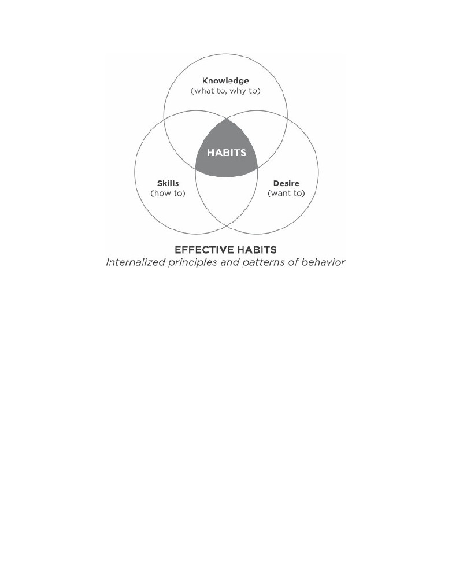
THE MATURITY CONTINUUM
The Seven Habits are not a set of separate or piecemeal psych-up formulas. In
harmony with the natural laws of growth, they provide an incremental,
sequential, highly integrated approach to the development of personal and
interpersonal effectiveness. They move us progressively on a Maturity
Continuum from dependence to independence to interdependence.
We each begin life as an infant, totally dependent on others. We are directed,
nurtured, and sustained by others. Without this nurturing, we would only live for
a few hours or a few days at the most.
Then gradually, over the ensuing months and years, we become more and
more independent—physically, mentally, emotionally, and financially—until
eventually we can essentially take care of ourselves, becoming inner-directed
and self-reliant.
As we continue to grow and mature, we become increasingly aware that all of
nature is interdependent, that there is an ecological system that governs nature,
including society. We further discover that the higher reaches of our nature have
to do with our relationships with others—that human life also is interdependent.
Our growth from infancy to adulthood is in accordance with natural law. And
there are many dimensions to growth. Reaching our full physical maturity, for
example, does not necessarily assure us of simultaneous emotional or mental
maturity. On the other hand, a person’s physical dependence does not mean that
he or she is mentally or emotionally immature.
On the maturity continuum, dependence is the paradigm of you—you take
care of me; you come through for me; you didn’t come through; I blame you for
the results.
Independence is the paradigm of I—I can do it; I am responsible; I am self-
reliant; I can choose.
Interdependence is the paradigm of we—we can do it; we can cooperate; we
can combine our talents and abilities and create something greater together.
Dependent people need others to get what they want. Independent people can
get what they want through their own effort. Interdependent people combine
their own efforts with the efforts of others to achieve their greatest success.
If I were physically dependent—paralyzed or disabled or limited in some
physical way—I would need you to help me. If I were emotionally dependent,
my sense of worth and security would come from your opinion of me. If you
didn’t like me, it could be devastating. If I were intellectually dependent, I would
count on you to do my thinking for me, to think through the issues and problems
of my life.
If I were independent, physically, I could pretty well make it on my own.
Mentally, I could think my own thoughts, I could move from one level of
abstraction to another. I could think creatively and analytically and organize and
express my thoughts in understandable ways. Emotionally, I would be validated
from within. I would be inner directed. My sense of worth would not be a
function of being liked or treated well.
It’s easy to see that independence is much more mature than dependence.
Independence is a major achievement in and of itself. But independence is not
supreme.
Nevertheless, the current social paradigm enthrones independence. It is the
avowed goal of many individuals and social movements. Most of the self-
improvement material puts independence on a pedestal, as though
communication, teamwork, and cooperation were lesser values.
But much of our current emphasis on independence is a reaction to
dependence—to having others control us, define us, use us, and manipulate us.
The little-understood concept of interdependence appears to many to smack of
dependence, and therefore, we find people, often for selfish reasons, leaving
their marriages, abandoning their children, and forsaking all kinds of social
responsibility—all in the name of independence.
The kind of reaction that results in people “throwing off their shackles,”
becoming “liberated,” “asserting themselves,” and “doing their own thing” often
reveals more fundamental dependencies that cannot be run away from because
they are internal rather than external—dependencies such as letting the
weaknesses of other people ruin our emotional lives or feeling victimized by
people and events out of our control.
Of course, we may need to change our circumstances. But the dependence
problem is a personal maturity issue that has little to do with circumstances.
Even with better circumstances, immaturity and dependence often persist.
True independence of character empowers us to act rather than be acted upon.
It frees us from our dependence on circumstances and other people and is a
worthy, liberating goal. But it is not the ultimate goal in effective living.
Independent thinking alone is not suited to interdependent reality. Independent
people who do not have the maturity to think and act interdependently may be
good individual producers, but they won’t be good leaders or team players.
They’re not coming from the paradigm of interdependence necessary to succeed
in marriage, family, or organizational reality.
Life is, by nature, highly interdependent. To try to achieve maximum
effectiveness through independence is like trying to play tennis with a golf club
—the tool is not suited to the reality.
Interdependence is a far more mature, more advanced concept. If I am
physically interdependent, I am self-reliant and capable, but I also realize that
you and I working together can accomplish far more than, even at my best, I
could accomplish alone. If I am emotionally interdependent, I derive a great
sense of worth within myself, but I also recognize the need for love, for giving,
and for receiving love from others. If I am intellectually interdependent, I realize
that I need the best thinking of other people to join with my own.
As an interdependent person, I have the opportunity to share myself deeply,
meaningfully, with others, and I have access to the vast resources and potential
of other human beings.
Interdependence is a choice only independent people can make. Dependent
people cannot choose to become interdependent. They don’t have the character
to do it; they don’t own enough of themselves.
That’s why Habits 1, 2, and 3 in the following chapters deal with self-mastery.
They move a person from dependence to independence. They are the “Private
Victories,” the essence of character growth. Private victories precede public
victories. You can’t invert that process any more than you can harvest a crop
before you plant it. It’s inside-out.
As you become truly independent, you have the foundation for effective
interdependence. You have the character base from which you can effectively
work on the more personality-oriented
“Public Victories” of teamwork,
cooperation, and communication in Habits 4, 5, and 6.
That does not mean you have to be perfect in Habits 1, 2, and 3 before
working on Habits 4, 5, and 6. Understanding the sequence will help you
manage your growth more effectively, but I’m not suggesting that you put
yourself in isolation for several years until you fully develop Habits 1, 2, and 3.
As part of an interdependent world, you have to relate to that world every day.
But the acute problems of that world can easily obscure the chronic character
causes. Understanding how what you are impacts every interdependent
interaction will help you to focus your efforts sequentially, in harmony with the
natural laws of growth.
Habit 7 is the habit of renewal—a regular, balanced renewal of the four basic
dimensions of life. It circles and embodies all the other habits. It is the habit of
continuous improvement that creates the upward spiral of growth that lifts you to
new levels of understanding and living each of the habits as you come around to
them on a progressively higher plane.1
The diagram on the preceding page is a visual representation of the sequence
and the interdependence of the Seven Habits, and will be used throughout this
book as we explore both the sequential relationship between the habits and also
their synergy—how, in relating to each other, they create bold new forms of each
other that add even more to their value. Each concept or habit will be highlighted
as it is introduced.
EFFECTIVENESS DEFINED
The Seven Habits are habits of effectiveness. Because they are based on
principles, they bring the maximum long-term beneficial results possible. They
become the basis of a person’s character, creating an empowering center of
correct maps from which an individual can effectively solve problems, maximize
opportunities, and continually learn and integrate other principles in an upward
spiral of growth.
They are also habits of effectiveness because they are based on a paradigm of
effectiveness that is in harmony with a natural law, a principle I call the “P/PC
Balance,” which many people break themselves against. This principle can be
easily understood by remembering Aesop’s fable of the goose and the golden
egg.
This fable is the story of a poor farmer who one day discovers in the nest of
his pet goose a glittering golden egg. At first, he thinks it must be some kind of
trick. But as he starts to throw the egg aside, he has second thoughts and takes it
in to be appraised instead.
The egg is pure gold! The farmer can’t believe his good fortune. He becomes
even more incredulous the following day when the experience is repeated. Day
after day, he awakens to rush to the nest and find another golden egg. He
becomes fabulously wealthy; it all seems too good to be true.
But with his increasing wealth comes greed and impatience. Unable to wait
day after day for the golden eggs, the farmer decides he will kill the goose and
get them all at once. But when he opens the goose, he finds it empty. There are
no golden eggs—and now there is no way to get any more. The farmer has
destroyed the goose that produced them.
I suggest that within this fable is a natural law, a principle—the basic
definition of effectiveness. Most people see effectiveness from the golden egg
paradigm: the more you produce, the more you do, the more effective you are.
But as the story shows, true effectiveness is a function of two things: what is
produced (the golden eggs) and the producing asset or capacity to produce (the
goose).
If you adopt a pattern of life that focuses on golden eggs and neglects the
goose, you will soon be without the asset that produces golden eggs. On the
other hand, if you only take care of the goose with no aim toward the golden
eggs, you soon won’t have the wherewithal to feed yourself or the goose.
Effectiveness lies in the balance—what I call the P/PC Balance. P stands for
production of desired results, the golden eggs. PC stands for production
capability, the ability or asset that produces the golden eggs.
THREE KINDS OF ASSETS
Basically, there are three kinds of assets: physical, financial, and human. Let’s
look at each one in turn.
A few years ago, I purchased a physical asset—a power lawnmower. I used it
over and over again without doing anything to maintain it. The mower worked
well for two seasons, but then it began to break down. When I tried to revive it
with service and sharpening, I discovered the engine had lost over half its
original power capacity. It was essentially worthless.
Had I invested in PC—in preserving and maintaining the asset—I would still
be enjoying its P—the mowed lawn. As it was, I had to spend far more time and
money replacing the mower than I ever would have spent, had I maintained it. It
simply wasn’t effective.
In our quest for short-term returns, or results, we often ruin a prized physical
asset—a car, a computer, a washer or dryer, even our body or our environment.
Keeping P and PC in balance makes a tremendous difference in the effective use
of physical assets.
It also powerfully impacts the effective use of financial assets. How often do
people confuse principal with interest? Have you ever invaded principal to
increase your standard of living, to get more golden eggs? The decreasing
principal has decreasing power to produce interest or income. And the dwindling
capital becomes smaller and smaller until it no longer supplies even basic needs.
Our most important financial asset is our own capacity to earn. If we don’t
continually invest in improving our own PC, we severely limit our options.
We’re locked into our present situation, running scared of our corporation or our
boss’s opinion of us, economically dependent and defensive. Again, it simply
isn’t effective.
In the human area, the P/PC Balance is equally fundamental, but even more
important, because people control physical and financial assets.
When two people in a marriage are more concerned about getting the golden
eggs, the benefits, than they are in preserving the relationship that makes them
possible, they often become insensitive and inconsiderate, neglecting the little
kindnesses and courtesies so important to a deep relationship. They begin to use
control levers to manipulate each other, to focus on their own needs, to justify
their own position and look for evidence to show the wrongness of the other
person. The love, the richness, the softness and spontaneity begin to deteriorate.
The goose gets sicker day by day.
And what about a parent’s relationship with a child? When children are little,
they are very dependent, very vulnerable. It becomes so easy to neglect the PC
work—the training, the communicating, the relating, the listening. It’s easy to
take advantage, to manipulate, to get what you want the way you want it—right
now! You’re bigger, you’re smarter, and you’re right! So why not just tell them
what to do? If necessary, yell at them, intimidate them, insist on your way.
Or you can indulge them. You can go for the golden egg of popularity, of
pleasing them, giving them their way all the time. Then they grow up without
any internal sense of standards or expectations, without a personal commitment
to being disciplined or responsible.
Either way—authoritarian or permissive—you have the golden egg mentality.
You want to have your way or you want to be liked. But what happens,
meantime, to the goose? What sense of responsibility, of self-discipline, of
confidence in the ability to make good choices or achieve important goals is a
child going to have a few years down the road? And what about your
relationship? When he reaches those critical teenage years, the identity crises,
will he know from his experience with you that you will listen without judging,
that you really, deeply care about him as a person, that you can be trusted, no
matter what? Will the relationship be strong enough for you to reach him, to
communicate with him, to influence him?
Suppose you want your daughter to have a clean room—that’s P, production,
the golden egg. And suppose you want her to clean it—that’s PC, production
capability. Your daughter is the goose, the asset, that produces the golden egg.
If you have P and PC in balance, she cleans the room cheerfully, without being
reminded, because she is committed and has the discipline to stay with the
commitment. She is a valuable asset, a goose that can produce golden eggs.
But if your paradigm is focused on production, on getting the room clean, you
might find yourself nagging her to do it. You might even escalate your efforts to
threatening or yelling, and in your desire to get the golden egg, you undermine
the health and welfare of the goose.
***
Let me share with you an interesting PC experience I had with one of my
daughters. We were planning a private date, which is something I enjoy regularly
with each of my children. We find that the anticipation of the date is as satisfying
as the realization.
So I approached my daughter and said, “Honey, tonight’s your night. What do
you want to do?”
“Oh, Dad, that’s okay,” she replied.
“No, really,” I said. “What would you like to do?”
“Well,” she finally said, “what I want to do, you don’t really want to do.”
“Really, honey,” I said earnestly, “I want to do it. No matter what, it’s your
choice.”
“I want to go see Star Wars,” she replied. “But I know you don’t like Star
Wars. You slept through it before. You don’t like these fantasy movies. That’s
okay, Dad.”
“No, honey, if that’s what you’d like to do, I’d like to do it.”
“Dad, don’t worry about it. We don’t always have to have this date.” She
paused and then added, “But you know why you don’t like Star Wars? It’s
because you don’t understand the philosophy and training of a Jedi Knight.”
“What?”
“You know the things you teach, Dad? Those are the same things that go into
the training of a Jedi Knight.”
“Really? Let’s go to Star Wars!”
And we did. She sat next to me and gave me the paradigm. I became her
student, her learner. It was totally fascinating. I could begin to see out of a new
paradigm the whole way a Jedi Knight’s basic philosophy in training is
manifested in different circumstances.
That experience was not a planned P experience; it was the serendipitous fruit
of a PC investment. It was bonding and very satisfying. But we enjoyed golden
eggs, too, as the goose—the quality of the relationship—was significantly fed.
ORGANIZATIONAL PC
One of the immensely valuable aspects of any correct principle is that it is
valid and applicable in a wide variety of circumstances. Throughout this book, I
would like to share with you some of the ways in which these principles apply to
organizations, including families, as well as to individuals.
When people fail to respect the P/PC Balance in their use of physical assets in
organizations, they decrease organizational effectiveness and often leave others
with dying geese.
For example, a person in charge of a physical asset, such as a machine, may
be eager to make a good impression on his superiors. Perhaps the company is in
a rapid growth stage and promotions are coming fast. So he produces at optimum
levels—no downtime, no maintenance. He runs the machine day and night. The
production is phenomenal, costs are down, and profits skyrocket. Within a short
time, he’s promoted. Golden eggs!
But suppose you are his successor on the job. You inherit a very sick goose, a
machine that, by this time, is rusted and starts to break down. You have to invest
heavily in downtime and maintenance. Costs skyrocket; profits nose-dive. And
who gets blamed for the loss of golden eggs? You do. Your predecessor
liquidated the asset, but the accounting system only reported unit production,
costs, and profit.
The P/PC Balance is particularly important as it applies to the human assets of
an organization—the customers and the employees.
I know of a restaurant that served a fantastic clam chowder and was packed
with customers every day at lunchtime. Then the business was sold, and the new
owner focused on golden eggs—he decided to water down the chowder. For
about a month, with costs down and revenues constant, profits zoomed. But little
by little, the customers began to disappear. Trust was gone, and business
dwindled to almost nothing. The new owner tried desperately to reclaim it, but
he had neglected the customers, violated their trust, and lost the asset of
customer loyalty. There was no more goose to produce the golden egg.
There are organizations that talk a lot about the customer and then completely
neglect the people that deal with the customer—the employees. The PC principle
is to always treat your employees exactly as you want them to treat your best
customers.
You can buy a person’s hand, but you can’t buy his heart. His heart is where
his enthusiasm, his loyalty is. You can buy his back, but you can’t buy his brain.
That’s where his creativity is, his ingenuity, his resourcefulness.
PC work is treating employees as volunteers just as you treat customers as
volunteers, because that’s what they are. They volunteer the best part—their
hearts and minds.
***
I was in a group once where someone asked, “How do you shape up lazy and
incompetent employees?” One man responded, “Drop hand grenades!” Several
others cheered that kind of macho management talk, that “shape up or ship out”
supervision approach.
But another person in the group asked, “Who picks up the pieces?”
“No pieces.”
“Well, why don’t you do that to your customers?” the other man replied. “Just
say, ‘Listen, if you’re not interested in buying, you can just ship out of this
place.’”
He said, “You can’t do that to customers.”
“Well, how come you can do it to employees?”
“Because they’re in your employ.”
“I see. Are your employees devoted to you? Do they work hard? How’s the
turnover?”
“Are you kidding? You can’t find good people these days. There’s too much
turnover, absenteeism, moonlighting. People just don’t care anymore.”
***
That focus on golden eggs—that attitude, that paradigm—is totally inadequate to
tap into the powerful energies of the mind and heart of another person. A short-
term bottom line is important, but it isn’t all-important.
Effectiveness lies in the balance. Excessive focus on P results in ruined health,
worn-out machines, depleted bank accounts, and broken relationships. Too much
focus on PC is like a person who runs three or four hours a day, bragging about
the extra ten years of life it creates, unaware he’s spending them running. Or a
person endlessly going to school, never producing, living on other people’s
golden eggs—the eternal student syndrome.
To maintain the P/PC Balance, the balance between the golden egg
(production) and the health and welfare of the goose (production capability) is
often a difficult judgment call. But I suggest it is the very essence of
effectiveness. It balances short term with long term. It balances going for the
grade and paying the price to get an education. It balances the desire to have a
room clean and the building of a relationship in which the child is internally
committed to do it—cheerfully, willingly, without external supervision.
It’s a principle you can see validated in your own life when you burn the
candle at both ends to get more golden eggs and wind up sick or exhausted,
unable to produce any at all; or when you get a good night’s sleep and wake up
ready to produce throughout the day.
You can see it when you press to get your own way with someone and
somehow feel an emptiness in the relationship; or when you really take time to
invest in a relationship and you find the desire and ability to work together, to
communicate, takes a quantum leap.
The P/PC Balance is the very essence of effectiveness. It’s validated in every
arena of life. We can work with it or against it, but it’s there. It’s a lighthouse.
It’s the definition and paradigm of effectiveness upon which the Seven Habits in
this book are based.
HOW TO USE THIS BOOK
Before we begin work on the Seven Habits of Highly Effective People, I
would like to suggest two paradigm shifts that will greatly increase the value you
will receive from this material.
First, I would recommend that you not “see” this material as a book, in the
sense that it is something to read once and put on a shelf.
You may choose to read it completely through once for a sense of the whole.
But the material is designed to be a companion in the continual process of
change and growth. It is organized incrementally and with suggestions for
application at the end of each habit so that you can study and focus on any
particular habit as you are ready.
As you progress to deeper levels of understanding and implementation, you
can go back time and again to the principles contained in each habit and work to
expand your knowledge, skill, and desire.
Second, I would suggest that you shift your paradigm of your own
involvement in this material from the role of learner to that of teacher. Take an
inside-out approach, and read with the purpose in mind of sharing or discussing
what you learn with someone else within 48 hours after you learn it.
If you had known, for example, that you would be teaching the material on the
P/PC Balance principle to someone else within 48 hours, would it have made a
difference in your reading experience? Try it now as you read the final section in
this chapter. Read as though you are going to teach it to your spouse, your child,
a business associate, or a friend today or tomorrow, while it is still fresh, and
notice the difference in your mental and emotional process.
I guarantee that if you approach the material in each of the following chapters
in this way, you will not only better remember what you read, but your
perspective will be expanded, your understanding deepened, and your
motivation to apply the material increased.
In addition, as you openly, honestly share what you’re learning with others,
you may be surprised to find that negative labels or perceptions others may have
of you tend to disappear. Those you teach will see you as a changing, growing
person, and will be more inclined to be helpful and supportive as you work,
perhaps together, to integrate the Seven Habits into your lives.
WHAT YOU CAN EXPECT
In the last analysis, as Marilyn Ferguson observed, “No one can persuade
another to change. Each of us guards a gate of change that can only be opened
from the inside. We cannot open the gate of another, either by argument or by
emotional appeal.”
If you decide to open your “gate of change” to really understand and live the
principles embodied in the Seven Habits, I feel comfortable in assuring you
several positive things will happen.
First, your growth will be evolutionary, but the net effect will be
revolutionary. Would you not agree that the P/PC Balance principle alone, if
fully lived, would transform most individuals and organizations?
The net effect of opening the “gate of change” to the first three habits—the
habits of Private Victory—will be significantly increased self-confidence. You
will come to know yourself in a deeper, more meaningful way—your nature,
your deepest values and your unique contribution capacity. As you live your
values, your sense of identity, integrity, control, and inner-directedness will
infuse you with both exhilaration and peace. You will define yourself from
within, rather than by people’s opinions or by comparisons to others. “Wrong”
and “right” will have little to do with being found out.
Ironically, you’ll find that as you care less about what others think of you, you
will care more about what others think of themselves and their worlds, including
their relationship with you. You’ll no longer build your emotional life on other
people’s weaknesses. In addition, you’ll find it easier and more desirable to
change because there is something—some core deep within—that is essentially
changeless.
As you open yourself to the next three habits—the habits of Public Victory—
you will discover and unleash both the desire and the resources to heal and
rebuild important relationships that have deteriorated, or even broken. Good
relationships will improve—become deeper, more solid, more creative, and more
adventuresome.
The seventh habit, if deeply internalized, will renew the first six and will
make you truly independent and capable of effective interdependence. Through
it, you can charge your own batteries.
Whatever your present situation, I assure you that you are not your habits. You
can replace old patterns of self-defeating behavior with new patterns, new habits
of effectiveness, happiness, and trust-based relationships.
With genuine caring, I encourage you to open the gate of change and growth
as you study these habits. Be patient with yourself. Self-growth is tender; it’s
holy ground. There’s no greater investment.
It’s obviously not a quick fix. But I assure you, you will feel benefits and see
immediate payoffs that will be encouraging. In the words of Thomas Paine,
“That which we obtain too easily, we esteem too lightly. It is dearness only
which gives everything its value. Heaven knows how to put a proper price on its
goods.”
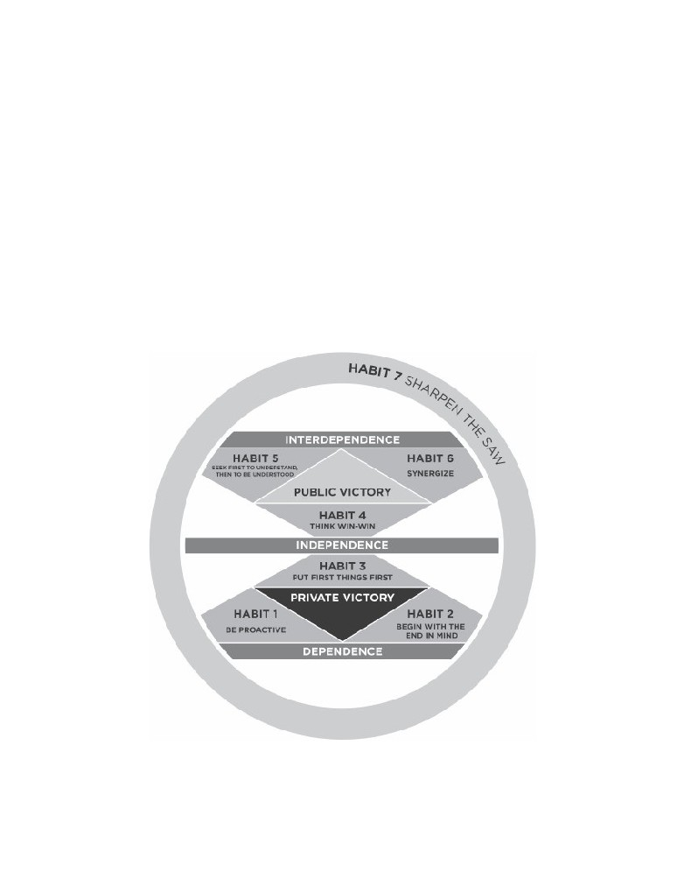
Part Two
PRIVATE VICTORY
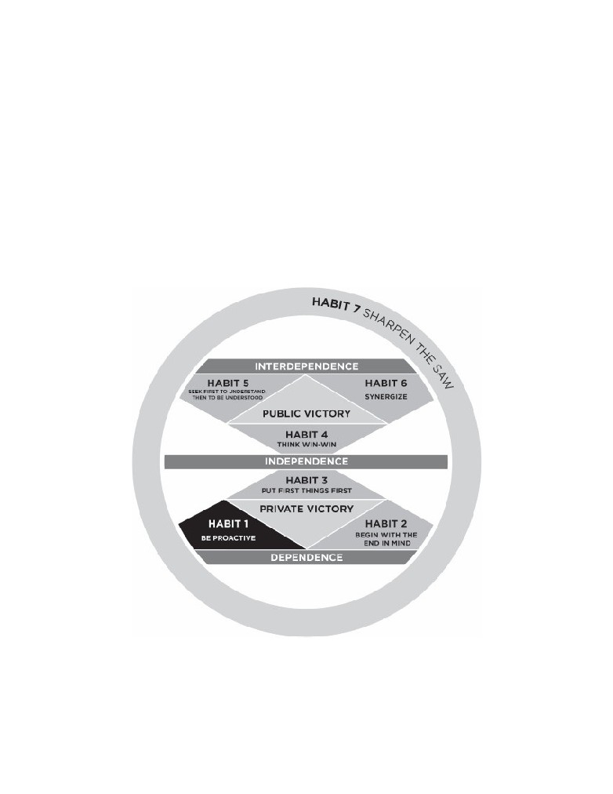
HABIT 1:
BE PROACTIVE
PRINCIPLES OF PERSONAL VISION
I know of no more encouraging fact than the unquestionable ability of man
to elevate his life by conscious endeavor.
HENRY DAVID THOREAU
As you read this book, try to stand apart from yourself. Try to project your
consciousness upward into a corner of the room and see yourself, in your mind’s
eye, reading. Can you look at yourself almost as though you were someone else?
Now try something else. Think about the mood you are now in. Can you
identify it? What are you feeling? How would you describe your present mental
state?
Now think for a minute about how your mind is working. Is it quick and alert?
Do you sense that you are torn between doing this mental exercise and
evaluating the point to be made out of it?
Your ability to do what you just did is uniquely human. Animals do not
possess this ability. We call it “self-awareness” or the ability to think about your
very thought process. This is the reason why man has dominion over all things in
the world and why he can make significant advances from generation to
generation.
This is why we can evaluate and learn from others’ experiences as well as our
own. This is also why we can make and break our habits.
We are not our feelings. We are not our moods. We are not even our thoughts.
The very fact that we can think about these things separates us from them and
from the animal world. Self-awareness enables us to stand apart and examine
even the way we “see” ourselves—our self-paradigm, the most fundamental
paradigm of effectiveness. It affects not only our attitudes and behaviors, but
also how we see other people. It becomes our map of the basic nature of
mankind.
In fact, until we take how we see ourselves (and how we see others) into
account, we will be unable to understand how others see and feel about
themselves and their world. Unaware, we will project our intentions on their
behavior and call ourselves objective.
This significantly limits our personal potential and our ability to relate to
others as well. But because of the unique human capacity of self-awareness, we
can examine our paradigms to determine whether they are reality- or principle-
based or if they are a function of conditioning and conditions.
THE SOCIAL MIRROR
If the only vision we have of ourselves comes from the social mirror—from
the current social paradigm and from the opinions, perceptions, and paradigms
of the people around us—our view of ourselves is like the reflection in the crazy
mirror room at the carnival.
“You’re never on time.”
“Why can’t you ever keep things in order?”
“You must be an artist!”
“You eat like a horse!”
“I can’t believe you won!”
“This is so simple. Why can’t you understand?”
These visions are disjointed and out of proportion. They are often more
projections than reflections, projecting the concerns and character weaknesses of
people giving the input rather than accurately reflecting what we are.
The reflection of the current social paradigm tells us we are largely
determined by conditioning and conditions. While we have acknowledged the
tremendous power of conditioning in our lives, to say that we are determined by
it, that we have no control over that influence, creates quite a different map.
There are actually three social maps—three theories of determinism widely
accepted, independently or in combination, to explain the nature of man. Genetic
determinism basically says your grandparents did it to you. That’s why you have
such a temper. Your grandparents had short tempers and it’s in your DNA. It just
goes through the generations and you inherited it. In addition, you’re Irish, and
that’s the nature of Irish people.
Psychic determinism basically says your parents did it to you. Your
upbringing, your childhood experience essentially laid out your personal
tendencies and your character structure. That’s why you’re afraid to be in front
of a group. It’s the way your parents brought you up. You feel terribly guilty if
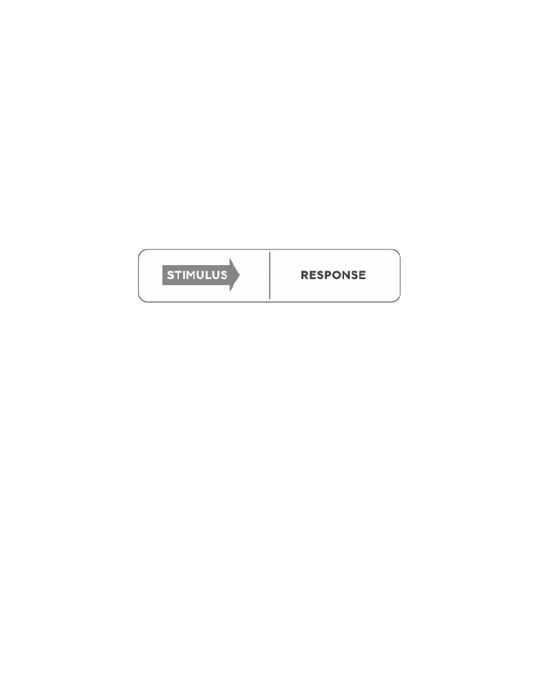
you make a mistake because you
“remember” deep inside the emotional
scripting when you were very vulnerable and tender and dependent. You
“remember” the emotional punishment, the rejection, the comparison with
somebody else when you didn’t perform as well as expected.
Environmental determinism basically says your boss is doing it to you—or
your spouse, or that bratty teenager, or your economic situation, or national
policies. Someone or something in your environment is responsible for your
situation.
Each of these maps is based on the stimulus/response theory we most often
think of in connection with Pavlov’s experiments with dogs. The basic idea is
that we are conditioned to respond in a particular way to a particular stimulus.
How accurately and functionally do these deterministic maps describe the
territory? How clearly do these mirrors reflect the true nature of man? Do they
become self-fulfilling prophecies? Are they based on principles we can validate
within ourselves?
BETWEEN STIMULUS AND RESPONSE
In answer to those questions, let me share with you the catalytic story of
Victor Frankl.
Frankl was a determinist raised in the tradition of Freudian psychology, which
postulates that whatever happens to you as a child shapes your character and
personality and basically governs your whole life. The limits and parameters of
your life are set, and, basically, you can’t do much about it.
Frankl was also a psychiatrist and a Jew. He was imprisoned in the death
camps of Nazi Germany, where he experienced things that were so repugnant to
our sense of decency that we shudder to even repeat them.
His parents, his brother, and his wife died in the camps or were sent to the gas
ovens. Except for his sister, his entire family perished. Frankl himself suffered
torture and innumerable indignities, never knowing from one moment to the next
if his path would lead to the ovens or if he would be among the “saved” who
would remove the bodies or shovel out the ashes of those so fated.
One day, naked and alone in a small room, he began to become aware of what
he later called “the last of the human freedoms”—the freedom his Nazi captors
could not take away. They could control his entire environment, they could do
what they wanted to his body, but Victor Frankl himself was a self-aware being
who could look as an observer at his very involvement. His basic identity was
intact. He could decide within himself how all of this was going to affect him.
Between what happened to him, or the stimulus, and his response to it, was his
freedom or power to choose that response.
In the midst of his experiences, Frankl would project himself into different
circumstances, such as lecturing to his students after his release from the death
camps. He would describe himself in the classroom, in his mind’s eye, and give
his students the lessons he was learning during his very torture.
Through a series of such disciplines—mental, emotional, and moral,
principally using memory and imagination—he exercised his small, embryonic
freedom until it grew larger and larger, until he had more freedom than his Nazi
captors. They had more liberty, more options to choose from in their
environment; but he had more freedom, more internal power to exercise his
options. He became an inspiration to those around him, even to some of the
guards. He helped others find meaning in their suffering and dignity in their
prison existence.
In the midst of the most degrading circumstances imaginable, Frankl used the
human endowment of self-awareness to discover a fundamental principle about
the nature of man: Between stimulus and response, man has the freedom to
choose.
Within the freedom to choose are those endowments that make us uniquely
human. In addition to self-awareness, we have imagination—the ability to create
in our minds beyond our present reality. We have conscience—a deep inner
awareness of right and wrong, of the principles that govern our behavior, and a
sense of the degree to which our thoughts and actions are in harmony with them.
And we have independent will—the ability to act based on our self-awareness,
free of all other influences.
Even the most intelligent animals have none of these endowments. To use a
computer metaphor, they are programmed by instinct and/or training. They can
be trained to be responsible, but they can’t take responsibility for that training; in
other words, they can’t direct it. They can’t change the programming. They’re
not even aware of it.
But because of our unique human endowments, we can write new programs
for ourselves totally apart from our instincts and training. This is why an
animal’s capacity is relatively limited and man’s is unlimited. But if we live like
animals, out of our own instincts and conditioning and conditions, out of our
collective memory, we too will be limited.
The deterministic paradigm comes primarily from the study of animals—rats,
monkeys, pigeons, dogs—and neurotic and psychotic people. While this may
meet certain criteria of some researchers because it seems measurable and
predictable, the history of mankind and our own self-awareness tell us that this
map doesn’t describe the territory at all!
Our unique human endowments lift us above the animal world. The extent to
which we exercise and develop these endowments empowers us to fulfill our
uniquely human potential. Between stimulus and response is our greatest power
—the freedom to choose.
“PROACTIVITY” DEFINED
In discovering the basic principle of the nature of man, Frankl described an
accurate self-map from which he began to develop the first and most basic habit
of a highly effective person in any environment, the habit of proactivity.
While the word proactivity is now fairly common in management literature, it
is a word you won’t find in most dictionaries. It means more than merely taking
initiative. It means that as human beings, we are responsible for our own lives.
Our behavior is a function of our decisions, not our conditions. We can
subordinate feelings to values. We have the initiative and the responsibility to
make things happen.
Look at the word responsibility—“response-ability”—the ability to choose
your response. Highly proactive people recognize that responsibility. They do
not blame circumstances, conditions, or conditioning for their behavior. Their
behavior is a product of their own conscious choice, based on values, rather than
a product of their conditions, based on feeling.
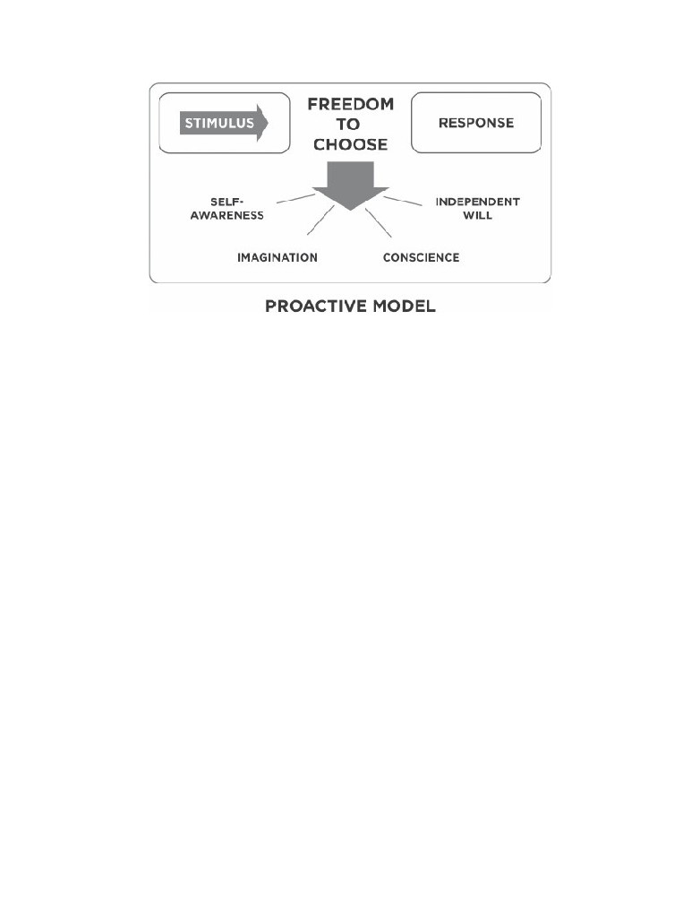
Because we are, by nature, proactive, if our lives are a function of
conditioning and conditions, it is because we have, by conscious decision or by
default, chosen to empower those things to control us.
In making such a choice, we become reactive. Reactive people are often
affected by their physical environment. If the weather is good, they feel good. If
it isn’t, it affects their attitude and their performance. Proactive people can carry
their own weather with them. Whether it rains or shines makes no difference to
them. They are value driven; and if their value is to produce good quality work,
it isn’t a function of whether the weather is conducive to it or not.
Reactive people are also affected by their social environment, by the “social
weather.” When people treat them well, they feel well; when people don’t, they
become defensive or protective. Reactive people build their emotional lives
around the behavior of others, empowering the weaknesses of other people to
control them.
The ability to subordinate an impulse to a value is the essence of the proactive
person. Reactive people are driven by feelings, by circumstances, by conditions,
by their environment. Proactive people are driven by values—carefully thought
about, selected and internalized values.
Proactive people are still influenced by external stimuli, whether physical,
social, or psychological. But their response to the stimuli, conscious or
unconscious, is a value-based choice or response.
As Eleanor Roosevelt observed, “No one can hurt you without your consent.”
In the words of Gandhi, “They cannot take away our self respect if we do not
give it to them.” It is our willing permission, our consent to what happens to us,
that hurts us far more than what happens to us in the first place.
I admit this is very hard to accept emotionally, especially if we have had years
and years of explaining our misery in the name of circumstance or someone
else’s behavior. But until a person can say deeply and honestly, “I am what I am
today because of the choices I made yesterday,” that person cannot say, “I
choose otherwise.”
***
Once in Sacramento when I was speaking on the subject of proactivity, a woman
in the audience stood up in the middle of my presentation and started talking
excitedly. It was a large audience, and as a number of people turned to look at
her, she suddenly became aware of what she was doing, grew embarrassed and
sat back down. But she seemed to find it difficult to restrain herself and started
talking to the people around her. She seemed so happy.
I could hardly wait for a break to find out what had happened. When it finally
came, I immediately went to her and asked if she would be willing to share her
experience.
“You just can’t imagine what’s happened to me!” she exclaimed. “I’m a full-
time nurse to the most miserable, ungrateful man you can possibly imagine.
Nothing I do is good enough for him. He never expresses appreciation; he hardly
even acknowledges me. He constantly harps at me and finds fault with
everything I do. This man has made my life miserable and I often take my
frustration out on my family. The other nurses feel the same way. We almost
pray for his demise.
“And for you to have the gall to stand up there and suggest that nothing can
hurt me, that no one can hurt me without my consent, and that I have chosen my
own emotional life of being miserable—well, there was just no way I could buy
into that.
“But I kept thinking about it. I really went inside myself and began to ask, ‘Do
I have the power to choose my response?’
“When I finally realized that I do have that power, when I swallowed that
bitter pill and realized that I had chosen to be miserable, I also realized that I
could choose not to be miserable.
“At that moment I stood up. I felt as though I was being let out of San
Quentin. I wanted to yell to the whole world, ‘I am free! I am let out of prison!
No longer am I going to be controlled by the treatment of some person.’”
***
It’s not what happens to us, but our response to what happens to us that hurts us.
Of course, things can hurt us physically or economically and can cause sorrow.
But our character, our basic identity, does not have to be hurt at all. In fact, our
most difficult experiences become the crucibles that forge our character and
develop the internal powers, the freedom to handle difficult circumstances in the
future and to inspire others to do so as well.
Frankl is one of many who have been able to develop the personal freedom in
difficult circumstances to lift and inspire others. The autobiographical accounts
of Vietnam prisoners of war provide additional persuasive testimony of the
transforming power of such personal freedom and the effect of the responsible
use of that freedom on the prison culture and on the prisoners, both then and
now.
We have all known individuals in very difficult circumstances, perhaps with a
terminal illness or a severe physical handicap, who maintain magnificent
emotional strength. How inspired we are by their integrity! Nothing has a
greater, longer lasting impression upon another person than the awareness that
someone has transcended suffering, has transcended circumstance, and is
embodying and expressing a value that inspires and ennobles and lifts life.
***
One of the most inspiring times Sandra and I have ever had took place over a
four-year period with a dear friend of ours named Carol, who had a wasting
cancer disease. She had been one of Sandra’s bridesmaids, and they had been
best friends for over 25 years.
When Carol was in the very last stages of the disease, Sandra spent time at her
bedside helping her write her personal history. She returned from those
protracted and difficult sessions almost transfixed by admiration for her friend’s
courage and her desire to write special messages to be given to her children at
different stages in their lives.
Carol would take as little pain-killing medication as possible, so that she had
full access to her mental and emotional faculties. Then she would whisper into a
tape recorder or to Sandra directly as she took notes. Carol was so proactive, so
brave, and so concerned about others that she became an enormous source of
inspiration to many people around her.
I’ll never forget the experience of looking deeply into Carol’s eyes the day
before she passed away and sensing out of that deep hollowed agony a person of
tremendous intrinsic worth. I could see in her eyes a life of character,
contribution, and service as well as love and concern and appreciation.
***
Many times over the years, I have asked groups of people how many have ever
experienced being in the presence of a dying individual who had a magnificent
attitude and communicated love and compassion and served in unmatchable
ways to the very end. Usually, about one-fourth of the audience responds in the
affirmative. I then ask how many of them will never forget these individuals—
how many were transformed, at least temporarily, by the inspiration of such
courage, and were deeply moved and motivated to more noble acts of service
and compassion. The same people respond again, almost inevitably.
Victor Frankl suggests that there are three central values in life—the
experiential, or that which happens to us; the creative, or that which we bring
into existence; and the attitudinal, or our response in difficult circumstances such
as terminal illness.
My own experience with people confirms the point Frankl makes—that the
highest of the three values is attitudinal, in the paradigm or reframing sense. In
other words, what matters most is how we respond to what we experience in life.
Difficult circumstances often create paradigm shifts, whole new frames of
reference by which people see the world and themselves and others in it, and
what life is asking of them. Their larger perspective reflects the attitudinal values
that lift and inspire us all.
TAKING THE INITIATIVE
Our basic nature is to act, and not be acted upon. As well as enabling us to
choose our response to particular circumstances, this empowers us to create
circumstances.
Taking initiative does not mean being pushy, obnoxious, or aggressive. It does
mean recognizing our responsibility to make things happen.
Over the years, I have frequently counseled people who wanted better jobs to
show more initiative—to take interest and aptitude tests, to study the industry,
even the specific problems the organizations they are interested in are facing,
and then to develop an effective presentation showing how their abilities can
help solve the organization’s problem. It’s called “solution selling,” and is a key
paradigm in business success.
The response is usually agreement—most people can see how powerfully such
an approach would affect their opportunities for employment or advancement.
But many of them fail to take the necessary steps, the initiative, to make it
happen.
“I don’t know where to go to take the interest and aptitude tests.”
“How do I study industry and organizational problems? No one wants to help
me.”
“I don’t have any idea how to make an effective presentation.”
Many people wait for something to happen or someone to take care of them.
But people who end up with the good jobs are the proactive ones who are
solutions to problems, not problems themselves, who seize the initiative to do
whatever is necessary, consistent with correct principles, to get the job done.
Whenever someone in our family, even one of the younger children, takes an
irresponsible position and waits for someone else to make things happen or
provide a solution, we tell them, “Use your R and I!” (resourcefulness and
initiative). In fact, often before we can say it, they answer their own complaints,
“I know—use my R and I!”
Holding people to the responsible course is not demeaning; it is affirming.
Proactivity is part of human nature, and, although the proactive muscles may be
dormant, they are there. By respecting the proactive nature of other people, we
provide them with at least one clear, undistorted reflection from the social
mirror.
Of course, the maturity level of the individual has to be taken into account.
We can’t expect high creative cooperation from those who are deep into
emotional dependence. But we can, at least, affirm their basic nature and create
an atmosphere where people can seize opportunities and solve problems in an
increasingly self-reliant way.
ACT OR BE ACTED UPON
The difference between people who exercise initiative and those who don’t is
literally the difference between night and day. I’m not talking about a 25 to 50
percent difference in effectiveness; I’m talking about a
5000-plus percent
difference, particularly if they are smart, aware, and sensitive to others.
It takes initiative to create the P/PC Balance of effectiveness in your life. It
takes initiative to develop the Seven Habits. As you study the other six habits,
you will see that each depends on the development of your proactive muscles.
Each puts the responsibility on you to act. If you wait to be acted upon, you will
be acted upon. And growth and opportunity consequences attend either road.
***
At one time I worked with a group of people in the home improvement industry,
representatives from twenty different organizations who met quarterly to share
their numbers and problems in an uninhibited way.
This was during a time of heavy recession, and the negative impact on this
particular industry was even heavier than on the economy in general. These
people were fairly discouraged as we began.
The first day, our discussion question was “What’s happening to us? What’s
the stimulus?” Many things were happening. The environmental pressures were
powerful. There was widespread unemployment, and many of these people were
laying off friends just to maintain the viability of their enterprises. By the end of
the day, everyone was even more discouraged.
The second day, we addressed the question, “What’s going to happen in the
future?” We studied environmental trends with the underlying reactive
assumption that those things would create their future. By the end of the second
day, we were even more depressed. Things were going to get worse before they
got better, and everyone knew it.
So on the third day, we decided to focus on the proactive question, “What is
our response? What are we going to do? How can we exercise initiative in this
situation?” In the morning we talked about managing and reducing costs. In the
afternoon we discussed increasing market share. We brainstormed both areas,
then concentrated on several very practical, very doable things. A new spirit of
excitement, hope, and proactive awareness concluded the meetings.
At the very end of the third day, we summarized the results of the conference
in a three-part answer to the question, “How’s business?”
Part one: What’s happening to us is not good, and the trends suggest that it
will get worse before it gets better.
Part two: But what we are causing to happen is very good, for we are better
managing and reducing our costs and increasing our market share.
Part three: Therefore, business is better than ever.
***
Now what would a reactive mind say to that? “Oh, come on. Face facts. You can
only carry this positive thinking and self-psych approach so far. Sooner or later
you have to face reality.”
But that’s the difference between positive thinking and proactivity. We did
face reality. We faced the reality of the current circumstance and of future
projections. But we also faced the reality that we had the power to choose a
positive response to those circumstances and projections. Not facing reality
would have been to accept the idea that what’s happening in our environment
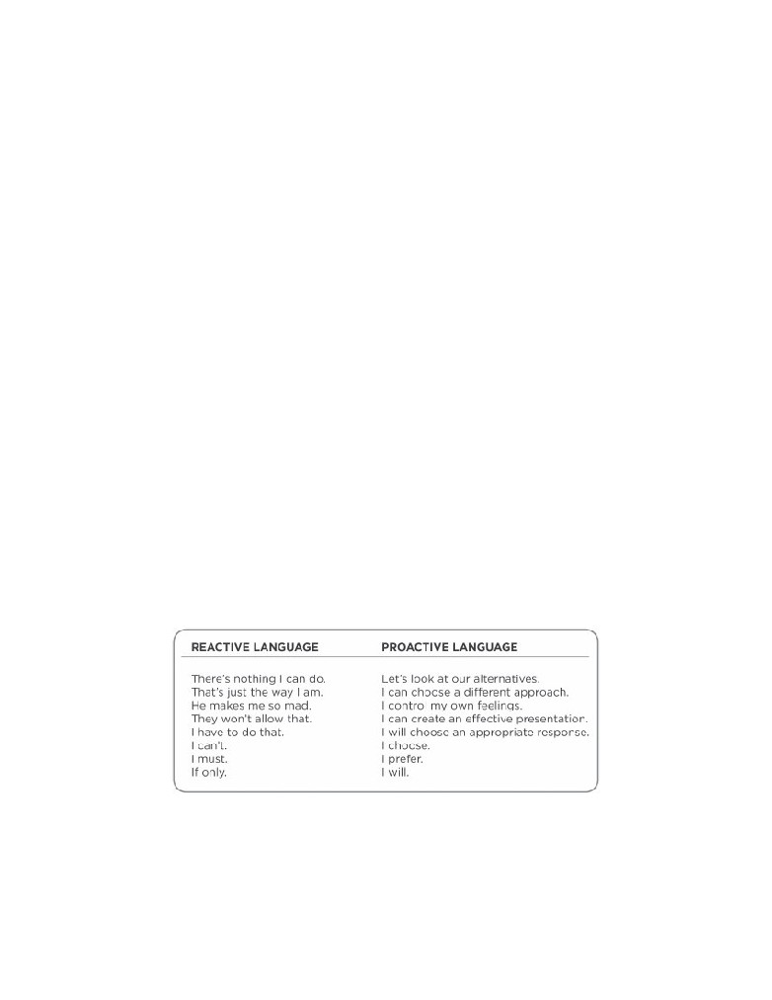
had to determine us.
Businesses, community groups, organizations of every kind—including
families—can be proactive. They can combine the creativity and resourcefulness
of proactive individuals to create a proactive culture within the organization. The
organization does not have to be at the mercy of the environment; it can take the
initiative to accomplish the shared values and purposes of the individuals
involved.
LISTENING TO OUR LANGUAGE
Because our attitudes and behaviors flow out of our paradigms, if we use our
self-awareness to examine them, we can often see in them the nature of our
underlying maps. Our language, for example, is a very real indicator of the
degree to which we see ourselves as proactive people.
The language of reactive people absolves them of responsibility.
“That’s me. That’s just the way I am.” I am determined. There’s nothing I can
do about it.
“He makes me so mad!” I’m not responsible. My emotional life is governed by
something outside my control.
“I can’t do that. I just don’t have the time.” Something outside me—limited
time—is controlling me.
“If only my wife were more patient.” Someone else’s behavior is limiting my
effectiveness.
“I have to do it.” Circumstances or other people are forcing me to do what I
do. I’m not free to choose my own actions.
That language comes from a basic paradigm of determinism. And the whole
spirit of it is the transfer of responsibility. I am not responsible, not able to
choose my response.
One time a student asked me, “Will you excuse me from class? I have to go on
a tennis trip.”
“You have to go, or you choose to go?” I asked.
“I really have to,” he exclaimed.
“What will happen if you don’t?”
“Why, they’ll kick me off the team.”
“How would you like that consequence?”
“I wouldn’t.”
“In other words, you choose to go because you want the consequence of
staying on the team. What will happen if you miss my class?”
“I don’t know.”
“Think hard. What do you think would be the natural consequence of not
coming to class?”
“You wouldn’t kick me out, would you?”
“That would be a social consequence. That would be artificial. If you don’t
participate on the tennis team, you don’t play. That’s natural. But if you don’t
come to class, what would be the natural consequence?”
“I guess I’ll miss the learning.”
“That’s right. So you have to weigh that consequence against the other
consequence and make a choice. I know if it were me, I’d choose to go on the
tennis trip. But never say you have to do anything.”
“I choose to go on the tennis trip,” he meekly replied.
“And miss my class?” I replied in mock disbelief.
***
A serious problem with reactive language is that it becomes a self-fulfilling
prophecy. People become reinforced in the paradigm that they are determined,
and they produce evidence to support the belief. They feel increasingly
victimized and out of control, not in charge of their life or their destiny. They
blame outside forces—other people, circumstances, even the stars—for their
own situation.
***
At one seminar where I was speaking on the concept of proactivity, a man came
up and said, “Stephen, I like what you’re saying. But every situation is so
different. Look at my marriage. I’m really worried. My wife and I just don’t
have the same feelings for each other we used to have. I guess I just don’t love
her anymore and she doesn’t love me. What can I do?”
“The feeling isn’t there anymore?” I asked.
“That’s right,” he reaffirmed.
“And we have three children we’re really
concerned about. What do you suggest?”
“Love her,” I replied.
“I told you, the feeling just isn’t there anymore.”
“Love her.”
“You don’t understand. The feeling of love just isn’t there.”
“Then love her. If the feeling isn’t there, that’s a good reason to love her.”
“But how do you love when you don’t love?”
“My friend, love is a verb. Love—the feeling—is a fruit of love, the verb. So
love her. Serve her. Sacrifice. Listen to her. Empathize. Appreciate. Affirm her.
Are you willing to do that?”
***
In the great literature of all progressive societies, love is a verb. Reactive people
make it a feeling. They’re driven by feelings. Hollywood has generally scripted
us to believe that we are not responsible, that we are a product of our feelings.
But the Hollywood script does not describe the reality. If our feelings control our
actions, it is because we have abdicated our responsibility and empowered them
to do so.
Proactive people make love a verb. Love is something you do: the sacrifices
you make, the giving of self, like a mother bringing a newborn into the world. If
you want to study love, study those who sacrifice for others, even for people
who offend or do not love in return. If you are a parent, look at the love you have
for the children you sacrificed for. Love is a value that is actualized through
loving actions. Proactive people subordinate feelings to values. Love, the
feeling, can be recaptured.
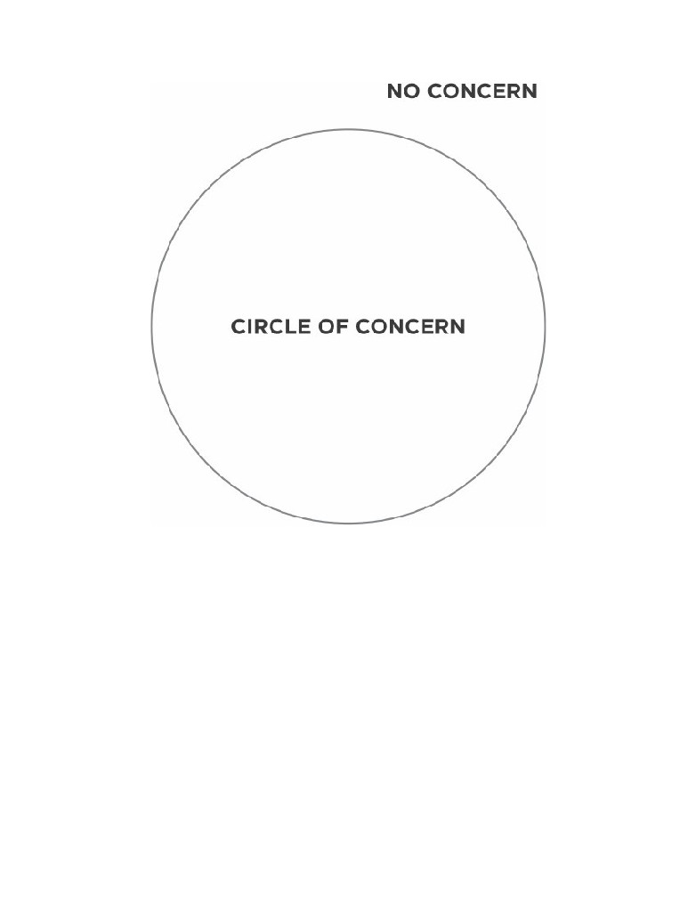
CIRCLE OF CONCERN/CIRCLE OF INFLUENCE
Another excellent way to become more self-aware regarding our own degree
of proactivity is to look at where we focus our time and energy. We each have a
wide range of concerns—our health, our children, problems at work, the national
debt, nuclear war. We could separate those from things in which we have no
particular mental or emotional involvement by creating a “Circle of Concern.”
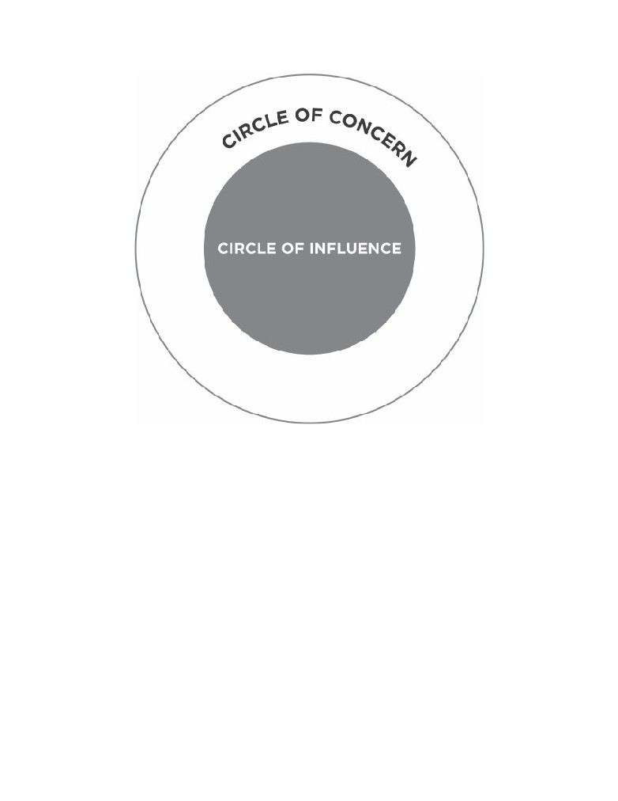
As we look at those things within our Circle of Concern, it becomes apparent
that there are some things over which we have no real control and others that we
can do something about. We could identify those concerns in the latter group by
circumscribing them within a smaller Circle of Influence.
By determining which of these two circles is the focus of most of our time and
energy, we can discover much about the degree of our proactivity.
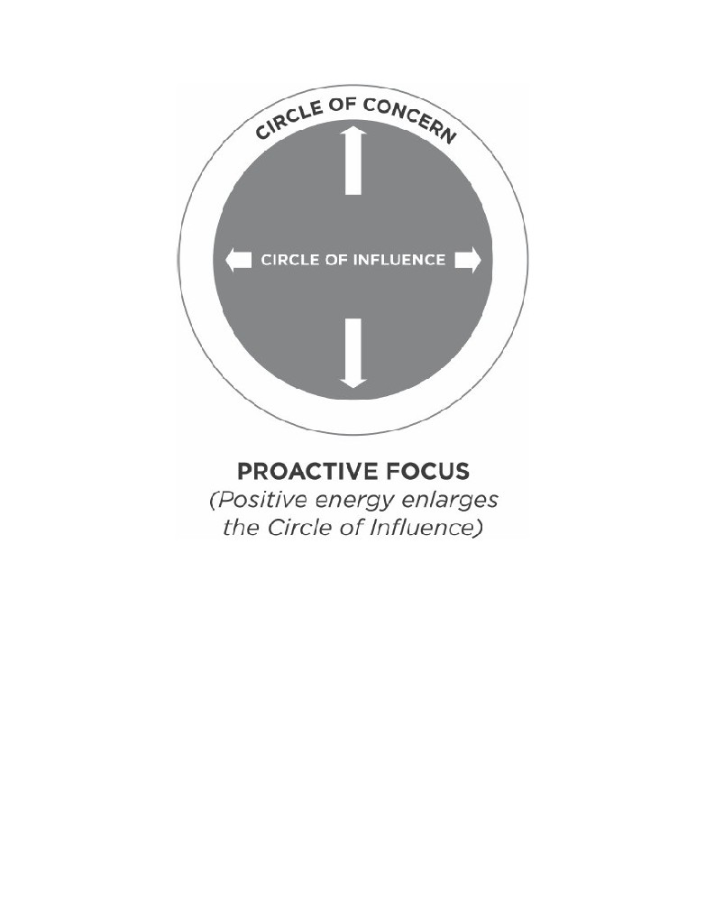
Proactive people focus their efforts in the Circle of Influence. They work on
the things they can do something about. The nature of their energy is positive,
enlarging and magnifying, causing their Circle of Influence to increase.
Reactive people, on the other hand, focus their efforts in the Circle of
Concern. They focus on the weakness of other people, the problems in the
environment, and circumstances over which they have no control. Their focus
results in blaming and accusing attitudes, reactive language, and increased
feelings of victimization. The negative energy generated by that focus, combined
with neglect in areas they could do something about, causes their Circle of
Influence to shrink.
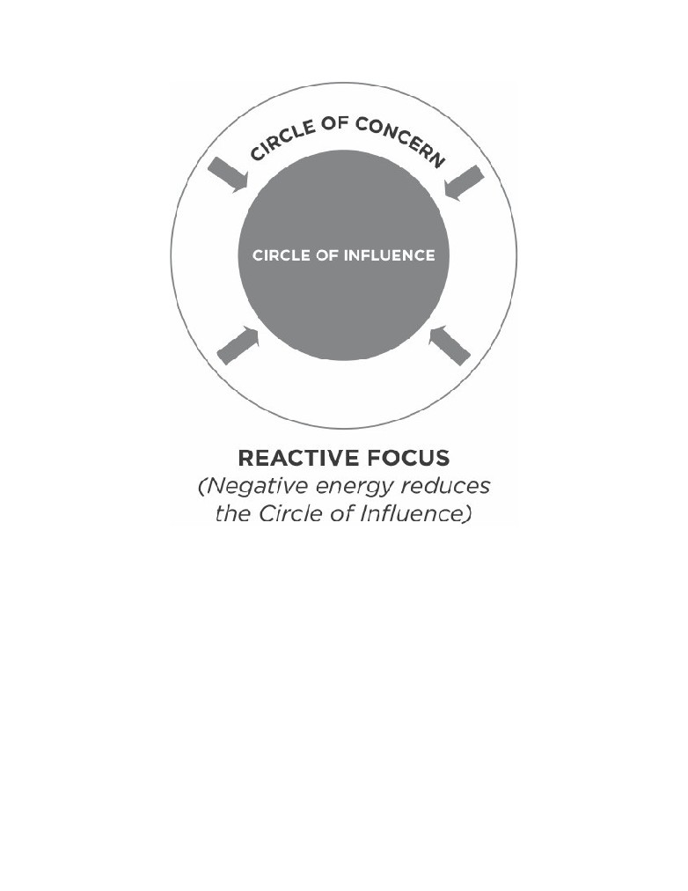
As long as we are working in our Circle of Concern, we empower the things
within it to control us. We aren’t taking the proactive initiative necessary to
effect positive change.
Earlier, I shared with you the story of my son who was having serious
problems in school. Sandra and I were deeply concerned about his apparent
weaknesses and about the way other people were treating him.
But those things were in our Circle of Concern. As long as we focused our
efforts on those things, we accomplished nothing, except to increase our own
feelings of inadequacy and helplessness and to reinforce our son’s dependence.
It was only when we went to work in our Circle of Influence, when we
focused on our own paradigms, that we began to create a positive energy that
changed ourselves and eventually influenced our son as well. By working on
ourselves instead of worrying about conditions, we were able to influence the
conditions.
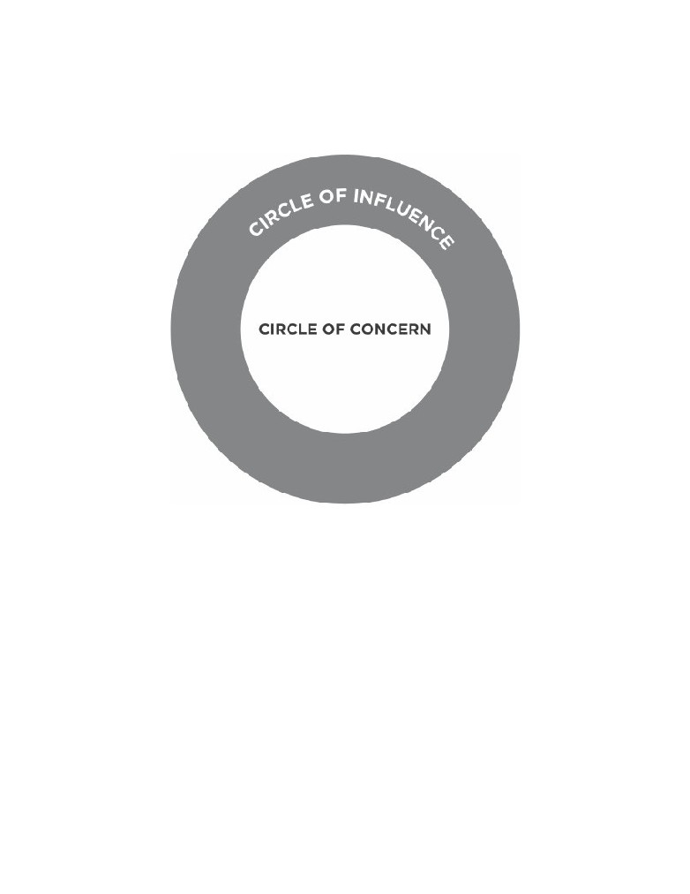
Because of position, wealth, role, or relationships, there are some
circumstances in which a person’s Circle of Influence is larger than his or her
Circle of Concern.
This situation reflects a self-inflicted emotional myopia—another reactive
selfish life-style focused in the Circle of Concern.
Though they may have to prioritize the use of their influence, proactive people
have a Circle of Concern that is at least as big as their Circle of Influence,
accepting the responsibility to use their influence effectively.
DIRECT, INDIRECT, AND NO CONTROL
The problems we face fall in one of three areas: direct control (problems
involving our own behavior); indirect control (problems involving other people’s
behavior); or no control (problems we can do nothing about, such as our past or
situational realities). The proactive approach puts the first step in the solution of
all three kinds of problems within our present Circle of Influence.
Direct control problems are solved by working on our habits. They are
obviously within our Circle of Influence. These are the “Private Victories” of
Habits 1, 2, and 3.
Indirect control problems are solved by changing our methods of influence.
These are the “Public Victories” of Habits
4,
5, and
6. I have personally
identified over 30 separate methods of human influence—as separate as empathy
is from confrontation, as separate as example is from persuasion. Most people
have only three or four of these methods in their repertoire, starting usually with
reasoning, and, if that doesn’t work, moving to flight or fight. How liberating it
is to accept the idea that I can learn new methods of human influence instead of
constantly trying to use old ineffective methods to “shape up” someone else!
No control problems involve taking the responsibility to change the line on the
bottom on our face—to smile, to genuinely and peacefully accept these problems
and learn to live with them, even though we don’t like them. In this way, we do
not empower these problems to control us. We share in the spirit embodied in the
Alcoholics Anonymous prayer, “Lord, give me the courage to change the things
which can and ought to be changed, the serenity to accept the things which
cannot be changed, and the wisdom to know the difference.”
Whether a problem is direct, indirect, or no control, we have in our hands the
first step to the solution. Changing our habits, changing our methods of influence
and changing the way we see our no control problems are all within our Circle of
Influence.
EXPANDING THE CIRCLE OF INFLUENCE
It is inspiring to realize that in choosing our response to circumstance, we
powerfully affect our circumstance. When we change one part of the chemical
formula, we change the nature of the results.
***
I worked with one organization for several years that was headed by a very
dynamic person. He could read trends. He was creative, talented, capable, and
brilliant—and everyone knew it. But he had a very dictatorial style of
management. He tended to treat people like “gofers,” as if they didn’t have any
judgment. His manner of speaking to those who worked in the organization was,
“Go for this… go for that… now do this… now do that—I’ll make the
decisions.”
The net effect was that he alienated almost the entire executive team
surrounding him. They would gather in the corridors and complain to each other
about him. Their discussion was all very sophisticated, very articulate, as if they
were trying to help the situation. But they did it endlessly, absolving themselves
of responsibility in the name of the president’s weaknesses.
“You can’t imagine what’s happened this time,” someone would say. “The
other day he went into my department. I had everything all laid out. But he came
in and gave totally different signals. Everything I’d done for months was shot,
just like that. I don’t know how I’m supposed to keep working for him. How
long will it be until he retires?”
“He’s only fifty-nine,” someone else would respond. “Do you think you can
survive for six more years?”
“I don’t know. He’s the kind of person they probably won’t retire anyway.”
But one of the executives was proactive. He was driven by values, not
feelings. He took the initiative—he anticipated, he empathized, he read the
situation. He was not blind to the president’s weaknesses; but instead of
criticizing them, he would compensate for them. Where the president was weak
in his style, he’d try to buffer his own people and make such weaknesses
irrelevant. And he’d work with the president’s strengths—his vision, talent,
creativity.
This man focused on his Circle of Influence. He was treated like a gofer, also.
But he would do more than what was expected. He anticipated the president’s
need. He read with empathy the president’s underlying concern, so when he
presented information, he also gave his analysis and his recommendations based
on that analysis.
As I sat one day with the president in an advisory capacity, he said, “Stephen,
I just can’t believe what this man has done. He’s not only given me the
information I requested, but he’s provided additional information that’s exactly
what we needed. He even gave me his analysis of it in terms of my deepest
concerns, and a list of his recommendations.
“The recommendations are consistent with the analysis, and the analysis is
consistent with the data. He’s remarkable! What a relief not to have to worry
about this part of the business.”
At the next meeting, it was
“go for this” and
“go for that” to all the
executives… but one. To this man, it was “What’s your opinion?” His Circle of
Influence had grown.
This caused quite a stir in the organization. The reactive minds in the
executive corridors began shooting their vindictive ammunition at this proactive
man.
It’s the nature of reactive people to absolve themselves of responsibility. It’s
so much safer to say, “I am not responsible.” If I say “I am responsible,” I might
have to say, “I am irresponsible.” It would be very hard for me to say that I have
the power to choose my response and that the response I have chosen has
resulted in my involvement in a negative, collusive environment, especially if
for years I have absolved myself of responsibility for results in the name of
someone else’s weaknesses.
So these executives focused on finding more information, more ammunition,
more evidence as to why they weren’t responsible.
But this man was proactive toward them, too. Little by little, his Circle of
Influence toward them grew also. It continued to expand to the extent that
eventually no one made any significant moves in the organization without that
man’s involvement and approval, including the president. But the president did
not feel threatened because this man’s strength complemented his strength and
compensated for his weaknesses. So he had the strength of two people, a
complementary team.
This man’s success was not dependent on his circumstances. Many others
were in the same situation. It was his chosen response to those circumstances,
his focus on his Circle of Influence, that made the difference.
***
There are some people who interpret “proactive” to mean pushy, aggressive, or
insensitive; but that isn’t the case at all. Proactive people aren’t pushy. They’re
smart, they’re value driven, they read reality, and they know what’s needed.
Look at Gandhi. While his accusers were in the legislative chambers
criticizing him because he wouldn’t join in their Circle of Concern rhetoric
condemning the British Empire for their subjugation of the Indian people,
Gandhi was out in the rice paddies, quietly, slowly, imperceptibly expanding his
Circle of Influence with the field laborers. A groundswell of support, of trust, of
confidence followed him through the countryside. Though he held no office or
political position, through compassion, courage, fasting, and moral persuasion he
eventually brought England to its knees, breaking political domination of three
hundred million people with the power of his greatly expanded Circle of
Influence.
THE “HAVE’S” AND THE “BE’S”
One way to determine which circle our concern is in is to distinguish between
the have’s and the be’s. The Circle of Concern is filled with the have’s:
“I’ll be happy when I have my house paid off.”
“If only I had a boss who wasn’t such a dictator…”
“If only I had a more patient husband…”
“If I had more obedient kids…”
“If I had my degree…”
“If I could just have more time to myself…”
The Circle of Influence is filled with the be’s—I can be more patient, be wise,
be loving. It’s the character focus.
Anytime we think the problem is “out there,” that thought is the problem. We
empower what’s out there to control us. The change paradigm is “outside-in”—
what’s out there has to change before we can change.
The proactive approach is to change from the inside-out: to be different, and
by being different, to effect positive change in what’s out there—I can be more
resourceful, I can be more diligent, I can be more creative, I can be more
cooperative.
One of my favorite stories is one in the Old Testament, part of the
fundamental fabric of the Judeo-Christian tradition. It’s the story of Joseph, who
was sold into slavery in Egypt by his brothers at the age of seventeen. Can you
imagine how easy it would have been for him to languish in self-pity as a servant
of Potiphar, to focus on the weaknesses of his brothers and his captors and on all
he didn’t have? But Joseph was proactive. He worked on be. And within a short
period of time, he was running Potiphar’s household. He was in charge of all that
Potiphar had because the trust was so high.
Then the day came when Joseph was caught in a difficult situation and refused
to compromise his integrity. As a result, he was unjustly imprisoned for thirteen
years. But again he was proactive. He worked on the inner circle, on being
instead of having, and soon he was running the prison and eventually the entire
nation of Egypt, second only to the Pharaoh.
I know this idea is a dramatic paradigm shift for many people. It is so much
easier to blame other people, conditioning, or conditions for our own stagnant
situation. But we are responsible—“response-able”—to control our lives and to
powerfully influence our circumstances by working on be, on what we are.
If I have a problem in my marriage, what do I really gain by continually
confessing my wife’s sins? By saying I’m not responsible, I make myself a
powerless victim; I immobilize myself in a negative situation. I also diminish my
ability to influence her—my nagging, accusing, critical attitude only makes her
feel validated in her own weakness. My criticism is worse than the conduct I
want to correct. My ability to positively impact the situation withers and dies.
If I really want to improve my situation, I can work on the one thing over
which I have control—myself. I can stop trying to shape up my wife and work
on my own weaknesses. I can focus on being a great marriage partner, a source
of unconditional love and support. Hopefully, my wife will feel the power of
proactive example and respond in kind. But whether she does or doesn’t, the
most positive way I can influence my situation is to work on myself, on my
being.
There are so many ways to work in the Circle of Influence—to be a better
listener, to be a more loving marriage partner, to be a better student, to be a more
cooperative and dedicated employee. Sometimes the most proactive thing we
can do is to be happy, just to genuinely smile. Happiness, like unhappiness, is a
proactive choice. There are things, like the weather, that our Circle of Influence
will never include. But as proactive people, we can carry our own physical or
social weather with us. We can be happy and accept those things that at present
we can’t control, while we focus our efforts on the things that we can.
THE OTHER END OF THE STICK
Before we totally shift our life focus to our Circle of Influence, we need to
consider two things in our Circle of Concern that merit deeper thought
—consequences and mistakes.
While we are free to choose our actions, we are not free to choose the
consequences of those actions. Consequences are governed by natural law. They
are out in the Circle of Concern. We can decide to step in front of a fast-moving
train, but we cannot decide what will happen when the train hits us.
We can decide to be dishonest in our business dealings. While the social
consequences of that decision may vary depending on whether or not we are
found out, the natural consequences to our basic character are a fixed result.
Our behavior is governed by principles. Living in harmony with them brings
positive consequences; violating them brings negative consequences. We are free
to choose our response in any situation, but in doing so, we choose the attendant
consequence. “When we pick up one end of the stick, we pick up the other.”
Undoubtedly, there have been times in each of our lives when we have picked
up what we later felt was the wrong stick. Our choices have brought
consequences we would rather have lived without. If we had the choice to make
over again, we would make it differently. We call these choices mistakes, and
they are the second thing that merits our deeper thought.
For those filled with regret, perhaps the most needful exercise of proactivity is
to realize that past mistakes are also out there in the Circle of Concern. We can’t
recall them, we can’t undo them, we can’t control the consequences that came as
a result.
As a college quarterback, one of my sons learned to snap his wristband
between plays as a kind of mental checkoff whenever he or anyone made a
“setting back” mistake, so the last mistake wouldn’t affect the resolve and
execution of the next play.
The proactive approach to a mistake is to acknowledge it instantly, correct and
learn from it. This literally turns a failure into a success. “Success,” said IBM
founder T. J. Watson, “is on the far side of failure.”
But not to acknowledge a mistake, not to correct it and learn from it, is a
mistake of a different order. It usually puts a person on a self-deceiving, self-
justifying path, often involving rationalization (rational lies) to self and to others.
This second mistake, this cover-up, empowers the first, giving it disproportionate
importance, and causes far deeper injury to self.
It is not what others do or even our own mistakes that hurt us the most; it is
our response to those things. Chasing after the poisonous snake that bites us will
only drive the poison through our entire system. It is far better to take measures
immediately to get the poison out.
Our response to any mistake affects the quality of the next moment. It is
important to immediately admit and correct our mistakes so that they have no
power over that next moment and we are empowered again.
MAKING AND KEEPING COMMITMENTS
At the very heart of our Circle of Influence is our ability to make and keep
commitments and promises. The commitments we make to ourselves and to
others, and our integrity to those commitments, is the essence and clearest
manifestation of our proactivity.
It is also the essence of our growth. Through our human endowments of self-
awareness and conscience, we become conscious of areas of weakness, areas for
improvement, areas of talent that could be developed, areas that need to be
changed or eliminated from our lives. Then, as we recognize and use our
imagination and independent will to act on that awareness—making promises,
setting goals, and being true to them—we build the strength of character, the
being, that makes possible every other positive thing in our lives.
It is here that we find two ways to put ourselves in control of our lives
immediately. We can make a promise—and keep it. Or we can set a goal—and
work to achieve it. As we make and keep commitments, even small
commitments, we begin to establish an inner integrity that gives us the
awareness of self-control and the courage and strength to accept more of the
responsibility for our own lives. By making and keeping promises to ourselves
and others, little by little, our honor becomes greater than our moods.
The power to make and keep commitments to ourselves is the essence of
developing the basic habits of effectiveness. Knowledge, skill, and desire are all
within our control. We can work on any one to improve the balance of the three.
As the area of intersection becomes larger, we more deeply internalize the
principles upon which the habits are based and create the strength of character to
move us in a balanced way toward increasing effectiveness in our lives.
PROACTIVITY: THE THIRTY-DAY TEST
We don’t have to go through the death camp experience of Frankl to recognize
and develop our own proactivity. It is in the ordinary events of every day that we
develop the proactive capacity to handle the extraordinary pressures of life. It’s
how we make and keep commitments, how we handle a traffic jam, how we
respond to an irate customer or a disobedient child. It’s how we view our
problems and where we focus our energies. It’s the language we use.
I would challenge you to test the principle of proactivity for thirty days.
Simply try it and see what happens. For thirty days work only in your Circle of
Influence. Make small commitments and keep them. Be a light, not a judge. Be a
model, not a critic. Be part of the solution, not part of the problem.
Try it in your marriage, in your family, in your job. Don’t argue for other
people’s weaknesses. Don’t argue for your own. When you make a mistake,
admit it, correct it, and learn from it—immediately. Don’t get into a blaming,
accusing mode. Work on things you have control over. Work on you. On be.
Look at the weaknesses of others with compassion, not accusation. It’s not
what they’re not doing or should be doing that’s the issue. The issue is your own
chosen response to the situation and what you should be doing. If you start to
think the problem is “out there,” stop yourself. That thought is the problem.
People who exercise their embryonic freedom day after day will, little by
little, expand that freedom. People who do not will find that it withers until they
are literally “being lived.” They are acting out the scripts written by parents,
associates, and society.
We are responsible for our own effectiveness, for our own happiness, and
ultimately, I would say, for most of our circumstances.
Samuel Johnson observed: “The fountain of content must spring up in the
mind, and he who hath so little knowledge of human nature as to seek happiness
by changing anything but his own disposition, will waste his life in fruitless
efforts and multiply the grief he proposes to remove.”
Knowing that we are responsible—“response-able”—is fundamental to
effectiveness and to every other habit of effectiveness we will discuss.
APPLICATION SUGGESTIONS
1. For a full day, listen to your language and to the language of the people
around you. How often do you use and hear reactive phrases such as “If
only,” “I can’t,” or “I have to”?
2. Identify an experience you might encounter in the near future where, based
on past experience, you would probably behave reactively. Review the
situation in the context of your Circle of Influence. How could you respond
proactively? Take several moments and create the experience vividly in
your mind, picturing yourself responding in a proactive manner. Remind
yourself of the gap between stimulus and response. Make a commitment to
yourself to exercise your freedom to choose.
3. Select a problem from your work or personal life that is frustrating to you.
Determine whether it is a direct, indirect, or no control problem. Identify
the first step you can take in your Circle of Influence to solve it and then
take that step.
4. Try the thirty-day test of proactivity. Be aware of the change in your Circle
of Influence.
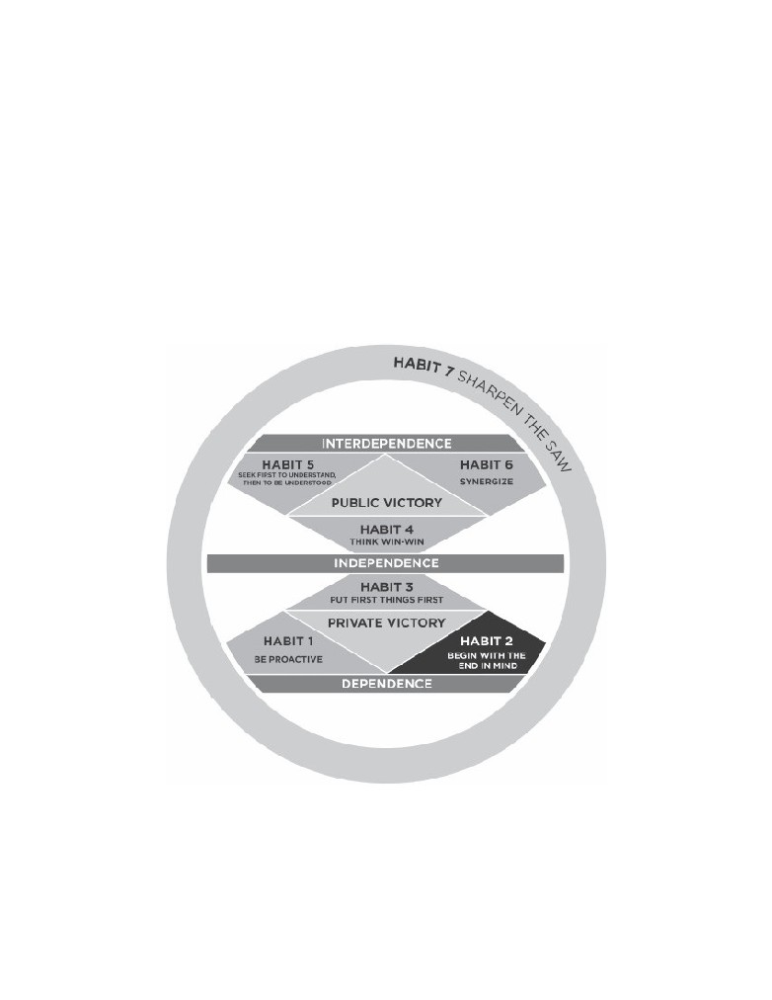
HABIT 2:
BEGIN WITH THE END IN MIND
PRINCIPLES OF PERSONAL
LEADERSHIP
What lies behind us and what lies before us are tiny matters compared to
what lies within us.
OLIVER WENDELL HOLMES
Please find a place to read these next few pages where you can be alone and
uninterrupted. Clear your mind of everything except what you will read and
what I will invite you to do. Don’t worry about your schedule, your business,
your family, or your friends. Just focus with me and really open your mind.
In your mind’s eye, see yourself going to the funeral of a loved one. Picture
yourself driving to the funeral parlor or chapel, parking the car, and getting out.
As you walk inside the building, you notice the flowers, the soft organ music.
You see the faces of friends and family you pass along the way. You feel the
shared sorrow of losing, the joy of having known, that radiates from the hearts of
the people there.
As you walk down to the front of the room and look inside the casket, you
suddenly come face to face with yourself. This is your funeral, three years from
today. All these people have come to honor you, to express feelings of love and
appreciation for your life.
As you take a seat and wait for the services to begin, you look at the program
in your hand. There are to be four speakers. The first is from your family,
immediate and also extended—children, brothers, sisters, nephews, nieces,
aunts, uncles, cousins, and grandparents who have come from all over the
country to attend. The second speaker is one of your friends, someone who can
give a sense of what you were as a person. The third speaker is from your work
or profession. And the fourth is from your church or some community
organization where you’ve been involved in service.
Now think deeply. What would you like each of these speakers to say about
you and your life? What kind of husband, wife, father, or mother would you like
their words to reflect? What kind of son or daughter or cousin? What kind of
friend? What kind of working associate?
What character would you like them to have seen in you? What contributions,
what achievements would you want them to remember? Look carefully at the
people around you. What difference would you like to have made in their lives?
Before you read further, take a few minutes to jot down your impressions. It
will greatly increase your personal understanding of Habit 2.
WHAT IT MEANS TO “BEGIN WITH THE END IN MIND”
If you participated seriously in this visualization experience, you touched for a
moment some of your deep, fundamental values. You established brief contact
with that inner guidance system at the heart of your Circle of Influence.
Consider the words of Joseph Addison:
When I look upon the tombs of the great, every emotion of envy dies in me; when I read the
epitaphs of the beautiful, every inordinate desire goes out; when I meet with the grief of parents upon
a tombstone, my heart melts with compassion; when I see the tomb of the parents themselves, I
consider the vanity of grieving for those whom we must quickly follow: when I see kings lying by
those who deposed them, when I consider rival wits placed side by side, or the holy men that divided
the world with their contests and disputes, I reflect with sorrow and astonishment on the little
competitions, factions, and debates of mankind. When I read the several dates of the tombs, of some
that died yesterday, and some six hundred years ago, I consider that great Day when we shall all of us
be Contemporaries, and make our appearance together.
Although Habit 2 applies to many different circumstances and levels of life,
the most fundamental application of “begin with the end in mind” is to begin
today with the image, picture, or paradigm of the end of your life as your frame
of reference or the criterion by which everything else is examined. Each part of
your life—today’s behavior, tomorrow’s behavior, next week’s behavior, next
month’s behavior—can be examined in the context of the whole, of what really
matters most to you. By keeping that end clearly in mind, you can make certain
that whatever you do on any particular day does not violate the criteria you have
defined as supremely important, and that each day of your life contributes in a
meaningful way to the vision you have of your life as a whole.
To begin with the end in mind means to start with a clear understanding of
your destination. It means to know where you’re going so that you better
understand where you are now and so that the steps you take are always in the
right direction.
It’s incredibly easy to get caught up in an activity trap, in the busyness of life,
to work harder and harder at climbing the ladder of success only to discover it’s
leaning against the wrong wall. It is possible to be busy—very busy—without
being very effective.
People often find themselves achieving victories that are empty, successes that
have come at the expense of things they suddenly realize were far more valuable
to them. People from every walk of life—doctors, academicians, actors,
politicians, business professionals, athletes, and plumbers—often struggle to
achieve a higher income, more recognition of a certain degree of professional
competence, only to find that their drive to achieve their goal blinded them to the
things that really mattered most and now are gone.
How different our lives are when we really know what is deeply important to
us, and, keeping that picture in mind, we manage ourselves each day to be and to
do what really matters most. If the ladder is not leaning against the right wall,
every step we take just gets us to the wrong place faster. We may be very busy,
we may be very efficient, but we will also be truly effective only when we begin
with the end in mind.
If you carefully consider what you wanted to be said of you in the funeral
experience, you will find your definition of success. It may be very different
from the definition you thought you had in mind. Perhaps fame, achievement,
money, or some of the other things we strive for are not even part of the right
wall.
When you begin with the end in mind, you gain a different perspective. One
man asked another on the death of a mutual friend, “How much did he leave?”
His friend responded, “He left it all.”
ALL THINGS ARE CREATED TWICE
“Begin with the end in mind” is based on the principle that all things are
created twice. There’s a mental or first creation, and a physical or second
creation, to all things.
Take the construction of a home, for example. You create it in every detail
before you ever hammer the first nail into place. You try to get a very clear sense
of what kind of house you want. If you want a family-centered home, you plan
to put a family room where it would be a natural gathering place. You plan
sliding doors and a patio for children to play outside. You work with ideas. You
work with your mind until you get a clear image of what you want to build.
Then you reduce it to blueprint and develop construction plans. All of this is
done before the earth is touched. If not, then in the second creation, the physical
creation, you will have to make expensive changes that may double the cost of
your home.
The carpenter’s rule is “measure twice, cut once.” You have to make sure that
the blueprint, the first creation, is really what you want, that you’ve thought
everything through. Then you put it into bricks and mortar. Each day you go to
the construction shed and pull out the blueprint to get marching orders for the
day. You begin with the end in mind.
For another example, look at a business. If you want to have a successful
enterprise, you clearly define what you’re trying to accomplish. You carefully
think through the product or service you want to provide in terms of your market
target, then you organize all the elements—financial, research and development,
operations, marketing, personnel, physical facilities, and so on—to meet that
objective. The extent to which you begin with the end in mind often determines
whether or not you are able to create a successful enterprise. Most business
failures begin in the first creation, with problems such as undercapitalization,
misunderstanding of the market, or lack of a business plan.
The same is true with parenting. If you want to raise responsible, self-
disciplined children, you have to keep that end clearly in mind as you interact
with your children on a daily basis. You can’t behave toward them in ways that
undermine their self-discipline or self-esteem.
To varying degrees, people use this principle in many different areas of life.
Before you go on a trip, you determine your destination and plan out the best
route. Before you plant a garden, you plan it out in your mind, possibly on paper.
You create speeches on paper before you give them, you envision the
landscaping in your yard before you landscape it, you design the clothes you
make before you thread the needle.
To the extent to which we understand the principle of two creations and accept
the responsibility for both, we act within and enlarge the borders of our Circle of
Influence. To the extent to which we do not operate in harmony with this
principle and do not take charge of the first creation, we diminish it.
BY DESIGN OR DEFAULT
It’s a principle that all things are created twice, but not all first creations are by
conscious design. In our personal lives, if we do not develop our own self-
awareness and do not become responsible for first creations, we empower other
people and circumstances outside our Circle of Influence to shape much of our
lives by default. We reactively live the scripts handed to us by family, associates,
other people’s agendas, the pressures of circumstance—scripts from our earlier
years, from our training, our conditioning.
These scripts come from people, not principles. And they rise out of our deep
vulnerabilities, our deep dependency on others and our needs for acceptance and
love, for belonging, for a sense of importance and worth, for a feeling that we
matter.
Whether we are aware of it or not, whether we are in control of it or not, there
is a first creation to every part of our lives. We are either the second creation of
our own proactive design, or we are the second creation of other people’s
agendas, of circumstances, or of past habits.
The unique human capacities of self-awareness, imagination, and conscience
enable us to examine first creations and make it possible for us to take charge of
our own first creation, to write our own script. Put another way, Habit 1 says,
“You are the creator.” Habit 2 is the first creation.
LEADERSHIP AND MANAGEMENT—THE TWO CREATIONS
Habit 2 is based on principles of personal leadership, which means that
leadership is the first creation. Leadership is not management. Management is
the second creation, which we’ll discuss in the chapter on Habit
3. But
leadership has to come first.
Management is a bottom line focus: How can I best accomplish certain
things? Leadership deals with the top line: What are the things I want to
accomplish? In the words of both Peter Drucker and Warren Bennis,
“Management is doing things right; leadership is doing the right things.”
Management is efficiency in climbing the ladder of success; leadership
determines whether the ladder is leaning against the right wall.
You can quickly grasp the important difference between the two if you
envision a group of producers cutting their way through the jungle with
machetes. They’re the producers, the problem solvers. They’re cutting through
the undergrowth, clearing it out.
The managers are behind them, sharpening their machetes, writing policy and
procedure manuals, holding muscle development programs, bringing in
improved technologies and setting up working schedules and compensation
programs for machete wielders.
The leader is the one who climbs the tallest tree, surveys the entire situation,
and yells, “Wrong jungle!”
But how do the busy, efficient producers and managers often respond? “Shut
up! We’re making progress.”
As individuals, groups, and businesses, we’re often so busy cutting through
the undergrowth we don’t even realize we’re in the wrong jungle. And the
rapidly changing environment in which we live makes effective leadership more
critical than it has ever been—in every aspect of independent and interdependent
life.
We are more in need of a vision or destination and a compass (a set of
principles or directions) and less in need of a road map. We often don’t know
what the terrain ahead will be like or what we will need to go through it; much
will depend on our judgment at the time. But an inner compass will always give
us direction.
Effectiveness—often even survival—does not depend solely on how much
effort we expend, but on whether or not the effort we expend is in the right
jungle. And the metamorphosis taking place in most every industry and
profession demands leadership first and management second.
In business, the market is changing so rapidly that many products and services
that successfully met consumer tastes and needs a few years ago are obsolete
today. Proactive powerful leadership must constantly monitor environmental
change, particularly customer buying habits and motives, and provide the force
necessary to organize resources in the right direction.
Such changes as deregulation of the airline industry, skyrocketing costs of
health care, and the greater quality and quantity of imported cars impact the
environment in significant ways. If industries do not monitor the environment,
including their own work teams, and exercise the creative leadership to keep
headed in the right direction, no amount of management expertise can keep them
from failing.
Efficient management without effective leadership is, as one individual has
phrased it,
“like straightening deck chairs on the Titanic.” No management
success can compensate for failure in leadership. But leadership is hard because
we’re often caught in a management paradigm.
***
At the final session of a year-long executive development program in Seattle, the
president of an oil company came up to me and said, “Stephen, when you
pointed out the difference between leadership and management in the second
month, I looked at my role as the president of this company and realized that I
had never been into leadership. I was deep into management, buried by pressing
challenges and the details of day-to-day logistics. So I decided to withdraw from
management. I could get other people to do that. I wanted to really lead my
organization.
“It was hard. I went through withdrawal pains because I stopped dealing with
a lot of the pressing, urgent matters that were right in front of me and which gave
me a sense of immediate accomplishment. I didn’t receive much satisfaction as I
started wrestling with the direction issues, the culture building issues, the deep
analysis of problems, the seizing of new opportunities. Others also went through
withdrawal pains from their working style comfort zones. They missed the easy
accessibility I had given them before. They still wanted me to be available to
them, to respond, to help solve their problems on a day-to-day basis.
“But I persisted. I was absolutely convinced that I needed to provide
leadership. And I did. Today our whole business is different. We’re more in line
with our environment. We have doubled our revenues and quadrupled our
profits. I’m into leadership.”
***
I’m convinced that too often parents are also trapped in the management
paradigm, thinking of control, efficiency, and rules instead of direction, purpose,
and family feeling.
And leadership is even more lacking in our personal lives. We’re into
managing with efficiency, setting and achieving goals before we have even
clarified our values.
RESCRIPTING: BECOMING YOUR OWN FIRST CREATOR
As we previously observed, proactivity is based on the unique human
endowment of self-awareness. The two additional unique human endowments
that enable us to expand our proactivity and to exercise personal leadership in
our lives are imagination and conscience.
Through imagination, we can visualize the uncreated worlds of potential that
lie within us. Through conscience, we can come in contact with universal laws
or principles with our own singular talents and avenues of contribution, and with
the personal guidelines within which we can most effectively develop them.
Combined with self-awareness, these two endowments empower us to write our
own script.
Because we already live with many scripts that have been handed to us, the
process of writing our own script is actually more a process of “rescripting,” or
paradigm shifting—of changing some of the basic paradigms that we already
have. As we recognize the ineffective scripts, the incorrect or incomplete
paradigms within us, we can proactively begin to rescript ourselves.
***
I think one of the most inspiring accounts of the rescripting process comes from
the autobiography of Anwar Sadat, past president of Egypt. Sadat had been
reared, nurtured, and deeply scripted in a hatred for Israel. He would make the
statement on national television, “I will never shake the hand of an Israeli as
long as they occupy one inch of Arab soil. Never, never, never!” And huge
crowds all around the country would chant,
“Never, never, never!” He
marshalled the energy and unified the will of the whole country in that script.
The script was very independent and nationalistic, and it aroused deep
emotions in the people. But it was also very foolish, and Sadat knew it. It
ignored the perilous, highly interdependent reality of the situation.
So he rescripted himself. It was a process he had learned when he was a young
man imprisoned in Cell 54, a solitary cell in Cairo Central Prison, as a result of
his involvement in a conspiracy plot against King Farouk. He learned to
withdraw from his own mind and look at it to see if the scripts were appropriate
and wise. He learned how to vacate his own mind and, through a deep personal
process of meditation, to work with his own scriptures, his own form of prayer,
and rescript himself.
He records that he was almost loath to leave his prison cell because it was
there that he realized that real success is success with self. It’s not in having
things, but in having mastery, having victory over self.
For a period of time during Nasser’s administration Sadat was relegated to a
position of relative insignificance. Everyone felt that his spirit was broken, but it
wasn’t. They were projecting their own home movies onto him. They didn’t
understand him. He was biding his time.
And when that time came, when he became president of Egypt and confronted
the political realities, he rescripted himself toward Israel. He visited the Knesset
in Jerusalem and opened up one of the most precedent-breaking peace
movements in the history of the world, a bold initiative that eventually brought
about the Camp David Accord.
Sadat was able to use his self-awareness, his imagination and his conscience
to exercise personal leadership, to change an essential paradigm, to change the
way he saw the situation. He worked in the center of his Circle of Influence. And
from that rescripting, that change in paradigm, flowed changes in behavior and
attitude that affected millions of lives in the wider Circle of Concern.
***
In developing our own self-awareness many of us discover ineffective scripts,
deeply embedded habits that are totally unworthy of us, totally incongruent with
the things we really value in life. Habit 2 says we don’t have to live with those
scripts. We are response-able to use our imagination and creativity to write new
ones that are more effective, more congruent with our deepest values and with
the correct principles that give our values meaning.
Suppose, for example, that I am highly overreactive to my children. Suppose
that whenever they begin to do something I feel is inappropriate, I sense an
immediate tensing in the pit of my stomach. I feel defensive walls go up; I
prepare for battle. My focus is not on the long-term growth and understanding
but on the short-term behavior. I’m trying to win the battle, not the war.
I pull out my ammunition—my superior size, my position of authority—and I
yell or intimidate or I threaten or punish. And I win. I stand there, victorious, in
the middle of the debris of a shattered relationship while my children are
outwardly submissive and inwardly rebellious, suppressing feelings that will
come out later in uglier ways.
Now if I were sitting at that funeral we visualized earlier, and one of my
children was about to speak, I would want his life to represent the victory of
teaching, training, and disciplining with love over a period of years rather than
the battle scars of quick fix skirmishes. I would want his heart and mind to be
filled with the pleasant memories of deep, meaningful times together. I would
want him to remember me as a loving father who shared the fun and the pain of
growing up. I would want him to remember the times he came to me with his
problems and concerns. I would want to have listened and loved and helped. I
would want him to know I wasn’t perfect, but that I had tried with everything I
had. And that, perhaps more than anybody in the world, I loved him.
The reason I would want those things is because, deep down, I value my
children. I love them, I want to help them. I value my role as their father.
But I don’t always see those values. I get caught up in the “thick of thin
things.” What matters most gets buried under layers of pressing problems,
immediate concerns, and outward behaviors. I become reactive. And the way I
interact with my children every day often bears little resemblance to the way I
deeply feel about them.
Because I am self-aware, because I have imagination and conscience, I can
examine my deepest values. I can realize that the script I’m living is not in
harmony with those values, that my life is not the product of my own proactive
design, but the result of the first creation I have deferred to circumstances and
other people. And I can change. I can live out of my imagination instead of my
memory. I can tie myself to my limitless potential instead of my limiting past. I
can become my own first creator.
To begin with the end in mind means to approach my role as a parent, as well
as my other roles in life, with my values and directions clear. It means to be
responsible for my own first creation, to rescript myself so that the paradigms
from which my behavior and attitude flow are congruent with my deepest values
and in harmony with correct principles.
It also means to begin each day with those values firmly in mind. Then as the
vicissitudes, as the challenges come, I can make my decisions based on those
values. I can act with integrity. I don’t have to react to the emotion, the
circumstance. I can be truly proactive, value driven, because my values are clear.
A PERSONAL MISSION STATEMENT
The most effective way I know to begin with the end in mind is to develop a
personal mission statement or philosophy or creed. It focuses on what you want
to be (character) and to do (contributions and achievements) and on the values or
principles upon which being and doing are based.
Because each individual is unique, a personal mission statement will reflect
that uniqueness, both in content and form. My friend, Rolfe Kerr, has expressed
his personal creed in this way:
Succeed at home first.
Seek and merit divine help.
Never compromise with honesty.
Remember the people involved.
Hear both sides before judging.
Obtain counsel of others.
Defend those who are absent.
Be sincere yet decisive.
Develop one new proficiency a year.
Plan tomorrow’s work today.
Hustle while you wait.
Maintain a positive attitude.
Keep a sense of humor.
Be orderly in person and in work.
Do not fear mistakes—fear only the absence of creative, constructive, and corrective responses to
those mistakes.
Facilitate the success of subordinates.
Listen twice as much as you speak.
Concentrate all abilities and efforts on the task at hand, not worrying about the next job or promotion.
A woman seeking to balance family and work values has expressed her sense
of personal mission differently:
I will seek to balance career and family as best I can since both are important to me.
My home will be a place where I and my family, friends, and guests find joy, comfort, peace, and
happiness. Still I will seek to create a clean and orderly environment, yet livable and comfortable. I
will exercise wisdom in what we choose to eat, read, see, and do at home. I especially want to teach
my children to love, to learn, and to laugh—and to work and develop their unique talents.
I value the rights, freedoms, and responsibilities of our democratic society. I will be a concerned
and informed citizen, involved in the political process to ensure my voice is heard and my vote is
counted.
I will be a self-starting individual who exercises initiative in accomplishing my life’s goals. I will
act on situations and opportunities, rather than to be acted upon.
I will always try to keep myself free from addictive and destructive habits. I will develop habits
that free me from old labels and limits and expand my capabilities and choices.
My money will be my servant, not my master. I will seek financial independence over time. My
wants will be subject to my needs and my means. Except for long-term home and car loans, I will
seek to keep myself free from consumer debt. I will spend less than I earn and regularly save or
invest part of my income.
Moreover, I will use what money and talents I have to make life more enjoyable for others
through service and charitable giving.
You could call a personal mission statement a personal constitution. Like the
United States Constitution, it’s fundamentally changeless. In over two hundred
years, there have been only twenty-six amendments, ten of which were in the
original Bill of Rights.
The United States Constitution is the standard by which every law in the
country is evaluated. It is the document the president agrees to defend and
support when he takes the Oath of Office. It is the criterion by which people are
admitted into citizenship. It is the foundation and the center that enables people
to ride through such major traumas as the Civil War, Vietnam, or Watergate. It is
the written standard, the key criterion by which everything else is evaluated and
directed.
The Constitution has endured and serves its vital function today because it is
based on correct principles, on the self-evident truths contained in the
Declaration of Independence. These principles empower the Constitution with a
timeless strength, even in the midst of social ambiguity and change.
“Our
peculiar security,” said Thomas Jefferson, “is in the possession of a written
Constitution.”
A personal mission statement based on correct principles becomes the same
kind of standard for an individual. It becomes a personal constitution, the basis
for making major, life-directing decisions, the basis for making daily decisions
in the midst of the circumstances and emotions that affect our lives. It empowers
individuals with the same timeless strength in the midst of change.
People can’t live with change if there’s not a changeless core inside them. The
key to the ability to change is a changeless sense of who you are, what you are
about and what you value.
With a mission statement, we can flow with changes. We don’t need
prejudgments or prejudices. We don’t need to figure out everything else in life,
to stereotype and categorize everything and everybody in order to accommodate
reality.
Our personal environment is also changing at an ever-increasing pace. Such
rapid change burns out a large number of people who feel they can hardly handle
it, can hardly cope with life. They become reactive and essentially give up,
hoping that the things that happen to them will be good.
But it doesn’t have to be that way. In the Nazi death camps where Victor
Frankl learned the principle of proactivity, he also learned the importance of
purpose, of meaning in life. The essence of “logotherapy,” the philosophy he
later developed and taught, is that many so-called mental and emotional illnesses
are really symptoms of an underlying sense of meaninglessness or emptiness.
Logotherapy eliminates that emptiness by helping the individual to detect his
unique meaning, his mission in life.
Once you have that sense of mission, you have the essence of your own
proactivity. You have the vision and the values which direct your life. You have
the basic direction from which you set your long- and short-term goals. You have
the power of a written constitution based on correct principles, against which
every decision concerning the most effective use of your time, your talents, and
your energies can be effectively measured.
AT THE CENTER
In order to write a personal mission statement, we must begin at the very
center of our Circle of Influence, that center composed of our most basic
paradigms, the lens through which we see the world.
It is here that we deal with our vision and our values. It is here that we use our
endowment of self-awareness to examine our maps and, if we value correct
principles, to make certain that our maps accurately describe the territory, that
our paradigms are based on principles and reality. It is here that we use our
endowment of conscience as a compass to help us detect our own unique talents
and areas of contribution. It is here that we use our endowment of imagination to
mentally create the end we desire, giving direction and purpose to our
beginnings and providing the substance of a written personal constitution.
It is also here that our focused efforts achieve the greatest results. As we work
within the very center of our Circle of Influence, we expand it. This is highest
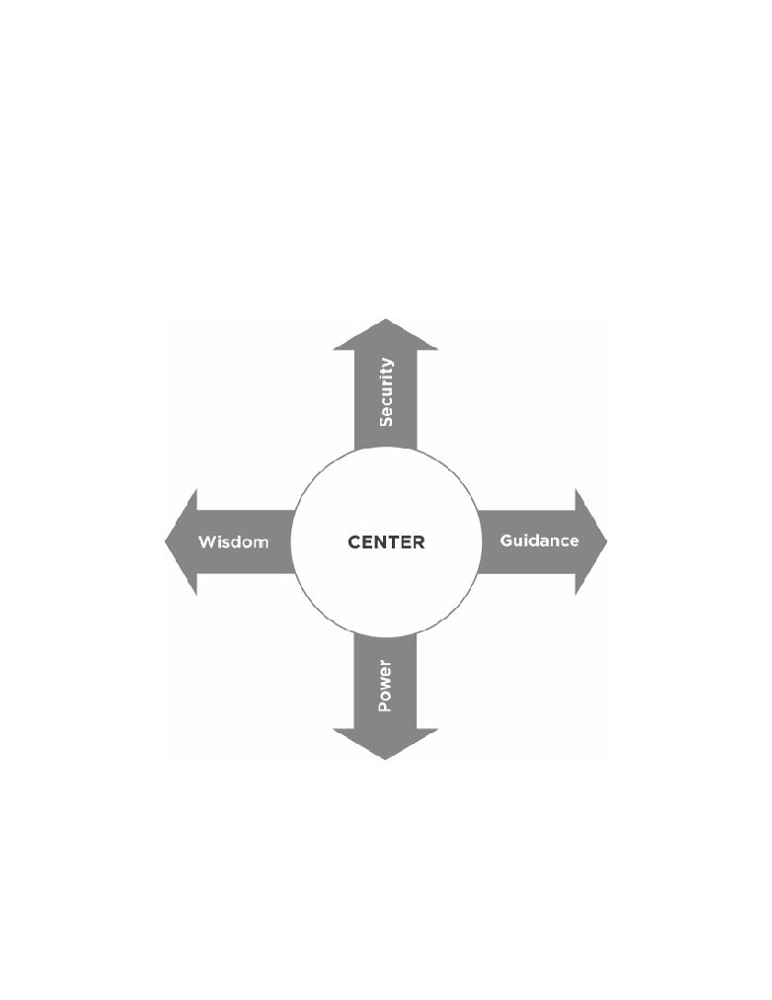
leverage PC work, significantly impacting the effectiveness of every aspect of
our lives.
Whatever is at the center of our life will be the source of our security,
guidance, wisdom, and power.
Security represents your sense of worth, your identity, your emotional
anchorage, your self-esteem, your basic personal strength or lack of it.
Guidance means your source of direction in life. Encompassed by your map,
your internal frame of reference that interprets for you what is happening out
there, are standards or principles or implicit criteria that govern moment by
moment decision making and doing.
***
Wisdom is your perspective on life, your sense of balance, your understanding of
how the various parts and principles apply and relate to each other. It embraces
judgment, discernment, comprehension. It is a gestalt or oneness, an integrated
wholeness.
Power is the faculty or capacity to act, the strength and potency to accomplish
something. It is the vital energy to make choices and decisions. It also includes
the capacity to overcome deeply embedded habits and to cultivate higher, more
effective ones.
These four factors—security, guidance, wisdom, and power—are
interdependent. Security and clear guidance bring true wisdom, and wisdom
becomes the spark or catalyst to release and direct power. When these four
factors are present together, harmonized and enlivened by each other, they create
the great force of a noble personality, a balanced character, a beautifully
integrated individual.
These life-support factors also undergird every other dimension of life. And
none of them is an all-or-nothing matter. The degree to which you have
developed each one could be charted somewhere on a continuum, much like the
maturity continuum described earlier. At the bottom end, the four factors are
weak. You are basically dependent on circumstances or other people, things over
which you have no direct control. At the top end you are in control. You have
independent strength and the foundation for rich, interdependent relationships.
Your security lies somewhere on the continuum between extreme insecurity
on one end, wherein your life is buffeted by all the fickle forces that play upon it,
and a deep sense of high intrinsic worth and personal security on the other end.
Your guidance ranges on the continuum from dependence on the social mirror or
other unstable, fluctuating sources to strong inner direction. Your wisdom falls
somewhere between a totally inaccurate map where everything is distorted and
nothing seems to fit, and a complete and accurate map of life wherein all the
parts and principles are properly related to each other. Your power lies
somewhere between immobilization or being a puppet pulled by someone else’s
strings to high proactivity, the power to act according to your own values instead
of being acted upon by other people and circumstances.
The location of these factors on the continuum, the resulting degree of their
integration, harmony, and balance, and their positive impact on every aspect of
your life is a function of your center, the basic paradigms at your very core.
ALTERNATIVE CENTERS
Each of us has a center, though we usually don’t recognize it as such. Neither
do we recognize the all-encompassing effects of that center on every aspect of
our lives.
Let’s briefly examine several centers or core paradigms people typically have
for a better understanding of how they affect these four fundamental dimensions
and, ultimately, the sum of life that flows from them.
SPOUSE CENTEREDNESS. Marriage can be the most intimate, the most satisfying, the
most enduring, growth-producing of human relationships. It might seem natural
and proper to be centered on one’s husband or wife.
But experience and observation tell a different story. Over the years, I have
been involved in working with many troubled marriages, and I have observed a
certain thread weaving itself through almost every spouse-centered relationship I
have encountered. That thread is strong emotional dependence.
If our sense of emotional worth comes primarily from our marriage, then we
become highly dependent upon that relationship. We become vulnerable to the
moods and feelings, the behavior and treatment of our spouse, or to any external
event that may impinge on the relationship—a new child, in-laws, economic
setbacks, social successes, and so forth.
When responsibilities increase and stresses come in the marriage, we tend to
revert to the scripts we were given as we were growing up. But so does our
spouse. And those scripts are usually different. Different ways of handling
financial, child discipline, or in-law issues come to the surface. When these
deep-seated tendencies combine with the emotional dependency in the marriage,
the spouse-centered relationship reveals all its vulnerability.
When we are dependent on the person with whom we are in conflict, both
need and conflict are compounded. Love-hate over-reactions, fight-or-flight
tendencies, withdrawal, aggressiveness, bitterness, resentment, and cold
competition are some of the usual results. When these occur, we tend to fall even
further back on background tendencies and habits in an effort to justify and
defend our own behavior and we attack our spouse’s.
Inevitably, anytime we are too vulnerable we feel the need to protect ourselves
from further wounds. So we resort to sarcasm, cutting humor, criticism—
anything that will keep from exposing the tenderness within. Each partner tends
to wait on the initiative of the other for love, only to be disappointed but also
confirmed as to the rightness of the accusations made.
There is only phantom security in such a relationship when all appears to be
going well. Guidance is based on the emotion of the moment. Wisdom and
power are lost in the counterdependent negative interactions.
FAMILY CENTEREDNESS. Another common center is the family. This, too, may seem
to be natural and proper. As an area of focus and deep investment, it provides
great opportunities for deep relationships, for loving, for sharing, for much that
makes life worthwhile. But as a center, it ironically destroys the very elements
necessary to family success.
People who are family-centered get their sense of security or personal worth
from the family tradition and culture or the family reputation. Thus, they become
vulnerable to any changes in that tradition or culture and to any influences that
would affect that reputation.
Family-centered parents do not have the emotional freedom, the power, to
raise their children with their ultimate welfare truly in mind. If they derive their
own security from the family, their need to be popular with their children may
override the importance of a long-term investment in their children’s growth and
development. Or they may be focused on the proper and correct behavior of the
moment. Any behavior that they consider improper threatens their security. They
become upset, guided by the emotions of the moment, spontaneously reacting to
the immediate concern rather than the long-term growth and development of the
child. They may yell or scream. They may overreact and punish out of bad
temper. They tend to love their children conditionally, making them emotionally
dependent or counterdependent and rebellious.
MONEY CENTEREDNESS. Another logical and extremely common center to people’s
lives is making money. Economic security is basic to one’s opportunity to do
much in any other dimension. In a hierarchy or continuum of needs, physical
survival and financial security comes first. Other needs are not even activated
until that basic need is satisfied, at least minimally.
Most of us face economic worries. Many forces in the wider culture can and
do act upon our economic situation, causing or threatening such disruption that
we often experience concern and worry that may not always rise to the conscious
surface.
Sometimes there are apparently noble reasons given for making money, such
as the desire to take care of one’s family. And these things are important. But to
focus on money-making as a center will bring about its own undoing.
Consider again the four life-support factors—security, guidance, wisdom, and
power. Suppose I derive much of my security from my employment or from my
income or net worth. Since many factors affect these economic foundations, I
become anxious and uneasy, protective and defensive, about anything that may
affect them. When my sense of personal worth comes from my net worth, I am
vulnerable to anything that will affect that net worth. But work and money, per
se, provide no wisdom, no guidance, and only a limited degree of power and
security. All it takes to show the limitations of a money center is a crisis in my
life or in the life of a loved one.
Money-centered people often put aside family or other priorities, assuming
everyone will understand that economic demands come first. I know one father
who was leaving with his children for a promised trip to the circus when a phone
call came for him to come to work instead. He declined. When his wife
suggested that perhaps he should have gone to work, he responded, “The work
will come again, but childhood won’t.” For the rest of their lives his children
remembered this little act of priority setting, not only as an object lesson in their
minds but as an expression of love in their hearts.
WORK CENTEREDNESS. Work-centered people may become “workaholics,” driving
themselves to produce at the sacrifice of health, relationships, and other
important areas of their lives. Their fundamental identity comes from their work
—“I’m a doctor,” “I’m a writer,” “I’m an actor.”
Because their identity and sense of self-worth are wrapped up in their work,
their security is vulnerable to anything that happens to prevent them from
continuing in it. Their guidance is a function of the demands of the work. Their
wisdom and power come in the limited areas of their work, rendering them
ineffective in other areas of life.
POSSESSION CENTEREDNESS. A driving force of many people is possessions—not only
tangible, material possessions such as fashionable clothes, homes, cars, boats,
and jewelry, but also the intangible possessions of fame, glory, or social
prominence. Most of us are aware, through our own experience, how singularly
flawed such a center is, simply because it can vanish rapidly and it is influenced
by so many forces.
If my sense of security lies in my reputation or in the things I have, my life
will be in a constant state of threat and jeopardy that these possessions may be
lost or stolen or devalued. If I’m in the presence of someone of greater net worth
or fame or status, I feel inferior. If I’m in the presence of someone of lesser net
worth or fame or status, I feel superior. My sense of self-worth constantly
fluctuates. I don’t have any sense of constancy or anchorage or persistent
selfhood. I am constantly trying to protect and insure my assets, properties,
securities, position, or reputation. We have all heard stories of people
committing suicide after losing their fortunes in a significant stock decline or
their fame in a political reversal.
PLEASURE CENTEREDNESS. Another common center, closely allied with possessions, is
that of fun and pleasure. We live in a world where instant gratification is
available and encouraged. Television and movies are major influences in
increasing people’s expectations. They graphically portray what other people
have and can do in living the life of ease and “fun.”
But while the glitter of pleasure-centered life-styles is graphically portrayed,
the natural result of such life-styles—the impact on the inner person, on
productivity, on relationships—is seldom accurately seen.
Innocent pleasures in moderation can provide relaxation for the body and
mind and can foster family and other relationships. But pleasure, per se, offers
no deep, lasting satisfaction or sense of fulfillment. The pleasure-centered
person, too soon bored with each succeeding level of “fun,” constantly cries for
more and more. So the next new pleasure has to be bigger and better, more
exciting, with a bigger “high.” A person in this state becomes almost entirely
narcissistic, interpreting all of life in terms of the pleasure it provides to the self
here and now.
Too many vacations that last too long, too many movies, too much TV, too
much video game playing—too much undisciplined leisure time in which a
person continually takes the course of least resistance gradually wastes a life. It
ensures that a person’s capacities stay dormant, that talents remain undeveloped,
that the mind and spirit become lethargic and that the heart is unfulfilled. Where
is the security, the guidance, the wisdom, and the power? At the low end of the
continuum, in the pleasure of a fleeting moment.
Malcolm Muggeridge writes in “A Twentieth-Century Testimony”:
When I look back on my life nowadays, which I sometimes do, what strikes me most forcibly
about it is that what seemed at the time most significant and seductive, seems now most futile and
absurd. For instance, success in all of its various guises; being known and being praised; ostensible
pleasures, like acquiring money or seducing women, or traveling, going to and fro in the world and
up and down in it like Satan, explaining and experiencing whatever Vanity Fair has to offer.
In retrospect, all these exercises in self-gratification seem pure fantasy, what Pascal called,
“licking the earth.”
FRIEND/ENEMY CENTEREDNESS. Young people are particularly, though certainly not
exclusively, susceptible to becoming friend-centered. Acceptance and belonging
to a peer group can become almost supremely important. The distorted and ever-
changing social mirror becomes the source for the four life-support factors,
creating a high degree of dependence on the fluctuating moods, feelings,
attitudes, and behavior of others.
Friend centeredness can also focus exclusively on one person, taking on some
of the dimensions of marriage. The emotional dependence on one individual, the
escalating need/conflict spiral, and the resulting negative interactions can grow
out of friend centeredness.
And what about putting an enemy at the center of one’s life? Most people
would never think of it, and probably no one would ever do it consciously.
Nevertheless, enemy centering is very common, particularly when there is
frequent interaction between people who are in real conflict. When someone
feels he has been unjustly dealt with by an emotionally or socially significant
person, it is very easy for him to become preoccupied with the injustice and
make the other person the center of his life. Rather than proactively leading his
own life, the enemy-centered person is counterdependently reacting to the
behavior and attitudes of a perceived enemy.
***
One friend of mine who taught at a university became very distraught because of
the weaknesses of a particular administrator with whom he had a negative
relationship. He allowed himself to think about the man constantly until
eventually it became an obsession. It so preoccupied him that it affected the
quality of his relationships with his family, his church, and his working
associates. He finally came to the conclusion that he had to leave the university
and accept a teaching appointment somewhere else.
“Wouldn’t you really prefer to teach at this university, if the man were not
here?” I asked him.
“Yes, I would,” he responded. “But as long as he is here, then my staying is
too disruptive to everything in life. I have to go.”
“Why have you made this administrator the center of your life?” I asked him.
He was shocked by the question. He denied it. But I pointed out to him that he
was allowing one individual and his weaknesses to distort his entire map of life,
to undermine his faith and the quality of his relationships with his loved ones.
He finally admitted that this individual had had such an impact on him, but he
denied that he himself had made all these choices. He attributed the
responsibility for the unhappy situation to the administrator. He, himself, he
declared, was not responsible.
As we talked, little by little, he came to realize that he was indeed responsible,
but that because he did not handle this responsibility well, he was being
irresponsible.
***
Many divorced people fall into a similar pattern. They are still consumed with
anger and bitterness and self-justification regarding an ex-spouse. In a negative
sense, psychologically they are still married—they each need the weaknesses of
the former partner to justify their accusations.
Many “older” children go through life either secretly or openly hating their
parents. They blame them for past abuses, neglect, or favoritism and they center
their adult life on that hatred, living out the reactive, justifying script that
accompanies it.
The individual who is friend- or enemy-centered has no intrinsic security.
Feelings of self-worth are volatile, a function of the emotional state or behavior
of other people. Guidance comes from the person’s perception of how others will
respond, and wisdom is limited by the social lens or by an enemy-centered
paranoia. The individual has no power. Other people are pulling the strings.
CHURCH CENTEREDNESS. I believe that almost anyone who is seriously involved in
any church will recognize that churchgoing is not synonymous with personal
spirituality. There are some people who get so busy in church worship and
projects that they become insensitive to the pressing human needs that surround
them, contradicting the very precepts they profess to believe deeply. There are
others who attend church less frequently or not at all but whose attitudes and
behavior reflect a more genuine centering in the principles of the basic Judeo-
Christian ethic.
Having participated throughout my life in organized church and community
service groups, I have found that attending church does not necessarily mean
living the principles taught in those meetings. You can be active in a church but
inactive in its gospel.
In the church-centered life, image or appearance can become a person’s
dominant consideration, leading to hypocrisy that undermines personal security
and intrinsic worth. Guidance comes from a social conscience, and the church-
centered person tends to label others artificially in terms of “active,” “inactive,”
“liberal,” “orthodox,” or “conservative.”
Because the church is a formal organization made up of policies, programs,
practices, and people, it cannot by itself give a person any deep, permanent
security or sense of intrinsic worth. Living the principles taught by the church
can do this, but the organization alone cannot.
Nor can the church give a person a constant sense of guidance. Church-
centered people often tend to live in compartments, acting and thinking and
feeling in certain ways on the Sabbath and in totally different ways on weekdays.
Such a lack of wholeness or unity or integrity is a further threat to security,
creating the need for increased labeling and self-justifying.
Seeing the church as an end rather than as a means to an end undermines a
person’s wisdom and sense of balance. Although the church claims to teach
people about the source of power, it does not claim to be that power itself. It
claims to be one vehicle through which divine power can be channeled into
man’s nature.
SELF-CENTEREDNESS. Perhaps the most common center today is the self. The most
obvious form is selfishness, which violates the values of most people. But if we
look closely at many of the popular approaches to growth and self-fulfillment,
we often find self-centering at their core.
There is little security, guidance, wisdom, or power in the limited center of
self. Like the Dead Sea in Palestine, it accepts but never gives. It becomes
stagnant.
On the other hand, paying attention to the development of self in the greater
perspective of improving one’s ability to serve, to produce, to contribute in
meaningful ways, gives context for dramatic increase in the four life-support
factors.
***
These are some of the more common centers from which people approach life. It
is often much easier to recognize the center in someone else’s life than to see it
in your own. You probably know someone who puts making money ahead of
everything else. You probably know someone whose energy is devoted to
justifying his or her position in an ongoing negative relationship. If you look,
you can sometimes see beyond behavior into the center that creates it.
IDENTIFYING YOUR CENTER
But where do you stand? What is at the center of your own life? Sometimes
that isn’t easy to see.
Perhaps the best way to identify your own center is to look closely at your
life-support factors. If you can identify with one or more of the descriptions
below, you can trace it back to the center from which it flows, a center which
may be limiting your personal effectiveness.
More often than not, a person’s center is some combination of these and/or
other centers. Most people are very much a function of a variety of influences
that play upon their lives. Depending on external or internal conditions, one
particular center may be activated until the underlying needs are satisfied. Then
another center becomes the compelling force.
As a person fluctuates from one center to another, the resulting relativism is
like roller coasting through life. One moment you’re high, the next moment
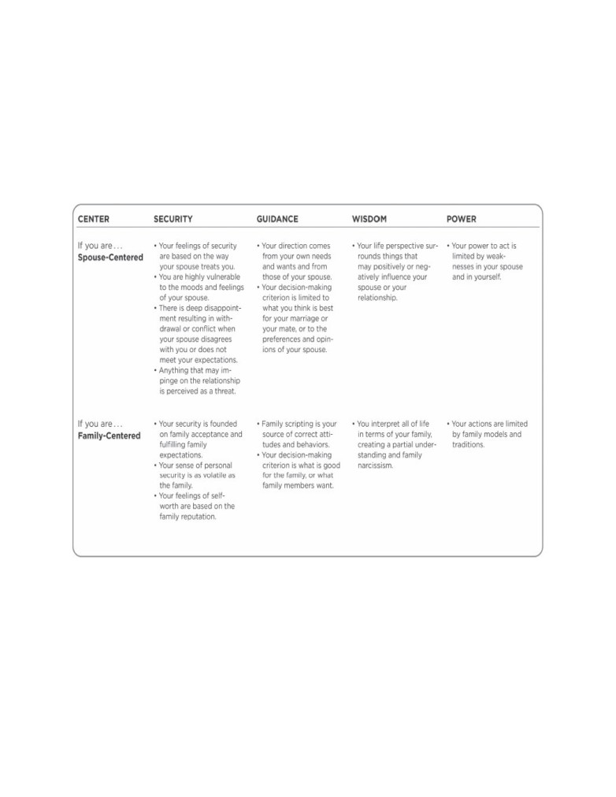
you’re low, making efforts to compensate for one weakness by borrowing
strength from another weakness. There is no consistent sense of direction, no
persistent wisdom, no steady power supply or sense of personal, intrinsic worth
and identity.
The ideal, of course, is to create one clear center from which you consistently
derive a high degree of security, guidance, wisdom, and power, empowering
your proactivity and giving congruency and harmony to every part of your life.
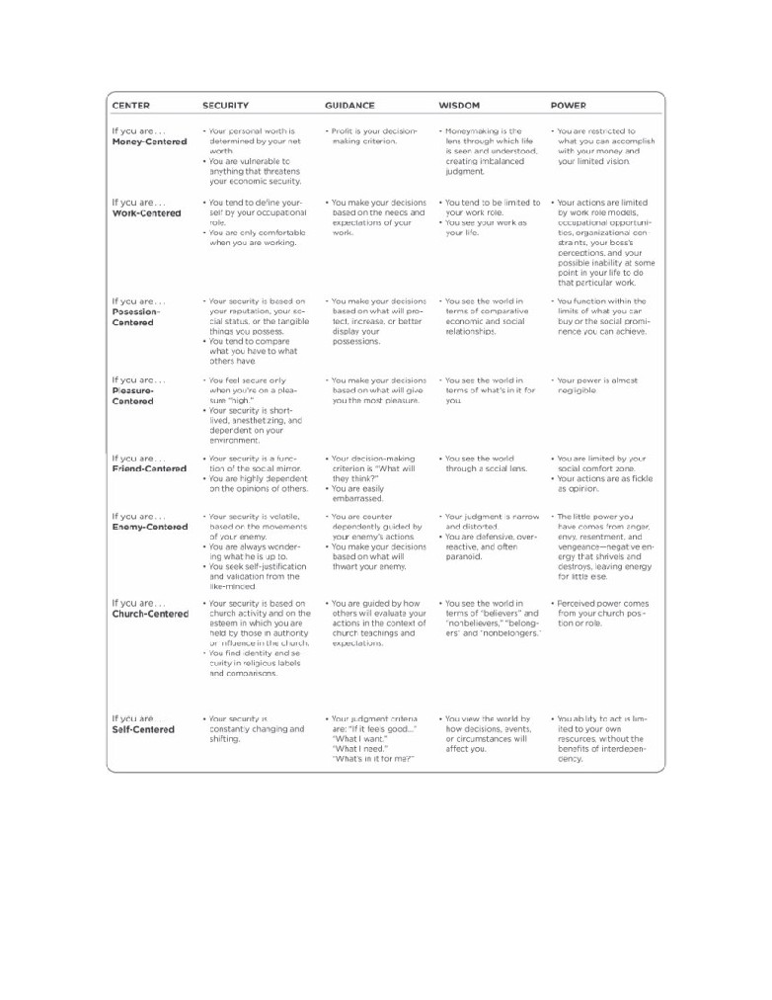
A PRINCIPLE CENTER
By centering our lives on correct principles, we create a solid foundation for
development of the four life-support factors.
Our security comes from knowing that, unlike other centers based on people
or things which are subject to frequent and immediate change, correct principles
do not change. We can depend on them.
Principles don’t react to anything. They don’t get mad and treat us differently.
They won’t divorce us or run away with our best friend. They aren’t out to get
us. They can’t pave our way with shortcuts and quick fixes. They don’t depend
on the behavior of others, the environment, or the current fad for their validity.
Principles don’t die. They aren’t here one day and gone the next. They can’t be
destroyed by fire, earthquake or theft.
Principles are deep, fundamental truths, classic truths, generic common
denominators. They are tightly interwoven threads running with exactness,
consistency, beauty, and strength through the fabric of life.
Even in the midst of people or circumstances that seem to ignore the
principles, we can be secure in the knowledge that principles are bigger than
people or circumstances, and that thousands of years of history have seen them
triumph, time and time again. Even more important, we can be secure in the
knowledge that we can validate them in our own lives, by our own experience.
Admittedly, we’re not omniscient. Our knowledge and understanding of
correct principles is limited by our own lack of awareness of our true nature and
the world around us and by the flood of trendy philosophies and theories that are
not in harmony with correct principles. These ideas will have their season of
acceptance, but, like many before them, they won’t endure because they’re built
on false foundations.
We are limited, but we can push back the borders of our limitations. An
understanding of the principle of our own growth enables us to search out
correct principles with the confidence that the more we learn, the more clearly
we can focus the lens through which we see the world. The principles don’t
change; our understanding of them does.
The wisdom and guidance that accompany principle-centered living come
from correct maps, from the way things really are, have been, and will be.
Correct maps enable us to clearly see where we want to go and how to get there.
We can make our decisions using the correct data that will make their
implementation possible and meaningful.
The personal power that comes from principle-centered living is the power of
a self-aware, knowledgeable, proactive individual, unrestricted by the attitudes,
behaviors, and actions of others or by many of the circumstances and
environmental influences that limit other people.
The only real limitation of power is the natural consequences of the principles
themselves. We are free to choose our actions, based on our knowledge of
correct principles, but we are not free to choose the consequences of those
actions. Remember, “If you pick up one end of the stick, you pick up the other.”
Principles always have natural consequences attached to them. There are
positive consequences when we live in harmony with the principles. There are
negative consequences when we ignore them. But because these principles apply
to everyone, whether or not they are aware, this limitation is universal. And the
more we know of correct principles, the greater is our personal freedom to act
wisely.
By centering our lives on timeless, unchanging principles, we create a
fundamental paradigm of effective living. It is the center that puts all other
centers in perspective.
Remember that your paradigm is the source from which your attitudes and
behaviors flow. A paradigm is like a pair of glasses; it affects the way you see
everything in your life. If you look at things through the paradigm of correct
principles, what you see in life is dramatically different from what you see
through any other centered paradigm.
I have included in the Appendix section of this book a detailed chart which
shows how each center we’ve discussed might possibly affect the way you see
everything else.2 But for a quick understanding of the difference your center
makes, let’s look at just one example of a specific problem as seen through the
different paradigms. As you read, try to put on each pair of glasses. Try to feel
the response that flows from the different centers.
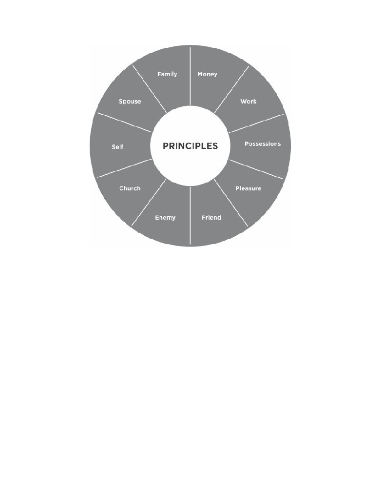
Suppose tonight you have invited your wife to go to a concert. You have the
tickets; she’s excited about going. It’s four o’clock in the afternoon.
All of a sudden, your boss calls you into his office and says he needs your
help through the evening to get ready for an important meeting at 9 A.M.
tomorrow.
If you’re looking through spouse-centered or family-centered glasses, your
main concern will be your wife. You may tell the boss you can’t stay and you
take her to the concert in an effort to please her. You may feel you have to stay to
protect your job, but you’ll do so grudgingly, anxious about her response, trying
to justify your decision and protect yourself from her disappointment or anger.
If you’re looking through a money-centered lens, your main thought will be of
the overtime you’ll get or the influence working late will have on a potential
raise. You may call your wife and simply tell her you have to stay, assuming
she’ll understand that economic demands come first.
If you’re work-centered, you may be thinking of the opportunity. You can
learn more about the job. You can make some points with the boss and further
your career. You may give yourself a pat on the back for putting in hours well
beyond what is required, evidence of what a hard worker you are. Your wife
should be proud of you!
If you’re possession-centered, you might be thinking of the things the
overtime income could buy. Or you might consider what an asset to your
reputation at the office it would be if you stayed. Everyone would hear tomorrow
how noble, how sacrificing and dedicated you are.
If you’re pleasure-centered, you’ll probably can the work and go to the
concert, even if your wife would be happy for you to work late. You deserve a
night out!
If you’re friend-centered, your decision would be influenced by whether or
not you had invited friends to attend the concert with you. Or whether your
friends at work were going to stay late, too.
If you’re enemy-centered, you may stay late because you know it will give
you a big edge over that person in the office who thinks he’s the company’s
greatest asset. While he’s off having fun, you’ll be working and slaving, doing
his work and yours, sacrificing your personal pleasure for the good of the
company he can so blithely ignore.
If you’re church-centered, you might be influenced by plans other church
members have to attend the concert, by whether or not any church members
work at your office, or by the nature of the concert—Handel’s Messiah might
rate higher priority than a rock concert. Your decision might also be affected by
what you think a “good church member” would do and by whether you view the
extra work as “service” or “seeking after material wealth.”
If you’re self-centered, you’ll be focused on what will do you the most good.
Would it be better for you to go out for the evening? Or would it be better for
you to make a few points with the boss? How the different options affect you
will be your main concern.
***
As we consider various ways of looking at a single event, is it any wonder that
we have “young lady/old lady” perception problems in our interactions with
each other? Can you see how fundamentally our centers affect us? Right down to
our motivations, our daily decisions, our actions (or, in too many cases, our
reactions), our interpretations of events? That’s why understanding your own
center is so important. And if that center does not empower you as a proactive
person, it becomes fundamental to your effectiveness to make the necessary
paradigm shifts to create a center that will.
As a principle-centered person, you try to stand apart from the emotion of the
situation and from other factors that would act on you, and evaluate the options.
Looking at the balanced whole—the work needs, the family needs, other needs
that may be involved and the possible implications of the various alternative
decisions—you’ll try to come up with the best solution, taking all factors into
consideration.
Whether you go to the concert or stay and work is really a small part of an
effective decision. You might make the same choice with a number of other
centers. But there are several important differences when you are coming from a
principle-centered paradigm.
First, you are not being acted upon by other people or circumstances. You are
proactively choosing what you determine to be the best alternative. You make
your decision consciously and knowledgeably.
Second, you know your decision is most effective because it is based on
principles with predictable long-term results.
Third, what you choose to do contributes to your ultimate values in life.
Staying at work to get the edge on someone at the office is an entirely different
evening in your life from staying because you value your boss’s effectiveness
and you genuinely want to contribute to the company’s welfare. The experiences
you have as you carry out your decisions take on quality and meaning in the
context of your life as a whole.
Fourth, you can communicate to your wife and your boss within the strong
networks you’ve created in your interdependent relationships. Because you are
independent, you can be effectively interdependent. You might decide to
delegate what is delegable and come in early the next morning to do the rest.
And finally, you’ll feel comfortable about your decision. Whatever you
choose to do, you can focus on it and enjoy it.
As a principle-centered person, you see things differently. And because you
see things differently, you think differently, you act differently. Because you
have a high degree of security, guidance, wisdom, and power that flows from a
solid, unchanging core, you have the foundation of a highly proactive and highly
effective life.
WRITING AND USING A PERSONAL MISSION STATEMENT
As we go deeply within ourselves, as we understand and realign our basic
paradigms to bring them in harmony with correct principles, we create both an
effective, empowering center and a clear lens through which we can see the
world. We can then focus that lens on how we, as unique individuals, relate to
that world.
Frankl says we detect rather than invent our missions in life. I like that choice
of words. I think each of us has an internal monitor or sense, a conscience, that
gives us an awareness of our own uniqueness and the singular contributions that
we can make. In Frankl’s words, “Everyone has his own specific vocation or
mission in life…. Therein he cannot be replaced, nor can his life be repeated.
Thus, everyone’s task is as unique as is his specific opportunity to implement it.”
In seeking to give verbal expression to that uniqueness, we are again reminded
of the fundamental importance of proactivity and of working within our Circle of
Influence. To seek some abstract meaning to our lives out in our Circle of
Concern is to abdicate our proactive responsibility, to place our own first
creation in the hands of circumstance and other people.
Our meaning comes from within. Again, in the words of Frankl, “Ultimately,
man should not ask what the meaning of his life is, but rather must recognize
that it is he who is asked. In a word, each man is questioned by life; and he can
only answer to life by answering for his own life; to life he can only respond by
being responsible.”
Personal responsibility, or proactivity, is fundamental to the first creation.
Returning to the computer metaphor, Habit 1 says, “You are the programmer.”
Habit 2, then, says, “Write the program.” Until you accept the idea that you are
responsible, that you are the programmer, you won’t really invest in writing the
program.
As proactive people, we can begin to give expression to what we want to be
and to do in our lives. We can write a personal mission statement, a personal
constitution.
A mission statement is not something you write overnight. It takes deep
introspection, careful analysis, thoughtful expression, and often many rewrites to
produce it in final form. It may take you several weeks or even months before
you feel really comfortable with it, before you feel it is a complete and concise
expression of your innermost values and directions. Even then, you will want to
review it regularly and make minor changes as the years bring additional insights
or changing circumstances.
But fundamentally, your mission statement becomes your constitution, the
solid expression of your vision and values. It becomes the criterion by which you
measure everything else in your life.
I recently finished reviewing my own mission statement, which I do fairly
regularly. Sitting on the edge of a beach, alone, at the end of a bicycle ride, I
took out my organizer and hammered it out. It took several hours, but I felt a
sense of clarity, a sense of organization and commitment, a sense of exhilaration
and freedom.
I find the process is as important as the product. Writing or reviewing a
mission statement changes you because it forces you to think through your
priorities deeply, carefully, and to align your behavior with your beliefs. As you
do, other people begin to sense that you’re not being driven by everything that
happens to you. You have a sense of mission about what you’re trying to do and
you are excited about it.3
USING YOUR WHOLE BRAIN
Our self-awareness empowers us to examine our own thoughts. This is
particularly helpful in creating a personal mission statement because the two
unique human endowments that enable us to practice Habit 2—imagination and
conscience—are primarily functions of the right side of the brain. Understanding
how to tap into that right brain capacity greatly increases our first creation
ability.
A great deal of research has been conducted for decades on what has come to
be called brain dominance theory. The findings basically indicate that each
hemisphere of the brain—left and right—tends to specialize in and preside over
different functions, process different kinds of information, and deal with
different kinds of problems.
Essentially, the left hemisphere is the more logical/verbal one and the right
hemisphere the more intuitive, creative one. The left deals with words, the right
with pictures; the left with parts and specifics, the right with wholes and the
relationship between the parts. The left deals with analysis, which means to
break apart; the right with synthesis, which means to put together. The left deals
with sequential thinking; the right with simultaneous and holistic thinking. The
left is time bound; the right is time free.
Although people use both sides of the brain, one side or the other generally
tends to be dominant in each individual. Of course, the ideal would be to
cultivate and develop the ability to have good crossover between both sides of
the brain so that a person could first sense what the situation called for and then
use the appropriate tool to deal with it. But people tend to stay in the “comfort
zone” of their dominant hemisphere and process every situation according to
either a right or left brain preference.
In the words of Abraham Maslow, “He that is good with a hammer tends to
think everything is a nail.” This is another factor that affects the “young lady/old
lady” perception difference. Right brain and left brain people tend to look at
things in different ways.
We live in a primarily left brain-dominant world, where words and
measurement and logic are enthroned, and the more creative, intuitive, sensing,
artistic aspect of our nature is often subordinated. Many of us find it more
difficult to tap into our right brain capacity.
Admittedly this description is oversimplified and new studies will
undoubtedly throw more light on brain functioning. But the point here is that we
are capable of performing many different kinds of thought processes and we
barely tap our potential. As we become aware of its different capacities, we can
consciously use our minds to meet specific needs in more effective ways.
TWO WAYS TO TAP THE RIGHT BRAIN
If we use the brain dominance theory as a model, it becomes evident that the
quality of our first creation is significantly impacted by our ability to use our
creative right brain. The more we are able to draw upon our right brain capacity,
the more fully we will be able to visualize, to synthesize, to transcend time and
present circumstances, to project a holistic picture of what we want to do and to
be in life.
Expand Perspective
Sometimes we are knocked out of our left brain environment and thought
patterns and into the right brain by an unplanned experience. The death of a
loved one, a severe illness, a financial setback, or extreme adversity can cause us
to stand back, look at our lives, and ask ourselves some hard questions: “What’s
really important? Why am I doing what I’m doing?”
But if you’re proactive, you don’t have to wait for circumstances or other
people to create perspective-expanding experiences. You can consciously create
your own.
There are a number of ways to do this. Through the powers of your
imagination, you can visualize your own funeral, as we did at the beginning of
this chapter. Write your own eulogy. Actually write it out. Be specific.
You can visualize your twenty-fifth and then your fiftieth wedding
anniversary. Have your spouse visualize this with you. Try to capture the essence
of the family relationship you want to have created through your day-by-day
investment over a period of that many years.
You can visualize your retirement from your present occupation. What
contributions, what achievements will you want to have made in your field?
What plans will you have after retirement? Will you enter a second career?
Expand your mind. Visualize in rich detail. Involve as many emotions and
feelings as possible. Involve as many of the senses as you can.
I have done similar visualization exercises with some of my university classes.
“Assume you only have this one semester to live,” I tell my students, “and that
during this semester you are to stay in school as a good student. Visualize how
you would spend your semester.”
Things are suddenly placed in a different perspective. Values quickly surface
that before weren’t even recognized.
I have also asked students to live with that expanded perspective for a week
and keep a diary of their experiences.
The results are very revealing. They start writing to parents to tell them how
much they love and appreciate them. They reconcile with a brother, a sister, a
friend where the relationship has deteriorated.
The dominant, central theme of their activities, the underlying principle, is
love. The futility of bad-mouthing, bad thinking, put-downs, and accusation
becomes very evident when they think in terms of having only a short time to
live. Principles and values become more evident to everybody.
There are a number of techniques using your imagination that can put you in
touch with your values. But the net effect of every one I have ever used is the
same. When people seriously undertake to identify what really matters most to
them in their lives, what they really want to be and to do, they become very
reverent. They start to think in larger terms than today and tomorrow.
Visualization and Affirmation
Personal leadership is not a singular experience. It doesn’t begin and end with
the writing of a personal mission statement. It is, rather, the ongoing process of
keeping your vision and values before you and aligning your life to be congruent
with those most important things. And in that effort, your powerful right brain
capacity can be a great help to you on a daily basis as you work to integrate your
personal mission statement into your life. It’s another application of “begin with
the end in mind.”
Let’s go back to an example we mentioned before. Suppose I am a parent who
really deeply loves my children. Suppose I identify that as one of my
fundamental values in my personal mission statement. But suppose, on a daily
basis, I have trouble because I overreact.
I can use my right brain power of visualization to write an “affirmation” that
will help me become more congruent with my deeper values in my daily life.
A good affirmation has five basic ingredients: it’s personal, it’s positive, it’s
present tense, it’s visual, and it’s emotional. So I might write something like this:
“It is deeply satisfying (emotional) that I (personal) respond (present tense) with
wisdom, love, firmness, and self-control
(positive) when my children
misbehave.”
Then I can visualize it. I can spend a few minutes each day and totally relax
my mind and body. I can think about situations in which my children might
misbehave. I can visualize them in rich detail. I can feel the texture of the chair I
might be sitting on, the floor under my feet, the sweater I’m wearing. I can see
the dress my daughter has on, the expression on her face. The more clearly and
vividly I can imagine the detail, the more deeply I will experience it, the less I
will see it as a spectator.
Then I can see her do something very specific which normally makes my
heart pound and my temper start to flare. But instead of seeing my normal
response, I can see myself handle the situation with all the love, the power, the
self-control I have captured in my affirmation. I can write the program, write the
script, in harmony with my values, with my personal mission statement.
And if I do this, day after day my behavior will change. Instead of living out
of the scripts given to me by my own parents or by society or by genetics or my
environment, I will be living out of the script I have written from my own self-
selected value system.
***
I have helped and encouraged my son, Sean, to use this affirmation process
extensively throughout his football career. We started when he played
quarterback in high school, and eventually, I taught him how to do it on his own.
We would try to get him in a very relaxed state of mind through deep
breathing and a progressive muscle relaxation technique so that he became very
quiet inside. Then I would help him visualize himself right in the heat of the
toughest situations imaginable.
He would imagine a big blitz coming at him fast. He had to read the blitz and
respond. He would imagine giving audibles at the line after reading defenses. He
would imagine quick reads with his first receiver, his second receiver, his third
receiver. He would imagine options that he normally wouldn’t do.
At one point in his football career, he told me he was constantly getting
uptight. As we talked, I realized that he was visualizing uptightness. So we
worked on visualizing relaxation in the middle of the big pressure circumstance.
We discovered that the nature of the visualization is very important. If you
visualize the wrong thing, you’ll produce the wrong thing.
***
Dr. Charles Garfield has done extensive research on peak performers, both in
athletics and in business. He became fascinated with peak performance in his
work with the NASA program, watching the astronauts rehearse everything on
earth, again and again in a simulated environment before they went to space.
Although he had a doctorate in mathematics, he decided to go back and get
another Ph.D. in the field of psychology and study the characteristics of peak
performers.
One of the main things his research showed was that almost all of the world-
class athletes and other peak performers are visualizers. They see it; they feel it;
they experience it before they actually do it. They begin with the end in mind.
You can do it in every area of your life. Before a performance, a sales
presentation, a difficult confrontation, or the daily challenge of meeting a goal,
see it clearly, vividly, relentlessly, over and over again. Create an internal
“comfort zone.” Then, when you get into the situation, it isn’t foreign. It doesn’t
scare you.
Your creative, visual right brain is one of your most important assets, both in
creating your personal mission statement and in integrating it into your life.
There is an entire body of literature and audio and video tapes that deals with
this process of visualization and affirmation. Some of the more recent
developments in this field include such things as subliminal programming,
neurolinguistic programming, and new forms of relaxation and self-talk
processes. These all involve explanation, elaboration and different packaging of
the fundamental principles of the first creation.
My review of the success literature brought me in contact with hundreds of
books on this subject. Although some made extravagant claims and relied on
anecdotal rather than scientific evidence, I think that most of the material is
fundamentally sound. The majority of it appears to have originally come out of
the study of the Bible by many individuals.
In effective personal leadership, visualization and affirmation techniques
emerge naturally out of a foundation of well thought through purposes and
principles that become the center of a person’s life. They are extremely powerful
in rescripting and reprogramming, in writing deeply committed to purposes and
principles into one’s heart and mind. I believe that central to all enduring
religions in society are the same principles and practices clothed in different
language—meditation, prayer, covenants, ordinances, scripture study, empathy,
compassion, and many different forms of the use of both conscience and
imagination.
But if these techniques become part of the Personality Ethic and are severed
from a base of character and principles, they can be misused and abused in
serving other centers, primarily the center of self.
Affirmation and visualization are forms of programming, and we must be
certain that we do not submit ourselves to any programming that is not in
harmony with our basic center or that comes from sources centered on money-
making, self interest, or anything other than correct principles.
The imagination can be used to achieve the fleeting success that comes when
a person is focused on material gain or on “what’s in it for me.” But I believe the
higher use of imagination is in harmony with the use of conscience to transcend
self and create a life of contribution based on unique purpose and on the
principles that govern interdependent reality.
IDENTIFYING ROLES AND GOALS
Of course, the logical/verbal left brain becomes important also as you attempt
to capture your right brain images, feelings, and pictures in the words of a
written mission statement. Just as breathing exercises help integrate body and
mind, writing is a kind of psycho-neural muscular activity which helps bridge
and integrate the conscious and subconscious minds. Writing distills,
crystallizes, and clarifies thought and helps break the whole into parts.
We each have a number of different roles in our lives—different areas or
capacities in which we have responsibility. I may, for example, have a role as an
individual, a husband, a father, a teacher, a church member, and a businessman.
And each of these roles is important.
One of the major problems that arises when people work to become more
effective in life is that they don’t think broadly enough. They lose the sense of
proportion, the balance, the natural ecology necessary to effective living. They
may get consumed by work and neglect personal health. In the name of
professional success, they may neglect the most precious relationships in their
lives.
You may find that your mission statement will be much more balanced, much
easier to work with, if you break it down into the specific role areas of your life
and the goals you want to accomplish in each area. Look at your professional
role. You might be a salesperson, or a manager, or a product developer. What are
you about in that area? What are the values that should guide you? Think of your
personal roles—husband, wife, father, mother, neighbor, friend. What are you
about in those roles? What’s important to you? Think of community roles—the
political area, public service, volunteer organizations.
One executive has used the idea of roles and goals to create the following
mission statement:
My mission is to live with integrity and to make a difference in the lives of others.
To fulfill this mission:
I have charity: I seek out and love the one—each one—regardless of his situation.
I sacrifice: I devote my time, talents, and resources to my mission.
I inspire: I teach by example that we are all children of a loving Heavenly Father and that every
Goliath can be overcome.
I am impactful: What I do makes a difference in the lives of others.
These roles take priority in achieving my mission:
Husband—my partner is the most important person in my life. Together we contribute the fruits of
harmony, industry, charity, and thrift.
Father—I help my children experience progressively greater joy in their lives.
Son/Brother—I am frequently “there” for support and love.
Christian—God can count on me to keep my covenants and to serve his other children.
Neighbor—The love of Christ is visible through my actions toward others.
Change Agent—I am a catalyst for developing high performance in large organizations.
Scholar—I learn important new things every day.
Writing your mission in terms of the important roles in your life gives you
balance and harmony. It keeps each role clearly before you. You can review your
roles frequently to make sure that you don’t get totally absorbed by one role to
the exclusion of others that are equally or even more important in your life.
After you identify your various roles, then you can think about the long-term
goals you want to accomplish in each of those roles. We’re into the right brain
again, using imagination, creativity, conscience, and inspiration. If these goals
are the extension of a mission statement based on correct principles, they will be
vitally different from the goals people normally set. They will be in harmony
with correct principles, with natural laws, which gives you greater power to
achieve them. They are not someone else’s goals you have absorbed. They are
your goals. They reflect your deepest values, your unique talent, your sense of
mission. And they grow out of your chosen roles in life.
An effective goal focuses primarily on results rather than activity. It identifies
where you want to be, and, in the process, helps you determine where you are. It
gives you important information on how to get there, and it tells you when you
have arrived. It unifies your efforts and energy. It gives meaning and purpose to
all you do. And it can finally translate itself into daily activities so that you are
proactive, you are in charge of your life, you are making happen each day the
things that will enable you to fulfill your personal mission statement.
Roles and goals give structure and organized direction to your personal
mission. If you don’t yet have a personal mission statement, it’s a good place to
begin. Just identifying the various areas of your life and the two or three
important results you feel you should accomplish in each area to move ahead
gives you an overall perspective of your life and a sense of direction.
As we move into Habit 3, we’ll go into greater depth in the area of short-term
goals. The important application at this point is to identify roles and long-term
goals as they relate to your personal mission statement. These roles and goals
will provide the foundation for effective goal setting and achieving when we get
to the Habit 3 day-to-day management of life and time.
FAMILY MISSION STATEMENTS
Because Habit 2 is based on principle, it has broad application. In addition to
individuals, families, service groups, and organizations of all kinds become
significantly more effective as they begin with the end in mind.
Many families are managed on the basis of crises, moods, quick fixes, and
instant gratification—not on sound principles. Symptoms surface whenever
stress and pressure mount: people become cynical, critical, or silent or they start
yelling and overreacting. Children who observe these kinds of behavior grow up
thinking the only way to solve problems is flight or fight.
The core of any family is what is changeless, what is always going to be there
—shared vision and values. By writing a family mission statement, you give
expression to its true foundation.
This mission statement becomes its constitution, the standard, the criterion for
evaluation and decision making. It gives continuity and unity to the family as
well as direction. When individual values are harmonized with those of the
family, members work together for common purposes that are deeply felt.
Again, the process is as important as the product. The very process of writing
and refining a mission statement becomes a key way to improve the family.
Working together to create a mission statement builds the PC capacity to live it.
By getting input from every family member, drafting a statement, getting
feedback, revising it, and using wording from different family members, you get
the family talking, communicating, on things that really matter deeply. The best
mission statements are the result of family members coming together in a spirit
of mutual respect, expressing their different views, and working together to
create something greater than any one individual could do alone. Periodic review
to expand perspective, shift emphasis or direction, amend or give new meaning
to time-worn phrases can keep the family united in common values and
purposes.
The mission statement becomes the framework for thinking, for governing the
family. When the problems and crises come, the constitution is there to remind
family members of the things that matter most and to provide direction for
problem solving and decision making based on correct principles.
In our home, we put our mission statement up on a wall in the family room so
that we can look at it and monitor ourselves daily.
When we read the phrases about the sounds of love in our home, order,
responsible independence, cooperation, helpfulness, meeting needs, developing
talents, showing interest in each other’s talents, and giving service to others it
gives us some criteria to know how we’re doing in the things that matter most to
us as a family.
When we plan our family goals and activities, we say, “In light of these
principles, what are the goals we’re going to work on? What are our action plans
to accomplish our goals and actualize these values?”
We review the statement frequently and rework goals and jobs twice a year, in
September and June—the beginning of school and the end of school—to reflect
the situation as it is, to improve it, to strengthen it. It renews us, it recommits us
to what we believe in, what we stand for.
ORGANIZATIONAL MISSION STATEMENTS
Mission statements are also vital to successful organizations. One of the most
important thrusts of my work with organizations is to assist them in developing
effective mission statements. And to be effective, that statement has to come
from within the bowels of the organization. Everyone should participate in a
meaningful way—not just the top strategy planners, but everyone. Once again,
the involvement process is as important as the written product and is the key to
its use.
I am always intrigued whenever I go to IBM and watch the training process
there. Time and time again, I see the leadership of the organization come into a
group and say that IBM stands for three things: the dignity of the individual,
excellence, and service.
These things represent the belief system of IBM. Everything else will change,
but these three things will not change. Almost like osmosis, this belief system
has spread throughout the entire organization, providing a tremendous base of
shared values and personal security for everyone who works there.
***
Once I was training a group of people for IBM in New York. It was a small
group, about twenty people, and one of them became ill. He called his wife in
California, who expressed concern because his illness required special treatment.
The IBM people responsible for the training session arranged to have him taken
to an excellent hospital with medical specialists in the disease. But they could
sense that his wife was uncertain and really wanted him home where their
personal physician could handle the problem.
So they decided to get him home. Concerned about the time involved in
driving him to the airport and waiting for a commercial plane, they brought in a
helicopter, flew him to the airport, and hired a special plane just to take this man
to California.
I don’t know what costs that involved; my guess would be many thousands of
dollars. But IBM believes in the dignity of the individual. That’s what the
company stands for. To those present, that experience represented its belief
system and was no surprise. I was impressed.
***
At another time, I was scheduled to train 175 shopping center managers at a
particular hotel. I was amazed at the level of service there. It wasn’t a cosmetic
thing. It was evident at all levels, spontaneously, without supervision.
I arrived quite late, checked in, and asked if room service were available. The
man at the desk said, “No, Mr. Covey, but if you’re interested, I could go back
and get a sandwich or a salad or whatever you’d like that we have in the
kitchen.” His attitude was one of total concern about my comfort and welfare.
“Would you like to see your convention room?” he continued. “Do you have
everything you need? What can I do for you? I’m here to serve you.”
There was no supervisor there checking up. This man was sincere.
The next day I was in the middle of a presentation when I discovered that I
didn’t have all the colored markers I needed. So I went out into the hall during
the brief break and found a bellboy running to another convention. “I’ve got a
problem,” I said. “I’m here training a group of managers and I only have a short
break. I need some more colored pens.”
He whipped around and almost came to attention. He glanced at my name tag
and said, “Mr. Covey, I will solve your problem.”
He didn’t say, “I don’t know where to go” or “Well, go and check at the front
desk.” He just took care of it. And he made me feel like it was his privilege to do
so.
Later, I was in the side lobby, looking at some of the art objects. Someone
from the hotel came up to me and said, “Mr. Covey, would you like to see a book
that describes the art objects in this hotel?” How anticipatory! How service-
oriented!
I next observed one of the employees high up on a ladder cleaning windows in
the lobby. From his vantage point he saw a woman having a little difficulty in
the garden with a walker. She hadn’t really fallen, and she was with other people.
But he climbed down that ladder, went outside, helped the woman into the lobby
and saw that she was properly taken care of. Then he went back and finished
cleaning the windows.
I wanted to find out how this organization had created a culture where people
bought so deeply into the value of customer service. I interviewed housekeepers,
waitresses, bellboys in that hotel and found that this attitude had impregnated the
minds, hearts, and attitudes of every employee there.
I went through the back door into the kitchen, where I saw the central value:
“Uncompromising personalized service.” I finally went to the manager and said,
“My business is helping organizations develop a powerful team character, a team
culture. I am amazed at what you have here.”
“Do you want to know the real key?” he inquired. He pulled out the mission
statement for the hotel chain.
After reading it, I acknowledged, “That’s an impressive statement. But I know
many companies that have impressive mission statements.”
“Do you want to see the one for this hotel?” he asked.
“Do you mean you developed one just for this hotel?”
“Yes.”
“Different from the one for the hotel chain?”
“Yes. It’s in harmony with that statement, but this one pertains to our situation,
our environment, our time.” He handed me another paper.
“Who developed this mission statement?” I asked.
“Everybody,” he replied.
“Everybody? Really, everybody?”
“Yes.”
“Housekeepers?”
“Yes.”
“Waitresses?”
“Yes.”
“Desk clerks?”
“Yes. Do you want to see the mission statement written by the people who
greeted you last night?” He pulled out a mission statement that they, themselves,
had written that was interwoven with all the other mission statements. Everyone,
at every level, was involved.
The mission statement for that hotel was the hub of a great wheel. It spawned
the thoughtful, more specialized mission statements of particular groups of
employees. It was used as the criterion for every decision that was made. It
clarified what those people stood for—how they related to the customer, how
they related to each other. It affected the style of the managers and the leaders. It
affected the compensation system. It affected the kind of people they recruited
and how they trained and developed them. Every aspect of that organization,
essentially, was a function of that hub, that mission statement.
I later visited another hotel in the same chain, and the first thing I did when I
checked in was to ask to see their mission statement, which they promptly gave
me. At this hotel, I came to understand the motto
“Uncompromising
personalized service” a little more.
For a three-day period, I watched every conceivable situation where service
was called for. I always found that service was delivered in a very impressive,
excellent way. But it was always also very personalized. For instance, in the
swimming area I asked the attendant where the drinking fountain was. He
walked me to it.
But the thing that impressed me the very most was to see an employee, on his
own, admit a mistake to his boss. We ordered room service, and were told when
it would be delivered to the room. On the way to our room, the room service
person spilled the hot chocolate, and it took a few extra minutes to go back and
change the linen on the tray and replace the drink. So the room service was about
fifteen minutes late, which was really not that important to us.
Nevertheless, the next morning the room service manager phoned us to
apologize and invited us to have either the buffet breakfast or a room service
breakfast, compliments of the hotel, to in some way compensate for the
inconvenience.
What does it say about the culture of an organization when an employee
admits his own mistake, unknown to anyone else, to the manager so that
customer or guest is better taken care of!
As I told the manager of the first hotel I visited, I know a lot of companies
with impressive mission statements. But there is a real difference, all the
difference in the world, in the effectiveness of a mission statement created by
everyone involved in the organization and one written by a few top executives
behind a mahogany wall.
***
One of the fundamental problems in organizations, including families, is that
people are not committed to the determinations of other people for their lives.
They simply don’t buy into them.
Many times as I work with organizations, I find people whose goals are totally
different from the goals of the enterprise. I commonly find reward systems
completely out of alignment with stated value systems.
When I begin work with companies that have already developed some kind of
mission statement, I ask them, “How many of the people here know that you
have a mission statement? How many of you know what it contains? How many
were involved in creating it? How many really buy into it and use it as your
frame of reference in making decisions?”
Without involvement, there is no commitment. Mark it down, asterisk it, circle
it, underline it. No involvement, no commitment.
Now, in the early stages—when a person is new to an organization or when a
child in the family is young—you can pretty well give them a goal and they’ll
buy it, particularly if the relationship, orientation, and training are good.
But when people become more mature and their own lives take on a separate
meaning, they want involvement, significant involvement. And if they don’t
have that involvement, they don’t buy it. Then you have a significant
motivational problem which cannot be solved at the same level of thinking that
created it.
That’s why creating an organizational mission statement takes time, patience,
involvement, skill, and empathy. Again, it’s not a quick fix. It takes time and
sincerity, correct principles, and the courage and integrity to align systems,
structure, and management style to the shared vision and values. But it’s based
on correct principles and it works.
An organizational mission statement—one that truly reflects the deep shared
vision and values of everyone within that organization—creates a great unity and
tremendous commitment. It creates in people’s hearts and minds a frame of
reference, a set of criteria or guidelines, by which they will govern themselves.
They don’t need someone else directing, controlling, criticizing, or taking cheap
shots. They have bought into the changeless core of what the organization is
about.
APPLICATION SUGGESTIONS
1. Take the time to record the impressions you had in the funeral
visualization at the beginning of this chapter. You may want to use the chart
below to organize your thoughts.
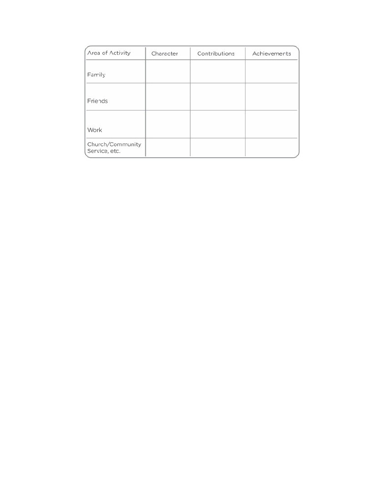
2. Take a few moments and write down your roles as you now see them.
Are you satisfied with that mirror image of your life?
3. Set up time to completely separate yourself from daily activities and to
begin work on your personal mission statement.
4. Go through the chart in Appendix A showing different centers and circle
all those you can identify with. Do they form a pattern for the behavior in
your life? Are you comfortable with the implications of your analysis?
5. Start a collection of notes, quotes, and ideas you may want to use as
resource material in writing your personal mission statement.
6. Identify a project you will be facing in the near future and apply the
principle of mental creation. Write down the results you desire and what
steps will lead to those results.
7. Share the principles of Habit 2 with your family or work group and
suggest that together you begin the process of developing a family or group
mission statement.
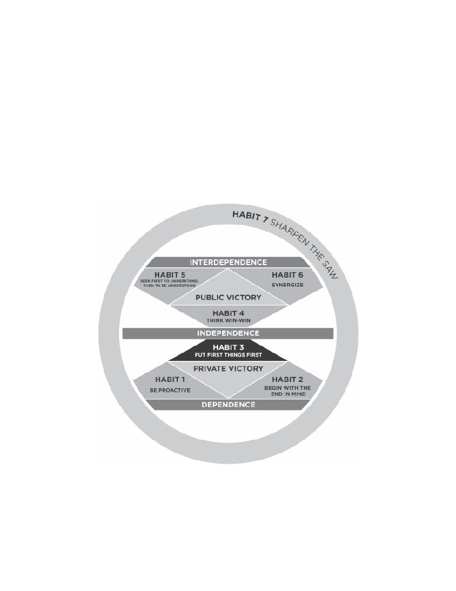
HABIT 3:
PUT FIRST THINGS FIRST
PRINCIPLES OF PERSONAL
MANAGEMENT
Things which matter most
must never be at the mercy of things which matter least.
GOETHE
Will you take just a moment and write down a short answer to the following two
questions? Your answers will be important to you as you begin work on Habit 3.
***
Question 1: What one thing could you do (something you aren’t doing now) that,
if you did it on a regular basis, would make a tremendous positive difference in
your personal life?
Question 2: What one thing in your business or professional life would bring
similar results?
We’ll come back to these answers later. But first, let’s put Habit
3 in
perspective.
***
Habit 3 is the personal fruit, the practical fulfillment of Habits 1 and 2.
Habit 1 says, “You’re the creator. You are in charge.” It’s based on the four
unique human endowments of imagination, conscience, independent will, and,
particularly, self-awareness. It empowers you to say,
“That’s an unhealthy
program I’ve been given from my childhood, from my social mirror. I don’t like
that ineffective script. I can change.”
Habit 2 is the first or mental creation. It’s based on imagination—the ability to
envision, to see the potential, to create with our minds what we cannot at present
see with our eyes; and conscience—the ability to detect our own uniqueness and
the personal, moral, and ethical guidelines within which we can most happily
fulfill it. It’s the deep contact with our basic paradigms and values and the vision
of what we can become.
Habit 3, then, is the second creation, the physical creation. It’s the fulfillment,
the actualization, the natural emergence of Habits 1 and 2. It’s the exercise of
independent will toward becoming principle-centered. It’s the day-in, day-out,
moment-by-moment doing it.
Habits 1 and 2 are absolutely essential and prerequisite to Habit 3. You can’t
become principle-centered without first being aware of and developing your own
proactive nature. You can’t become principle-centered without first being aware
of your paradigms and understanding how to shift them and align them with
principles. You can’t become principle-centered without a vision of and a focus
on the unique contribution that is yours to make.
But with that foundation, you can become principle-centered, day-in and day-
out, moment-by-moment, by living Habit
3—by practicing effective self-
management.
Management, remember, is clearly different from leadership. Leadership is
primarily a high-powered, right brain activity. It’s more of an art; it’s based on a
philosophy. You have to ask the ultimate questions of life when you’re dealing
with personal leadership issues.
But once you have dealt with those issues, once you have resolved them, you
then have to manage yourself effectively to create a life congruent with your
answers. The ability to manage well doesn’t make much difference if you’re not
even in the “right jungle.” But if you are in the right jungle, it makes all the
difference. In fact, the ability to manage well determines the quality and even the
existence of the second creation. Management is the breaking down, the
analysis, the sequencing, the specific application, the time-bound left-brain
aspect of effective self-government. My own maxim of personal effectiveness is
this: Manage from the left; lead from the right.
THE POWER OF INDEPENDENT WILL
In addition to self-awareness, imagination, and conscience, it is the fourth
human endowment—independent will—that really makes effective self-
management possible. It is the ability to make decisions and choices and to act in
accordance with them. It is the ability to act rather than to be acted upon, to
proactively carry out the program we have developed through the other three
endowments.
The human will is an amazing thing. Time after time, it has triumphed against
unbelievable odds. The Helen Kellers of this world give dramatic evidence of
the value, the power of the independent will.
But as we examine this endowment in the context of effective self-
management, we realize it’s usually not the dramatic, the visible, the once-in-a-
lifetime, up-by-the-bootstraps effort that brings enduring success. Empowerment
comes from learning how to use this great endowment in the decisions we make
every day.
The degree to which we have developed our independent will in our everyday
lives is measured by our personal integrity. Integrity is, fundamentally, the value
we place on ourselves. It’s our ability to make and keep commitments to
ourselves, to “walk our talk.” It’s honor with self, a fundamental part of the
Character Ethic, the essence of proactive growth.
Effective management is putting first things first. While leadership decides
what “first things” are, it is management that puts them first, day-by-day,
moment-by-moment. Management is discipline, carrying it out.
Discipline derives from disciple—disciple to a philosophy, disciple to a set of
principles, disciple to a set of values, disciple to an overriding purpose, to a
superordinate goal or a person who represents that goal.
In other words, if you are an effective manager of yourself, your discipline
comes from within; it is a function of your independent will. You are a disciple,
a follower, of your own deep values and their source. And you have the will, the
integrity, to subordinate your feelings, your impulses, your moods to those
values.
One of my favorite essays is “The Common Denominator of Success,” written
by E. M. Gray. He spent his life searching for the one denominator that all
successful people share. He found it wasn’t hard work, good luck, or astute
human relations, though those were all important. The one factor that seemed to
transcend all the rest embodies the essence of Habit 3—putting first things first.
“The successful person has the habit of doing the things failures don’t like to
do,” he observed. “They don’t like doing them either necessarily. But their
disliking is subordinated to the strength of their purpose.”
That subordination requires a purpose, a mission, a Habit 2 clear sense of
direction and value, a burning “yes!” inside that makes it possible to say “no” to
other things. It also requires independent will, the power to do something when
you don’t want to do it, to be a function of your values rather than a function of
the impulse or desire of any given moment. It’s the power to act with integrity to
your proactive first creation.
FOUR GENERATIONS OF TIME MANAGEMENT
In Habit 3 we are dealing with many of the questions addressed in the field of
life and time management. As a longtime student of this fascinating field, I am
personally persuaded that the essence of the best thinking in the area of time
management can be captured in a single phrase: Organize and execute around
priorities. That phrase represents the evolution of three generations of time
management theory, and how to best do it is the focus of a wide variety of
approaches and materials.
Personal management has evolved in a pattern similar to many other areas of
human endeavor. Major developmental thrusts, or “waves” as Alvin Toffler calls
them, follow each other in succession, each adding a vital new dimension. For
example, in social development, the agricultural revolution was followed by the
industrial revolution, which was followed by the informational revolution. Each
succeeding wave created a surge of social and personal progress.
Likewise, in the area of time management, each generation builds on the one
before it—each one moves us toward greater control of our lives. The first wave
or generation could be characterized by notes and checklists, an effort to give
some semblance of recognition and inclusiveness to the many demands placed
on our time and energy.
The second generation could be characterized by calendars and appointment
books. This wave reflects an attempt to look ahead, to schedule events and
activities in the future.
The third generation reflects the current time management field. It adds to
those preceding generations the important idea of prioritization, of clarifying
values, and of comparing the relative worth of activities based on their
relationship to those values. In addition, it focuses on setting goals—specific
long-, intermediate-, and short-term targets toward which time and energy would
be directed in harmony with values. It also includes the concept of daily
planning, of making a specific plan to accomplish those goals and activities
determined to be of greatest worth.
While the third generation has made a significant contribution, people have
begun to realize that
“efficient” scheduling and control of time are often
counterproductive. The efficiency focus creates expectations that clash with the
opportunities to develop rich relationships, to meet human needs, and to enjoy
spontaneous moments on a daily basis.
As a result, many people have become turned off by time management
programs and planners that make them feel too scheduled, too restricted, and
they “throw the baby out with the bath water,” reverting to first or second
generation techniques to preserve relationships, spontaneity, and quality of life.
But there is an emerging fourth generation that is different in kind. It
recognizes that “time management” is really a misnomer—the challenge is not to
manage time, but to manage ourselves. Satisfaction is a function of expectation
as well as realization. And expectation (and satisfaction) lie in our Circle of
Influence.
Rather than focusing on things and time, fourth generation expectations focus
on preserving and enhancing relationships and on accomplishing results—in
short, on maintaining the P/PC Balance.
QUADRANT II
The essential focus of the fourth generation of management can be captured in
the time management matrix diagrammed on the next page. Basically, we spend
time in one of four ways.
As you can see, the two factors that define an activity are urgent and
important. Urgent means it requires immediate attention. It’s “Now!” Urgent
things act on us. A ringing phone is urgent. Most people can’t stand the thought
of just allowing the phone to ring.
You could spend hours preparing materials, you could get all dressed up and
travel to a person’s office to discuss a particular issue, but if the phone were to
ring while you were there, it would generally take precedence over your personal
visit.
If you were to phone someone, there aren’t many people who would say, “I’ll
get to you in 15 minutes; just hold.” But most people would probably let you
wait in an office for at least that long while they completed a telephone
conversation with someone else.
Urgent matters are usually visible. They press on us; they insist on action.
They’re often popular with others. They’re usually right in front of us. And often
they are pleasant, easy, fun to do. But so often they are unimportant!
Importance, on the other hand, has to do with results. If something is
important, it contributes to your mission, your values, your high priority goals.
We react to urgent matters. Important matters that are not urgent require more
initiative, more proactivity. We must act to seize opportunity, to make things
happen. If we don’t practice Habit 2, if we don’t have a clear idea of what is
important, of the results we desire in our lives, we are easily diverted into
responding to the urgent.
Look for a moment at the four quadrants in the time management matrix.
Quadrant I is both urgent and important. It deals with significant results that
require immediate attention. We usually call the activities in Quadrant I “crises”
or “problems.” We all have some Quadrant I activities in our lives. But Quadrant
I consumes many people. They are crisis managers, problem-minded people,
deadline-driven producers.
As long as you focus on Quadrant I, it keeps getting bigger and bigger until it
dominates you. It’s like the pounding surf. A huge problem comes and knocks
you down and you’re wiped out. You struggle back up only to face another one
that knocks you down and slams you to the ground.
Some people are literally beaten up by problems all day every day. The only
relief they have is in escaping to the not important, not urgent activities of
Quadrant IV. So when you look at their total matrix, 90 percent of their time is in
Quadrant I and most of the remaining 10 percent is in Quadrant IV, with only
negligible attention paid to Quadrants II and III. That’s how people who manage
their lives by crisis live.
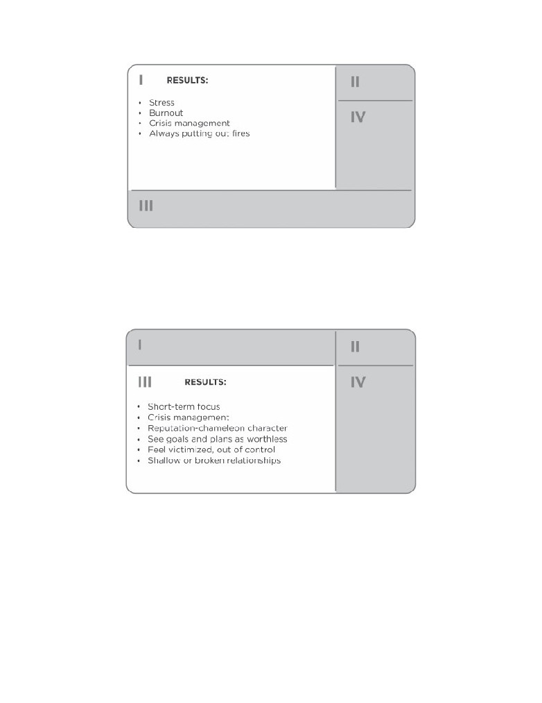
There are other people who spend a great deal of time in “urgent, but not
important” Quadrant III, thinking they’re in Quadrant I. They spend most of
their time reacting to things that are urgent, assuming they are also important.
But the reality is that the urgency of these matters is often based on the priorities
and expectations of others.
People who spend time almost exclusively in Quadrants III and IV basically
lead irresponsible lives.
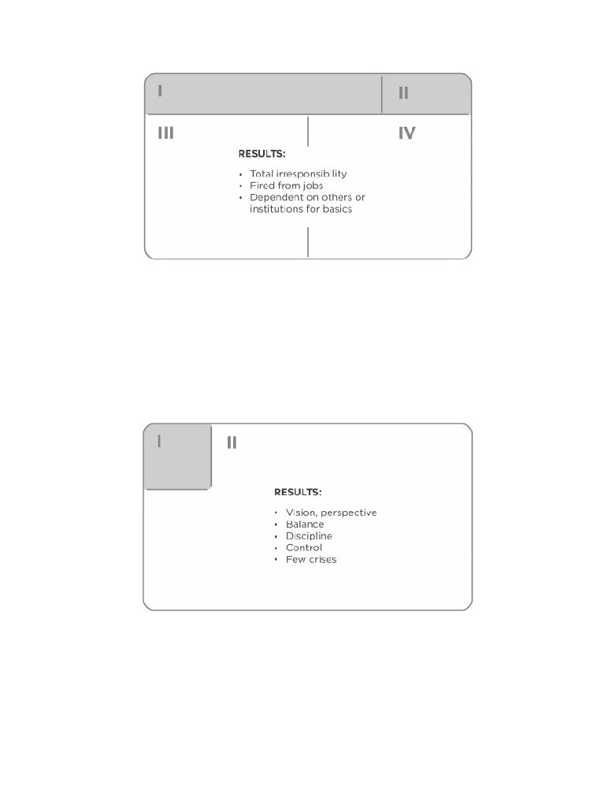
Effective people stay out of Quadrants III and IV because, urgent or not, they
aren’t important. They also shrink Quadrant I down to size by spending more
time in Quadrant II.
Quadrant II is the heart of effective personal management. It deals with things
that are not urgent, but are important. It deals with things like building
relationships, writing a personal mission statement, long-range planning,
exercising, preventive maintenance, preparation—all those things we know we
need to do, but somehow seldom get around to doing, because they aren’t urgent.
To paraphrase Peter Drucker, effective people are not problem-minded;
they’re opportunity-minded. They feed opportunities and starve problems. They
think preventively. They have genuine Quadrant I crises and emergencies that
require their immediate attention, but the number is comparatively small. They
keep P and PC in balance by focusing on the important, but not urgent, high
leverage capacity-building activities of Quadrant II.
With the time management matrix in mind, take a moment now and consider
how you answered the questions at the beginning of this chapter. What quadrant
do they fit in? Are they important? Are they urgent?
My guess is that they probably fit into Quadrant II. They are obviously
important, deeply important, but not urgent. And because they aren’t urgent, you
don’t do them.
Now look again at the nature of those questions: What one thing could you do
in your personal and professional life that, if you did it on a regular basis, would
make a tremendous positive difference in your life? Quadrant II activities have
that kind of impact. Our effectiveness takes quantum leaps when we do them.
***
I asked a similar question of a group of shopping center managers. “If you were
to do one thing in your professional work that you know would have enormously
positive effects on the results, what would it be?” Their unanimous response was
to build helpful personal relationships with the tenants, the owners of the stores
inside the shopping center, which is a Quadrant II activity.
We did an analysis of the time they were spending on that activity. It was less
than 5 percent. They had good reasons—problems, one right after another. They
had reports to make out, meetings to go to, correspondence to answer, phone
calls to make, constant interruptions. Quadrant I had consumed them.
They were spending very little time with the store managers, and the time they
did spend was filled with negative energy. The only reason they visited the store
managers at all was to enforce the contract—to collect the money or discuss
advertising or other practices that were out of harmony with center guidelines, or
some similar thing.
The store owners were struggling for survival, let alone prosperity. They had
employment problems, cost problems, inventory problems, and a host of other
problems. Most of them had no training in management at all. Some were fairly
good merchandisers, but they needed help. The tenants didn’t even want to see
the shopping center owners; they were just one more problem to contend with.
So the owners decided to be proactive. They determined their purpose, their
values, their priorities. In harmony with those priorities, they decided to spend
about one-third of their time in helping relationships with the tenants.
In working with that organization for about a year and a half, I saw them
climb to around 20 percent, which represented more than a fourfold increase. In
addition, they changed their role. They became listeners, trainers, consultants to
the tenants. Their interchanges were filled with positive energy.
The effect was dramatic, profound. By focusing on relationships and results
rather than time and methods, the numbers went up, the tenants were thrilled
with the results created by new ideas and skills, and the shopping center
managers were more effective and satisfied and increased their list of potential
tenants and lease revenue based on increased sales by the tenant stores. They
were no longer policemen or hovering supervisors. They were problem solvers,
helpers.
***
Whether you are a student at the university, a worker in an assembly line, a
homemaker, fashion designer, or president of a company, I believe that if you
were to ask what lies in Quadrant II and cultivate the proactivity to go after it,
you would find the same results. Your effectiveness would increase dramatically.
Your crises and problems would shrink to manageable proportions because you
would be thinking ahead, working on the roots, doing the preventive things that
keep situations from developing into crises in the first place. In time
management jargon, this is called the Pareto Principle—80 percent of the results
flow out of 20 percent of the activities.
WHAT IT TAKES TO SAY “No”
The only place to get time for Quadrant II in the beginning is from Quadrants
III and IV. You can’t ignore the urgent and important activities of Quadrant I,
although it will shrink in size as you spend more time with prevention and
preparation in Quadrant II. But the initial time for Quadrant II has to come out of
III and IV.
You have to be proactive to work on Quadrant II because Quadrants I and III
work on you. To say “yes” to important Quadrant II priorities, you have to learn
to say “no” to other activities, sometimes apparently urgent things.
***
Some time ago, my wife was invited to serve as chairman of a committee in a
community endeavor. She had a number of truly important things she was trying
to work on, and she really didn’t want to do it. But she felt pressured into it and
finally agreed.
Then she called one of her dear friends to ask if she would serve on her
committee. Her friend listened for a long time and then said, “Sandra, that
sounds like a wonderful project, a really worthy undertaking. I appreciate so
much your inviting me to be a part of it. I feel honored by it. For a number of
reasons, I won’t be participating myself, but I want you to know how much I
appreciate your invitation.”
Sandra was ready for anything but a pleasant “no.” She turned to me and
sighed, “I wish I’d said that.”
***
I don’t mean to imply that you shouldn’t be involved in significant service
projects. Those things are important. But you have to decide what your highest
priorities are and have the courage—pleasantly, smilingly, nonapologetically—to
say “no” to other things. And the way you do that is by having a bigger “yes”
burning inside. The enemy of the “best” is often the “good.”
Keep in mind that you are always saying “no” to something. If it isn’t to the
apparent, urgent things in your life, it is probably to the more fundamental,
highly important things. Even when the urgent is good, the good can keep you
from your best, keep you from your unique contribution, if you let it.
***
When I was Director of University Relations at a large university, I hired a very
talented, proactive, creative writer. One day, after he had been on the job for a
few months, I went into his office and asked him to work on some urgent matters
that were pressing on me.
He said, “Stephen, I’ll do whatever you want me to do. Just let me share with
you my situation.”
Then he took me over to his wallboard, where he had listed over two dozen
projects he was working on, together with performance criteria and deadline
dates that had been clearly negotiated before. He was highly disciplined, which
is why I went to see him in the first place. “If you want to get something done,
give it to a busy man.”
Then he said, “Stephen, to do the jobs that you want done right would take
several days. Which of these projects would you like me to delay or cancel to
satisfy your request?”
Well, I didn’t want to take the responsibility for that. I didn’t want to put a cog
in the wheel of one of the most productive people on the staff just because I
happened to be managing by crisis at the time. The jobs I wanted done were
urgent, but not important. So I went and found another crisis manager and gave
the job to him.
***
We say “yes” or “no” to things daily, usually many times a day. A center of
correct principles and a focus on our personal mission empowers us with
wisdom to make those judgments effectively.
As I work with different groups, I tell them that the essence of effective time
and life management is to organize and execute around balanced priorities. Then
I ask this question: if you were to fault yourself in one of three areas, which
would it be: (1) the inability to prioritize; (2) the inability or desire to organize
around those priorities; or (3) the lack of discipline to execute around them, to
stay with your priorities and organization?
Most people say their main fault is a lack of discipline. On deeper thought, I
believe that is not the case. The basic problem is that their priorities have not
become deeply planted in their hearts and minds. They haven’t really
internalized Habit 2.
There are many people who recognize the value of Quadrant II activities in
their lives, whether they identify them as such or not. And they attempt to give
priority to those activities and integrate them into their lives through self-
discipline alone. But without a principle center and a personal mission statement,
they don’t have the necessary foundation to sustain their efforts. They’re
working on the leaves, on the attitudes and the behaviors of discipline, without
even thinking to examine the roots, the basic paradigms from which their natural
attitudes and behaviors flow.
A Quadrant II focus is a paradigm that grows out of a principle center. If you
are centered on your spouse, your money, your friends, your pleasure, or any
extrinsic factor, you will keep getting thrown back into Quadrants I and III,
reacting to the outside forces your life is centered on. Even if you’re centered on
yourself, you’ll end up in I and III reacting to the impulse of the moment. Your
independent will alone cannot effectively discipline you against your center.
In the words of the architectural maxim, form follows function. Likewise,
management follows leadership. The way you spend your time is a result of the
way you see your time and the way you really see your priorities. If your
priorities grow out of a principle center and a personal mission, if they are
deeply planted in your heart and in your mind, you will see Quadrant II as a
natural, exciting place to invest your time.
It’s almost impossible to say “no” to the popularity of Quadrant III or to the
pleasure of escape to Quadrant IV if you don’t have a bigger “yes” burning
inside. Only when you have the self-awareness to examine your program—and
the imagination and conscience to create a new, unique, principle-centered
program to which you can say “yes”—only then will you have sufficient
independent will power to say “no,” with a genuine smile, to the unimportant.
MOVING INTO QUADRANT II
If Quadrant II activities are clearly the heart of effective personal management
—the “first things” we need to put first—then how do we organize and execute
around those things?
The first generation of time management does not even recognize the concept
of priority. It gives us notes and “to do” lists that we can cross off, and we feel a
temporary sense of accomplishment every time we check something off, but no
priority is attached to items on the list. In addition, there is no correlation
between what’s on the list and our ultimate values and purposes in life. We
simply respond to whatever penetrates our awareness and apparently needs to be
done.
Many people manage from this first-generation paradigm. It’s the course of
least resistance. There’s no pain or strain; it’s fun to
“go with the flow.”
Externally imposed disciplines and schedules give people the feeling that they
aren’t responsible for results.
But first-generation managers, by definition, are not effective people. They
produce very little, and their life-style does nothing to build their production
capability. Buffeted by outside forces, they are often seen as undependable and
irresponsible, and they have very little sense of control and self-esteem.
Second-generation managers assume a little more control. They plan and
schedule in advance and generally are seen as more responsible because they
“show up” when they’re supposed to.
But again, the activities they schedule have no priority or recognized
correlation to deeper values and goals. They have few significant achievements
and tend to be schedule oriented.
Third-generation managers take a significant step forward. They clarify their
values and set goals. They plan each day and prioritize their activities.
As I have said, this is where most of the time management field is today. But
this third generation has some critical limitations. First, it limits vision—daily
planning often misses important things that can only be seen from a larger
perspective. The very language of “daily planning” focuses on the urgent—the
“now.” While third generation prioritization provides order to activity, it doesn’t
question the essential importance of the activity in the first place—it doesn’t
place the activity in the context of principles, personal mission, roles, and goals.
The third-generation value-driven daily planning approach basically prioritizes
the Quadrant I and III problems and crises of the day.
In addition, the third generation makes no provision for managing roles in a
balanced way. It lacks realism, creating the tendency to over-schedule the day,
resulting in frustration and the desire to occasionally throw away the plan and
escape to Quadrant IV. And its efficiency, time management focus tends to strain
relationships rather than build them.
While each of the three generations has recognized the value of some kind of
management tool, none has produced a tool that empowers a person to live a
principle-centered, Quadrant II life-style. The first-generation notepads and “to
do” lists give us no more than a place to capture those things that penetrate our
awareness so we won’t forget them. The second-generation appointment books
and calendars merely provide a place to record our future commitments so that
we can be where we have agreed to be at the appropriate time.
Even the third generation, with its vast array of planners and materials,
focuses primarily on helping people prioritize and plan their Quadrants I and III
activities. Though many trainers and consultants recognize the value of Quadrant
II activities, the actual planning tools of the third generation do not facilitate
organizing and executing around them.
As each generation builds on those that have preceded it, the strengths and
some of the tools of each of the first three generations provide elemental
material for the fourth. But there is an added need for a new dimension, for the
paradigm and the implementation that will empower us to move into Quadrant
II, to become principle-centered and to manage ourselves to do what is truly
most important.
THE QUADRANT II TOOL
The objective of Quadrant II management is to manage our lives effectively—
from a center of sound principles, from a knowledge of our personal mission,
with a focus on the important as well as the urgent, and within the framework of
maintaining a balance between increasing our production and increasing our
production capability.
This is, admittedly, an ambitious objective for people caught in the thick of
thin things in Quadrants III and IV. But striving to achieve it will have a
phenomenal impact on personal effectiveness.
A Quadrant II organizer will need to meet six important criteria.
COHERENCE. Coherence suggests that there is harmony, unity, and integrity
between your vision and mission, your roles and goals, your priorities and plans,
and your desires and discipline. In your planner, there should be a place for your
personal mission statement so that you can constantly refer to it. There also
needs to be a place for your roles and for both short- and long-term goals.
BALANCE. Your tool should help you to keep balance in your life, to identify your
various roles and keep them right in front of you, so that you don’t neglect
important areas such as your health, your family, professional preparation, or
personal development.
Many people seem to think that success in one area can compensate for failure
in other areas of life. But can it really? Perhaps it can for a limited time in some
areas. But can success in your profession compensate for a broken marriage,
ruined health, or weakness in personal character? True effectiveness requires
balance, and your tool needs to help you create and maintain it.
QUADRANT II FOCUS. You need a tool that encourages you, motivates you, actually
helps you spend the time you need in Quadrant II, so that you’re dealing with
prevention rather than prioritizing crises. In my opinion, the best way to do this
is to organize your life on a weekly basis. You can still adapt and prioritize on a
daily basis, but the fundamental thrust is organizing the week.
Organizing on a weekly basis provides much greater balance and context than
daily planning. There seems to be implicit cultural recognition of the week as a
single, complete unit of time. Business, education, and many other facets of
society operate within the framework of the week, designating certain days for
focused investment and others for relaxation or inspiration. The basic Judeo-
Christian ethic honors the Sabbath, the one day out of every seven set aside for
uplifting purposes.
Most people think in terms of weeks. But most third-generation planning tools
focus on daily planning. While they may help you prioritize your activities, they
basically only help you organize crises and busywork. The key is not to prioritize
what’s on your schedule, but to schedule your priorities. And this can best be
done in the context of the week.
A “PEOPLE” DIMENSION. You also need a tool that deals with people, not just
schedules. While you can think in terms of efficiency in dealing with time, a
principle-centered person thinks in terms of effectiveness in dealing with people.
There are times when principle-centered Quadrant II living requires the
subordination of schedules to people. Your tool needs to reflect that value, to
facilitate implementation rather than create guilt when a schedule is not
followed.
FLEXIBILITY. Your planning tool should be your servant, never your master. Since it
has to work for you, it should be tailored to your style, your needs, your
particular ways.
PORTABILITY. Your tool should also be portable, so that you can carry it with you
most of the time. You may want to review your personal mission statement while
riding the bus. You may want to measure the value of a new opportunity against
something you already have planned. If your organizer is portable, you will keep
it with you so that important data is always within reach.
Since Quadrant II is the heart of effective self-management, you need a tool
that moves you into Quadrant II. My work with the fourth-generation concept
has led to the creation of a tool specifically designed according to the criteria
listed above. But many good third-generation tools can easily be adapted.
Because the principles are sound, the practices or specific applications can vary
from one individual to the next.
BECOMING A QUADRANT II SELF-MANAGER
Although my effort here is to teach principles, not practices, of effectiveness, I
believe you can better understand the principles and the empowering nature of
the fourth generation if you actually experience organizing a week from a
principle-centered, Quadrant II base.
Quadrant II organizing involves four key activities.
IDENTIFYING ROLES. The first task is to write down your key roles. If you haven’t
really given serious thought to the roles in your life, you can write down what
immediately comes to mind. You have a role as an individual. You may want to
list one or more roles as a family member—a husband or wife, mother or father,
son or daughter, a member of the extended family of grandparents, aunts, uncles,
and cousins. You may want to list a few roles in your work, indicating different
areas in which you wish to invest time and energy on a regular basis. You may
have roles in church or community affairs.
You don’t need to worry about defining the roles in a way that you will live
with for the rest of your life—just consider the week and write down the areas
you see yourself spending time in during the next seven days.
Here are two examples of the way people might see their various roles.
1. Individual
1. Personal Development
2. Spouse/Parent
2. Spouse
3. Manager New Products
3. Parent
4. Manager Research
4. Real Estate Salesperson
5. Manager Staff Dev.
5. Community Service
6. Manager Administration 6. Symphony Board Member
7. Chairman United Way
SELECTING GOALS. The next step is to think of one or two important results you feel
you should accomplish in each role during the next seven days. These would be
recorded as goals. (See next page.)
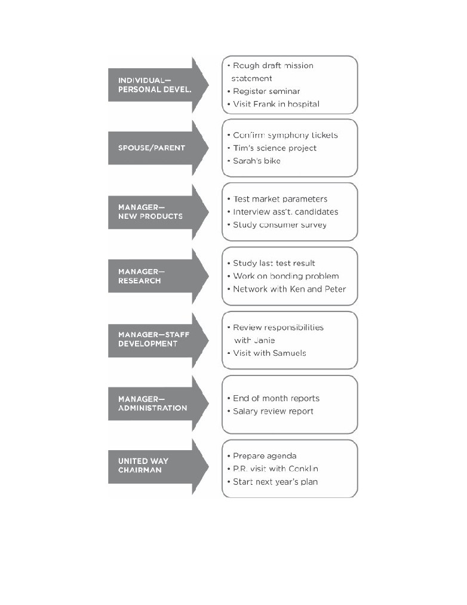
At least some of these goals should reflect Quadrant II activities. Ideally, these
weekly goals would be tied to the longer-term goals you have identified in
conjunction with your personal mission statement. But even if you haven’t
written your mission statement, you can get a feeling, a sense, of what is
important as you consider each of your roles and one or two goals for each role.
SCHEDULING. Now you can look at the week ahead with your goals in mind and
schedule time to achieve them. For example, if your goal is to produce the first
draft of your personal mission statement, you may want to set aside a two-hour
block of time on Sunday to work on it. Sunday (or some other day of the week
that is special to you, your faith, or your circumstances) is often the ideal time to
plan your more personally uplifting activities, including weekly organizing. It’s a
good time to draw back, to seek inspiration, to look at your life in the context of
principles and values.
If you set a goal to become physically fit through exercise, you may want to
set aside an hour three or four days during the week, or possibly every day
during the week, to accomplish that goal. There are some goals that you may
only be able to accomplish during business hours, or some that you can only do
on Saturday when your children are home. Can you begin to see some of the
advantages of organizing the week instead of the day?
Having identified roles and set goals, you can translate each goal to a specific
day of the week, either as a priority item or, even better, as a specific
appointment. You can also check your annual or monthly calendar for any
appointments you may have previously made and evaluate their importance in
the context of your goals, transferring those you decide to keep to your schedule
and making plans to reschedule or cancel others.
As you study the following weekly schedule, observe how each of the
nineteen most important, often Quadrant II, goals has been scheduled or
translated into a specific action plan. In addition, notice the box labeled
“Sharpen the Saw” that provides a place to plan vital renewing Quadrant II
activities in each of the four human dimensions that will be explained in Habit 7.
Even with time set aside to accomplish 19 important goals during the week,
look at the amount of remaining unscheduled space on the schedule! As well as
empowering you to put first things first, Quadrant II weekly organizing gives
you the freedom and the flexibility to handle unanticipated events, to shift
appointments if you need to, to savor relationships and interactions with others,
to deeply enjoy spontaneous experiences, knowing that you have proactively
organized your week to accomplish key goals in every area of your life.
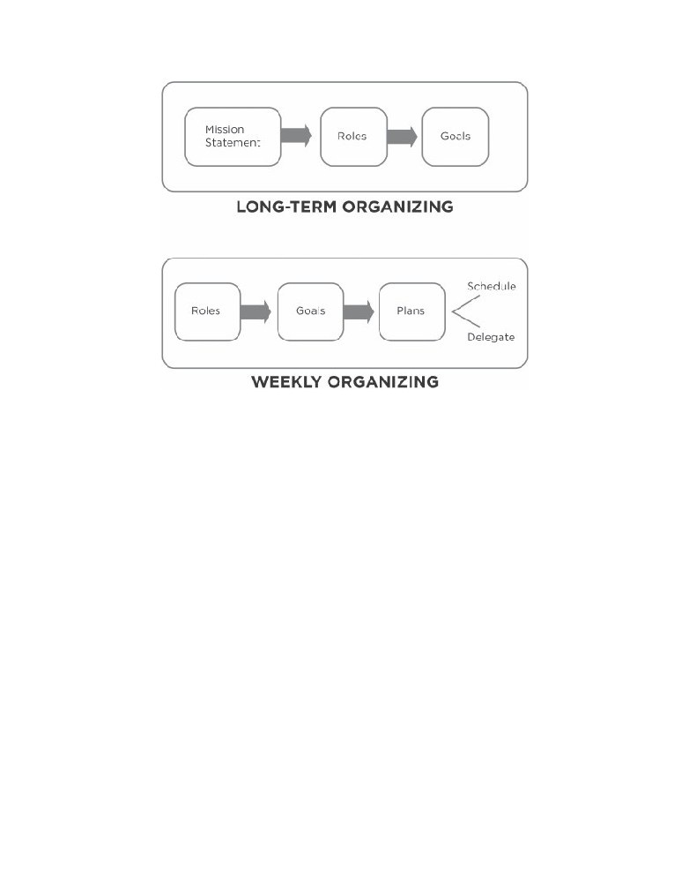
DAILY ADAPTING. With Quadrant II weekly organizing, daily planning becomes
more a function of daily adapting, of prioritizing activities and responding to
unanticipated events, relationships, and experiences in a meaningful way.
Taking a few minutes each morning to review your schedule can put you in
touch with the value-based decisions you made as you organized the week as
well as unanticipated factors that may have come up. As you overview the day,
you can see that your roles and goals provide a natural prioritization that grows
out of your innate sense of balance. It is a softer, more right-brain prioritization
that ultimately comes out of your sense of personal mission.
You may still find that the third-generation A, B, C or 1, 2, 3 prioritization
gives needed order to daily activities. It would be a false dichotomy to say that
activities are either important or they aren’t. They are obviously on a continuum,
and some important activities are more important than others. In the context of
weekly organizing, third-generation prioritization gives order to daily focus.
But trying to prioritize activities before you even know how they relate to
your sense of personal mission and how they fit into the balance of your life is
not effective. You may be prioritizing and accomplishing things you don’t want
or need to be doing at all.
Can you begin to see the difference between organizing your week as a
principle-centered, Quadrant II manager and planning your days as an individual
centered on something else? Can you begin to sense the tremendous difference
the Quadrant II focus would make in your current level of effectiveness?
Having experienced the power of principle-centered Quadrant II organizing in
my own life and having seen it transform the lives of hundreds of other people, I
am persuaded it makes a difference—a quantum positive difference. And the
more completely weekly goals are tied into a wider framework of correct
principles and into a personal mission statement, the greater the increase in
effectiveness will be.
LIVING IT
Returning once more to the computer metaphor, if Habit 1 says “You’re the
programmer” and Habit 2 says “Write the program,” then Habit 3 says “Run the
program,” “Live the program.” And living it is primarily a function of our
independent will, our self-discipline, our integrity, and commitment—not to
short-term goals and schedules or to the impulse of the moment, but to the
correct principles and our own deepest values, which give meaning and context
to our goals, our schedules, and our lives.
As you go through your week, there will undoubtedly be times when your
integrity will be placed on the line. The popularity of reacting to the urgent but
unimportant priorities of other people in Quadrant III or the pleasure of escaping
to Quadrant IV will threaten to overpower the important Quadrant II activities
you have planned. Your principle center, your self-awareness, and your
conscience can provide a high degree of intrinsic security, guidance, and wisdom
to empower you to use your independent will and maintain integrity to the truly
important.
But because you aren’t omniscient, you can’t always know in advance what is
truly important. As carefully as you organize the week, there will be times when,
as a principle-centered person, you will need to subordinate your schedule to a
higher value. Because you are principle-centered, you can do that with an inner
sense of peace.
***
At one point, one of my sons was deeply into scheduling and efficiency. One day
he had a very tight schedule, which included down-to-the-minute time
allocations for every activity, including picking up some books, washing his car,
and “dropping” Carol, his girlfriend, among other things.
Everything went according to schedule until it came to Carol. They had been
dating for a long period of time, and he had finally come to the conclusion that a
continued relationship would not work out. So, congruent with his efficiency
model, he had scheduled a ten- to fifteen-minute telephone call to tell her.
But the news was very traumatic to her. One-and-a-half hours later, he was
still deeply involved in a very intense conversation with her. Even then, the one
visit was not enough. The situation was a very frustrating experience for them
both.
Again, you simply can’t think efficiency with people. You think effectiveness
with people and efficiency with things. I’ve tried to be
“efficient” with a
disagreeing or disagreeable person and it simply doesn’t work. I’ve tried to give
ten minutes of “quality time” to a child or an employee to solve a problem, only
to discover such “efficiency” creates new problems and seldom resolves the
deepest concern.
I see many parents, particularly mothers with small children, often frustrated
in their desire to accomplish a lot because all they seem to do is meet the needs
of little children all day. Remember, frustration is a function of our expectations,
and our expectations are often a reflection of the social mirror rather than our
own values and priorities.
But if you have Habit 2 deep inside your heart and mind, you have those
higher values driving you. You can subordinate your schedule to those values
with integrity. You can adapt; you can be flexible. You don’t feel guilty when
you don’t meet your schedule or when you have to change it.
ADVANCES OF THE FOURTH GENERATION
One of the reasons why people resist using third-generation time management
tools is because they lose spontaneity; they become rigid and inflexible. They
subordinate people to schedules because the efficiency paradigm of the third
generation of management is out of harmony with the principle that people are
more important than things.
The fourth-generation tool recognizes that principle. It also recognizes that the
first person you need to consider in terms of effectiveness rather than efficiency
is yourself. It encourages you to spend time in Quadrant II, to understand and
center your life on principles, to give clear expression to the purposes and values
you want to direct your daily decisions. It helps you to create balance in your
life. It helps you rise above the limitations of daily planning and organize and
schedule in the context of the week. And when a higher value conflicts with
what you have planned, it empowers you to use your self-awareness and your
conscience to maintain integrity to the principles and purposes you have
determined are most important. Instead of using a road map, you’re using a
compass.
The fourth generation of self-management is more advanced than the third in
five important ways.
First, it’s principle-centered. More than giving lip service to Quadrant II, it
creates the central paradigm that empowers you to see your time in the context
of what is really important and effective.
Second, it’s conscience-directed. It gives you the opportunity to organize your
life to the best of your ability in harmony with your deepest values. But it also
gives you the freedom to peacefully subordinate your schedule to higher values.
Third, it defines your unique mission, including values and long-term goals.
This gives direction and purpose to the way you spend each day.
Fourth, it helps you balance your life by identifying roles, and by setting goals
and scheduling activities in each key role every week.
And fifth, it gives greater context through weekly organizing (with daily
adaptation as needed), rising above the limiting perspective of a single day and
putting you in touch with your deepest values through review of your key roles.
The practical thread running through all five of these advances is a primary
focus on relationships and results and a secondary focus on time.
DELEGATION: INCREASING P AND PC
We accomplish all that we do through delegation—either to time or to other
people. If we delegate to time, we think efficiency. If we delegate to other
people, we think effectiveness.
Many people refuse to delegate to other people because they feel it takes too
much time and effort and they could do the job better themselves. But effectively
delegating to others is perhaps the single most powerful high-leverage activity
there is.
Transferring responsibility to other skilled and trained people enables you to
give your energies to other high-leverage activities. Delegation means growth,
both for individuals and for organizations. The late J. C. Penney was quoted as
saying that the wisest decision he ever made was to “let go” after realizing that
he couldn’t do it all by himself any longer. That decision, made long ago,
enabled the development and growth of hundreds of stores and thousands of
people.
Because delegation involves other people, it is a Public Victory and could well
be included in Habit 4. But because we are focusing here on principles of
personal management, and the ability to delegate to others is the main difference
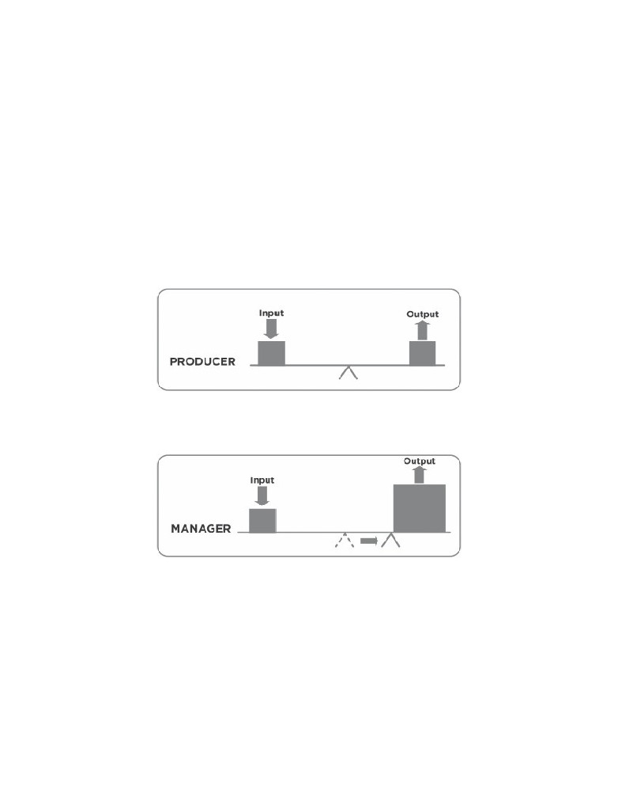
between the roles of manager and independent producer, I am approaching
delegation from the standpoint of your personal managerial skills.
A producer does whatever is necessary to accomplish desired results, to get
the golden eggs. A parent who washes the dishes, an architect who draws up
blueprints, or a secretary who types correspondence is a producer.
But when a person sets up and works with and through people and systems to
produce golden eggs, that person becomes a manager in the interdependent
sense. A parent who delegates washing the dishes to a child is a manager. An
architect who heads a team of other architects is a manager. A secretary who
supervises other secretaries and office personnel is an office manager.
A producer can invest one hour of effort and produce one unit of results,
assuming no loss of efficiency.
A manager, on the other hand, can invest one hour of effort and produce ten or
fifty or a hundred units through effective delegation.
Management is essentially moving the fulcrum over, and the key to effective
management is delegation.
GOFER DELEGATION
There are basically two kinds of delegation:
“gofer delegation” and
“stewardship delegation.” Gofer delegation means “Go for this, go for that, do
this, do that, and tell me when it’s done.” Most people who are producers have a
gofer delegation paradigm. Remember the machete wielders in the jungle? They
are the producers. They roll up their sleeves and get the job done. If they are
given a position of supervision or management, they still think like producers.
They don’t know how to set up a full delegation so that another person is
committed to achieve results. Because they are focused on methods, they
become responsible for the results.
***
I was involved in a gofer delegation once when our family went water skiing.
My son, who is an excellent skier, was in the water being pulled and I was
driving the boat. I handed the camera to Sandra and asked her to take some
pictures.
At first, I told her to be selective in her picture taking because we didn’t have
much film left. Then I realized she was unfamiliar with the camera, so I became
a little more specific. I told her to be sure to wait until the sun was ahead of the
boat and until our son was jumping the wake or making a turn and touching his
elbow.
But the more I thought about our limited footage and her inexperience with
the camera, the more concerned I became. I finally said, “Look, Sandra, just
push the button when I tell you. Okay?” And I spent the next few minutes
yelling, “Take it!—Take it!—Don’t take it!—Don’t take it!” I was afraid that if I
didn’t direct her every move every second, it wouldn’t be done right.
That was true gofer delegation, one-on-one supervision of methods. Many
people consistently delegate that way. But how much does it really accomplish?
And how many people is it possible to supervise or manage when you have to be
involved in every move they make?
There’s a much better way, a more effective way to delegate to other people.
And it’s based on a paradigm of appreciation of the self-awareness, the
imagination, the conscience, and the free will of other people.
STEWARDSHIP DELEGATION
Stewardship delegation is focused on results instead of methods. It gives
people a choice of method and makes them responsible for results. It takes more
time in the beginning, but it’s time well invested. You can move the fulcrum
over, you can increase your leverage, through stewardship delegation.
Stewardship delegation involves clear, up-front mutual understanding and
commitment regarding expectations in five areas.
DESIRED RESULTS. Create a clear, mutual understanding of what needs to be
accomplished, focusing on what, not how; results, not methods. Spend time. Be
patient. Visualize the desired result. Have the person see it, describe it, make out
a quality statement of what the results will look like, and by when they will be
accomplished.
GUIDELINES. Identify the parameters within which the individual should operate.
These should be as few as possible to avoid methods delegation, but should
include any formidable restrictions. You wouldn’t want a person to think he had
considerable latitude as long as he accomplished the objectives, only to violate
some long-standing traditional practice or value. That kills initiative and sends
people back to the gofer’s creed: “Just tell me what you want me to do, and I’ll
do it.”
If you know the failure paths of the job, identify them. Be honest and open—
tell a person where the quicksand is and where the wild animals are. You don’t
want to have to reinvent the wheel every day. Let people learn from your
mistakes or the mistakes of others. Point out the potential failure paths, what not
to do, but don’t tell them what to do. Keep the responsibility for results with
them—to do whatever is necessary within the guidelines.
RESOURCES. Identify the human, financial, technical, or organizational resources
the person can draw on to accomplish the desired results.
ACCOUNTABILITY. Set up the standards of performance that will be used in
evaluating the results and the specific times when reporting and evaluation will
take place.
CONSEQUENCES. Specify what will happen, both good and bad, as a result of the
evaluation. This could include such things as financial rewards, psychic rewards,
different job assignments, and natural consequences tied into the overall mission
of an organization.
Some years ago, I had an interesting experience in delegation with one of my
sons. We were having a family meeting, and we had our mission statement up on
the wall to make sure our plans were in harmony with our values. Everybody
was there.
I set up a big blackboard and we wrote down our goals—the key things we
wanted to do—and the jobs that flowed out of those goals. Then I asked for
volunteers to do the job.
“Who wants to pay the mortgage?” I asked. I noticed I was the only one with
my hand up.
“Who wants to pay for the insurance? The food? The cars?” I seemed to have
a real monopoly on the opportunities.
“Who wants to feed the new baby?” There was more interest here, but my
wife was the only one with the right qualifications for the job.
As we went down the list, job by job, it was soon evident that Mom and Dad
had more than sixty-hour work weeks. With that paradigm in mind, some of the
other jobs took on a more proper perspective.
My seven-year-old son, Stephen, volunteered to take care of the yard. Before I
actually gave him the job, I began a thorough training process. I wanted him to
have a clear picture in his mind of what a well cared for yard was like, so I took
him next door to our neighbor’s.
“Look, Son,” I said. “See how our neighbor’s yard is green and clean? That’s
what we’re after: green and clean. Now come look at our yard. See the mixed
colors? That’s not it; that’s not green. Green and clean is what we want. Now
how you get it green is up to you. You’re free to do it any way you want, except
paint it. But I’ll tell you how I’d do it if it were up to me.”
“How would you do it, Dad?”
“I’d turn on the sprinklers. But you may want to use buckets or a hose. It
makes no difference to me. All we care about is that the color is green. Okay?”
“Okay.”
“Now let’s talk about ‘clean,’ Son. Clean means no messes around—no paper,
strings, bones, sticks, or anything that messes up the place. I’ll tell you what let’s
do. Let’s just clean up half the yard right now and look at the difference.”
So we got out two paper sacks and picked up one side of the yard. “Now look
at this side. Look at the other side. See the difference? That’s called clean.”
“Wait!” he called. “I see some paper behind that bush!”
“Oh, good! I didn’t notice that newspaper back there. You have good eyes,
Son.
“Now before you decide whether or not you’re going to take the job, let me
tell you a few more things. Because when you take the job, I don’t do it
anymore. It’s your job. It’s called a stewardship. Stewardship means ‘a job with
a trust.’ I trust you to do the job, to get it done. Now who’s going to be your
boss?”
“You, Dad?”
“No, not me. You’re the boss. You boss yourself. How do you like Mom and
Dad nagging you all the time?”
“I don’t.”
“We don’t like doing it either. It sometimes causes a bad feeling, doesn’t it?
So you boss yourself. Now, guess who your helper is.”
“Who?”
“I am,” I said. “You boss me.”
“I do?”
“That’s right. But my time to help is limited. Sometimes I’m away. But when
I’m here, you tell me how I can help. I’ll do anything you want me to do.”
“Okay!”
“Now guess who judges you.”
“Who?”
“You judge yourself.”
“I do?”
“That’s right. Twice a week the two of us will walk around the yard, and you
can show me how it’s coming. How are you going to judge?”
“Green and clean.”
“Right!”
I trained him with those two words for two weeks before I felt he was ready to
take the job. Finally, the big day came.
“Is it a deal, Son?”
“It’s a deal.”
“What’s the job?”
“Green and clean.”
“What’s green?”
He looked at our yard, which was beginning to look better. Then he pointed
next door. “That’s the color of his yard.”
“What’s clean?”
“No messes.”
“Who’s the boss?”
“I am.”
“Who’s your helper?”
“You are, when you have time.”
“Who’s the judge?”
“I am. We’ll walk around two times a week and I can show you how it’s
coming.”
“And what will we look for?”
“Green and clean.”
At that time I didn’t mention an allowance. But I wouldn’t hesitate to attach
an allowance to such a stewardship.
Two weeks and two words. I thought he was ready.
It was Saturday. And he did nothing. Sunday… nothing. Monday… nothing.
As I pulled out of the driveway on my way to work on Tuesday, I looked at the
yellow, cluttered yard and the hot July sun on its way up. “Surely he’ll do it
today,” I thought. I could rationalize Saturday because that was the day we made
the agreement. I could rationalize Sunday; Sunday was for other things. But I
couldn’t rationalize Monday. And now it was Tuesday. Certainly he’d do it
today. It was summertime. What else did he have to do?
All day I could hardly wait to return home to see what happened. As I rounded
the corner, I was met with the same picture I left that morning. And there was
my son at the park across the street playing.
This was not acceptable. I was upset and disillusioned by his performance
after two weeks of training and all those commitments. We had a lot of effort,
pride, and money invested in the yard and I could see it going down the drain.
Besides, my neighbor’s yard was manicured and beautiful, and the situation was
beginning to get embarrassing.
I was ready to go back to gofer delegation. Son, you get over here and pick up
this garbage right now or else! I knew I could get the golden egg that way. But
what about the goose? What would happen to his internal commitment?
So I faked a smile and yelled across the street, “Hi, Son. How’s it going?”
“Fine!” he returned.
“How’s the yard coming?” I knew the minute I said it I had broken our
agreement. That’s not the way we had set up an accounting. That’s not what we
had agreed.
So he felt justified in breaking it, too. “Fine, Dad.”
I bit my tongue and waited until after dinner. Then I said, “Son, let’s do as we
agreed. Let’s walk around the yard together and you can show me how it’s going
in your stewardship.”
As we started out the door, his chin began to quiver. Tears welled up in his
eyes and, by the time we got out to the middle of the yard, he was whimpering.
“It’s so hard, Dad!”
What’s so hard? I thought to myself. You haven’t done a single thing! But I
knew what was hard—self-management, self-supervision. So I said, “Is there
anything I can do to help?”
“Would you, Dad?” he sniffed.
“What was our agreement?”
“You said you’d help me if you had time.”
“I have time.”
So he ran into the house and came back with two sacks. He handed me one.
“Will you pick that stuff up?” He pointed to the garbage from Saturday night’s
barbecue. “It makes me sick!”
So I did. I did exactly what he asked me to do. And that was when he signed
the agreement in his heart. It became his yard, his stewardship.
He only asked for help two or three more times that entire summer. He took
care of that yard. He kept it greener and cleaner than it had ever been under my
stewardship. He even reprimanded his brothers and sisters if they left so much as
a gum wrapper on the lawn.
***
Trust is the highest form of human motivation. It brings out the very best in
people. But it takes time and patience, and it doesn’t preclude the necessity to
train and develop people so that their competency can rise to the level of that
trust.
I am convinced that if stewardship delegation is done correctly, both parties
will benefit and ultimately much more work will get done in much less time. I
believe that a family that is well organized, whose time has been spent
effectively delegating on a one-on-one basis, can organize the work so that
everyone can do everything in about an hour a day. But that takes the internal
capacity to want to manage, not just to produce. The focus is on effectiveness,
not efficiency.
Certainly you can pick up that room better than a child, but the key is that you
want to empower the child to do it. It takes time. You have to get involved in the
training and development. It takes time, but how valuable that time is
downstream! It saves you so much in the long run.
This approach involves an entirely new paradigm of delegation. In effect, it
changes the nature of the relationship. The steward becomes his own boss,
governed by a conscience that contains the commitment to agreed upon desired
results. But it also releases his creative energies toward doing whatever is
necessary in harmony with correct principles to achieve those desired results.
The principles involved in stewardship delegation are correct and applicable
to any kind of person or situation. With immature people, you specify fewer
desired results and more guidelines, identify more resources, conduct more
frequent accountability interviews, and apply more immediate consequences.
With more mature people, you have more challenging desired results, fewer
guidelines, less frequent accountability, and less measurable but more
discernable criteria.
Effective delegation is perhaps the best indicator of effective management
simply because it is so basic to both personal and organizational growth.
THE QUADRANT II PARADIGM
The key to effective management of self, or of others through delegation, is
not in any technique or tool or extrinsic factor. It is intrinsic—in the Quadrant II
paradigm that empowers you to see through the lens of importance rather than
urgency.
I have included in the Appendix an exercise called “A Quadrant II Day at the
Office” which will enable you to see in a business setting how powerfully this
paradigm can impact your effectiveness.4
As you work to develop a Quadrant II paradigm, you will increase your ability
to organize and execute every week of your life around your deepest priorities,
to walk your talk. You will not be dependent on any other person or thing for the
effective management of your life.
Interestingly, every one of the Seven Habits is in Quadrant II. Every one deals
with fundamentally important things that, if done on a regular basis, would make
a tremendous positive difference in our lives.
APPLICATION SUGGESTIONS:
1. Identify a Quadrant II activity you know has been neglected in your life—
one that, if done well, would have a significant impact in your life, either
personally or professionally. Write it down and commit to implement it.
2. Draw a time management matrix and try to estimate what percentage of
your time you spend in each quadrant. Then log your time for three days in
fifteen-minute intervals. How accurate was your estimate? Are you satisfied
with the way you spend your time? What do you need to change?
3. Make a list of responsibilities you could delegate and the people you could
delegate to or train to be responsible in these areas. Determine what is
needed to start the process of delegation or training.
4. Organize your next week. Start by writing down your roles and goals for
the week, then transfer the goals to a specific action plan. At the end of the
week, evaluate how well your plan translated your deep values and
purposes into your daily life and the degree of integrity you were able to
maintain to those values and purposes.
5. Commit yourself to start organizing on a weekly basis and set up a regular
time to do it.
6. Either convert your current planning tool into a fourth generation tool or
secure such a tool.
7. Go through “A Quadrant II Day at the Office” (Appendix B) for a more in-
depth understanding of the impact of a Quadrant II paradigm.5
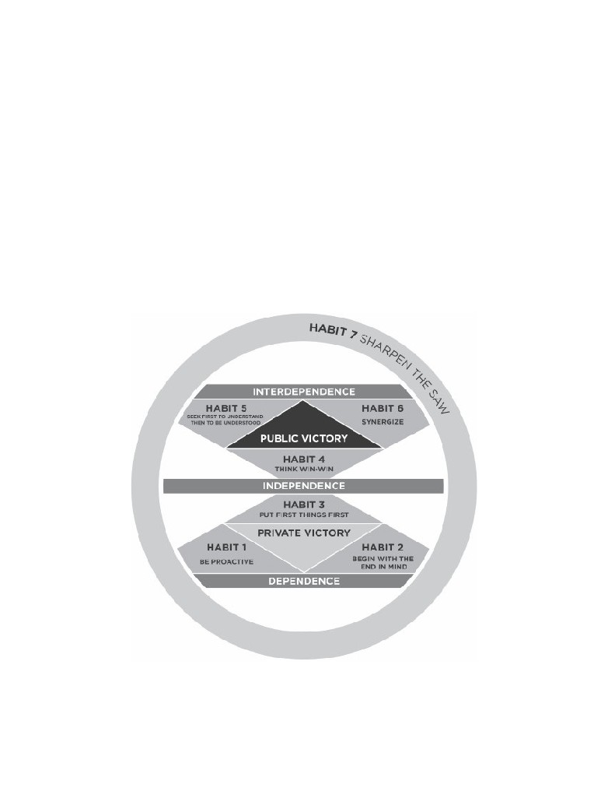
Part Three
PUBLIC VICTORY
PARADIGMS OF INTERDEPENDENCE
There can be no friendship without confidence, and no confidence without
integrity.
SAMUEL JOHNSON
Before moving into the area of public victory, we should remember that effective
interdependence can only be built on a foundation of true independence. Private
Victory precedes Public Victory. Algebra comes before calculus.
As we look back and survey the terrain to determine where we’ve been and
where we are in relationship to where we’re going, we clearly see that we could
not have gotten where we are without coming the way we came. There aren’t
any other roads; there aren’t any shortcuts. There’s no way to parachute into this
terrain. The landscape ahead is covered with the fragments of broken
relationships of people who have tried. They’ve tried to jump into effective
relationships without the maturity, the strength of character, to maintain them.
But you just can’t do it; you simply have to travel the road. You can’t be
successful with other people if you haven’t paid the price of success with
yourself.
***
A few years ago when I was giving a seminar on the Oregon coast, a man came
up to me and said, “You know, Stephen, I really don’t enjoy coming to these
seminars.” He had my attention.
“Look at everyone else here,” he continued. “Look at this beautiful coastline
and the sea out there and all that’s happening. And all I can do is sit and worry
about the grilling I’m going to get from my wife tonight on the phone.
“She gives me the third degree every time I’m away. Where did I eat
breakfast? Who else was there? Was I in meetings all morning? When did we
stop for lunch? What did I do during lunch? How did I spend the afternoon?
What did I do for entertainment in the evening? Who was with me? What did we
talk about?
“And what she really wants to know, but never quite asks, is who she can call
to verify everything I tell her. She just nags me and questions everything I do
whenever I’m away. It’s taken the bloom out of this whole experience. I really
don’t enjoy it at all.”
He did look pretty miserable. We talked for a while, and then he made a very
interesting comment. “I guess she knows all the questions to ask,” he said a little
sheepishly. “It was at a seminar like this that I met her… when I was married to
someone else!”
I considered the implications of his comment and then said, “You’re kind of
into ‘quick fix,’ aren’t you?”
“What do you mean?” he replied.
“Well, you’d like to take a screwdriver and just open up your wife’s head and
rewire that attitude of hers really fast, wouldn’t you?”
“Sure, I’d like her to change,” he exclaimed. “I don’t think it’s right for her to
constantly grill me like she does.”
“My friend,” I said, “you can’t talk your way out of problems you behave
yourself into.”
***
We’re dealing with a very dramatic and very fundamental paradigm shift here.
You may try to lubricate your social interactions with personality techniques and
skills, but in the process, you may truncate the vital character base. You can’t
have the fruits without the roots. It’s the principle of sequencing: Private Victory
precedes Public Victory. Self-mastery and self-discipline are the foundation of
good relationships with others.
Some people say that you have to like yourself before you can like others. I
think that idea has merit, but if you don’t know yourself, if you don’t control
yourself, if you don’t have mastery over yourself, it’s very hard to like yourself,
except in some short-term, psych-up, superficial way.
Real self-respect comes from dominion over self, from true independence.
And that’s the focus of Habits 1, 2, and 3. Independence is an achievement.
Interdependence is a choice only independent people can make. Unless we are
willing to achieve real independence, it’s foolish to try to develop human
relations skills. We might try. We might even have some degree of success when
the sun is shining. But when the difficult times come—and they will—we won’t
have the foundation to keep things together.
The most important ingredient we put into any relationship is not what we say
or what we do, but what we are. And if our words and our actions come from
superficial human relations techniques (the Personality Ethic) rather than from
our own inner core (the Character Ethic), others will sense that duplicity. We
simply won’t be able to create and sustain the foundation necessary for effective
interdependence.
The techniques and skills that really make a difference in human interaction
are the ones that almost naturally flow from a truly independent character. So the
place to begin building any relationship is inside ourselves, inside our Circle of
Influence, our own character. As we become independent—proactive, centered
in correct principles, value driven and able to organize and execute around the
priorities in our life with integrity—we then can choose to become
interdependent—capable of building rich, enduring, highly productive
relationships with other people.
As we look at the terrain ahead, we see that we’re entering a whole new
dimension. Interdependence opens up worlds of possibilities for deep, rich,
meaningful associations, for geometrically increased productivity, for serving,
for contributing, for learning, for growing. But it is also where we feel the
greatest pain, the greatest frustration, the greatest roadblocks to happiness and
success. And we’re very aware of that pain because it is acute.
We can often live for years with the chronic pain of our lack of vision,
leadership or management in our personal lives. We feel vaguely uneasy and
uncomfortable and occasionally take steps to ease the pain, at least for a time.
Because the pain is chronic, we get used to it, we learn to live with it.
But when we have problems in our interactions with other people, we’re very
aware of acute pain—it’s often intense, and we want it to go away.
That’s when we try to treat the symptoms with quick fixes and techniques—
the Band-Aids of the Personality Ethic. We don’t understand that the acute pain
is an outgrowth of the deeper, chronic problem. And until we stop treating the
symptoms and start treating the problem, our efforts will only bring
counterproductive results. We will only be successful at obscuring the chronic
pain even more.
Now, as we think of effective interaction with others, let’s go back to our
earlier definition of effectiveness. We’ve said it’s the P/PC balance, the
fundamental concept in the story of the goose and the golden egg.
In an interdependent situation, the golden eggs are the effectiveness, the
wonderful synergy, the results created by open communication and positive
interaction with others. And to get those eggs on a regular basis, we need to take
care of the goose. We need to create and care for the relationships that make
those results realities.
So before we descend from our point of reconnaissance and get into Habits 4,
5, and 6, I would like to introduce what I believe to be a very powerful metaphor
in describing relationships and in defining the P/PC balance in an interdependent
reality.
THE EMOTIONAL BANK ACCOUNT
We all know what a financial bank account is. We make deposits into it and
build up a reserve from which we can make withdrawals when we need to. An
Emotional Bank Account is a metaphor that describes the amount of trust that’s
been built up in a relationship. It’s the feeling of safeness you have with another
human being.
If I make deposits into an Emotional Bank Account with you through
courtesy, kindness, honesty, and keeping my commitments to you, I build up a
reserve. Your trust toward me becomes higher, and I can call upon that trust
many times if I need to. I can even make mistakes and that trust level, that
emotional reserve, will compensate for it. My communication may not be clear,
but you’ll get my meaning anyway. You won’t make me “an offender for a
word.” When the trust account is high, communication is easy, instant, and
effective.
But if I have a habit of showing discourtesy, disrespect, cutting you off,
overreacting, ignoring you, becoming arbitrary, betraying your trust, threatening
you, or playing little tin god in your life, eventually my Emotional Bank
Account is overdrawn. The trust level gets very low. Then what flexibility do I
have?
None. I’m walking on mine fields. I have to be very careful of everything I
say. I measure every word. It’s tension city, memo haven. It’s protecting my
backside, politicking. And many organizations are filled with it. Many families
are filled with it. Many marriages are filled with it.
If a large reserve of trust is not sustained by continuing deposits, a marriage
will deteriorate. Instead of rich, spontaneous understanding and communication,
the situation becomes one of accommodation, where two people simply attempt
to live independent life-styles in a fairly respectful and tolerant way. The
relationship may further deteriorate to one of hostility and defensiveness. The
“fight or flight” response creates verbal battles, slammed doors, refusal to talk,
emotional withdrawal and self-pity. It may end up in a cold war at home,
sustained only by children, sex, social pressure, or image protection. Or it may
end up in open warfare in the courts, where bitter ego-destroying legal battles
can be carried on for years as people endlessly confess the sins of a former
spouse.
And this is in the most intimate, the most potentially rich, joyful, satisfying
and productive relationship possible between two people on this earth. The P/PC
lighthouse is there; we can either break ourselves against it or we can use it as a
guiding light.
Our most constant relationships, like marriage, require our most constant
deposits. With continuing expectations, old deposits evaporate. If you suddenly
run into an old high school friend you haven’t seen for years, you can pick up
right where you left off because the earlier deposits are still there. But your
accounts with the people you interact with on a regular basis require more
constant investment. There are sometimes automatic withdrawals in your daily
interactions or in their perception of you that you don’t even know about. This is
especially true with teenagers in the home.
Suppose you have a teenage son and your normal conversation is something
like, “Clean your room. Button your shirt. Turn down the radio. Go get a haircut.
And don’t forget to take out the garbage!” Over a period of time, the
withdrawals far exceed the deposits.
Now, suppose this son is in the process of making some important decisions
that will affect the rest of his life. But the trust level is so low and the
communication process so closed, mechanical, and unsatisfying that he simply
will not be open to your counsel. You may have the wisdom and the knowledge
to help him, but because your account is so overdrawn, he will end up making
his decisions from a short-range emotional perspective, which may well result in
many negative long-range consequences.
You need a positive balance to communicate on these tender issues. What do
you do?
What would happen if you started making deposits into the relationship?
Maybe the opportunity comes up to do him a little kindness—to bring home a
magazine on skateboarding, if that’s his interest, or just to walk up to him when
he’s working on a project and offer to help. Perhaps you could invite him to go
to a movie with you or take him out for some ice cream. Probably the most
important deposit you could make would be just to listen, without judging or
preaching or reading your own autobiography into what he says. Just listen and
seek to understand. Let him feel your concern for him, your acceptance of him as
a person.
He may not respond at first. He may even be suspicious. “What’s Dad up to
now? What technique is Mom trying on me this time?” But as those genuine
deposits keep coming, they begin to add up. That overdrawn balance is
shrinking.
Remember that quick fix is a mirage. Building and repairing relationships
takes time. If you become impatient with his apparent lack of response or his
seeming ingratitude, you may make huge withdrawals and undo all the good
you’ve done. “After all we’ve done for you, the sacrifices we’ve made, how can
you be so ungrateful? We try to be nice and you act like this. I can’t believe it!”
It’s hard not to get impatient. It takes character to be proactive, to focus on
your Circle of Influence, to nurture growing things, and not to “pull up the
flowers to see how the roots are coming.”
But there really is no quick fix. Building and repairing relationships are long-
term investments.
SIX MAJOR DEPOSITS
Let me suggest six major deposits that build the Emotional Bank Account.
Understanding the Individual
Really seeking to understand another person is probably one of the most
important deposits you can make, and it is the key to every other deposit. You
simply don’t know what constitutes a deposit to another person until you
understand that individual. What might be a deposit for you—going for a walk to
talk things over, going out for ice cream together, working on a common project
—might not be perceived by someone else as a deposit at all. It might even be
perceived as a withdrawal, if it doesn’t touch the person’s deep interests or
needs.
One person’s mission is another person’s minutiae. To make a deposit, what is
important to another person must be as important to you as the other person is to
you. You may be working on a high priority project when your six-year-old child
interrupts with something that seems trivial to you, but it may be very important
from his point of view. It takes Habit 2 to recognize and recommit yourself to the
value of that person and Habit 3 to subordinate your schedule to that human
priority. By accepting the value he places on what he has to say, you show an
understanding of him that makes a great deposit.
***
I have a friend whose son developed an avid interest in baseball. My friend
wasn’t interested in baseball at all. But one summer, he took his son to see every
major league team play one game. The trip took over six weeks and cost a great
deal of money, but it became a powerful bonding experience in their
relationship.
My friend was asked on his return, “Do you like baseball that much?”
“No,” he replied, “but I like my son that much.”
***
I have another friend, a college professor, who had a terrible relationship with
his teenage son. This man’s entire life was essentially academic, and he felt his
son was totally wasting his life by working with his hands instead of working to
develop his mind. As a result, he was almost constantly on the boy’s back, and,
in moments of regret, he would try to make deposits that just didn’t work. The
boy perceived the gestures as new forms of rejection, comparison, and judgment,
and they precipitated huge withdrawals. The relationship was turning sour, and it
was breaking the father’s heart.
One day I shared with him this principle of making what is important to the
other person as important to you as the other person is to you. He took it deeply
to heart. He engaged his son in a project to build a miniature Wall of China
around their home. It was a consuming project, and they worked side by side on
it for over a year and a half.
Through that bonding experience, the son moved through that phase in his life
and into an increased desire to develop his mind. But the real benefit was what
happened to the relationship. Instead of a sore spot, it became a source of joy
and strength to both father and son.
***
Our tendency is to project out of our own autobiographies what we think other
people want or need. We project our intentions on the behavior of others. We
interpret what constitutes a deposit based on our own needs and desires, either
now or when we were at a similar age or stage in life. If they don’t interpret our
effort as a deposit, our tendency is to take it as a rejection of our well intentioned
effort and to give up.
The Golden Rule says to “Do unto others as you would have others do unto
you.” While on the surface that could mean to do for them what you would like
to have done for you, I think the more essential meaning is to understand them
deeply as individuals, the way you would want to be understood, and then to
treat them in terms of that understanding. As one successful parent said about
raising children, “Treat them all the same by treating them differently.”
Attending to the Little Things
The little kindnesses and courtesies are so important. Small discourtesies, little
unkindnesses, little forms of disrespect make large withdrawals. In relationships,
the little things are the big things.
***
I remember an evening I spent with two of my sons some years ago. It was an
organized father and son outing, complete with gymnastics, wrestling matches,
hotdogs, orangeade, and a movie—the works.
In the middle of the movie, Sean, who was then four years old, fell asleep in
his seat. His older brother, Stephen, who was six, stayed awake, and we watched
the rest of the movie together. When it was over, I picked Sean up in my arms,
carried him out to the car and laid him in the back seat. It was very cold that
night, so I took off my coat and gently arranged it over and around him.
When we arrived home, I quickly carried Sean in and tucked him into bed.
After Stephen put on his “jammies” and brushed his teeth, I lay down next to
him to talk about the night out together.
“How’d you like it, Stephen?”
“Fine,” he answered.
“Did you have fun?”
“Yes.”
“What did you like most?”
“I don’t know. The trampoline, I guess.”
“That was quite a thing, wasn’t it—doing those somersaults and tricks in the
air like that?”
There wasn’t much response on his part. I found myself making conversation.
I wondered why Stephen wouldn’t open up more. He usually did when exciting
things happened. I was a little disappointed. I sensed something was wrong; he
had been so quiet on the way home and getting ready for bed.
Suddenly Stephen turned over on his side, facing the wall. I wondered why
and lifted myself up just enough to see his eyes welling up with tears.
“What’s wrong, honey? What is it?”
He turned back, and I could sense he was feeling some embarrassment for the
tears and his quivering lips and chin.
“Daddy, if I were cold, would you put your coat around me, too?”
Of all the events of that special night out together, the most important was a
little act of kindness—a momentary, unconscious showing of love to his little
brother.
***
What a powerful, personal lesson that experience was to me then and is even
now. People are very tender, very sensitive inside. I don’t believe age or
experience makes much difference. Inside, even within the most toughened and
calloused exteriors, are the tender feelings and emotions of the heart.
Keeping Commitments
Keeping a commitment or a promise is a major deposit; breaking one is a
major withdrawal. In fact, there’s probably not a more massive withdrawal than
to make a promise that’s important to someone and then not to come through.
The next time a promise is made, they won’t believe it. People tend to build their
hopes around promises, particularly promises about their basic livelihood.
I’ve tried to adopt a philosophy as a parent never to make a promise I don’t
keep. I therefore try to make them very carefully, very sparingly, and to be aware
of as many variables and contingencies as possible so that something doesn’t
suddenly come up to keep me from fulfilling it.
Occasionally, despite all my effort, the unexpected does come up, creating a
situation where it would be unwise or impossible to keep a promise I’ve made.
But I value that promise. I either keep it anyway, or explain the situation
thoroughly to the person involved and ask to be released from the promise.
I believe that if you cultivate the habit of always keeping the promises you
make, you build bridges of trust that span the gaps of understanding between you
and your child. Then, when your child wants to do something you don’t want
him to do, and out of your maturity you can see consequences that the child
cannot see, you can say, “Son, if you do this, I promise you that this will be the
result.” If that child has cultivated trust in your word, in your promises, he will
act on your counsel.
Clarifying Expectations
Imagine the difficulty you might encounter if you and your boss had different
assumptions regarding whose role it was to create your job description.
“When am I going to get my job description?” you might ask.
“I’ve been waiting for you to bring one to me so that we could discuss it,”
your boss might reply.
“I thought defining my job was your role.”
“That’s not my role at all. Don’t you remember? Right from the first, I said
that how you do in the job largely depends on you.”
“I thought you meant that the quality of my job depended on me. But I don’t
even know what my job really is.”
Unclear expectations in the area of goals also undermine communication and
trust.
“I did exactly what you asked me to do and here is the report.”
“I don’t want a report. The goal was to solve the problem—not to analyze it
and report on it.”
“I thought the goal was to get a handle on the problem so we could delegate it
to someone else.”
How many times have we had these kinds of conversations?
“You said…”
“No, you’re wrong! I said…”
“You did not! You never said I was supposed to…”
“Oh, yes I did! I clearly said…”
“You never even mentioned…”
“But that was our agreement…”
The cause of almost all relationship difficulties is rooted in conflicting or
ambiguous expectations around roles and goals. Whether we are dealing with the
question of who does what at work, how you communicate with your daughter
when you tell her to clean her room, or who feeds the fish and takes out the
garbage, we can be certain that unclear expectations will lead to
misunderstanding, disappointment, and withdrawals of trust.
Many expectations are implicit. They haven’t been explicitly stated or
announced, but people nevertheless bring them to a particular situation. In
marriage, for example, a man and a woman have implicit expectations of each
other in their marriage roles. Although these expectations have not been
discussed, or sometimes even recognized by the person who has them, fulfilling
them makes great deposits in the relationship and violating them makes
withdrawals.
That’s why it’s so important whenever you come into a new situation to get all
the expectations out on the table. People will begin to judge each other through
those expectations. And if they feel like their basic expectations have been
violated, the reserve of trust is diminished. We create many negative situations
by simply assuming that our expectations are self-evident and that they are
clearly understood and shared by other people.
The deposit is to make the expectations clear and explicit in the beginning.
This takes a real investment of time and effort up front, but it saves great
amounts of time and effort down the road. When expectations are not clear and
shared, people begin to become emotionally involved and simple
misunderstandings become compounded, turning into personality clashes and
communication breakdowns.
Clarifying expectations sometimes takes a great deal of courage. It seems
easier to act as though differences don’t exist and to hope things will work out
than it is to face the differences and work together to arrive at a mutually
agreeable set of expectations.
Showing Personal Integrity
Personal Integrity generates trust and is the basis of many different kinds of
deposits.
Lack of integrity can undermine almost any other effort to create high trust
accounts. People can seek to understand, remember the little things, keep their
promises, clarify and fulfill expectations, and still fail to build reserves of trust if
they are inwardly duplicitous.
Integrity includes but goes beyond honesty. Honesty is telling the truth—in
other words, conforming our words to reality. Integrity is conforming reality to
our words—in other words, keeping promises and fulfilling expectations. This
requires an integrated character, a oneness, primarily with self but also with life.
One of the most important ways to manifest integrity is to be loyal to those
who are not present. In doing so, we build the trust of those who are present.
When you defend those who are absent, you retain the trust of those present.
Suppose you and I were talking alone, and we were criticizing our supervisor
in a way that we would not dare to do if he were present. Now what will happen
when you and I have a falling out? You know I’m going to be discussing your
weaknesses with someone else. That’s what you and I did behind our
supervisor’s back. You know my nature. I’ll sweet-talk you to your face and bad-
mouth you behind your back. You’ve seen me do it.
That’s the essence of duplicity. Does that build a reserve of trust in my
account with you?
On the other hand, suppose you were to start criticizing our supervisor and I
basically told you I agree with the content of some of the criticism and suggest
that the two of us go directly to him and make an effective presentation on how
things might be improved. Then what would you know I would do if someone
were to criticize you to me behind your back?
For another example, suppose in my effort to build a relationship with you, I
told you something someone else had shared with me in confidence. “I really
shouldn’t tell you this,” I might say, “but since you’re my friend….” Would my
betraying another person build my trust account with you? Or would you wonder
if the things you had told me in confidence were being shared with others?
Such duplicity might appear to be making a deposit with the person you’re
with, but it is actually a withdrawal because you communicate your own lack of
integrity. You may get the golden egg of temporary pleasure from putting
someone down or sharing privileged information, but you’re strangling the
goose, weakening the relationship that provides enduring pleasure in association.
Integrity in an interdependent reality is simply this: you treat everyone by the
same set of principles. As you do, people will come to trust you. They may not
at first appreciate the honest confrontational experiences such integrity might
generate. Confrontation takes considerable courage, and many people would
prefer to take the course of least resistance, belittling and criticizing, betraying
confidences, or participating in gossip about others behind their backs. But in the
long run, people will trust and respect you if you are honest and open and kind
with them. You care enough to confront. And to be trusted, it is said, is greater
than to be loved. In the long run, I am convinced, to be trusted will be also to be
loved.
***
When my son Joshua was quite young, he would frequently ask me a soul-
searching question. Whenever I overreacted to someone else or was the least bit
impatient or unkind, he was so vulnerable and so honest and our relationship was
so good that he would simply look me in the eye and say, “Dad, do you love
me?” If he thought I was breaking a basic principle of life toward someone else,
he wondered if I wouldn’t break it with him.
As a teacher, as well as a parent, I have found that the key to the ninety-nine is
the one—particularly the one that is testing the patience and the good humor of
the many. It is the love and the discipline of the one student, the one child, that
communicates love for the others. It’s how you treat the one that reveals how
you regard the ninety-nine, because everyone is ultimately a one.
Integrity also means avoiding any communication that is deceptive, full of
guile, or beneath the dignity of people. “A lie is any communication with intent
to deceive,” according to one definition of the word. Whether we communicate
with words or behavior, if we have integrity, our intent cannot be to deceive.
Apologizing Sincerely When You Make a Withdrawal
When we make withdrawals from the Emotional Bank Account, we need to
apologize and we need to do it sincerely. Great deposits come in the sincere
words:
“I was wrong.”
“That was unkind of me.”
“I showed you no respect.”
“I gave you no dignity, and I’m deeply sorry.”
“I embarrassed you in front of your friends and I had no call to do that. Even
though I wanted to make a point, I never should have done it. I apologize.”
It takes a great deal of character strength to apologize quickly out of one’s
heart rather than out of pity. A person must possess himself and have a deep
sense of security in fundamental principles and values in order to genuinely
apologize.
People with little internal security can’t do it. It makes them too vulnerable.
They feel it makes them appear soft and weak, and they fear that others will take
advantage of their weakness. Their security is based on the opinions of other
people, and they worry about what others might think. In addition, they usually
feel justified in what they did. They rationalize their own wrong in the name of
the other person’s wrong, and if they apologize at all, it’s superficial.
***
“If you’re going to bow, bow low,” says Eastern wisdom. “Pay the uttermost
farthing,” says the Christian ethic. To be a deposit, an apology must be sincere.
And it must be perceived as sincere.
Leo Roskin taught, “It is the weak who are cruel. Gentleness can only be
expected from the strong.”
***
I was in my office at home one afternoon writing, of all things, on the subject of
patience. I could hear the boys running up and down the hall making loud
banging noises, and I could feel my own patience beginning to wane.
Suddenly, my son David started pounding on the bathroom door, yelling at the
top of his lungs. “Let me in! Let me in!”
I rushed out of the office and spoke to him with great intensity. “David, do
you have any idea how disturbing that is to me? Do you know how hard it is to
try to concentrate and write creatively? Now, you go into your room and stay in
there until you can behave yourself.” So in he went, dejected, and shut the door.
As I turned around, I became aware of another problem. The boys had been
playing tackle football in the four-foot-wide hallway, and one of them had been
elbowed in the mouth. He was lying there in the hall, bleeding from the mouth.
David, I discovered, had gone to the bathroom to get a wet towel for him. But
his sister, Maria, who was taking a shower, wouldn’t open the door.
When I realized that I had completely misinterpreted the situation and had
overreacted, I immediately went in to apologize to David.
As I opened the door, the first thing he said to me was, “I won’t forgive you.”
“Well, why not, honey?” I replied. “Honestly, I didn’t realize you were trying
to help your brother. Why won’t you forgive me?”
“Because you did the same thing last week,” he replied. In other words, he
was saying, “Dad, you’re overdrawn, and you’re not going to talk your way out
of a problem you behaved yourself into.”
***
Sincere apologies make deposits; repeated apologies interpreted as insincere
make withdrawals. And the quality of the relationship reflects it.
It is one thing to make a mistake, and quite another thing not to admit it.
People will forgive mistakes, because mistakes are usually of the mind, mistakes
of judgment. But people will not easily forgive the mistakes of the heart, the ill
intention, the bad motives, the prideful justifying cover-up of the first mistake.
The Laws of Love and the Laws of Life
When we make deposits of unconditional love, when we live the primary laws
of love, we encourage others to live the primary laws of life. In other words,
when we truly love others without condition, without strings, we help them feel
secure and safe and validated and affirmed in their essential worth, identity, and
integrity. Their natural growth process is encouraged. We make it easier for them
to live the laws of life—cooperation, contribution, self-discipline, integrity—and
to discover and live true to the highest and best within them. We give them the
freedom to act on their own inner imperatives rather than react to our conditions
and limitations. This does not mean we become permissive or soft. That itself is
a massive withdrawal. We counsel, we plead, we set limits and consequences.
But we love, regardless.
When we violate the primary laws of love—when we attach strings and
conditions to that gift—we actually encourage others to violate the primary laws
of life. We put them in a reactive, defensive position where they feel they have to
prove “I matter as a person, independent of you.”
In reality, they aren’t independent. They are counter-dependent, which is
another form of dependency and is at the lowest end of the Maturity Continuum.
They become reactive, almost enemy-centered, more concerned about defending
their “rights” and producing evidence of their individuality than they are about
proactively listening to and honoring their own inner imperatives.
Rebellion is a knot of the heart, not of the mind. The key is to make deposits
—constant deposits of unconditional love.
***
I once had a friend who was dean of a very prestigious school.6 He planned and
saved for years to provide his son the opportunity to attend that institution, but
when the time came, the boy refused to go.
This deeply concerned his father. Graduating from that particular school
would have been a great asset to the boy. Besides, it was a family tradition.
Three generations of attendance preceded the boy. The father pleaded and urged
and talked. He also tried to listen to the boy to understand him, all the while
hoping that the son would change his mind.
The subtle message being communicated was one of conditional love. The son
felt that in a sense the father’s desire for him to attend the school outweighed the
value he placed on him as a person and as a son, which was terribly threatening.
Consequently, he fought for and with his own identity and integrity, and he
increased in his resolve and his efforts to rationalize his decision not to go.
After some intense soul-searching, the father decided to make a sacrifice—to
renounce conditional love. He knew that his son might choose differently than he
had wished; nevertheless, he and his wife resolved to love their son
unconditionally, regardless of his choice. It was an extremely difficult thing to
do because the value of his educational experience was so close to their hearts
and because it was something they had planned and worked for since his birth.
The father and mother went through a very difficult rescripting process,
struggling to really understand the nature of unconditional love. They
communicated to the boy what they were doing and why, and told him that they
had come to the point at which they could say in all honesty that his decision
would not affect their complete feeling of unconditional love toward him. They
didn’t do this to manipulate him, to try to get him to “shape up.” They did it as
the logical extension of their growth and character.
The boy didn’t give much of a response at the time, but his parents had such a
paradigm of unconditional love at that point that it would have made no
difference in their feelings for him. About a week later, he told his parents that
he had decided not to go. They were perfectly prepared for this response and
continued to show unconditional love for him. Everything was settled and life
went along normally.
A short time later, an interesting thing happened. Now that the boy no longer
felt he had to defend his position, he searched within himself more deeply and
found that he really did want to have this educational experience. He applied for
admission, and then he told his father, who again showed unconditional love by
fully accepting his son’s decision. My friend was happy, but not excessively so,
because he had truly learned to love without condition.
***
Dag Hammarskjöld, past Secretary-General of the United Nations, once made a
profound, far-reaching statement: “It is more noble to give yourself completely
to one individual than to labor diligently for the salvation of the masses.”
I take that to mean that I could devote eight, ten, or twelve hours a day, five,
six, or seven days a week to the thousands of people and projects “out there” and
still not have a deep, meaningful relationship with my own spouse, with my own
teenage son, with my closest working associate. And it would take more nobility
of character—more humility, courage, and strength—to rebuild that one
relationship than it would to continue putting in all those hours for all those
people and causes.
In twenty-five years of consulting with organizations, I have been impressed
over and over again by the power of that statement. Many of the problems in
organizations stem from relationship difficulties at the very top—between two
partners in a professional firm, between the owner and the president of a
company, between the president and an executive vice-president. It truly takes
more nobility of character to confront and resolve those issues than it does to
continue to diligently work for the many projects and people “out there.”
***
When I first came across Hammarskjold’s statement, I was working in an
organization where there were unclear expectations between the individual who
was my right-hand man and myself. I simply did not have the courage to
confront our differences regarding role and goal expectations and values,
particularly in our methods of administration. So I worked for a number of
months in a compromise mode to avoid what might turn out to be an ugly
confrontation. All the while, bad feelings were developing inside both of us.
After reading that it is more noble to give yourself completely to one
individual than to labor diligently for the salvation of the masses, I was deeply
affected by the idea of rebuilding that relationship.
I had to steel myself for what lay ahead, because I knew it would be hard to
really get the issues out and to achieve a deep, common understanding and
commitment. I remember actually shaking in anticipation of the visit. He seemed
like such a hard man, so set in his own ways and so right in his own eyes; yet I
needed his strengths and abilities. I was afraid a confrontation might jeopardize
the relationship and result in my losing those strengths.
I went through a mental dress rehearsal of the anticipated visit, and I finally
became settled within myself around the principles rather than the practices of
what I was going to do and say. At last I felt peace of mind and the courage to
have the communication.
When we met together, to my total surprise, I discovered that this man had
been going through the very same process and had been longing for such a
conversation. He was anything but hard and defensive.
Nevertheless, our administrative styles were considerably different, and the
entire organization was responding to these differences. We both acknowledged
the problems that our disunity had created. Over several visits, we were able to
confront the deeper issues, to get them all out on the table, and to resolve them,
one by one, with a spirit of high mutual respect. We were able to develop a
powerful complementary team and a deep personal affection which added
tremendously to our ability to work effectively together.
***
Creating the unity necessary to run an effective business or a family or a
marriage requires great personal strength and courage. No amount of technical
administrative skill in laboring for the masses can make up for lack of nobility of
personal character in developing relationships. It is at a very essential, one-on-
one level that we live the primary laws of love and life.
P PROBLEMS ARE PC OPPORTUNITIES
This experience also taught me another powerful paradigm of
interdependence. It deals with the way in which we see problems. I had lived for
months trying to avoid the problem, seeing it as a source of irritation, a
stumbling block, and wishing it would somehow go away. But, as it turned out,
the very problem created the opportunity to build a deep relationship that
empowered us to work together as a strong complementary team.
I suggest that in an interdependent situation, every P problem is a PC
opportunity—a chance to build the Emotional Bank Accounts that significantly
affect interdependent production.
When parents see their children’s problems as opportunities to build the
relationship instead of as negative, burdensome irritations, it totally changes the
nature of parent-child interaction. Parents become more willing, even excited,
about deeply understanding and helping their children. When a child comes to
them with a problem, instead of thinking, “Oh, no! Not another problem!” their
paradigm is, “Here is a great opportunity for me to really help my child and to
invest in our relationship.” Many interactions change from transactional to
transformational, and strong bonds of love and trust are created as children sense
the value parents give to their problems and to them as individuals.
This paradigm is powerful in business as well. One department store chain
that operates from this paradigm has created a great loyalty among its customers.
Any time a customer comes into the store with a problem, no matter how small,
the clerks immediately see it as an opportunity to build the relationship with the
customer. They respond with a cheerful, positive desire to solve the problem in a
way that will make the customer happy. They treat the customer with such grace
and respect, giving such second-mile service, that many of the customers don’t
even think of going anywhere else.
By recognizing that the P/PC balance is necessary to effectiveness in an
interdependent reality, we can value our problems as opportunities to increase
PC.
THE HABITS OF INTERDEPENDENCE
With the paradigm of the Emotional Bank Account in mind, we’re ready to
move into the habits of Public Victory, of success in working with other people.
As we do, we can see how these habits work together to create effective
interdependence. We can also see how powerfully scripted we are in other
patterns of thought and behavior.
In addition, we can see on an even deeper level that effective interdependence
can only be achieved by truly independent people. It is impossible to achieve
Public Victory with popular “Win/Win negotiation” techniques or “reflective
listening” techniques or “creative problem-solving” techniques that focus on
personality and truncate the vital character base.
Let’s now focus on each of the Public Victory habits in depth.
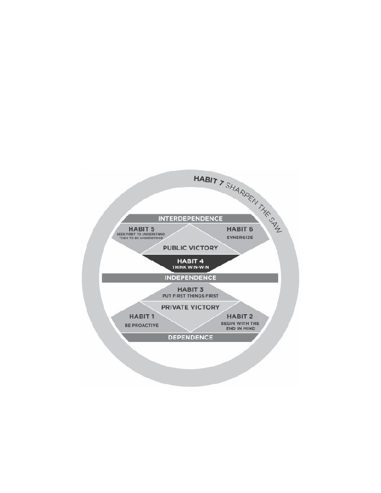
HABIT 4:
THINK WIN/WIN
PRINCIPLES OF INTERPERSONAL
LEADERSHIP
We have committed the Golden Rule to memory; let us now commit it to life.
EDWIN MARKHAM
One time I was asked to work with a company whose president was very
concerned about the lack of cooperation among his people.
“Our basic problem, Stephen, is that they’re selfish,” he said. “They just won’t
cooperate. I know if they would cooperate, we could produce so much more.
Can you help us develop a human relations program that will solve the
problem?”
“Is your problem the people or the paradigm?” I asked.
“Look for yourself,” he replied.
So I did. And I found that there was a real selfishness, an unwillingness to
cooperate, a resistance to authority, defensive communication. I could see that
overdrawn Emotional Bank Accounts had created a culture of low trust. But I
pressed the question.
“Let’s look at it deeper,” I suggested. “Why don’t your people cooperate?
What is the reward for not cooperating?”
“There’s no reward for not cooperating,” he assured me. “The rewards are
much greater if they do cooperate.”
“Are they?” I asked. Behind a curtain on one wall of this man’s office was a
chart. On the chart were a number of racehorses all lined up on a track.
Superimposed on the face of each horse was the face of one of his managers. At
the end of the track was a beautiful travel poster of Bermuda, an idyllic picture
of blue skies and fleecy clouds and a romantic couple walking hand in hand
down a white sandy beach.
Once a week, this man would bring all his people into this office and talk
cooperation. “Let’s all work together. We’ll all make more money if we do.”
Then he would pull the curtain and show them the chart. “Now which of you is
going to win the trip to Bermuda?”
It was like telling one flower to grow and watering another, like saying
“firings will continue until morale improves.” He wanted cooperation. He
wanted his people to work together, to share ideas, to all benefit from the effort.
But he was setting them up in competition with each other. One manager’s
success meant failure for the other managers.
As with many, many problems between people in business, family, and other
relationships, the problem in this company was the result of a flawed paradigm.
The president was trying to get the fruits of cooperation from a paradigm of
competition. And when it didn’t work, he wanted a technique, a program, a
quick fix antidote to make his people cooperate.
But you can’t change the fruit without changing the root. Working on the
attitudes and behaviors would have been hacking at the leaves. So we focused
instead on producing personal and organizational excellence in an entirely
different way by developing information and reward systems which reinforced
the value of cooperation.
Whether you are the president of a company or the janitor, the moment you
step from independence into interdependence in any capacity, you step into a
leadership role. You are in a position of influencing other people. And the habit
of effective interpersonal leadership is Think Win/Win.
SIX PARADIGMS OF HUMAN INTERACTION
Win/Win is not a technique; it’s a total philosophy of human interaction. In
fact, it is one of six paradigms of interaction. The alternative paradigms are
Win/Lose, Lose/Win, Lose/Lose, Win, and Win/Win or No Deal.
• Win/Win
• Win/Lose
• Lose/Win
• Lose/Lose
• Win
• Win/Win or No Deal
Win/Win
Win/Win is a frame of mind and heart that constantly seeks mutual benefit in
all human interactions. Win/Win means that agreements or solutions are
mutually beneficial, mutually satisfying. With a Win/Win solution, all parties
feel good about the decision and feel committed to the action plan. Win/Win sees
life as a cooperative, not a competitive arena. Most people tend to think in terms
of dichotomies: strong or weak, hardball or softball, win or lose. But that kind of
thinking is fundamentally flawed. It’s based on power and position rather than
on principle. Win/Win is based on the paradigm that there is plenty for
everybody, that one person’s success is not achieved at the expense or exclusion
of the success of others.
Win/Win is a belief in the Third Alternative. It’s not your way or my way; it’s
a better way, a higher way.
Win/Lose
One alternative to Win/Win is Win/Lose, the paradigm of the race to
Bermuda. It says “If I win, you lose.”
In leadership style, Win/Lose is the authoritarian approach: “I get my way;
you don’t get yours.” Win/Lose people are prone to use position, power,
credentials, possessions, or personality to get their way.
Most people have been deeply scripted in the Win/Lose mentality since birth.
First and most important of the powerful forces at work is the family. When one
child is compared with another—when patience, understanding or love is given
or withdrawn on the basis of such comparisons—people are into Win/Lose
thinking. Whenever love is given on a conditional basis, when someone has to
earn love, what’s being communicated to them is that they are not intrinsically
valuable or lovable. Value does not lie inside them, it lies outside. It’s in
comparison with somebody else or against some expectation.
And what happens to a young mind and heart, highly vulnerable, highly
dependent upon the support and emotional affirmation of the parents, in the face
of conditional love? The child is molded, shaped, and programmed in the
Win/Lose mentality.
“If I’m better than my brother, my parents will love me more.”
“My parents don’t love me as much as they love my sister. I must not be as
valuable.”
Another powerful scripting agency is the peer group. A child first wants
acceptance from his parents and then from his peers, whether they be siblings or
friends. And we all know how cruel peers sometimes can be. They often accept
or reject totally on the basis of conformity to their expectations and norms,
providing additional scripting toward Win/Lose.
The academic world reinforces Win/Lose scripting. The “normal distribution
curve” basically says that you got an “A” because someone else got a “C.” It
interprets an individual’s value by comparing him or her to everyone else. No
recognition is given to intrinsic value; everyone is extrinsically defined.
“Oh, how nice to see you here at our PTA meeting. You ought to be really
proud of your daughter, Caroline. She’s in the upper 10 percent.”
“That makes me feel good.”
“But your son, Johnny, is in trouble. He’s in the lower quartile.”
“Really? Oh, that’s terrible! What can we do about it?”
What this kind of comparative information doesn’t tell you is that perhaps
Johnny is going on all eight cylinders while Caroline is coasting on four of her
eight. But people are not graded against their potential or against the full use of
their present capacity. They are graded in relation to other people. And grades
are carriers of social value; they open doors of opportunity or they close them.
Competition, not cooperation, lies at the core of the educational process.
Cooperation, in fact, is usually associated with cheating.
Another powerful programming agent is athletics, particularly for young men
in their high school or college years. Often they develop the basic paradigm that
life is a big game, a zero sum game where some win and some lose. “Winning”
is “beating” in the athletic arena.
Another agent is law. We live in a litigious society. The first thing many
people think about when they get into trouble is suing someone, taking them to
court, “winning” at someone else’s expense. But defensive minds are neither
creative nor cooperative.
Certainly we need law or else society will deteriorate. It provides survival, but
it doesn’t create synergy. At best it results in compromise. Law is based on an
adversarial concept. The recent trend of encouraging lawyers and law schools to
focus on peaceable negotiation, the techniques of Win/Win, and the use of
private courts, may not provide the ultimate solution, but it does reflect a
growing awareness of the problem.
Certainly there is a place for Win/Lose thinking in truly competitive and low-
trust situations. But most of life is not a competition. We don’t have to live each
day competing with our spouse, our children, our coworkers, our neighbors, and
our friends. “Who’s winning in your marriage?” is a ridiculous question. If both
people aren’t winning, both are losing.
Most of life is an interdependent, not an independent, reality. Most results you
want depend on cooperation between you and others. And the Win/Lose
mentality is dysfunctional to that cooperation.
Lose/Win
Some people are programmed the other way—Lose/Win.
“I lose, you win.”
“Go ahead. Have your way with me.”
“Step on me again. Everyone does.”
“I’m a loser. I’ve always been a loser.”
“I’m a peacemaker. I’ll do anything to keep peace.”
Lose/Win is worse than Win/Lose because it has no standards—no demands,
no expectations, no vision. People who think Lose/Win are usually quick to
please or appease. They seek strength from popularity or acceptance. They have
little courage to express their own feelings and convictions and are easily
intimidated by the ego strength of others.
In negotiation, Lose/Win is seen as capitulation—giving in or giving up. In
leadership style, it’s permissiveness or indulgence. Lose/Win means being a nice
guy, even if “nice guys finish last.”
Win/Lose people love Lose/Win people because they can feed on them. They
love their weaknesses—they take advantage of them. Such weaknesses
complement their strengths.
But the problem is that Lose/Win people bury a lot of feelings. And
unexpressed feelings never die: they’re buried alive and come forth later in
uglier ways. Psychosomatic illnesses, particularly of the respiratory, nervous,
and circulatory systems, often are the reincarnation of cumulative resentment,
deep disappointment and disillusionment repressed by the Lose/Win mentality.
Disproportionate rage or anger, overreaction to minor provocation, and cynicism
are other embodiments of suppressed emotion.
People who are constantly repressing, not transcending feelings toward a
higher meaning find that it affects the quality of their self-esteem and eventually
the quality of their relationships with others.
Both Win/Lose and Lose/Win are weak positions, based in personal
insecurities. In the short run, Win/Lose will produce more results because it
draws on the often considerable strengths and talents of the people at the top.
Lose/Win is weak and chaotic from the outset.
Many executives, managers, and parents swing back and forth, as if on a
pendulum, from Win/Lose inconsideration to Lose/Win indulgence. When they
can’t stand confusion and lack of structure, direction, expectation, and discipline
any longer, they swing back to Win/Lose—until guilt undermines their resolve
and drives them back to Lose/Win—until anger and frustration drive them back
to Win/Lose again.
Lose/Lose
When two Win/Lose people get together—that is, when two determined,
stubborn, ego-invested individuals interact—the result will be Lose/Lose. Both
will lose. Both will become vindictive and want to “get back” or “get even,”
blind to the fact that murder is suicide, that revenge is a two-edged sword.
I know of a divorce in which the husband was directed by the judge to sell the
assets and turn over half the proceeds to his ex-wife. In compliance, he sold a car
worth over $10,000 for $50 and gave $25 to the wife. When the wife protested,
the court clerk checked on the situation and discovered that the husband was
proceeding in the same manner systematically through all of the assets.
Some people become so centered on an enemy, so totally obsessed with the
behavior of another person that they become blind to everything except their
desire for that person to lose, even if it means losing themselves. Lose/Lose is
the philosophy of adversarial conflict, the philosophy of war.
Lose/Lose is also the philosophy of the highly dependent person without inner
direction who is miserable and thinks everyone else should be, too. “If nobody
ever wins, perhaps being a loser isn’t so bad.”
Win
Another common alternative is simply to think Win. People with the Win
mentality don’t necessarily want someone else to lose. That’s irrelevant. What
matters is that they get what they want.
When there is no sense of contest or competition, Win is probably the most
common approach in everyday negotiation. A person with the Win mentality
thinks in terms of securing his own ends—and leaving it to others to secure
theirs.
Which Option Is Best?
Of these five philosophies discussed so far—Win/Win, Win/Lose, Lose/Win,
Lose/Lose, and Win—which is the most effective? The answer is, “It depends.”
If you win a football game, that means the other team loses. If you work in a
regional office that is miles away from another regional office, and you don’t
have any functional relationship between the offices, you may want to compete
in a Win/Lose situation to stimulate business. However, you would not want to
set up a Win/Lose situation like the
“Race to Bermuda” contest within a
company or in a situation where you need cooperation among people or groups
of people to achieve maximum success.
If you value a relationship and the issue isn’t really that important, you may
want to go for Lose/Win in some circumstances to genuinely affirm the other
person. “What I want isn’t as important to me as my relationship with you. Let’s
do it your way this time.” You might also go for Lose/Win if you feel the
expense of time and effort to achieve a win of any kind would violate other
higher values. Maybe it just isn’t worth it.
There are circumstances in which you would want to Win, and you wouldn’t
be highly concerned with the relationship of that win to others. If your child’s
life were in danger, for example, you might be peripherally concerned about
other people and circumstances. But saving that life would be supremely
important.
The best choice, then, depends on reality. The challenge is to read that reality
accurately and not to translate Win/Lose or other scripting into every situation.
Most situations, in fact, are part of an interdependent reality, and then
Win/Win is really the only viable alternative of the five.
Win/Lose is not viable because, although I appear to win in a confrontation
with you, your feelings, your attitudes toward me and our relationship have been
affected. If I am a supplier to your company, for example, and I win on my terms
in a particular negotiation, I may get what I want now. But will you come to me
again? My short-term Win will really be a long-term Lose if I don’t get your
repeat business. So an interdependent Win/Lose is really Lose/Lose in the long
run.
If we come up with a Lose/Win, you may appear to get what you want for the
moment. But how will that affect my attitude about working with you, about
fulfilling the contract? I may not feel as anxious to please you. I may carry battle
scars with me into any future negotiations. My attitude about you and your
company may be spread as I associate with others in the industry. So we’re into
Lose/Lose again. Lose/Lose obviously isn’t viable in any context.
And if I focus on my own Win and don’t even consider your point of view,
there’s no basis for any kind of productive relationship.
In the long run, if it isn’t a win for both of us, we both lose. That’s why
Win/Win is the only real alternative in interdependent realities.
***
I worked with a client once, the president of a large chain of retail stores, who
said, “Stephen, this Win/Win idea sounds good, but it is so idealistic. The tough,
realistic business world isn’t like that. There’s Win/Lose everywhere, and if
you’re not out there playing the game, you just can’t make it.”
“All right,” I said,
“try going for Win/Lose with your customers. Is that
realistic?”
“Well, no,” he replied.
“Why not?”
“I’d lose my customers.”
“Then, go for Lose/Win—give the store away. Is that realistic?”
“No. No margin, no mission.”
As we considered the various alternatives, Win/Win appeared to be the only
truly realistic approach.
“I guess that’s true with customers,” he admitted, “but not with suppliers.”
“You are the customer of the supplier,” I said.
“Why doesn’t the same
principle apply?”
“Well, we recently renegotiated our lease agreements with the mall operators
and owners,” he said. “We went in with a Win/Win attitude. We were open,
reasonable, conciliatory. But they saw that position as being soft and weak, and
they took us to the cleaners.”
“Well, why did you go for Lose/Win?” I asked.
“We didn’t. We went for Win/Win.”
“I thought you said they took you to the cleaners.”
“They did.”
“In other words, you lost.”
“That’s right.”
“And they won.”
“That’s right.”
“So what’s that called?”
When he realized that what he had called Win/Win was really Lose/Win, he
was shocked. And as we examined the long-term impact of that Lose/Win, the
suppressed feelings, the trampled values, the resentment that seethed under the
surface of the relationship, we agreed that it was really a loss for both parties in
the end.
If this man had had a real Win/Win attitude, he would have stayed longer in
the communication process, listened to the mall owner more, then expressed his
point of view with more courage. He would have continued in the Win/Win
spirit until a solution was reached they both felt good about. And that solution,
that Third Alternative, would have been synergistic—probably something
neither of them had thought of on his own.
Win/Win or No Deal
If these individuals had not come up with a synergistic solution—one that was
agreeable to both—they could have gone for an even higher expression of
Win/Win—Win/Win or No Deal.
No Deal basically means that if we can’t find a solution that would benefit us
both, we agree to disagree agreeably—No Deal. No expectations have been
created, no performance contracts established. I don’t hire you or we don’t take
on a particular assignment together because it’s obvious that our values or our
goals are going in opposite directions. It is so much better to realize this up front
instead of downstream when expectations have been created and both parties
have been disillusioned.
When you have No Deal as an option in your mind, you feel liberated because
you have no need to manipulate people, to push your own agenda, to drive for
what you want. You can be open. You can really try to understand the deeper
issues underlying the positions.
With No Deal as an option, you can honestly say, “I only want to go for
Win/Win. I want to win, and I want you to win. I wouldn’t want to get my way
and have you not feel good about it, because downstream it would eventually
surface and create a withdrawal. On the other hand, I don’t think you would feel
good if you got your way and I gave in. So let’s work for a Win/Win. Let’s really
hammer it out. And if we can’t find it, then let’s agree that we won’t make a deal
at all. It would be better not to deal than to live with a decision that wasn’t right
for us both. Then maybe another time we might be able to get together.”
***
Some time after learning the concept of Win/Win or No Deal, the president of a
small computer software company shared with me the following experience.
“We had developed new software which we sold on a five-year contract to a
particular bank. The bank president was excited about it, but his people weren’t
really behind the decision.
“About a month later, that bank changed presidents. The new president came
to me and said, ‘I am uncomfortable with these software conversions. I have a
mess on my hands. My people are all saying that they can’t go through this and I
really feel I just can’t push it at this point in time.’
“My own company was in deep financial trouble. I knew I had every legal
right to enforce the contract. But I had become convinced of the value of the
principle of Win/Win.
“So I told him ‘We have a contract. Your bank has secured our products and
our services to convert you to this program. But we understand that you’re not
happy about it. So what we’d like to do is give you back the contract, give you
back your deposit, and if you are ever looking for a software solution in the
future, come back and see us.’
“I literally walked away from an $84,000 contract. It was close to financial
suicide. But I felt that, in the long run, if the principle were true, it would come
back and pay dividends.
“Three months later, the new president called me. ‘I’m now going to make
changes in my data processing,’ he said, ‘and I want to do business with you.’ He
signed a contract for $240,000.”
***
Anything less than Win/Win in an interdependent reality is a poor second best
that will have impact in the long-term relationship. The cost of that impact needs
to be carefully considered. If you can’t reach a true Win/Win, you’re very often
better off to go for No Deal.
Win/Win or No Deal provides tremendous emotional freedom in the family
relationship. If family members can’t agree on a video that everyone will enjoy,
they can simply decide to do something else—No Deal—rather than having
some enjoy the evening at the expense of others.
***
I have a friend whose family has been involved in singing together for several
years. When they were young, she arranged the music, made the costumes,
accompanied them on the piano and directed the performances.
As the children grew older, their taste in music began to change and they
wanted to have more say in what they performed and what they wore. They
became less responsive to direction.
Because she had years of experience in performing herself and felt closer to
the needs of the older people at the rest homes where they planned to perform,
she didn’t feel that many of the ideas they were suggesting would be appropriate.
At the same time, however, she recognized their need to express themselves and
to be part of the decision-making process.
So she set up a Win/Win or No Deal. She told them she wanted to arrive at an
agreement that everyone felt good about—or they would simply find other ways
to enjoy their talents. As a result, everyone felt free to express his or her feelings
and ideas as they worked to set up a Win/Win agreement, knowing that whether
or not they could agree, there would be no emotional strings.
***
The Win/Win or No Deal approach is most realistic at the beginning of a
business relationship or enterprise. In a continuing business relationship, No
Deal may not be a viable option, which can create serious problems, especially
for family businesses or businesses that are begun initially on the basis of
friendship.
In an effort to preserve the relationship, people sometimes go on for years
making one compromise after another, thinking Win/Lose or Lose/Win even
while talking Win/Win. This creates serious problems for the people and for the
business, particularly if the competition operates on Win/Win and synergy.
Without No Deal, many such businesses simply deteriorate and either fail or
have to be turned over to professional managers. Experience shows that it is
often better in setting up a family business or a business between friends to
acknowledge the possibility of No Deal downstream and to establish some kind
of buy/sell agreement so that the business can prosper without permanently
damaging the relationship.
Of course there are some relationships where No Deal is not viable. I wouldn’t
abandon my child or my spouse and go for No Deal (it would be better, if
necessary, to go for compromise—a low form of Win/Win). But in many cases,
it is possible to go into negotiation with a full Win/Win or No Deal attitude. And
the freedom in that attitude is incredible.
FIVE DIMENSIONS OF WIN/WIN
Think Win/Win is the habit of interpersonal leadership. It involves the
exercise of each of the unique human endowments—self-awareness,
imagination, conscience, and independent will—in our relationships with others.
It involves mutual learning, mutual influence, mutual benefits.
It takes great courage as well as consideration to create these mutual benefits,
particularly if we’re interacting with others who are deeply scripted in Win/Lose.
That is why this habit involves principles of interpersonal leadership.
Effective interpersonal leadership requires the vision, the proactive initiative and
the security, guidance, wisdom, and power that come from principle-centered
personal leadership.
The principle of Win/Win is fundamental to success in all our interactions, and
it embraces five interdependent dimensions of life. It begins with character and
moves toward relationships, out of which flow agreements. It is nurtured in an
environment where structure and systems are based on Win/Win. And it involves
process; we cannot achieve Win/Win ends with Win/Lose or Lose/Win means.
The following diagram shows how these five dimensions relate to each other.
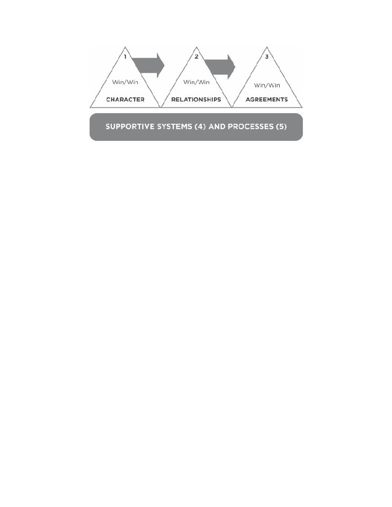
Now let’s consider each of the five dimensions in turn.
Character
Character is the foundation of Win/Win, and everything else builds on that
foundation. There are three character traits essential to the Win/Win paradigm.
INTEGRITY. We’ve already defined integrity as the value we place on ourselves.
Habits 1, 2, and 3 help us develop and maintain integrity. As we clearly identify
our values and proactively organize and execute around those values on a daily
basis, we develop self-awareness and independent will by making and keeping
meaningful promises and commitments.
There’s no way to go for a Win in our own lives if we don’t even know, in a
deep sense, what constitutes a Win—what is, in fact, harmonious with our
innermost values. And if we can’t make and keep commitments to ourselves as
well as to others, our commitments become meaningless. We know it; others
know it. They sense duplicity and become guarded. There’s no foundation of
trust and Win/Win becomes an ineffective superficial technique. Integrity is the
cornerstone in the foundation.
MATURITY. Maturity is the balance between courage and consideration. I first
learned this definition of maturity in the fall of 1955 from a marvelous professor,
Hrand Saxenian, who instructed my Control class at the Harvard Business
School. He taught the finest, simplest, most practical, yet profound, definition of
emotional maturity I’ve ever come across—“the ability to express one’s own
feelings and convictions balanced with consideration for the thoughts and
feelings of others.” As a part of his doctoral research, Hrand Saxenian had
developed this criterion over years of historical and direct field research. He later
wrote up his original research format in its completeness with supportive
reasoning and application suggestions in a Harvard Business Review article
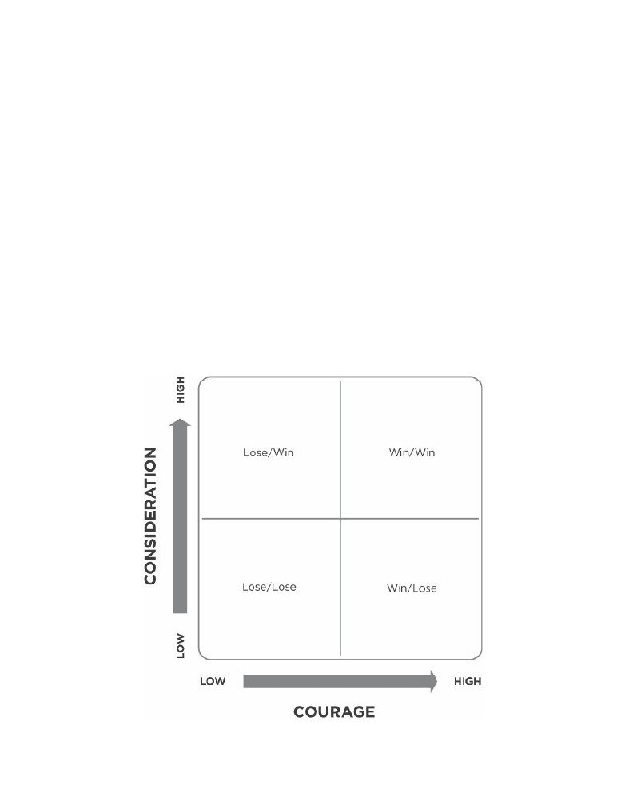
(January-February
1958). Even though it is complementary and also
developmental, Hrand’s use of the word “maturity” is different from its use in
the
7
Habits
“Maturity Continuum,” which focuses on a growth and
development process from dependency through independency to
interdependency.
If you examine many of the psychological tests used for hiring, promoting,
and training purposes, you will find that they are designed to evaluate this kind
of maturity. Whether it’s called the ego strength/empathy balance, the self-
confidence/respect for others balance, the concern for people/concern for tasks
balance, “I’m okay, you’re okay” in transactional analysis language, or 9.1, 1.9,
5.5, 9.9, in management grid language—the quality sought for is the balance of
what I call courage and consideration.
Respect for this quality is deeply ingrained in the theory of human interaction,
management, and leadership. It is a deep embodiment of the P/PC balance.
While courage may focus on getting the golden egg, consideration deals with the
long-term welfare of the other stakeholders. The basic task of leadership is to
increase the standard of living and the quality of life for all stakeholders.
Many people think in dichotomies, in either/or terms. They think if you’re
nice, you’re not tough. But Win/Win is nice… and tough. It’s twice as tough as
Win/Lose. To go for Win/Win, you not only have to be nice, you have to be
courageous. You not only have to be empathic, you have to be confident. You
not only have to be considerate and sensitive, you have to be brave. To do that,
to achieve that balance between courage and consideration, is the essence of real
maturity and is fundamental to Win/Win.
If I’m high on courage and low on consideration, how will I think? Win/Lose.
I’ll be strong and ego bound. I’ll have the courage of my convictions, but I won’t
be very considerate of yours.
To compensate for my lack of internal maturity and emotional strength, I
might borrow strength from my position and power, or from my credentials, my
seniority, my affiliations.
If I’m high on consideration and low on courage, I’ll think Lose/Win. I’ll be
so considerate of your convictions and desires that I won’t have the courage to
express and actualize my own.
High courage and consideration are both essential to Win/Win. It is the
balance that is the mark of real maturity. If I have it, I can listen, I can
empathically understand, but I can also courageously confront.
ABUNDANCE MENTALITY. The third character trait essential to Win/Win is the
Abundance Mentality, the paradigm that there is plenty out there for everybody.
Most people are deeply scripted in what I call the Scarcity Mentality. They see
life as having only so much, as though there were only one pie out there. And if
someone were to get a big piece of the pie, it would mean less for everybody
else. The Scarcity Mentality is the zero-sum paradigm of life.
People with a Scarcity Mentality have a very difficult time sharing recognition
and credit, power or profit—even with those who help in the production. They
also have a very hard time being genuinely happy for the successes of other
people—even, and sometimes especially, members of their own family or close
friends and associates. It’s almost as if something is being taken from them when
someone else receives special recognition or windfall gain or has remarkable
success or achievement.
Although they might verbally express happiness for others’ success, inwardly
they are eating their hearts out. Their sense of worth comes from being
compared, and someone else’s success, to some degree, means their failure. Only
so many people can be “A” students; only one person can be “number one.” To
“win” simply means to “beat.”
Often, people with a Scarcity Mentality harbor secret hopes that others might
suffer misfortune—not terrible misfortune, but acceptable misfortune that would
keep them “in their place.” They’re always comparing, always competing. They
give their energies to possessing things or other people in order to increase their
sense of worth.
They want other people to be the way they want them to be. They often want
to clone them, and they surround themselves with “yes” people—people who
won’t challenge them, people who are weaker than they.
It’s difficult for people with a Scarcity Mentality to be members of a
complementary team. They look on differences as signs of insubordination and
disloyalty.
The Abundance Mentality, on the other hand, flows out of a deep inner sense
of personal worth and security. It is the paradigm that there is plenty out there
and enough to spare for everybody. It results in sharing of prestige, of
recognition, of profits, of decision making. It opens possibilities, options,
alternatives, and creativity.
The Abundance Mentality takes the personal joy, satisfaction, and fulfillment
of Habits 1, 2, and 3 and turns it outward, appreciating the uniqueness, the inner
direction, the proactive nature of others. It recognizes the unlimited possibilities
for positive interactive growth and development, creating new Third
Alternatives.
Public Victory does not mean victory over other people. It means success in
effective interaction that brings mutually beneficial results to everyone involved.
Public Victory means working together, communicating together, making things
happen together that even the same people couldn’t make happen by working
independently. And Public Victory is an outgrowth of the Abundance Mentality
paradigm.
A character rich in integrity, maturity, and the Abundance Mentality has a
genuineness that goes far beyond technique, or lack of it, in human interaction.
One thing I have found particularly helpful to Win/Lose people in developing
a Win/Win character is to associate with some model or mentor who really
thinks Win/Win. When people are deeply scripted in Win/Lose or other
philosophies and regularly associate with others who are likewise scripted, they
don’t have much opportunity to see and experience the Win/Win philosophy in
action. So I recommend reading literature, such as the inspiring biography of
Anwar Sadat, In Search of Identity, and seeing movies like Chariots of Fire or
plays like Les Misérables that expose you to models of Win/Win.
But remember: If we search deeply enough within ourselves—beyond the
scripting, beyond the learned attitudes and behaviors—the real validation of
Win/Win, as well as every other correct principle, is in our own lives.
Relationships
From the foundation of character, we build and maintain Win/Win
relationships. The trust, the Emotional Bank Account, is the essence of Win/Win.
Without trust, the best we can do is compromise; without trust, we lack the
credibility for open, mutual learning and communication and real creativity.
But if our Emotional Bank Account is high, credibility is no longer an issue.
Enough deposits have been made so that you know and I know that we deeply
respect each other. We’re focused on the issues, not on personalities or positions.
Because we trust each other, we’re open. We put our cards on the table. Even
though we see things differently, I know that you’re willing to listen with respect
while I describe the young woman to you, and you know that I’ll treat your
description of the old woman with the same respect. We’re both committed to try
to understand each other’s point of view deeply and to work together for the
Third Alternative, the synergistic solution, that will be a better answer for both
of us.
A relationship where bank accounts are high and both parties are deeply
committed to Win/Win is the ideal springboard for tremendous synergy (Habit
6). That relationship neither makes the issues any less real or important, nor
eliminates the differences in perspective. But it does eliminate the negative
energy normally focused on differences in personality and position and creates a
positive, cooperative energy focused on thoroughly understanding the issues and
resolving them in a mutually beneficial way.
But what if that kind of relationship isn’t there? What if you have to work out
an agreement with someone who hasn’t even heard of Win/Win and is deeply
scripted in Win/Lose or some other philosophy?
Dealing with Win/Lose is the real test of Win/Win. Rarely is Win/Win easily
achieved in any circumstance. Deep issues and fundamental differences have to
be dealt with. But it is much easier when both parties are aware of and
committed to it and where there is a high Emotional Bank Account in the
relationship.
When you’re dealing with a person who is coming from a paradigm of
Win/Lose, the relationship is still the key. The place to focus is on your Circle of
Influence. You make deposits into the Emotional Bank Account through genuine
courtesy, respect, and appreciation for that person and for the other point of
view. You stay longer in the communication process. You listen more, you listen
in greater depth. You express yourself with greater courage. You aren’t reactive.
You go deeper inside yourself for strength of character to be proactive. You keep
hammering it out until the other person begins to realize that you genuinely want
the resolution to be a real win for both of you. That very process is a tremendous
deposit in the Emotional Bank Account.
And the stronger you are—the more genuine your character, the higher your
level of proactivity, the more committed you really are to Win/Win—the more
powerful your influence will be with that other person. This is the real test of
interpersonal leadership. It goes beyond transactional leadership into
transformational leadership, transforming the individuals involved as well as the
relationship.
Because Win/Win is a principle people can validate in their own lives, you
will be able to bring most people to a realization that they will win more of what
they want by going for what you both want. But there will be a few who are so
deeply embedded in the Win/Lose mentality that they just won’t think Win/Win.
So remember that No Deal is always an option. Or you may occasionally choose
to go for the low form of Win/Win—compromise.
It’s important to realize that not all decisions need to be Win/Win, even when
the Emotional Bank Account is high. Again, the key is the relationship. If you
and I worked together, for example, and you were to come to me and say,
“Stephen, I know you won’t like this decision. I don’t have time to explain it to
you, let alone get you involved. There’s a good possibility you’ll think it’s
wrong. But will you support it?”
If you had a positive Emotional Bank Account with me, of course I’d support
it. I’d hope you were right and I was wrong. I’d work to make your decision
work.
But if the Emotional Bank Account weren’t there, and if I were reactive, I
wouldn’t really support it. I might say I would to your face, but behind your back
I wouldn’t be very enthusiastic. I wouldn’t make the investment necessary to
make it succeed. “It didn’t work,” I’d say. “So what do you want me to do now?”
If I were overreactive, I might even torpedo your decision and do what I could
to make sure others did too. Or I might become “maliciously obedient” and do
exactly and only what you tell me to do, accepting no responsibility for results.
During the five years I lived in Great Britain, I saw that country brought twice
to its knees because the train conductors were maliciously obedient in following
all the rules and procedures written on paper.
An agreement means very little in letter without the character and relationship
base to sustain it in spirit. So we need to approach Win/Win from a genuine
desire to invest in the relationships that make it possible.
Agreements
From relationships flow the agreements that give definition and direction to
Win/Win. They are sometimes called performance agreements or partnership
agreements, shifting the paradigm of productive interaction from vertical to
horizontal, from hovering supervision to self-supervision, from positioning to
being partners in success.
Win/Win agreements cover a wide scope of interdependent interaction. We
discussed one important application when we talked about delegation in the
“Green and Clean” story in Habit 3. The same five elements we listed there
provide the structure for Win/Win agreements between employers and
employees, between independent people working together on projects, between
groups of people cooperatively focused on a common objective, between
companies and suppliers—between any people who need to interact to
accomplish. They create an effective way to clarify and manage expectations
between people involved in any interdependent endeavor.
In the Win/Win agreement, the following five elements are made very
explicit:
Desired results (not methods) identify what is to be done and when.
Guidelines specify the parameters (principles, policies, etc.) within which results are to be
accomplished.
Resources identify the human, financial, technical, or organizational support available to help
accomplish the results.
Accountability sets up the standards of performance and the time of evaluation.
Consequences specify—good and bad, natural and logical—what does and will happen as a result of
the evaluation.
These five elements give Win/Win agreements a life of their own. A clear
mutual understanding and agreement up front in these areas creates a standard
against which people can measure their own success.
Traditional authoritarian supervision is a Win/Lose paradigm. It’s also the
result of an overdrawn Emotional Bank Account. If you don’t have trust or a
common vision of desired results, you tend to hover over, check up on, and
direct. Trust isn’t there, so you feel as though you have to control people.
But if the trust account is high, what is your method? Get out of their way. As
long as you have an up-front Win/Win agreement and they know exactly what is
expected, your role is to be a source of help and to receive their accountability
reports.
It is much more ennobling to the human spirit to let people judge themselves
than to judge them. And in a high trust culture, it’s much more accurate. In many
cases people know in their hearts how things are going much better than the
records show. Discernment is often far more accurate than either observation or
measurement.
Win/Win Management Training
Several years ago, I was indirectly involved in a consulting project with a very
large banking institution that had scores of branches. They wanted us to evaluate
and improve their management training program, which was supported by an
annual budget of $750,000. The program involved selecting college graduates
and putting them through twelve two-week assignments in various departments
over a six-month period of time so that they could get a general sense of the
industry. They spent two weeks in commercial loans, two weeks in industrial
loans, two weeks in marketing, two weeks in operations, and so forth. At the end
of the six-month period, they were assigned as assistant managers in the various
branch banks.
Our assignment was to evaluate the six-month formal training period. As we
began, we discovered that the most difficult part of the assignment was to get a
clear picture of the desired results. We asked the top executives the key hard
question:
“What should these people be able to do when they finish the
program?” And the answers we got were vague and often contradictory.
The training program dealt with methods, not results; so we suggested that
they set up a pilot training program based on a different paradigm called
“learner-controlled instruction.” This was a Win/Win agreement that involved
identifying specific objectives and criteria that would demonstrate their
accomplishment and identifying the guidelines, resources, accountability, and
consequences that would result when the objectives were met. The consequences
in this case were promotion to assistant manager, where they would receive the
on-the-job part of their training, and a significant increase in salary.
We had to really press to get the objectives hammered out. “What is it you
want them to understand about accounting? What about marketing? What about
real estate loans?” And we went down the list. They finally came up with over
one hundred objectives, which we simplified, reduced, and consolidated until we
came down to 39 specific behavioral objectives with criteria attached to them.
The trainees were highly motivated by both the opportunity and the increased
salary to meet the criteria as soon as possible. There was a big win in it for them,
and there was also a big win for the company because they would have assistant
branch managers who met results-oriented criteria instead of just showing up for
twelve different activity traps.
So we explained the difference between learner-controlled instruction and
system-controlled instruction to the trainees. We basically said, “Here are the
objectives and the criteria. Here are the resources, including learning from each
other. So go to it. As soon as you meet the criteria, you will be promoted to
assistant managers.”
They were finished in three-and-a-half weeks. Shifting the training paradigm
had released unbelievable motivation and creativity.
As with many paradigm shifts, there was resistance. Almost all of the top
executives simply wouldn’t believe it. When they were shown the evidence that
the criteria had been met, they basically said, “These trainees don’t have the
experience. They lack the seasoning necessary to give them the kind of judgment
we want them to have as assistant branch managers.”
In talking with them later, we found that what many of them were really
saying was, “We went through goat week; how come these guys don’t have to?”
But of course they couldn’t put it that way. “They lack seasoning” was a much
more acceptable expression.
In addition, for obvious reasons (including the $750,000 budget for a six-
month program), the personnel department was upset.
So we responded, “Fair enough. Let’s develop some more objectives and
attach criteria to them. But let’s stay with the paradigm of learner-controlled
instruction.” We hammered out eight more objectives with very tough criteria in
order to give the executives the assurance that the people were adequately
prepared to be assistant branch managers and continue the on-the-job part of the
training program. After participating in some of the sessions where these criteria
were developed, several of the executives remarked that if the trainees could
meet these tough criteria, they would be better prepared than almost any who
had gone through the six-month program.
We had prepared the trainees to expect resistance. We took the additional
objectives and criteria back to them and said, “Just as we expected, management
wants you to accomplish some additional objectives with even tougher criteria
than before. They have assured us this time that if you meet these criteria, they
will make you assistant managers.”
They went to work in unbelievable ways. They went to the executives in
departments such as accounting and basically said, “Sir, I am a member of this
new pilot program called learner-controlled instruction, and it is my
understanding that you participated in developing the objectives and the criteria.
“I have six criteria to meet in this particular department. I was able to pass
three of them off with skills I gained in college; I was able to get another one out
of a book; I learned the fifth one from Tom, the fellow you trained last week. I
only have one criterion left to meet, and I wonder if you or someone else in the
department might be able to spend a few hours with me to show me how.” So
they spend half a day in a department instead of two weeks.
These trainees cooperated with each other, brainstormed with each other, and
they accomplished the additional objectives in a week and a half. The six-month
program was reduced to five weeks, and the results were significantly increased.
This kind of thinking can similarly affect every area of organizational life if
people have the courage to explore their paradigms and to concentrate on
Win/Win. I am always amazed at the results that happen, both to individuals and
to organizations, when responsible, proactive, self-directing individuals are
turned loose on a task.
Win/Win Performance Agreements
Creating Win/Win performance agreements requires vital paradigm shifts. The
focus is on results, not methods. Most of us tend to supervise methods. We use
the gofer delegation discussed in Habit 3, the methods management I used with
Sandra when I asked her to take pictures of our son as he was water skiing. But
Win/Win agreements focus on results, releasing tremendous individual human
potential and creating greater synergy, building PC in the process instead of
focusing exclusively on P.
With Win/Win accountability, people evaluate themselves. The traditional
evaluation games people play are awkward and emotionally exhausting. In
Win/Win, people evaluate themselves, using the criteria that they themselves
helped to create up front. And if you set it up correctly, people can do that. With
a Win/Win delegation agreement, even a seven-year-old boy can tell for himself
how well he’s keeping the yard “green and clean.”
My best experiences in teaching university classes have come when I have
created a Win/Win shared understanding of the goal up front. “This is what
we’re trying to accomplish. Here are the basic requirements for an A, B, or C
grade. My goal is to help every one of you get an A. Now you take what we’ve
talked about and analyze it and come up with your own understanding of what
you want to accomplish that is unique to you. Then let’s get together and agree
on the grade you want and what you plan to do to get it.”
Management philosopher and consultant Peter Drucker recommends the use
of a
“manager’s letter” to capture the essence of performance agreements
between managers and their employees. Following a deep and thorough
discussion of expectations, guidelines and resources to make sure they are in
harmony with organizational goals, the employee writes a letter to the manager
that summarizes the discussion and indicates when the next performance plan or
review discussion will take place.
Developing such a Win/Win performance agreement is the central activity of
management. With an agreement in place, employees can manage themselves
within the framework of that agreement. The manager then can serve like a pace
car in a race. He can get things going and then get out of the way. His job from
then on is to remove the oil spills.
When a boss becomes the first assistant to each of his subordinates, he can
greatly increase his span of control. Entire levels of administration and overhead
can be eliminated. Instead of supervising six or eight, such a manager can
supervise twenty, thirty, fifty, or more.
In Win/Win performance agreements, consequences become the natural or
logical result of performance rather than a reward or punishment arbitrarily
handed out by the person in charge.
There are basically four kinds of consequences (rewards and penalties) that
management or parents can control—financial, psychic, opportunity, and
responsibility. Financial consequences include such things as income, stock
options, allowances, or penalties. Psychic or psychological consequences include
recognition, approval, respect, credibility, or the loss of them. Unless people are
in a survival mode, psychic compensation is often more motivating than
financial compensation. Opportunity includes training, development, perks, and
other benefits. Responsibility has to do with scope and authority, either of which
can be enlarged or diminished. Win/Win agreements specify consequences in
one or more of those areas and the people involved know it up front. So you
don’t play games. Everything is clear from the beginning.
In addition to these logical, personal consequences, it is also important to
clearly identify what the natural organizational consequences are. For example,
what will happen if I’m late to work, if I refuse to cooperate with others, if I
don’t develop good Win/Win performance agreements with my subordinates, if I
don’t hold them accountable for desired results, or if I don’t promote their
professional growth and career development?
***
When my daughter turned 16, we set up a Win/Win agreement regarding use of
the family car. We agreed that she would obey the laws of the land and that she
would keep the car clean and properly maintained. We agreed that she would use
the car only for responsible purposes and would serve as a cab driver for her
mother and me within reason. And we also agreed that she would do all her other
jobs cheerfully without being reminded. These were our wins.
We also agreed that I would provide some resources—the car, gas, and
insurance. And we agreed that she would meet weekly with me, usually on
Sunday afternoon, to evaluate how she was doing based on our agreement. The
consequences were clear. As long as she kept her part of the agreement, she
could use the car. If she didn’t keep it, she would lose the privilege until she
decided to.
This Win/Win agreement set up clear expectations from the beginning on both
our parts. It was a win for her—she got to use the car—and it was certainly a win
for Sandra and me. Now she could handle her own transportation needs and even
some of ours. We didn’t have to worry about maintaining the car or keeping it
clean. And we had a built-in accountability, which meant I didn’t have to hover
over her or manage her methods. Her integrity, her conscience, her power of
discernment and our high Emotional Bank Account managed her infinitely
better. We didn’t have to get emotionally strung out, trying to supervise her
every move and coming up with punishments or rewards on the spot if she didn’t
do things the way we thought she should. We had a Win/Win agreement, and it
liberated us all.
***
Win/Win agreements are tremendously liberating. But as the product of isolated
techniques, they won’t hold up. Even if you set them up in the beginning, there
is no way to maintain them without personal integrity and a relationship of trust.
A true Win/Win agreement is the product of the paradigm, the character, and
the relationships out of which it grows. In that context, it defines and directs the
interdependent interaction for which it was created.
Systems
Win/Win can only survive in an organization when the systems support it. If
you talk Win/Win but reward Win/Lose, you’ve got a losing program on your
hands.
You basically get what you reward. If you want to achieve the goals and
reflect the values in your mission statement, then you need to align the reward
system with these goals and values. If it isn’t aligned systematically, you won’t
be walking your talk. You’ll be in the situation of the manager I mentioned
earlier who talked cooperation but practiced competition by creating a “Race to
Bermuda” contest.
***
I worked for several years with a very large real estate organization in the
Middle West. My first experience with this organization was at a large sales rally
where over 800 sales associates gathered for the annual reward program. It was a
psych-up cheerleading session, complete with high school bands and a great deal
of frenzied screaming.
Out of the
800
people there, around forty received awards for top
performance, such as
“Most Sales,”
“Greatest Volume,”
“Highest Earned
Commissions,” and “Most Listings.” There was a lot of hoopla—excitement,
cheering, applause—around the presentation of these awards. There was no
doubt that those forty people had won; but there was also the underlying
awareness that 760 people had lost.
We immediately began educational and organizational development work to
align the systems and structures of the organization toward the Win/Win
paradigm. We involved people at a grass roots level to develop the kinds of
systems that would motivate them. We also encouraged them to cooperate and
synergize with each other so that as many as possible could achieve the desired
results of their individually tailored performance agreements.
At the next rally one year later, there were over 1,000 sales associates present,
and about 800 of them received awards. There were a few individual winners
based on comparisons, but the program primarily focused on people achieving
self-selected performance objectives and on groups achieving team objectives.
There was no need to bring in the high school bands to artificially contrive the
fanfare, the cheerleading, and the psych up. There was tremendous natural
interest and excitement because people could share in each other’s happiness,
and teams of sales associates could experience rewards together, including a
vacation trip for the entire office.
The remarkable thing was that almost all of the 800 who received the awards
that year had produced as much per person in terms of volume and profit as the
previous year’s forty. The spirit of Win/Win had significantly increased the
number of golden eggs and had fed the goose as well, releasing enormous human
energy and talent. The resulting synergy was astounding to almost everyone
involved.
***
Competition has its place in the marketplace or against last year’s performance
—perhaps even against another office or individual where there is no particular
interdependence, no need to cooperate. But cooperation in the workplace is as
important to free enterprise as competition in the marketplace. The spirit of
Win/Win cannot survive in an environment of competition and contests.
For Win/Win to work, the systems have to support it. The training system, the
planning system, the communication system, the budgeting system, the
information system, the compensation system—all have to be based on the
principle of Win/Win.
***
I did some consulting for another company that wanted training for their people
in human relations. The underlying assumption was that the problem was the
people.
The president said, “Go into any store you want and see how they treat you.
They’re just order takers. They don’t understand how to get close to the
customers. They don’t know the product, and they don’t have the knowledge and
the skill in the sales process necessary to create a marriage between the product
and the need.”
So I went to the various stores. And he was right. But that still didn’t answer
the question in my mind: What caused the attitude?
“Look, we’re on top of the problem,” the president said. “We have department
heads out there setting a great example. We’ve told them their job is two-thirds
selling and one-third management, and they’re outselling everybody. We just
want you to provide some training for the salespeople.”
Those words raised a red flag. “Let’s get some more data,” I said.
He didn’t like that. He “knew” what the problem was, and he wanted to get on
with training. But I persisted, and within two days we uncovered the real
problem. Because of the job definition and the compensation system, the
managers were “creaming.” They’d stand behind the cash register and cream all
the business during the slow times. Half the time in retail is slow and the other
half is frantic. So the managers would give all the dirty jobs—inventory control,
stock work, and cleaning—to the salespeople. And they would stand behind the
registers and cream. That’s why the department heads were tops in sales.
So we changed one system—the compensation system—and the problem was
corrected overnight. We set up a system whereby the managers only made
money when their salespeople made money. We overlapped the needs and goals
of the managers with the needs and goals of the salespeople. And the need for
human relations training suddenly disappeared. The key was developing a true
Win/Win reward system.
***
In another instance, I worked with a manager in a company that required formal
performance evaluations. He was frustrated over the evaluation rating he had
given a particular manager. “He deserved a three,” he said, “but I had to give
him a one” (which meant superior, promotable).
“What did you give him a one for?” I asked.
“He gets the numbers,” was his reply.
“So why do you think he deserves a three?”
“It’s the way he gets them. He neglects people; he runs over them. He’s a
troublemaker.”
“It sounds like he’s totally focused on P—on production. And that’s what he’s
being rewarded for. But what would happen if you talked with him about the
problem, if you helped him understand the importance of PC?”
He said he had done so, with no effect.
“Then what if you set up a Win/Win contract with him where you both agreed
that two-thirds of his compensation would come from P—from the numbers—
and the other one-third would come from PC—how other people perceive him,
what kind of leader, people builder, team builder he is?”
“Now that would get his attention,” he replied.
***
So often the problem is in the system, not in the people. If you put good people
in bad systems, you get bad results. You have to water the flowers you want to
grow.
As people really learn to think Win/Win, they can set up the systems to create
and reinforce it. They can transform unnecessarily competitive situations to
cooperative ones and can powerfully impact their effectiveness by building both
P and PC.
In business, executives can align their systems to create teams of highly
productive people working together to compete against external standards of
performance. In education, teachers can set up grading systems based on an
individual’s performance in the context of agreed upon criteria and can
encourage students to cooperate in productive ways to help each other learn and
achieve. In families, parents can shift the focus from competition with each other
to cooperation. In activities such as bowling, for example, they can keep a family
score and try to beat a previous one. They can set up home responsibilities with
Win/Win agreements that eliminate constant nagging and enable parents to do
the things only they can do.
A friend once shared with me a cartoon he’d seen of two children talking to
each other. “If mommy doesn’t get us up soon,” one was saying, “we’re going to
be late for school.” These words brought forcibly to his attention the nature of
the problems created when families are not organized on a responsible Win/Win
basis.
Win/Win puts the responsibility on the individual for accomplishing specified
results within clear guidelines and available resources. It makes a person
accountable to perform and evaluate the results and provides consequences as a
natural result of performance. And Win/Win systems create the environment
which supports and reinforces the Win/Win performance agreements.
Processes
There’s no way to achieve Win/Win ends with Win/Lose or Lose/Win means.
You can’t say, “You’re going to think Win/Win, whether you like it or not.” So
the question becomes how to arrive at a Win/Win solution.
Roger Fisher and William Ury, two Harvard law professors, have done some
outstanding work in what they call the
“principled” approach versus the
“positional” approach to bargaining in their tremendously useful and insightful
book, Getting to Yes. Although the words Win/Win are not used, the spirit and
underlying philosophy of the book are in harmony with the Win/Win approach.
They suggest that the essence of principled negotiation is to separate the
person from the problem, to focus on interests and not on positions, to invent
options for mutual gain, and to insist on objective criteria—some external
standard or principle that both parties can buy into.
In my own work with various people and organizations seeking Win/Win
solutions, I suggest that they become involved in the following four-step
process:
First, see the problem from the other point of view. Really seek to understand and to give expression
to the needs and concerns of the other party as well as or better than they can themselves.
Second, identify the key issues and concerns (not positions) involved.
Third, determine what results would constitute a fully acceptable solution.
And fourth, identify possible new options to achieve those results.
Habits 5 and 6 deal directly with two of the elements of this process, and we
will go into those in depth in the next two chapters.
But at this juncture, let me point out the highly interrelated nature of the
process of Win/Win with the essence of Win/Win itself. You can only achieve
Win/Win solutions with Win/Win processes—the end and the means are the
same.
Win/Win is not a personality technique. It’s a total paradigm of human
interaction. It comes from a character of integrity, maturity, and the Abundance
Mentality. It grows out of high-trust relationships. It is embodied in agreements
that effectively clarify and manage expectations as well as accomplishment. It
thrives in supportive systems. And it is achieved through the process we are now
prepared to more fully examine in Habits 5 and 6.
APPLICATION SUGGESTIONS:
1.
Think about an upcoming interaction wherein you will be attempting to
reach an agreement or negotiate a solution. Commit to maintain a balance
between courage and consideration.
2.
Make a list of obstacles that keep you from applying the Win/Win paradigm
more frequently. Determine what could be done within your Circle of
Influence to eliminate some of those obstacles.
3.
Select a specific relationship where you would like to develop a Win/Win
agreement. Try to put yourself in the other person’s place, and write down
explicitly how you think that person sees the solution. Then list, from your
own perspective, what results would constitute a Win for you. Approach the
other person and ask if he or she would be willing to communicate until you
reach a point of agreement and mutually beneficial solution.
4.
Identify three key relationships in your life. Give some indication of what
you feel the balance is in each of the Emotional Bank Accounts. Write
down some specific ways you could make deposits in each account.
5.
Deeply consider your own scripting. Is it Win/Lose? How does that
scripting affect your interactions with other people? Can you identify the
main source of that script? Determine whether or not those scripts serve
well in your current reality.
6.
Try to identify a model of Win/Win thinking who, even in hard situations,
really seeks mutual benefit. Determine now to more closely watch and learn
from this person’s example.
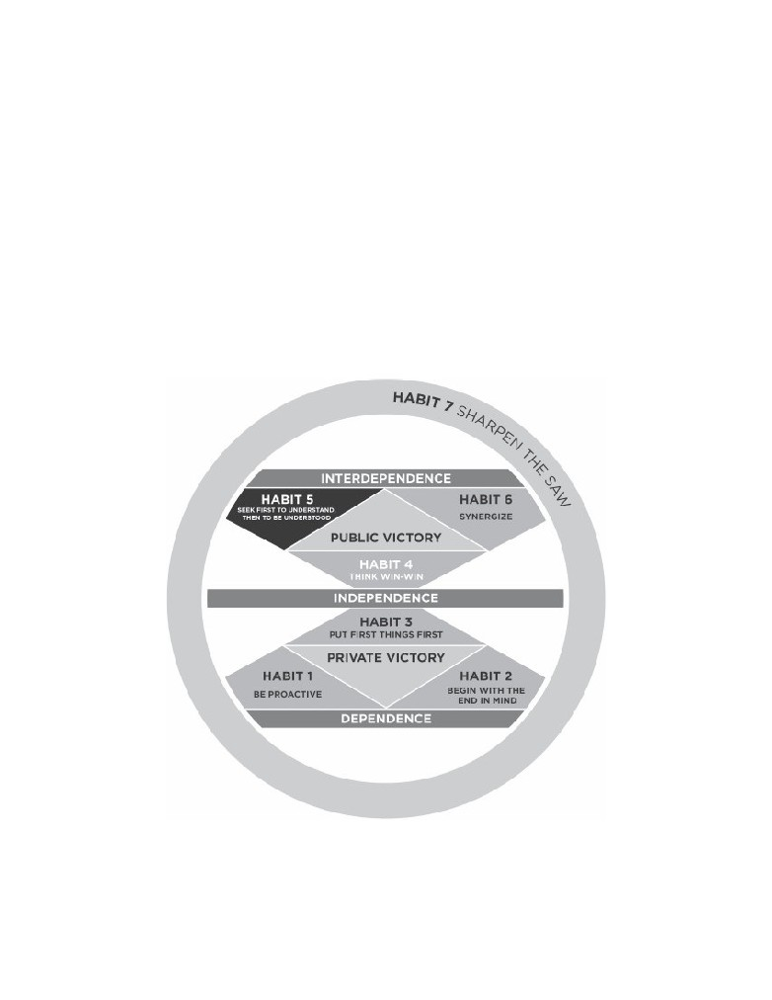
HABIT 5:
SEEK FIRST TO UNDERSTAND, THEN
TO BE UNDERSTOOD
PRINCIPLES OF EMPATHIC
COMMUNICATION
The heart has its reasons which reason knows not of.
PASCAL
Suppose you’ve been having trouble with your eyes and you decide to go to an
optometrist for help. After briefly listening to your complaint, he takes off his
glasses and hands them to you.
“Put these on,” he says. “I’ve worn this pair of glasses for ten years now and
they’ve really helped me. I have an extra pair at home; you can wear these.”
So you put them on, but it only makes the problem worse.
“This is terrible!” you exclaim. “I can’t see a thing!”
“Well, what’s wrong?” he asks. “They work great for me. Try harder.”
“I am trying,” you insist. “Everything is a blur.”
“Well, what’s the matter with you? Think positively.”
“Okay. I positively can’t see a thing.”
“Boy, are you ungrateful!” he chides. “And after all I’ve done to help you!”
What are the chances you’d go back to that optometrist the next time you
needed help? Not very good, I would imagine. You don’t have much confidence
in someone who doesn’t diagnose before he or she prescribes.
But how often do we diagnose before we prescribe in communication?
***
“Come on, honey, tell me how you feel. I know it’s hard, but I’ll try to
understand.”
“Oh, I don’t know, Mom. You’d think it was stupid.”
“Of course I wouldn’t! You can tell me. Honey, no one cares for you as much
as I do. I’m only interested in your welfare. What’s making you so unhappy?”
“Oh, I don’t know.”
“Come on, honey. What is it?”
“Well, to tell you the truth, I just don’t like school anymore.”
“What?” you respond incredulously. “What do you mean you don’t like
school? And after all the sacrifices we’ve made for your education! Education is
the foundation of your future. If you’d apply yourself like your older sister does,
you’d do better and then you’d like school. Time and time again, we’ve told you
to settle down. You’ve got the ability, but you just don’t apply yourself. Try
harder. Get a positive attitude about it.”
Pause.
“Now go ahead. Tell me how you feel.”
***
We have such a tendency to rush in, to fix things up with good advice. But we
often fail to take the time to diagnose, to really, deeply understand the problem
first.
If I were to summarize in one sentence the single most important principle I
have learned in the field of interpersonal relations, it would be this: Seek first to
understand, then to be understood. This principle is the key to effective
interpersonal communication.
CHARACTER AND COMMUNICATION
Right now, you’re reading a book I’ve written. Reading and writing are both
forms of communication. So are speaking and listening. In fact, those are the
four basic types of communication. And think of all the hours you spend doing
at least one of those four things. The ability to do them well is absolutely critical
to your effectiveness.
Communication is the most important skill in life. We spend most of our
waking hours communicating. But consider this: You’ve spent years learning
how to read and write, years learning how to speak. But what about listening?
What training or education have you had that enables you to listen so that you
really, deeply understand another human being from that individual’s own frame
of reference?
Comparatively few people have had any training in listening at all. And, for
the most part, their training has been in the Personality Ethic of technique,
truncated from the character base and the relationship base absolutely vital to
authentic understanding of another person.
If you want to interact effectively with me, to influence me—your spouse,
your child, your neighbor, your boss, your coworker, your friend—you first need
to understand me. And you can’t do that with technique alone. If I sense you’re
using some technique, I sense duplicity, manipulation. I wonder why you’re
doing it, what your motives are. And I don’t feel safe enough to open myself up
to you.
The real key to your influence with me is your example, your actual conduct.
Your example flows naturally out of your character, or the kind of person you
truly are—not what others say you are or what you may want me to think you
are. It is evident in how I actually experience you.
Your character is constantly radiating, communicating. From it, in the long
run, I come to instinctively trust or distrust you and your efforts with me.
If your life runs hot and cold, if you’re both caustic and kind, and, above all, if
your private performance doesn’t square with your public performance, it’s very
hard for me to open up with you. Then, as much as I may want and even need to
receive your love and influence, I don’t feel safe enough to expose my opinions
and experiences and my tender feelings. Who knows what will happen?
But unless I open up with you, unless you understand me and my unique
situation and feelings, you won’t know how to advise or counsel me. What you
say is good and fine, but it doesn’t quite pertain to me.
You may say you care about and appreciate me. I desperately want to believe
that. But how can you appreciate me when you don’t even understand me? All I
have are your words, and I can’t trust words.
I’m too angry and defensive—perhaps too guilty and afraid—to be influenced,
even though inside I know I need what you could tell me.
Unless you’re influenced by my uniqueness, I’m not going to be influenced by
your advice. So if you want to be really effective in the habit of interpersonal
communication, you cannot do it with technique alone. You have to build the
skills of empathic listening on a base of character that inspires openness and
trust. And you have to build the Emotional Bank Accounts that create a
commerce between hearts.
EMPATHIC LISTENING
“Seek first to understand” involves a very deep shift in paradigm. We typically
seek first to be understood. Most people do not listen with the intent to
understand; they listen with the intent to reply. They’re either speaking or
preparing to speak. They’re filtering everything through their own paradigms,
reading their autobiography into other people’s lives.
“Oh, I know exactly how you feel!”
“I went through the very same thing. Let me tell you about my experience.”
They’re constantly projecting their own home movies onto other people’s
behavior. They prescribe their own glasses for everyone with whom they
interact.
If they have a problem with someone—a son, a daughter, a spouse, an
employee—their attitude is, “That person just doesn’t understand.”
***
A father once told me, “I can’t understand my kid. He just won’t listen to me at
all.”
“Let me restate what you just said,” I replied. “You don’t understand your son
because he won’t listen to you?”
“That’s right,” he replied.
“Let me try again,” I said. “You don’t understand your son because he won’t
listen to you?”
“That’s what I said,” he impatiently replied.
“I thought that to understand another person, you needed to listen to him,” I
suggested.
“Oh!” he said. There was a long pause. “Oh!” he said again, as the light began
to dawn. “Oh, yeah! But I do understand him. I know what he’s going through. I
went through the same thing myself. I guess what I don’t understand is why he
won’t listen to me.”
This man didn’t have the vaguest idea of what was really going on inside his
boy’s head. He looked into his own head and thought he saw the world,
including his boy.
***
That’s the case with so many of us. We’re filled with our own rightness, our own
autobiography. We want to be understood. Our conversations become collective
monologues, and we never really understand what’s going on inside another
human being.
When another person speaks, we’re usually “listening” at one of four levels.
We may be ignoring another person, not really listening at all. We may practice
pretending. “Yeah. Uh-huh. Right.” We may practice selective listening, hearing
only certain parts of the conversation. We often do this when we’re listening to
the constant chatter of a preschool child. Or we may even practice attentive
listening, paying attention and focusing energy on the words that are being said.
But very few of us ever practice the fifth level, the highest form of listening,
empathic listening.
When I say empathic listening, I am not referring to the techniques of “active”
listening or
“reflective” listening, which basically involve mimicking what
another person says. That kind of listening is skill-based, truncated from
character and relationships, and often insults those “listened” to in such a way. It
is also essentially autobiographical. If you practice those techniques, you may
not project your autobiography in the actual interaction, but your motive in
listening is autobiographical. You listen with reflective skills, but you listen with
intent to reply, to control, to manipulate.
When I say empathic listening, I mean listening with intent to understand. I
mean seeking first to understand, to really understand. It’s an entirely different
paradigm.
Empathic (from empathy) listening gets inside another person’s frame of
reference. You look out through it, you see the world the way they see the world,
you understand their paradigm, you understand how they feel.
Empathy is not sympathy. Sympathy is a form of agreement, a form of
judgment. And it is sometimes the more appropriate emotion and response. But
people often feed on sympathy. It makes them dependent. The essence of
empathic listening is not that you agree with someone; it’s that you fully, deeply,
understand that person, emotionally as well as intellectually.
Empathic listening involves much more than registering, reflecting, or even
understanding the words that are said. Communications experts estimate, in fact,
that only 10 percent of our communication is represented by the words we say.
Another 30 percent is represented by our sounds, and 60 percent by our body
language. In empathic listening, you listen with your ears, but you also, and
more importantly, listen with your eyes and with your heart. You listen for
feeling, for meaning. You listen for behavior. You use your right brain as well as
your left. You sense, you intuit, you feel.
Empathic listening is so powerful because it gives you accurate data to work
with. Instead of projecting your own autobiography and assuming thoughts,
feelings, motives and interpretation, you’re dealing with the reality inside
another person’s head and heart. You’re listening to understand. You’re focused
on receiving the deep communication of another human soul.
In addition, empathic listening is the key to making deposits in Emotional
Bank Accounts, because nothing you do is a deposit unless the other person
perceives it as such. You can work your fingers to the bone to make a deposit,
only to have it turn into a withdrawal when a person regards your efforts as
manipulative, self-serving, intimidating, or condescending because you don’t
understand what really matters to him.
Empathic listening is, in and of itself, a tremendous deposit in the Emotional
Bank Account. It’s deeply therapeutic and healing because it gives a person
“psychological air.”
If all the air were suddenly sucked out of the room you’re in right now, what
would happen to your interest in this book? You wouldn’t care about the book;
you wouldn’t care about anything except getting air. Survival would be your
only motivation.
But now that you have air, it doesn’t motivate you. This is one of the greatest
insights in the field of human motivation: Satisfied needs do not motivate. It’s
only the unsatisfied need that motivates. Next to physical survival, the greatest
need of a human being is psychological survival—to be understood, to be
affirmed, to be validated, to be appreciated.
When you listen with empathy to another person, you give that person
psychological air. And after that vital need is met, you can then focus on
influencing or problem solving.
This need for psychological air impacts communication in every area of life.
***
I taught this concept at a seminar in Chicago one time, and I instructed the
participants to practice empathic listening during the evening. The next morning,
a man came up to me almost bursting with news.
“Let me tell you what happened last night,” he said. “I was trying to close a
big commercial real estate deal while I was here in Chicago. I met with the
principals, their attorneys, and another real estate agent who had just been
brought in with an alternative proposal.
“It looked as if I were going to lose the deal. I had been working on this deal
for over six months and, in a very real sense, all my eggs were in this one basket.
All of them. I panicked. I did everything I could—I pulled out all the stops—I
used every sales technique I could. The final stop was to say, ‘Could we delay
this decision just a little longer?’ But the momentum was so strong and they
were so disgusted by having this thing go on so long, it was obvious they were
going to close.
“So I said to myself, ‘Well, why not try it? Why not practice what I learned
today and seek first to understand, then to be understood? I’ve got nothing to
lose.’
“I just said to the man, ‘Let me see if I really understand what your position is
and what your concerns about my recommendations really are. When you feel I
understand them, then we’ll see whether my proposal has any relevance or not.’
“I really tried to put myself in his shoes. I tried to verbalize his needs and
concerns, and he began to open up.
“The more I sensed and expressed the things he was worried about, the results
he anticipated, the more he opened up.
“Finally, in the middle of our conversation, he stood up, walked over to the
phone, and dialed his wife. Putting his hand over the mouthpiece, he said,
‘You’ve got the deal.’
“I was totally dumbfounded,” he told me. “I still am this morning.”
He had made a huge deposit in the Emotional Bank Account by giving the
man psychological air. When it comes right down to it, other things being
relatively equal, the human dynamic is more important than the technical
dimensions of the deal.
***
Seeking first to understand, diagnosing before you prescribe, is hard. It’s so
much easier in the short run to hand someone a pair of glasses that have fit you
so well these many years.
But in the long run, it severely depletes both P and PC. You can’t achieve
maximum interdependent production from an inaccurate understanding of where
other people are coming from. And you can’t have interpersonal PC—high
Emotional Bank Accounts—if the people you relate with don’t really feel
understood.
Empathic listening is also risky. It takes a great deal of security to go into a
deep listening experience because you open yourself up to be influenced. You
become vulnerable. It’s a paradox, in a sense, because in order to have influence,
you have to be influenced. That means you have to really understand.
That’s why Habits 1, 2, and
3 are so foundational. They give you the
changeless inner core, the principle center, from which you can handle the more
outward vulnerability with peace and strength.
DIAGNOSE BEFORE YOU PRESCRIBE
Although it’s risky and hard, seek first to understand, or diagnose before you
prescribe, is a correct principle manifest in many areas of life. It’s the mark of all
true professionals. It’s critical for the optometrist, it’s critical for the physician.
You wouldn’t have any confidence in a doctor’s prescription unless you had
confidence in the diagnosis.
***
When our daughter Jenny was only two months old, she was sick one Saturday,
the day of a football game in our community that dominated the consciousness
of almost everyone. It was an important game—some 60,000 people were there.
Sandra and I would like to have gone, but we didn’t want to leave little Jenny.
Her vomiting and diarrhea had us concerned.
The doctor was at that game. He wasn’t our personal physician, but he was the
one on call. When Jenny’s situation got worse, we decided we needed some
medical advice.
Sandra dialed the stadium and had him paged. It was right at a critical time in
the game, and she could sense an officious tone in his voice. “Yes?” he said
briskly. “What is it?”
“This is Mrs. Covey, Doctor, and we’re concerned about our daughter, Jenny.”
“What’s the situation?” he asked.
Sandra described the symptoms, and he said, “Okay. I’ll call in a prescription.
Which is your pharmacy?”
When she hung up, Sandra felt that in her rush she hadn’t really given him full
data, but that what she had told him was adequate.
“Do you think he realizes that Jenny is just a newborn?” I asked her.
“I’m sure he does,” Sandra replied.
“But he’s not our doctor. He’s never even treated her.”
“Well, I’m pretty sure he knows.”
“Are you willing to give her the medicine unless you’re absolutely sure he
knows?”
Sandra was silent. “What are we going to do?” she finally said.
“Call him back,” I said.
“You call him back,” Sandra replied.
So I did. He was paged out of the game once again. “Doctor,” I said, “when
you called in that prescription, did you realize that Jenny is just two months
old?”
“No!” he exclaimed. “I didn’t realize that. It’s good you called me back. I’ll
change the prescription immediately.”
***
If you don’t have confidence in the diagnosis, you won’t have confidence in the
prescription.
This principle is also true in sales. An effective sales person first seeks to
understand the needs, the concerns, the situation of the customer. The amateur
salesman sells products; the professional sells solutions to needs and problems.
It’s a totally different approach. The professional learns how to diagnose, how to
understand. He also learns how to relate people’s needs to his products and
services. And he has to have the integrity to say, “My product or service will not
meet that need” if it will not.
Diagnosing before you prescribe is also fundamental to law. The professional
lawyer first gathers the facts to understand the situation, to understand the laws
and precedents, before preparing a case. A good lawyer almost writes the
opposing attorney’s case before he writes his own.
It’s also true in product design. Can you imagine someone in a company
saying, “This consumer research stuff is for the birds. Let’s design products.” In
other words, forget understanding the consumer’s buying habits and motives—
just design products. It would never work.
A good engineer will understand the forces, the stresses at work, before
designing the bridge. A good teacher will assess the class before teaching. A
good student will understand before he applies. A good parent will understand
before evaluating or judging. The key to good judgment is understanding. By
judging first, a person will never fully understand.
Seek first to understand is a correct principle evident in all areas of life. It’s a
generic, common denominator principle, but it has its greatest power in the area
of interpersonal relations.
FOUR AUTOBIOGRAPHICAL RESPONSES
Because we listen autobiographically, we tend to respond in one of four ways.
We evaluate—we either agree or disagree; we probe—we ask questions from
our own frame of reference; we advise—we give counsel based on our own
experience; or we interpret—we try to figure people out, to explain their
motives, their behavior, based on our own motives and behavior.
These responses come naturally to us. We are deeply scripted in them; we live
around models of them all the time. But how do they affect our ability to really
understand?
If I’m trying to communicate with my son, can he feel free to open himself up
to me when I evaluate everything he says before he really explains it? Am I
giving him psychological air?
And how does he feel when I probe? Probing is playing twenty questions. It’s
autobiographical, it controls, and it invades. It’s also logical, and the language of
logic is different from the language of sentiment and emotion. You can play
twenty questions all day and not find out what’s important to someone. Constant
probing is one of the main reasons parents do not get close to their children.
“How’s it going, Son?”
“Fine.”
“Well, what’s been happening lately?”
“Nothing.”
“So what’s exciting in school?”
“Not much.”
“And what are your plans for the weekend?”
“I don’t know.”
You can’t get him off the phone talking with his friends, but all he gives you is
one- and two-word answers. Your house is a motel where he eats and sleeps, but
he never shares, never opens up.
And when you think about it, honestly, why should he, if every time he does
open up his soft underbelly, you elephant stomp it with autobiographical advice
and “I told you so’s.”
We are so deeply scripted in these responses that we don’t even realize when
we use them. I have taught this concept to thousands of people in seminars
across the country, and it never fails to shock them deeply as we role-play
empathic listening situations and they finally begin to listen to their own typical
responses. But as they begin to see how they normally respond and learn how to
listen with empathy, they can see the dramatic results in communication. To
many, seek first to understand becomes the most exciting, the most immediately
applicable, of all the Seven Habits.
Let’s take a look at what well might be a typical communication between a
father and his teenage son. Look at the father’s words in terms of the four
different responses we have just described.
***
“Boy, Dad, I’ve had it! School is for the birds!”
“What’s the matter, Son?” (probing).
“It’s totally impractical. I don’t get a thing out of it.”
“Well, you just can’t see the benefits yet, Son. I felt the same way when I was
your age. I remember thinking what a waste some of the classes were. But those
classes turned out to be the most helpful to me later on. Just hang in there. Give
it some time” (advising).
“I’ve given it ten years of my life! Can you tell me what good ‘x plus y’ is
going to be to me as an auto mechanic?”
“An auto mechanic? You’ve got to be kidding” (evaluating).
“No, I’m not. Look at Joe. He’s quit school. He’s working on cars. And he’s
making lots of money. Now that’s practical.”
“It may look that way now. But several years down the road, Joe’s going to
wish he’d stayed in school. You don’t want to be an auto mechanic. You need an
education to prepare you for something better than that” (advising).
“I don’t know. Joe’s got a pretty good set up.”
“Look, Son, have you really tried?” (probing, evaluating).
“I’ve been in high school two years now. Sure I’ve tried. It’s just a waste.”
“That’s a highly respected school, Son. Give them a little credit” (advising,
evaluating).
“Well, the other guys feel the same way I do.”
“Do you realize how many sacrifices your mother and I have made to get you
where you are? You can’t quit when you’ve come this far” (evaluating).
“I know you’ve sacrificed, Dad. But it’s just not worth it.”
“Look, maybe if you spent more time doing your homework and less time in
front of TV…” (advising, evaluating).
“Look, Dad. It’s just no good. Oh… never mind! I don’t want to talk about
this anyway.”
***
Obviously, his father was well intended. Obviously, he wanted to help. But did
he even begin to really understand?
Let’s look more carefully at the son—not just his words, but his thoughts and
feelings (expressed parenthetically below) and the possible effect of some of his
dad’s autobiographical responses.
***
“Boy, Dad, I’ve had it! School is for the birds!” (I want to talk with you, to get
your attention.)
“What’s the matter, Son?” (You’re interested! Good!)
“It’s totally impractical. I don’t get a thing out of it.” (I’ve got a problem with
school, and I feel just terrible.)
“Well, you just can’t see the benefits yet, Son. I felt the same way when I was
your age.” (Oh, no! Here comes Chapter three of Dad’s autobiography. This isn’t
what I want to talk about. I don’t really care how many miles he had to trudge
through the snow to school without any boots. I want to get to the problem.) “I
remember thinking what a waste some of the classes were. But those classes
turned out to be the most helpful to me later on. Just hang in there. Give it some
time.” (Time won’t solve my problem. I wish I could tell you. I wish I could just
spit it out.)
“I’ve given it ten years of my life! Can you tell me what good ‘x plus y’ is
going to do me as an auto mechanic?”
“An auto mechanic? You’ve got to be kidding.” (He wouldn’t like me if I were
an auto mechanic. He wouldn’t like me if I didn’t finish school. I have to justify
what I said.)
“No, I’m not. Look at Joe. He’s quit school. He’s working on cars. And he’s
making lots of money. Now that’s practical.”
“It may look that way now. But several years down the road, Joe’s going to
wish he’d stayed in school.” (Oh, boy! Here comes lecture number sixteen on the
value of an education.) “You don’t want to be an auto mechanic.” (How do you
know that, Dad? Do you really have any idea what I want?) “You need an
education to prepare you for something better than that.”
“I don’t know. Joe’s got a pretty good set up.” (He’s not a failure. He didn’t
finish school and he’s not a failure.)
“Look, Son, have you really tried?” (We’re beating around the bush, Dad. If
you’d just listen, I really need to talk to you about something important.)
“I’ve been in high school two years now. Sure I’ve tried. It’s just a waste.”
“That’s a highly respected school, Son. Give them a little credit.” (Oh, great.
Now we’re talking credibility. I wish I could talk about what I want to talk
about.)
“Well, the other guys feel the same way I do.” (I have some credibility, too.
I’m not a moron.)
“Do you realize how many sacrifices your mother and I have made to get you
where you are?” (Uh-oh, here comes the guilt trip. Maybe I am a moron. The
school’s great, Mom and Dad are great, and I’m a moron.) “You can’t quit when
you’ve come this far.”
“I know you’ve sacrificed, Dad. But it’s just not worth it.” (You just don’t
understand.)
“Look, maybe if you spent more time doing your homework and less time in
front of the TV…” (That’s not the problem, Dad! That’s not it at all! I’ll never be
able to tell you. I was dumb to try.)
“Look, Dad. It’s just no good. Oh… never mind! I don’t want to talk about
this anyway.”
***
Can you see how limited we are when we try to understand another person on
the basis of words alone, especially when we’re looking at that person through
our own glasses? Can you see how limiting our autobiographical responses are
to a person who is genuinely trying to get us to understand his autobiography?
You will never be able to truly step inside another person, to see the world as
he sees it, until you develop the pure desire, the strength of personal character,
and the positive Emotional Bank Account, as well as the empathic listening
skills to do it.
The skills, the tip of the iceberg of empathic listening, involve four
developmental stages.
The first and least effective is to mimic content. This is the skill taught in
“active” or “reflective” listening. Without the character and relationship base, it
is often insulting to people and causes them to close up. It is, however, a first
stage skill because it at least causes you to listen to what’s being said.
Mimicking content is easy. You just listen to the words that come out of
someone’s mouth and you repeat them. You’re hardly even using your brain at
all.
“Boy, Dad, I’ve had it! School is for the birds!”
“You’ve had it. You think school is for the birds.”
You have essentially repeated back the content of what was being said. You
haven’t evaluated or probed or advised or interpreted. You’ve at least showed
you’re paying attention to his words. But to understand, you want to do more.
The second stage of empathic listening is to rephrase the content. It’s a little
more effective, but it’s still limited to the verbal communication.
“Boy, Dad, I’ve had it! School is for the birds!”
“You don’t want to go to school anymore.”
This time, you’ve put his meaning into your own words. Now you’re thinking
about what he said, mostly with the left side, the reasoning, logical side of the
brain.
The third stage brings your right brain into operation. You reflect feeling.
“Boy, Dad, I’ve had it! School is for the birds!”
“You’re feeling really frustrated.”
Now you’re not paying as much attention to what he’s saying as you are to the
way he feels about what he’s saying. The fourth stage includes both the second
and the third. You rephrase the content and reflect the feeling.
“Boy, Dad, I’ve had it! School is for the birds!”
“You’re really frustrated about school.”
Frustration is the feeling; school is the content. You’re using both sides of
your brain to understand both sides of his communication.
Now, what happens when you use fourth stage empathic listening skills is
really incredible. As you authentically seek to understand, as you rephrase
content and reflect feeling, you give him psychological air. You also help him
work through his own thoughts and feelings. As he grows in his confidence of
your sincere desire to really listen and understand, the barrier between what’s
going on inside him and what’s actually being communicated to you disappears.
It opens a soul-to-soul flow. He’s not thinking and feeling one thing and
communicating another. He begins to trust you with his innermost tender
feelings and thoughts.
***
“Boy, Dad, I’ve had it! School is for the birds!” (I want to talk with you, to get
your attention.)
“You’re really frustrated about school.” (That’s right! That’s how I feel.)
“I sure am. It’s totally impractical. I’m not getting a thing out of it.”
“You feel like school’s not doing you any good.” (Let me think—is that what I
mean?)
“Well, yeah. I’m just not learning anything that’s going to help me. I mean,
look at Joe. He’s dropped out of school and he’s working on cars. He’s making
money. Now that’s practical.”
“You feel that Joe really has the right idea.” (Well….)
“Well, I guess he does in a way. He’s really making money now. But in a few
years, I bet he’ll probably be ticked off at himself.”
“You think Joe’s going to feel he made the wrong decision.”
“He’s got to. Just look at what he’s giving up. I mean, if you don’t have an
education, you just can’t make it in this world.”
“Education is really important.”
“Oh, yeah! I mean, if you don’t have a diploma, if you can’t get jobs or go to
college, what are you going to do? You’ve just got to get an education.”
“It’s important to your future.”
“It is. And… you know what? I’m really worried. Listen, you won’t tell Mom,
will you?”
“You don’t want your mother to find out.”
“Well, not really. Oh, I guess you can tell her. She’ll probably find out
anyway. Look, I took this test today, this reading test. And, Dad, they said I’m
reading on a fourth-grade level. Fourth grade! And I’m a junior in high school!”
***
What a difference real understanding can make! All the well-meaning advice in
the world won’t amount to a hill of beans if we’re not even addressing the real
problem. And we’ll never get to the problem if we’re so caught up in our own
autobiography, our own paradigms, that we don’t take off our glasses long
enough to see the world from another point of view.
***
“I’m going to flunk, Dad. I guess I figure if I’m going to flunk, I might as well
quit. But I don’t want to quit.”
“You feel torn. You’re in the middle of a dilemma.”
“What do you think I should do, Dad?”
***
By seeking first to understand, this father has just turned a transactional
opportunity into a transformational opportunity. Instead of interacting on a
surface, get-the-job-done level of communication, he has created a situation in
which he can now have transforming impact, not only on his son but also on the
relationship. By setting aside his own autobiography and really seeking to
understand, he has made a tremendous deposit in the Emotional Bank Account
and has empowered his son to open, layer upon layer, and to get to the real issue.
Now father and son are on the same side of the table looking at the problem,
instead of on opposite sides looking across at each other. The son is opening his
father’s autobiography and asking for advice.
Even as the father begins to counsel, however, he needs to be sensitive to his
son’s communication. As long as the response is logical, the father can
effectively ask questions and give counsel. But the moment the response
becomes emotional, he needs to go back to empathic listening.
***
“Well, I can see some things you might want to consider.”
“Like what, Dad?”
“Like getting some special help with your reading. Maybe they have some
kind of tutoring program over at the tech school.”
“I’ve already checked into that. It takes two nights and all day Saturday. That
would take so much time!”
Sensing emotion in that reply, the father moves back to empathy.
“That’s too much of a price to pay.”
“Besides, Dad, I told the sixth graders I’d be their coach.”
“You don’t want to let them down.”
“But I’ll tell you this, Dad. If I really thought that tutoring course would help,
I’d be down there every night. I’d get someone else to coach those kids.”
“You really want the help, but you doubt if the course will make a difference.”
“Do you think it would, Dad?”
***
The son is once more open and logical. He’s opening his father’s autobiography
again. Now the father has another opportunity to influence and transform.
There are times when transformation requires no outside counsel. Often when
people are really given the chance to open up, they unravel their own problems
and the solutions become clear to them in the process.
At other times, they really need additional perspective and help. The key is to
genuinely seek the welfare of the individual, to listen with empathy, to let the
person get to the problem and the solution at his own pace and time. Layer upon
layer—it’s like peeling an onion until you get to the soft inner core.
When people are really hurting and you really listen with a pure desire to
understand, you’ll be amazed how fast they will open up. They want to open up.
Children desperately want to open up, even more to their parents than to their
peers. And they will, if they feel their parents will love them unconditionally and
will be faithful to them afterwards and not judge or ridicule them.
If you really seek to understand, without hypocrisy and without guile, there
will be times when you will be literally stunned with the pure knowledge and
understanding that will flow to you from another human being. It isn’t even
always necessary to talk in order to empathize. In fact, sometimes words may
just get in your way. That’s one very important reason why technique alone will
not work. That kind of understanding transcends technique. Isolated technique
only gets in the way.
I have gone through the skills of empathic listening because skill is an
important part of any habit. We need to have the skills. But let me reiterate that
the skills will not be effective unless they come from a sincere desire to
understand. People resent any attempt to manipulate them. In fact, if you’re
dealing with people you’re close to, it’s helpful to tell them what you’re doing.
“I read this book about listening and empathy and I thought about my
relationship with you. I realized I haven’t listened to you like I should. But I
want to. It’s hard for me. I may blow it at times, but I’m going to work at it. I
really care about you and I want to understand. I hope you’ll help me.”
Affirming your motive is a huge deposit.
But if you’re not sincere, I wouldn’t even try it. It may create an openness and
a vulnerability that will later turn to your harm when a person discovers that you
really didn’t care, you really didn’t want to listen, and he’s left open, exposed,
and hurt. The technique, the tip of the iceberg, has to come out of the massive
base of character underneath.
Now there are people who protest that empathic listening takes too much time.
It may take a little more time initially but it saves so much time downstream.
The most efficient thing you can do if you’re a doctor and want to prescribe a
wise treatment is to make an accurate diagnosis. You can’t say, “I’m in too much
of a hurry. I don’t have time to make a diagnosis. Just take this treatment.”
***
I remember writing one time in a room on the north shore of Oahu, Hawaii.
There was a soft breeze blowing, and so I had opened two windows—one at the
front and one at the side—to keep the room cool. I had a number of papers laid
out, chapter by chapter, on a large table.
Suddenly, the breeze started picking up and blowing my papers about. I
remember the frantic sense of loss I felt because things were no longer in order,
including unnumbered pages, and I began rushing around the room trying
desperately to put them back. Finally, I realized it would be better to take ten
seconds and close one of the windows.
***
Empathic listening takes time, but it doesn’t take anywhere near as much time as
it takes to back up and correct misunderstandings when you’re already miles
down the road, to redo, to live with unexpressed and unsolved problems, to deal
with the results of not giving people psychological air.
A discerning empathic listener can read what’s happening down deep fast, and
can show such acceptance, such understanding, that other people feel safe to
open up layer after layer until they get to that soft inner core where the problem
really lies.
People want to be understood. And whatever investment of time it takes to do
that will bring much greater returns of time as you work from an accurate
understanding of the problems and issues and from the high Emotional Bank
Account that results when a person feels deeply understood.
UNDERSTANDING AND PERCEPTION
As you learn to listen deeply to other people, you will discover tremendous
differences in perception. You will also begin to appreciate the impact that these
differences can have as people try to work together in interdependent situations.
You see the young woman; I see the old lady. And both of us can be right.
You may look at the world through spouse-centered glasses; I see it through
the money-centered lens of economic concern.
You may be scripted in the abundance mentality; I may be scripted in the
scarcity mentality.
You may approach problems from a highly visual, intuitive, holistic right
brain paradigm; I may be very left brain, very sequential, analytical, and verbal
in my approach.
Our perceptions can be vastly different. And yet we both have lived with our
paradigms for years, thinking they are “facts,” and questioning the character or
the mental competence of anyone who can’t “see the facts.”
Now, with all our differences, we’re trying to work together—in a marriage, in
a job, in a community service project—to manage resources and accomplish
results. So how do we do it? How do we transcend the limits of our individual
perceptions so that we can deeply communicate, so that we can cooperatively
deal with the issues and come up with Win/Win solutions?
The answer is Habit 5. It’s the first step in the process of Win/Win. Even if
(and especially when) the other person is not coming from that paradigm, seek
first to understand.
***
This principle worked powerfully for one executive who shared with me the
following experience:
“I was working with a small company that was in the process of negotiating a
contract with a large national banking institution. This institution flew in their
lawyers from San Francisco, their negotiator from Ohio, and presidents of two of
their large banks to create an eight-person negotiating team. The company I
worked with had decided to go for Win/Win or No Deal. They wanted to
significantly increase the level of service and the cost, but they had been almost
overwhelmed with the demands of this large financial institution.
“The president of our company sat across the negotiating table and told them,
‘We would like for you to write the contract the way you want it so that we can
make sure we understand your needs and your concerns. We will respond to
those needs and concerns. Then we can talk about pricing.’
“The members of the negotiating team were overwhelmed. They were
astounded that they were going to have the opportunity to write the contract.
They took three days to come up with the deal.
“When they presented it, the president said,
‘Now let’s make sure we
understand what you want.’ And he went down the contract, rephrasing the
content, reflecting the feeling, until he was sure and they were sure he
understood what was important to them. ‘Yes. That’s right. No, that’s not exactly
what we meant here… yes, you’ve got it now.’
“When he thoroughly understood their perspective, he proceeded to explain
some concerns from his perspective… and they listened. They were ready to
listen. They weren’t fighting for air. What had started out as a very formal, low-
trust, almost hostile atmosphere had turned into a fertile environment for
synergy.
“At the conclusion of the discussions, the members of the negotiating team
basically said, ‘We want to work with you. We want to do this deal. Just let us
know what the price is and we’ll sign.’”
THEN SEEK TO BE UNDERSTOOD
Seek first to understand… then to be understood. Knowing how to be
understood is the other half of Habit 5, and is equally critical in reaching
Win/Win solutions.
Earlier we defined maturity as the balance between courage and consideration.
Seeking to understand requires consideration; seeking to be understood takes
courage. Win/Win requires a high degree of both. So it becomes important in
interdependent situations for us to be understood.
The early Greeks had a magnificent philosophy which is embodied in three
sequentially arranged words: ethos, pathos, and logos. I suggest these three
words contain the essence of seeking first to understand and making effective
presentations.
Ethos is your personal credibility, the faith people have in your integrity and
competency. It’s the trust that you inspire, your Emotional Bank Account.
Pathos is the empathic side—it’s the feeling. It means that you are in alignment
with the emotional thrust of another person’s communication. Logos is the logic,
the reasoning part of the presentation.
Notice the sequence: ethos, pathos, logos—your character, and your
relationships, and then the logic of your presentation. This represents another
major paradigm shift. Most people, in making presentations, go straight to the
logos, the left brain logic, of their ideas. They try to convince other people of the
validity of that logic without first taking ethos and pathos into consideration.
***
I had an acquaintance who was very frustrated because his boss was locked into
what he felt was an unproductive leadership style.
“Why doesn’t he do anything?” he asked me. “I’ve talked to him about it, he’s
aware of it, but he does nothing.”
“Well, why don’t you make an effective presentation?” I asked.
“I did,” was the reply.
“How do you define ‘effective’? Who do they send back to school when the
salesman doesn’t sell—the buyer? Effective means it works; it means P/PC. Did
you create the change you wanted? Did you build the relationship in the process?
What were the results of your presentation?”
“I told you, he didn’t do anything. He wouldn’t listen.”
“Then make an effective presentation. You’ve got to empathize with his head.
You’ve got to get into his frame of mind. You’ve got to make your point simply
and visually and describe the alternative he is in favor of better than he can
himself. That will take some homework. Are you willing to do that?”
“Why do I have to go through all that?” he asked.
“In other words, you want him to change his whole leadership style and
you’re not willing to change your method of presentation?”
“I guess so,” he replied.
“Well, then,” I said, “just smile about it and learn to live with it.”
“I can’t live with it,” he said. “It compromises my integrity.”
“Okay, then get to work on an effective presentation. That’s in your Circle of
Influence.”
In the end, he wouldn’t do it. The investment seemed too great.
***
Another acquaintance, a university professor, was willing to pay the price. He
approached me one day and said, “Stephen, I can’t get to first base in getting the
funding I need for my research because my research is really not in the
mainstream of this department’s interests.”
After discussing his situation at some length, I suggested that he develop an
effective presentation using ethos, pathos, and logos. “I know you’re sincere and
the research you want to do would bring great benefits. Describe the alternative
they are in favor of better than they can themselves. Show that you understand
them in depth. Then carefully explain the logic behind your request.”
“Well, I’ll try,” he said.
“Do you want to practice with me?” I asked. He was willing, and so we dress
rehearsed his approach.
When he went in to make his presentation, he started by saying, “Now let me
see if I first understand what your objectives are, and what your concerns are
about this presentation and my recommendation.”
He took the time to do it slowly, gradually. In the middle of his presentation,
demonstrating his depth of understanding and respect for their point of view, a
senior professor turned to another professor, nodded, turned back to him, and
said, “You’ve got your money.”
***
When you can present your own ideas clearly, specifically, visually, and most
important, contextually—in the context of a deep understanding of other
people’s paradigms and concerns—you significantly increase the credibility of
your ideas.
You’re not wrapped up in your “own thing,” delivering grandiose rhetoric
from a soapbox. You really understand. What you’re presenting may even be
different from what you had originally thought because in your effort to
understand, you learned.
Habit 5 lifts you to greater accuracy, greater integrity, in your presentations.
And people know that. They know you’re presenting the ideas that you
genuinely believe, taking all known facts and perceptions into consideration,
which will benefit everyone.
ONE ON ONE
Habit 5 is powerful because it is right in the middle of your Circle of
Influence. Many factors in interdependent situations are in your Circle of
Concern—problems, disagreements, circumstances, other people’s behavior.
And if you focus your energies out there, you deplete them with little positive
results.
But you can always seek first to understand. That’s something that’s within
your control. And as you do that, as you focus on your Circle of Influence, you
really, deeply understand other people. You have accurate information to work
with, you get to the heart of matters quickly, you build Emotional Bank
Accounts, and you give people the psychological air they need so you can work
together effectively.
It’s the inside-out approach. And as you do it, watch what happens to your
Circle of Influence. Because you really listen, you become influenceable. And
being influenceable is the key to influencing others. Your circle begins to
expand. You increase your ability to influence many of the things in your Circle
of Concern.
And watch what happens to you. The more deeply you understand other
people, the more you will appreciate them, the more reverent you will feel about
them. To touch the soul of another human being is to walk on holy ground.
Habit
5
is something you can practice right now. The next time you
communicate with anyone, you can put aside your own autobiography and
genuinely seek to understand. Even when people don’t want to open up about
their problems, you can be empathic. You can sense their hearts, you can sense
the hurt, and you can respond, “You seem down today.” They may say nothing.
That’s all right. You’ve shown understanding and respect.
Don’t push; be patient; be respectful. People don’t have to open up verbally
before you can empathize. You can empathize all the time with their behavior.
You can be discerning, sensitive, and aware and you can live outside your
autobiography when that is needed.
And if you’re highly proactive, you can create opportunities to do preventive
work. You don’t have to wait until your son or daughter has a problem with
school or you have your next business negotiation to seek first to understand.
Spend time with your children now, one on one. Listen to them; understand
them. Look at your home, at school life, at the challenges and the problems
they’re facing, through their eyes. Build the Emotional Bank Account. Give
them air.
Go out with your spouse on a regular basis. Have dinner or do something
together you both enjoy. Listen to each other; seek to understand. See life
through each other’s eyes.
My daily time with Sandra is something I wouldn’t trade for anything. As well
as seeking to understand each other, we often take time to actually practice
empathic listening skills to help us in communicating with our children.
We often share our different perceptions of the situation, and we role-play
more effective approaches to difficult interpersonal family problems.
I may act as if I am a son or daughter requesting a special privilege even
though I haven’t fulfilled a basic family responsibility, and Sandra plays herself.
We interact back and forth and try to visualize the situation in a very real way
so that we can train ourselves to be consistent in modeling and teaching correct
principles to our children. Some of our most helpful role-plays come from
redoing a past difficult or stressful scene in which one of us “blew it.”
The time you invest to deeply understand the people you love brings
tremendous dividends in open communication. Many of the problems that
plague families and marriages simply don’t have time to fester and develop. The
communication becomes so open that potential problems can be nipped in the
bud. And there are great reserves of trust in the Emotional Bank Account to
handle the problems that do arise.
In business, you can set up one-on-one time with your employees. Listen to
them, understand them. Set up human resource accounting or stakeholder
information systems in your business to get honest, accurate feedback at every
level: from customers, suppliers, and employees. Make the human element as
important as the financial or the technical element. You save tremendous
amounts of time, energy, and money when you tap into the human resources of a
business at every level. When you listen, you learn. And you also give the
people who work for you and with you psychological air. You inspire loyalty that
goes well beyond the eight-to-five physical demands of the job.
Seek first to understand. Before the problems come up, before you try to
evaluate and prescribe, before you try to present your own ideas—seek to
understand. It’s a powerful habit of effective interdependence.
When we really, deeply understand each other, we open the door to creative
solutions and third alternatives. Our differences are no longer stumbling blocks
to communication and progress. Instead, they become the stepping stones to
synergy.
APPLICATION SUGGESTIONS:
1. Select a relationship in which you sense the Emotional Bank Account is in
the red. Try to understand and write down the situation from the other
person’s point of view. In your next interaction, listen for understanding,
comparing what you are hearing with what you wrote down. How valid
were your assumptions? Did you really understand that individual’s
perspective?
2. Share the concept of empathy with someone close to you. Tell him or her
you want to work on really listening to others and ask for feedback in a
week. How did you do? How did it make that person feel?
3. The next time you have an opportunity to watch people communicate, cover
your ears for a few minutes and just watch. What emotions are being
communicated that may not come across in words alone?
4. Next time you catch yourself inappropriately using one of the
autobiographical responses—probing, evaluating, advising, or interpreting
—try to turn the situation into a deposit by acknowledgment and apology.
(“I’m sorry, I just realized I’m not really trying to understand. Could we
start again?”)
5. Base your next presentation on empathy. Describe the other point of view as
well as or better than its proponents; then seek to have your point
understood from their frame of reference.
PRINCIPLES OF CREATIVE
COOPERATION
I take as my guide the hope of a saint: in crucial things, unity—in important
things, diversity—in all things, generosity.
INAUGURAL ADDRESS OF PRESIDENT GEORGE H. W. BUSH
When Sir Winston Churchill was called to head up the war effort for Great
Britain, he remarked that all his life had prepared him for this hour. In a similar
sense, the exercise of all of the other habits prepares us for the habit of synergy.
When properly understood, synergy is the highest activity in all life—the true
test and manifestation of all of the other habits put together.
The highest forms of synergy focus the four unique human endowments, the
motive of Win/Win, and the skills of empathic communication on the toughest
challenges we face in life. What results is almost miraculous. We create new
alternatives—something that wasn’t there before.
Synergy is the essence of principle-centered leadership. It is the essence of
principle-centered parenting. It catalyzes, unifies, and unleashes the greatest
powers within people. All the habits we have covered prepare us to create the
miracle of synergy.
What is synergy? Simply defined, it means that the whole is greater than the
sum of its parts. It means that the relationship which the parts have to each other
is a part in and of itself. It is not only a part, but the most catalytic, the most
empowering, the most unifying, and the most exciting part.
The creative process is also the most terrifying part because you don’t know
exactly what’s going to happen or where it is going to lead. You don’t know
what new dangers and challenges you’ll find. It takes an enormous amount of
internal security to begin with the spirit of adventure, the spirit of discovery, the
spirit of creativity. Without doubt, you have to leave the comfort zone of base
camp and confront an entirely new and unknown wilderness. You become a
trailblazer, a pathfinder. You open new possibilities, new territories, new
continents, so that others can follow.
Synergy is everywhere in nature. If you plant two plants close together, the
roots comingle and improve the quality of the soil so that both plants will grow
better than if they were separated. If you put two pieces of wood together, they
will hold much more than the total of the weight held by each separately. The
whole is greater than the sum of its parts. One plus one equals three or more.
The challenge is to apply the principles of creative cooperation, which we
learn from nature, in our social interactions. Family life provides many
opportunities to observe synergy and to practice it.
The very way that a man and a woman bring a child into the world is
synergistic. The essence of synergy is to value differences—to respect them, to
build on strengths, to compensate for weaknesses.
We obviously value the physical differences between men and women,
husbands and wives. But what about the social, mental, and emotional
differences? Could these differences not also be sources of creating new, exciting
forms of life—creating an environment that is truly fulfilling for each person,
that nurtures the self-esteem and self-worth of each, that creates opportunities for
each to mature into independence and then gradually into interdependence?
Could synergy not create a new script for the next generation—one that is more
geared to service and contribution, and is less protective, less adversarial, less
selfish; one that is more open, more trusting, more giving, and is less defensive,
protective, and political; one that is more loving, more caring, and is less
possessive and judgmental?
SYNERGISTIC COMMUNICATION
When you communicate synergistically, you are simply opening your mind
and heart and expressions to new possibilities, new alternatives, new options. It
may seem as if you are casting aside Habit 2 (to begin with the end in mind);
but, in fact, you’re doing the opposite—you’re fulfilling it. You’re not sure when
you engage in synergistic communication how things will work out or what the
end will look like, but you do have an inward sense of excitement and security
and adventure, believing that it will be significantly better than it was before.
And that is the end that you have in mind.
You begin with the belief that parties involved will gain more insight, and that
the excitement of that mutual learning and insight will create a momentum
toward more and more insights, learnings, and growth.
Many people have not really experienced even a moderate degree of synergy
in their family life or in other interactions. They’ve been trained and scripted
into defensive and protective communications or into believing that life or other
people can’t be trusted. As a result, they are never really open to Habit 6 and to
these principles.
This represents one of the great tragedies and wastes in life, because so much
potential remains untapped—completely undeveloped and unused. Ineffective
people live day after day with unused potential. They experience synergy only in
small, peripheral ways in their lives.
They may have memories of some unusual creative experiences, perhaps in
athletics, where they were involved in a real team spirit for a period of time. Or
perhaps they were in an emergency situation where people cooperated to an
unusually high degree and submerged ego and pride in an effort to save
someone’s life or to produce a solution to a crisis.
To many, such events may seem unusual, almost out of character with life,
even miraculous. But this is not so. These things can be produced regularly,
consistently, almost daily in people’s lives. But it requires enormous personal
security and openness and a spirit of adventure.
Most all creative endeavors are somewhat unpredictable. They often seem
ambiguous, hit-or-miss, trial and error. And unless people have a high tolerance
for ambiguity and get their security from integrity to principles and inner values
they find it unnerving and unpleasant to be involved in highly creative
enterprises. Their need for structure, certainty, and predictability is too high.
SYNERGY IN THE CLASSROOM
As a teacher, I have come to believe that many truly great classes teeter on the
very edge of chaos. Synergy tests whether teachers and students are really open
to the principle of the whole being greater than the sum of its parts.
There are times when neither the teacher nor the student knows for sure
what’s going to happen. In the beginning, there’s a safe environment that enables
people to be really open and to learn and to listen to each other’s ideas. Then
comes brainstorming, where the spirit of evaluation is subordinated to the spirit
of creativity, imagining, and intellectual networking. Then an absolutely unusual
phenomenon begins to take place. The entire class is transformed with the
excitement of a new thrust, a new idea, a new direction that’s hard to define, yet
it’s almost palpable to the people involved.
Synergy is almost as if a group collectively agrees to subordinate old scripts
and to write a new one.
***
I’ll never forget a university class I taught in leadership philosophy and style. We
were about three weeks into a semester when, in the middle of a presentation,
one person started to relate some very powerful personal experiences which
were both emotional and insightful. A spirit of humility and reverence fell upon
the class—reverence toward this individual and appreciation for his courage.
This spirit became fertile soil for a synergistic and creative endeavor. Others
began to pick up on it, sharing some of their experiences and insights and even
some of their self-doubts. The spirit of trust and safety prompted many to
become extremely open. Rather than present what they prepared, they fed on
each other’s insights and ideas and started to create a whole new scenario as to
what that class could mean.
I was deeply involved in the process. In fact, I was almost mesmerized by it
because it seemed so magical and creative. And I found myself gradually
loosening up my commitment to the structure of the class and sensing entirely
new possibilities. It wasn’t just a flight of fancy; there was a sense of maturity
and stability and substance which transcended by far the old structure and plan.
We abandoned the old syllabus, the purchased textbooks and all the
presentation plans, and we set up new purposes and projects and assignments.
We became so excited about what was happening that in about three more
weeks, we all sensed an overwhelming desire to share what was happening with
others.
We decided to write a book containing our learnings and insights on the
subject of our study—principles of leadership. Assignments were changed, new
projects undertaken, new teams formed. People worked much harder than they
ever would have in the original class structure, and for an entirely different set of
reasons.
Out of this experience emerged a unique, extremely cohesive, and synergistic
culture that did not end with the semester. For years, alumni meetings were held
among members of that class. Even today, many years later, when we see each
other, we talk about it and often attempt to describe what happened and why.
One of the interesting things to me was how little time had elapsed before
there was sufficient trust to create such synergy. I think it was largely because
the people were relatively mature. They were in the final semester of their senior
year, and I think they wanted more than just another good classroom experience.
They were hungry for something new and exciting, something that they could
create that was truly meaningful. It was “an idea whose time had come” for
them.
In addition, the chemistry was right. I felt that experiencing synergy was more
powerful than talking about it, that producing something new was more
meaningful than simply reading something old.
***
I’ve also experienced, as I believe most people have, times that were almost
synergistic, times that hung on the edge of chaos and for some reason descended
into it. Sadly, people who are burned by such experiences often begin their next
new experience with that failure in mind. They defend themselves against it and
cut themselves off from synergy.
It’s like administrators who set up new rules and regulations based on the
abuses of a few people inside an organization, thus limiting the freedom and
creative possibilities for many—or business partners who imagine the worst
scenarios possible and write them up in legal language, killing the whole spirit of
creativity, enterprise, and synergistic possibility.
As I think back on many consulting and executive education experiences, I
can say that the highlights were almost always synergistic. There was usually an
early moment that required considerable courage, perhaps in becoming
extremely authentic, in confronting some inside truth about the individual or the
organization or the family which really needed to be said, but took a
combination of considerable courage and genuine love to say. Then others
became more authentic, open, and honest, and the synergistic communication
process began. It usually became more and more creative, and ended up in
insights and plans that no one had anticipated initially.
As Carl Rogers taught, “That which is most personal is most general.” The
more authentic you become, the more genuine in your expression, particularly
regarding personal experiences and even self-doubts, the more people can relate
to your expression and the safer it makes them feel to express themselves. That
expression in turn feeds back on the other person’s spirit, and genuine creative
empathy takes place, producing new insights and learnings and a sense of
excitement and adventure that keeps the process going.
People then begin to interact with each other almost in half sentences,
sometimes incoherent, but they get each other’s meanings very rapidly. Then
whole new worlds of insights, new perspectives, new paradigms that ensure
options, new alternatives are opened up and thought about. Though occasionally
these new ideas are left up in the air, they usually come to some kind of closure
that is practical and useful.
SYNERGY IN BUSINESS
I enjoyed one particularly meaningful synergistic experience as I worked with
my associates to create the corporate mission statement for our business. Almost
all members of the company went high up into the mountains where, surrounded
by the magnificence of nature, we began with a first draft of what some of us
considered to be an excellent mission statement.
At first the communication was respectful, careful and predictable. But as we
began to talk about the various alternatives, possibilities and opportunities ahead,
people became very open and authentic and simply started to think out loud. The
mission statement agenda gave way to a collective free association, a
spontaneous piggybacking of ideas. People were genuinely empathic as well as
courageous, and we moved from mutual respect and understanding to creative
synergistic communication.
Everyone could sense it. It was exciting. As it matured, we returned to the task
of putting the evolved collective vision into words, each of which contains
specific and committed-to meaning for each participant.
The resulting corporate mission statement reads:
Our mission is to empower people and organizations to significantly increase their performance
capability in order to achieve worthwhile purposes through understanding and living principle-
centered leadership.
The synergistic process that led to the creation of our mission statement
engraved it in the hearts and minds of everyone there, and it has served us well
as a frame of reference of what we are about, as well as what we are not about.
***
Another high level synergy experience took place when I accepted an invitation
to serve as the resource and discussion catalyst at the annual planning meeting of
a large insurance company. Several months ahead, I met with the committee
responsible to prepare for and stage the two-day meeting which was to involve
all the top executives. They informed me that the traditional pattern was to
identify four or five major issues through questionnaires and interviews, and to
have alternative proposals presented by the executives. Past meetings had been
generally respectful exchanges, occasionally deteriorating into defensive
Win/Lose ego battles. They were usually predictable, uncreative, and boring.
As I talked with the committee members about the power of synergy, they
could sense its potential. With considerable trepidation, they agreed to change
the pattern. They requested various executives to prepare anonymous “white
papers” on each of the high priority issues, and then asked all the executives to
immerse themselves in these papers ahead of time in order to understand the
issues and the differing points of view. They were to come to the meeting
prepared to listen rather than to present, prepared to create and synergize rather
than to defend and protect.
We spent the first half-day in the meeting teaching the principles and
practicing the skills of Habits 4, 5, and 6. The rest of the time was spent in
creative synergy.
The release of creative energy was incredible. Excitement replaced boredom.
People became very open to each other’s influence and generated new insights
and options. By the end of the meeting an entirely new understanding of the
nature of the central company challenge evolved. The white paper proposals
became obsolete. Differences were valued and transcended. A new common
vision began to form.
***
Once people have experienced real synergy, they are never quite the same again.
They know the possibility of having other such mind-expanding adventures in
the future.
Often attempts are made to recreate a particular synergistic experience, but
this seldom can be done. However, the essential purpose behind creative work
can be recaptured. Like the Far Eastern philosophy, “We seek not to imitate the
masters, rather we seek what they sought,” we seek not to imitate past creative
synergistic experiences, rather we seek new ones around new and different and
sometimes higher purposes.
SYNERGY AND COMMUNICATION
Synergy is exciting. Creativity is exciting. It’s phenomenal what openness and
communication can produce. The possibilities of truly significant gain, of
significant improvement are so real that it’s worth the risk such openness entails.
***
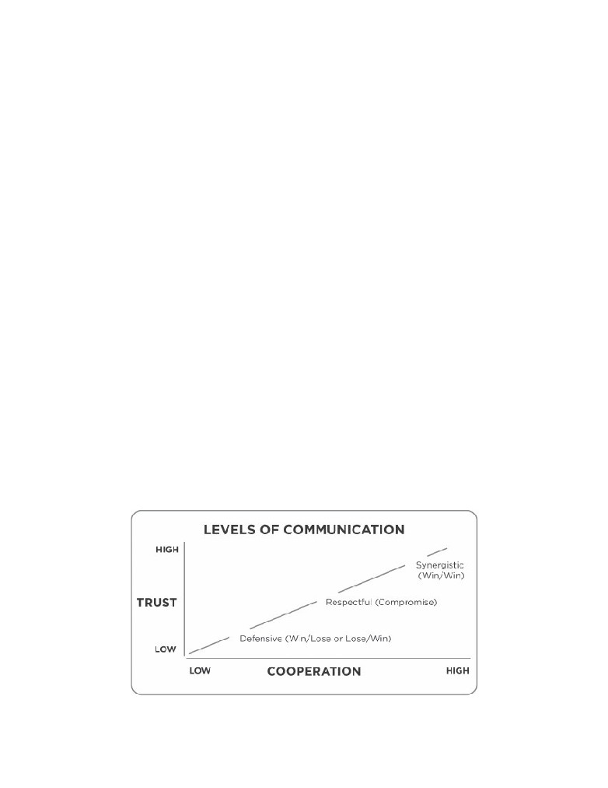
After World War II, the United States commissioned David Lilienthal to head the
new Atomic Energy Commission. Lilienthal brought together a group of people
who were highly influential—celebrities in their own right—disciples, as it were,
of their own frames of reference.
This very diverse group of individuals had an extremely heavy agenda, and
they were impatient to get at it. In addition, the press was pushing them.
But Lilienthal took several weeks to create a high Emotional Bank Account.
He had these people get to know each other—their interests, their hopes, their
goals, their concerns, their backgrounds, their frames of reference, their
paradigms. He facilitated the kind of human interaction that creates a great
bonding between people, and he was heavily criticized for taking the time to do
it because it wasn’t “efficient.”
But the net result was that this group became closely knit together, very open
with each other, very creative, and synergistic. The respect among the members
of the commission was so high that if there was disagreement, instead of
opposition and defense, there was a genuine effort to understand. The attitude
was “If a person of your intelligence and competence and commitment disagrees
with me, then there must be something to your disagreement that I don’t
understand, and I need to understand it. You have a perspective, a frame of
reference I need to look at.” Nonprotective interaction developed, and an
unusual culture was born.
***
The following diagram illustrates how closely trust is related to different levels
of communication.
The lowest level of communication coming out of low-trust situations would
be characterized by defensiveness, protectiveness, and often legalistic language,
which covers all the bases and spells out qualifiers and the escape clauses in the
event things go sour. Such communication produces only Win/Lose or
Lose/Lose. It isn’t effective—there’s no P/PC balance—and it creates further
reasons to defend and protect.
The middle position is respectful communication. This is the level where
fairly mature people interact. They have respect for each other, but they want to
avoid the possibility of ugly confrontations, so they communicate politely but
not empathically. They might understand each other intellectually, but they really
don’t deeply look at the paradigms and assumptions underlying their own
positions and become open to new possibilities.
Respectful communication works in independent situations and even in
interdependent situations, but the creative possibilities are not opened up. In
interdependent situations compromise is the position usually taken. Compromise
means that 1 + 1 = 1½. Both give and take. The communication isn’t defensive
or protective or angry or manipulative; it is honest and genuine and respectful.
But it isn’t creative or synergistic. It produces a low form of Win/Win.
Synergy means that 1 + 1 may equal 8, 16, or even 1,600. The synergistic
position of high trust produces solutions better than any originally proposed, and
all parties know it. Furthermore, they genuinely enjoy the creative enterprise. A
miniculture is formed to satisfy in and of itself. Even if it is short lived, the P/PC
balance is there.
There are some circumstances in which synergy may not be achievable and
No Deal isn’t viable. But even in these circumstances, the spirit of sincere trying
will usually result in a more effective compromise.
FISHING FOR THE THIRD ALTERNATIVE
To get a better idea of how our level of communication affects our
interdependent effectiveness, envision the following scenario:
It’s vacation time, and a husband wants to take his family out to the lake
country to enjoy camping and fishing. This is important to him; he’s been
planning it all year. He’s made reservations at a cottage on the lake and arranged
to rent a boat, and his sons are really excited about going.
His wife, however, wants to use the vacation time to visit her ailing mother
some 250 miles away. She doesn’t have the opportunity to see her very often,
and this is important to her.
Their differences could be the cause of a major negative experience.
“The plans are set. The boys are excited. We should go on the fishing trip,” he
says.
“But we don’t know how much longer my mother will be around, and I want
to be by her,” she replies. “This is our only opportunity to have enough time to
do that.”
“All year long we’ve looked forward to this one-week vacation. The boys
would be miserable sitting around grandmother’s house for a week. They’d drive
everybody crazy. Besides, your mother’s not that sick. And she has your sister
less than a mile away to take care of her.”
“She’s my mother, too. I want to be with her.”
“You could phone her every night. And we’re planning to spend time with her
at the Christmas family reunion. Remember?”
“That’s not for five more months. We don’t even know if she’ll still be here by
then. Besides, she needs me, and she wants me.”
“She’s being well taken care of. Besides, the boys and I need you, too.”
“My mother is more important than fishing.”
“Your husband and sons are more important than your mother.”
As they disagree, back and forth, they finally may come up with some kind of
compromise. They may decide to split up—he takes the boys fishing at the lake
while she visits her mother. And they both feel guilty and unhappy. The boys
sense it, and it affects their enjoyment of the vacation.
The husband may give in to his wife, but he does it grudgingly. And
consciously or unconsciously, he produces evidence to fulfill his prophecy of
how miserable the week will be for everyone.
The wife may give in to her husband, but she’s withdrawn and overreactive to
any new developments in her mother’s health situation. If her mother were to
become seriously ill and die, the husband could never forgive himself, and she
couldn’t forgive him either.
Whatever compromise they finally agree on, it could be rehearsed over the
years as evidence of insensitivity, neglect, or a bad priority decision on either
part. It could be a source of contention for years and could even polarize the
family. Many marriages that once were beautiful and soft and spontaneous and
loving have deteriorated to the level of a hostility through a series of incidents
just like this.
The husband and wife see the situation differently. And that difference can
polarize them, separate them, create wedges in the relationship. Or it can bring
them closer together on a higher level. If they have cultivated the habits of
effective interdependence, they approach their differences from an entirely
different paradigm. Their communication is on a higher level.
Because they have a high Emotional Bank Account, they have trust and open
communication in their marriage. Because they think Win/Win, they believe in a
third alternative, a solution that is mutually beneficial and is better than what
either of them originally proposed. Because they listen empathically and seek
first to understand, they create within themselves and between them a
comprehensive picture of the values and the concerns that need to be taken into
account in making a decision.
And the combination of those ingredients—the high Emotional Bank Account,
thinking Win/Win, and seeking first to understand—creates the ideal
environment for synergy.
Buddhism calls this “the middle way.” Middle in this sense does not mean
compromise; it means higher, like the apex of the triangle.
In searching for the “middle” or higher way, this husband and wife realize that
their love, their relationship, is part of their synergy.
As they communicate, the husband really, deeply feels his wife’s desire, her
need to be with her mother. He understands how she wants to relieve her sister,
who has had the primary responsibility for their mother’s care. He understands
that they really don’t know how long she will be with them, and that she
certainly is more important than fishing.
And the wife deeply understands her husband’s desire to have the family
together and to provide a great experience for the boys. She realizes the
investment that has been made in lessons and equipment to prepare for this
fishing vacation, and she feels the importance of creating good memories with
them.
So they pool those desires. And they’re not on opposite sides of the problem.
They’re together on one side, looking at the problem, understanding the needs,
and working to create a third alternative that will meet them.
“Maybe we could arrange another time within the month for you to visit with
your mother,” he suggests. “I could take over the home responsibilities for the
weekend and arrange for some help at the first of the week so that you could go.
I know it’s important to you to have that time.
“Or maybe we could locate a place to camp and fish that would be close to
your mother. The area wouldn’t be as nice, but we could still be outdoors and
meet other needs as well. And the boys wouldn’t be climbing the walls. We
could even plan some recreational activities with the cousins, aunts, and uncles,
which would be an added benefit.”
They synergize. They communicate back and forth until they come up with a
solution they both feel good about. It’s better than the solutions either of them
originally proposed. It’s better than compromise. It’s a synergistic solution that
builds P and PC.
Instead of a transaction, it’s a transformation. They get what they both really
want and build their relationship in the process.
NEGATIVE SYNERGY
Seeking the third alternative is a major paradigm shift from the dichotomous,
either/or mentality. But look at the difference in results!
How much negative energy is typically expended when people try to solve
problems or make decisions in an interdependent reality? How much time is
spent in confessing other people’s sins, politicking, rivalry, interpersonal
conflict, protecting one’s backside, masterminding, and second guessing? It’s
like trying to drive down the road with one foot on the gas and the other foot on
the brake!
And instead of getting a foot off the brake, most people give it more gas. They
try to apply more pressure, more eloquence, more logical information to
strengthen their position.
The problem is that highly dependent people are trying to succeed in an
interdependent reality. They’re either dependent on borrowing strength from
position power and they go for Win/Lose, or they’re dependent on being popular
with others and they go for Lose/Win. They may talk Win/Win technique, but
they don’t really want to listen; they want to manipulate. And synergy can’t
thrive in that environment.
Insecure people think that all reality should be amenable to their paradigms.
They have a high need to clone others, to mold them over into their own
thinking. They don’t realize that the very strength of the relationship is in having
another point of view. Sameness is not oneness; uniformity is not unity. Unity, or
oneness, is complementariness, not sameness. Sameness is uncreative… and
boring. The essence of synergy is to value the differences.
I’ve come to believe that the key to interpersonal synergy is intrapersonal
synergy, that is synergy within ourselves. The heart of intrapersonal synergy is
embodied in the principles in the first three habits, which give the internal
security sufficient to handle the risks of being open and vulnerable. By
internalizing those principles, we develop the abundance mentality of Win/Win
and the authenticity of Habit 5.
One of the very practical results of being principle-centered is that it makes us
whole—truly integrated. People who are scripted deeply in logical, verbal, left-
brain thinking will discover how totally inadequate that thinking is in solving
problems which require a great deal of creativity. They become aware and begin
to open up a new script inside their right brain. It’s not that the right brain wasn’t
there; it just lay dormant. The muscles had not been developed, or perhaps they
had atrophied after early childhood because of the heavy left-brain emphasis of
formal education or social scripting.
When a person has access to both the intuitive, creative, and visual right brain,
and the analytical, logical, verbal left brain, then the whole brain is working. In
other words, there is psychic synergy taking place in our own head. And this tool
is best suited to the reality of what life is, because life is not just logical—it is
also emotional.
***
One day I was presenting a seminar which I titled, “Manage from the Left, Lead
from the Right” to a company in Orlando, Florida. During the break, the
president of the company came up to me and said, “Stephen, this is intriguing.
But I have been thinking about this material more in terms of its application to
my marriage than to my business. My wife and I have a real communication
problem. I wonder if you would have lunch with the two of us and just kind of
watch how we talk to each other?”
“Let’s do it,” I replied.
As we sat down together, we exchanged a few pleasantries. Then this man
turned to his wife and said, “Now, honey, I’ve invited Stephen to have lunch
with us to see if he could help us in our communication with each other. I know
you feel I should be a more sensitive, considerate husband. Could you give me
something specific you think I ought to do?” His dominant left brain wanted
facts, figures, specifics, parts.
“Well, as I’ve told you before, it’s nothing specific. It’s more of a general
sense I have about priorities.” Her dominant right brain was dealing with sensing
and with the gestalt, the whole, the relationship between the parts.
“What do you mean, ‘a general feeling about priorities’? What is it you want
me to do? Give me something specific I can get a handle on.”
“Well, it’s just a feeling.” Her right brain was dealing in images, intuitive
feelings. “I just don’t think our marriage is as important to you as you tell me it
is.”
“Well, what can I do to make it more important? Give me something concrete
and specific to go on.”
“It’s hard to put into words.”
At that point, he just rolled his eyes and looked at me as if to say, “Stephen,
could you endure this kind of dumbness in your marriage?”
“It’s just a feeling,” she said, “a very strong feeling.”
“Honey,” he said to her, “that’s your problem. And that’s the problem with
your mother. In fact, it’s the problem with every woman I know.”
Then he began to interrogate her as though it were some kind of legal
deposition.
“Do you live where you want to live?”
“That’s not it,” she sighed. “That’s not it at all.”
“I know,” he replied with a forced patience. “But since you won’t tell me
exactly what it is, I figure the best way to find out what it is is to find out what it
is not. Do you live where you want to live?”
“I guess.”
“Honey, Stephen’s here for just a few minutes to try to help us. Just give a
quick ‘yes’ or ‘no’ answer. Do you live where you want to live?”
“Yes.”
“Okay. That’s settled. Do you have the things you want to have?”
“Yes.”
“All right. Do you do the things you want to do?”
This went on for a little while, and I could see I wasn’t helping at all. So I
intervened and said, “Is this kind of how it goes in your relationship?”
“Every day, Stephen,” he replied.
“It’s the story of our marriage,” she sighed.
I looked at the two of them and the thought crossed my mind that they were
two half-brained people living together. “Do you have any children?” I asked.
“Yes, two.”
“Really?” I asked incredulously. “How did you do it?”
“What do you mean how did we do it?”
“You were synergistic!” I said. “One plus one usually equals two. But you
made one plus one equal four. Now that’s synergy. The whole is greater than the
sum of the parts. So how did you do it?”
“You know how we did it,” he replied.
“You must have valued the differences!” I exclaimed.
VALUING THE DIFFERENCES
Valuing the differences is the essence of synergy—the mental, the emotional,
the psychological differences between people. And the key to valuing those
differences is to realize that all people see the world, not as it is, but as they are.
If I think I see the world as it is, why would I want to value the differences?
Why would I even want to bother with someone who’s “off track”? My
paradigm is that I am objective; I see the world as it is. Everyone else is buried
by the minutiae, but I see the larger picture. That’s why they call me a supervisor
—I have super vision.
If that’s my paradigm, then I will never be effectively interdependent, or even
effectively independent, for that matter. I will be limited by the paradigms of my
own conditioning.
The person who is truly effective has the humility and reverence to recognize
his own perceptual limitations and to appreciate the rich resources available
through interaction with the hearts and minds of other human beings. That
person values the differences because those differences add to his knowledge, to
his understanding of reality. When we’re left to our own experiences, we
constantly suffer from a shortage of data.
Is it logical that two people can disagree and that both can be right? It’s not
logical: it’s psychological. And it’s very real. You see the young lady; I see the
old woman. We’re both looking at the same picture, and both of us are right. We
see the same black lines, the same white spaces. But we interpret them
differently because we’ve been conditioned to interpret them differently.
And unless we value the differences in our perceptions, unless we value each
other and give credence to the possibility that we’re both right, that life is not
always a dichotomous either/or, that there are almost always third alternatives,
we will never be able to transcend the limits of that conditioning.
All I may see is the old woman. But I realize that you see something else. And
I value you. I value your perception. I want to understand.
So when I become aware of the difference in our perceptions, I say, “Good!
You see it differently! Help me see what you see.”
If two people have the same opinion, one is unnecessary. It’s not going to do
me any good at all to communicate with someone else who sees only the old
woman also. I don’t want to talk, to communicate, with someone who agrees
with me; I want to communicate with you because you see it differently. I value
that difference.
By doing that, I not only increase my own awareness; I also affirm you. I give
you psychological air. I take my foot off the brake and release the negative
energy you may have invested in defending a particular position. I create an
environment for synergy.
The importance of valuing the difference is captured in an often quoted fable
called “The Animal School,” written by educator Dr. R. H. Reeves:
Once upon a time, the animals decided they must do something heroic to meet the problems of a
“New World,” so they organized a school. They adopted an activity curriculum consisting of running,
climbing, swimming and flying. To make it easier to administer, all animals took all the subjects.
The duck was excellent in swimming, better in fact than his instructor, and made excellent grades
in flying, but he was very poor in running. Since he was low in running he had to stay after school
and also drop swimming to practice running. This was kept up until his web feet were badly worn
and he was only average in swimming. But average was acceptable in school, so nobody worried
about that except the duck.
The rabbit started at the top of the class in running, but had a nervous breakdown because of so
much makeup in swimming.
The squirrel was excellent in climbing until he developed frustrations in the flying class where his
teacher made him start from the ground up instead of from the tree-top down. He also developed
charley horses from over-exertion and he got a C in climbing and a D in running.
The eagle was a problem child and had to be disciplined severely. In climbing class he beat all the
others to the top of the tree, but insisted on using his own way of getting there.
At the end of the year, an abnormal eel that could swim exceedingly well and also could run,
climb and fly a little had the highest average and was valedictorian.
The prairie dogs stayed out of school and fought the tax levy because the administration would
not add digging and burrowing to the curriculum. They apprenticed their children to the badger and
later joined the groundhogs and gophers to start a successful private school.
FORCE FIELD ANALYSIS
In an interdependent situation, synergy is particularly powerful in dealing with
negative forces that work against growth and change.
Sociologist Kurt Lewin developed a “Force Field Analysis” model in which
he described any current level of performance or being as a state of equilibrium
between the driving forces that encourage upward movement and the restraining
forces that discourage it.
Driving forces generally are positive, reasonable, logical, conscious, and
economic. In juxtaposition, restraining forces are often negative, emotional,
illogical, unconscious, and social/psychological. Both sets of forces are very real
and must be taken into account in dealing with change.
In a family, for example, you have a certain “climate” in the home—a certain
level of positive or negative interaction, of feeling safe or unsafe in expressing
feelings or talking about concerns, of respect or disrespect in communication
among family members.
You may really want to change that level. You may want to create a climate
that is more positive, more respectful, more open and trusting. Your logical
reasons for doing that are the driving forces that act to raise the level.
But increasing those driving forces is not enough. Your efforts are opposed by
restraining forces—by the competitive spirit between children in the family, by
the different scripting of home life you and your spouse have brought to the
relationship, by habits that have developed in the family, by work or other
demands on your time and energies.
Increasing the driving forces may bring results—for a while. But as long as
the restraining forces are there, it becomes increasingly harder. It’s like pushing
against a spring: the harder you push, the harder it is to push until the force of
the spring suddenly thrusts the level back down.
The resulting up and down, yo-yo effect causes you to feel, after several
attempts, that people are “just the way they are” and that “it’s too difficult to
change.”
But when you introduce synergy, you use the motive of Habit 4, the skill of
Habit 5, and the interaction of Habit 6 to work directly on the restraining forces.
You create an atmosphere in which it is safe to talk about these forces. You
unfreeze them, loosen them up, and create new insights that actually transform
those restraining forces into driving ones. You involve people in the problem,
immerse them in it, so that they soak it in and feel it is their problem and they
tend to become an important part of the solution.
As a result, new goals, shared goals, are created, and the whole enterprise
moves upward, often in ways that no one could have anticipated. And the
excitement contained within that movement creates a new culture. The people
involved in it are enmeshed in each other’s humanity and empowered by new,
fresh thinking, by new creative alternatives and opportunities.
I’ve been involved several times in negotiations between people who were
angry at each other and hired lawyers to defend their positions. And all that did
was to exacerbate the problem because the interpersonal communication
deteriorated as it went through the legal process. But the trust level was so low
that the parties felt they had no other alternative than to take the issues to court.
“Would you be interested in going for a Win/Win solution that both parties
feel really good about?” I would ask.
The response was usually affirmative, but most people didn’t really think it
was possible.
“If I can get the other party to agree, would you be willing to start the process
of really communicating with each other?”
Again, the answer was usually “yes.”
The results in almost every case have been astounding. Problems that had
been legally and psychologically wrangled about for months have been settled in
a matter of a few hours or days. Most of the solutions weren’t the courthouse
compromise solutions, either; they were synergistic, better than the solutions
proposed independently by either party. And, in most cases, the relationships
continued even though it had appeared in the beginning that the trust level was
so low and the rupture in the relationship so large as to be almost irreparable.
***
At one of our development programs, an executive reported a situation where a
manufacturer was being sued by a longtime industrial customer for lack of
performance. Both parties felt totally justified by the rightness of their position
and each perceived the other as unethical and completely untrustworthy.
As they began to practice Habit 5, two things became clear. First, early
communication problems resulted in a misunderstanding which was later
exacerbated by accusations and counteraccusations. Second, both were initially
acting in good faith and didn’t like the cost and hassle of a legal fight, but saw
no other way out.
Once these two things became clear, the spirit of Habits 4, 5, and 6 took over,
the problem was rapidly resolved, and the relationship continues to prosper.
***
In another circumstance, I received an early morning phone call from a land
developer desperately searching for help. The bank wanted to foreclose because
he was not complying with the principal and interest payment schedule, and he
was suing the bank to avoid the foreclosure. He needed additional funding to
finish and market the land so that he could repay the bank, but the bank refused
to provide additional funds until scheduled payments were met. It was a chicken
and egg problem with undercapitalization.
In the meantime, the project was languishing. The streets were beginning to
look like weed fields, and the owners of the few homes that had been built were
up in arms as they saw their property values drop. The city was also upset over
the “prime land” project falling behind schedule and becoming an eyesore. Tens
of thousands of dollars in legal costs had already been spent by the bank and the
developer and the case wasn’t scheduled to come to court for several months.
In desperation, this developer reluctantly agreed to try the principles of Habits
4, 5, and 6. He arranged a meeting with even more reluctant bank officials.
The meeting started at 8 A.M. in one of the bank conference rooms. The
tension and mistrust were palpable. The attorney for the bank had committed the
bank officials to say nothing. They were only to listen and he alone would speak.
He wanted nothing to happen that would compromise the bank’s position in
court.
For the first hour and a half, I taught Habits 4, 5, and 6. At 9:30 I went to the
blackboard and wrote down the bank’s concerns based on our prior
understanding. Initially the bank officials said nothing, but the more we
communicated Win/Win intentions and sought first to understand, the more they
opened up to explain and clarify.
As they began to feel understood, the whole atmosphere changed and a sense
of momentum, of excitement over the prospect of peacefully settling the problem
was clearly evident. Over the attorney’s objections the bank officials opened up
even more, even about personal concerns. “When we walk out of here the first
thing the bank president will say is, ‘Did we get our money?’ What are we going
to say?”
By 11:00, the bank officers were still convinced of their rightness, but they
felt understood and were no longer defensive and officious. At that point, they
were sufficiently open to listen to the developer’s concerns, which we wrote
down on the other side of the blackboard. This resulted in deeper mutual
understanding and a collective awareness of how poor early communication had
resulted in misunderstanding and unrealistic expectations, and how continuous
communication in a Win/Win spirit could have prevented the subsequent major
problems from developing.
The shared sense of both chronic and acute pain combined with a sense of
genuine progress kept everyone communicating. By noon, when the meeting was
scheduled to end, the people were positive, creative, and synergistic and wanted
to keep talking.
The very first recommendation made by the developer was seen as a
beginning Win/Win approach by all. It was synergized on and improved, and at
12:45 P.M. the developer and the two bank officers left with a plan to present
together to the Home Owners Association and the city. Despite subsequent
complicating developments, the legal fight was aborted and the building project
continued to a successful conclusion.
***
I am not suggesting that people should not use legal processes. Some situations
absolutely require it. But I see it as a court of last, not first, resort. If it is used
too early, even in a preventive sense, sometimes fear and the legal paradigm
create subsequent thought and action processes that are not synergistic.
ALL NATURE IS SYNERGISTIC
Ecology is a word which basically describes the synergism in nature—
everything is related to everything else. It’s in the relationship that creative
powers are maximized, just as the real power in these Seven Habits is in their
relationship to each other, not just in the individual habits themselves.
The relationship of the parts is also the power in creating a synergistic culture
inside a family or an organization. The more genuine the involvement, the more
sincere and sustained the participation in analyzing and solving problems, the
greater the release of everyone’s creativity, and of their commitment to what they
create. This, I’m convinced, is the essence of the power in the Japanese approach
to business, which has changed the world marketplace.
Synergy works; it’s a correct principle. It is the crowning achievement of all
the previous habits. It is effectiveness in an interdependent reality—it is
teamwork, team building, the development of unity and creativity with other
human beings.
Although you cannot control the paradigms of others in an interdependent
interaction or the synergistic process itself, a great deal of synergy is within your
Circle of Influence.
Your own internal synergy is completely within the circle. You can respect
both sides of your own nature—the analytical side and the creative side. You can
value the difference between them and use that difference to catalyze creativity.
You can be synergistic within yourself even in the midst of a very adversarial
environment. You don’t have to take insults personally. You can sidestep
negative energy; you can look for the good in others and utilize that good, as
different as it may be, to improve your point of view and to enlarge your
perspective.
You can exercise the courage in interdependent situations to be open, to
express your ideas, your feelings, and your experiences in a way that will
encourage other people to be open also.
You can value the difference in other people. When someone disagrees with
you, you can say, “Good! You see it differently.” You don’t have to agree with
them; you can simply affirm them. And you can seek to understand.
When you see only two alternatives—yours and the “wrong” one—you can
look for a synergistic third alternative. There’s almost always a third alternative,
and if you work with a Win/Win philosophy and really seek to understand, you
usually can find a solution that will be better for everyone concerned.
APPLICATION SUGGESTIONS:
1. Think about a person who typically sees things differently than you do.
Consider ways in which those differences might be used as stepping-stones
to third alternative solutions. Perhaps you could seek out his or her views
on a current project or problem, valuing the different views you are likely to
hear.
2. Make a list of people who irritate you. Do they represent different views
that could lead to synergy if you had greater intrinsic security and valued
the difference?
3. Identify a situation in which you desire greater teamwork and synergy.
What conditions would need to exist to support synergy? What can you do
to create those conditions?
4. The next time you have a disagreement or confrontation with someone,
attempt to understand the concerns underlying that person’s position.
Address those concerns in a creative and mutually beneficial way.7
HABIT 7:
SHARPEN THE SAW
PRINCIPLES OF BALANCED SELF-
RENEWAL
Sometimes when I consider what tremendous consequences come from little
things… I am tempted to think… there are no little things.
BRUCE BARTON
Suppose you were to come upon someone in the woods working feverishly to
saw down a tree.
“What are you doing?” you ask.
“Can’t you see?” comes the impatient reply. “I’m sawing down this tree.”
“You look exhausted!” you exclaim. “How long have you been at it?”
“Over five hours,” he returns, “and I’m beat! This is hard work.”
“Well, why don’t you take a break for a few minutes and sharpen that saw?”
you inquire. “I’m sure it would go a lot faster.”
“I don’t have time to sharpen the saw,” the man says emphatically. “I’m too
busy sawing!”
***
Habit 7 is taking time to sharpen the saw. It surrounds the other habits on the
Seven Habits paradigm because it is the habit that makes all the others possible.
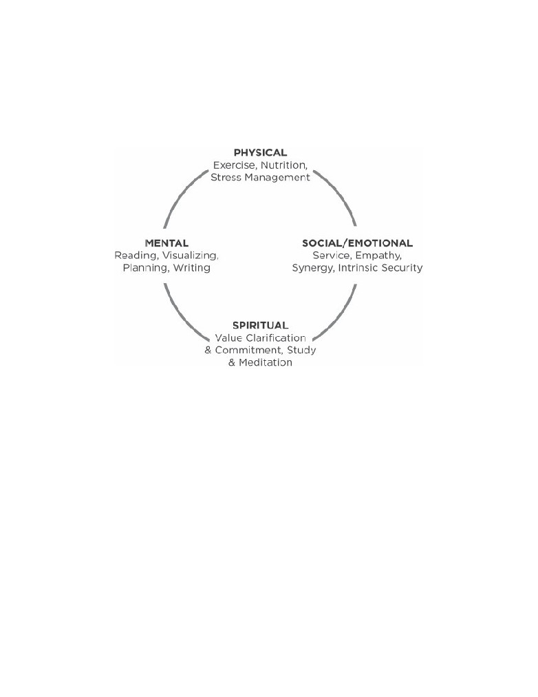
FOUR DIMENSIONS OF RENEWAL
Habit 7 is personal PC. It’s preserving and enhancing the greatest asset you
have—you. It’s renewing the four dimensions of your nature—physical,
spiritual, mental, and social/emotional.
Although different words are used, most philosophies of life deal either
explicitly or implicitly with these four dimensions. Philosopher Herb Shepherd
describes the healthy balanced life around four values: perspective (spiritual),
autonomy
(mental), connectedness
(social), and tone
(physical). George
Sheehan, the running guru, describes four roles: being a good animal (physical),
a good craftsman (mental), a good friend (social), and a saint (spiritual). Sound
motivation and organization theory embrace these four dimensions or
motivations—the economic (physical); how people are treated (social); how
people are developed and used
(mental); and the service, the job, the
contribution the organization gives (spiritual).
“Sharpen the saw” basically means expressing all four motivations. It means
exercising all four dimensions of our nature, regularly and consistently in wise
and balanced ways.
To do this, we must be proactive. Taking time to sharpen the saw is a definite
Quadrant II activity, and Quadrant II must be acted on. Quadrant I, because of its
urgency, acts on us; it presses upon us constantly. Personal P/C must be pressed
upon until it becomes second nature, until it becomes a kind of healthy
addiction. Because it’s at the center of our Circle of Influence, no one else can
do it for us. We must do it for ourselves.
This is the single most powerful investment we can ever make in life—
investment in ourselves, in the only instrument we have with which to deal with
life and to contribute. We are the instruments of our own performance, and to be
effective, we need to recognize the importance of taking time regularly to
sharpen the saw in all four ways.
The Physical Dimension
The physical dimension involves caring effectively for our physical body—
eating the right kinds of foods, getting sufficient rest and relaxation, and
exercising on a regular basis.
Exercise is one of those Quadrant II, high-leverage activities that most of us
don’t do consistently because it isn’t urgent. And because we don’t do it, sooner
or later we find ourselves in Quadrant I, dealing with the health problems and
crises that come as a natural result of our neglect.
Most of us think we don’t have enough time to exercise. What a distorted
paradigm! We don’t have time not to. We’re talking about three to six hours a
week—or a minimum of thirty minutes a day, every other day. That hardly seems
an inordinate amount of time considering the tremendous benefits in terms of the
impact on the other 162-165 hours of the week.
And you don’t need any special equipment to do it. If you want to go to a gym
or a spa to use the equipment or enjoy some skill sports such as tennis or
racquetball, that’s an added opportunity. But it isn’t necessary to sharpen the
saw.
A good exercise program is one that you can do in your own home and one
that will build your body in three areas: endurance, flexibility, and strength.
Endurance comes from aerobic exercise, from cardiovascular efficiency—the
ability of your heart to pump blood through your body.
Although the heart is a muscle, it cannot be exercised directly. It can only be
exercised through the large muscle groups, particularly the leg muscles. That’s
why exercises like rapid walking, running, biking, swimming, cross-country
skiing, and jogging are so beneficial.
You are considered minimally fit if you can increase your heart rate to at least
one hundred beats per minute and keep it at that level for thirty minutes.
Ideally you should try to raise your heart rate to at least sixty percent of your
maximum pulse rate, the top speed your heart can beat and still pump blood
through your body. Your maximum heart rate is generally accepted to be 220 less
your age. So, if you are 40, you should aim for an exercise heart rate of 108 (220
- 40 = 180 × 0.6 = 108). The “training effect” is generally considered to be
between 72 and 87 percent of your personal maximum rate.
Flexibility comes through stretching. Most experts recommend warming up
before and cooling down/stretching after aerobic exercise. Before, it helps loosen
and warm the muscles to prepare for more vigorous exercise. After, it helps to
dissipate the lactic acid so that you don’t feel sore and stiff.
Strength comes from muscle resistance exercises—like simple calisthenics,
push-ups, pull-ups, and sit-ups, and from working with weights. How much
emphasis you put on developing strength depends on your situation. If you’re
involved in physical labor or athletic activities, increased strength will improve
your skill. If you have a basically sedentary job and success in your life-style
does not require a lot of strength, a little toning through calisthenics in addition
to your aerobic and stretching exercises might be sufficient.
I was in a gym one time with a friend of mine who has a Ph.D. in exercise
physiology. He was focusing on building strength. He asked me to “spot” him
while he did some bench presses and told me at a certain point he’d ask me to
take the weight. “But don’t take it until I tell you,” he said firmly.
So I watched and waited and prepared to take the weight. The weight went up
and down, up and down. And I could see it begin to get harder. But he kept
going. He would start to push it up and I’d think, “There’s no way he’s going to
make it.” But he’d make it. Then he’d slowly bring it back down and start back
up again. Up and down, up and down.
Finally, as I looked at his face, straining with the effort, his blood vessels
practically jumping out of his skin, I thought, “This is going to fall and collapse
his chest. Maybe I should take the weight. Maybe he’s lost control and he
doesn’t even know what he’s doing.” But he’d get it safely down. Then he’d start
back up again. I couldn’t believe it.
When he finally told me to take the weight, I said, “Why did you wait so
long?”
“Almost all the benefit of the exercise comes at the very end, Stephen,” he
replied. “I’m trying to build strength. And that doesn’t happen until the muscle
fiber ruptures and the nerve fiber registers the pain. Then nature
overcompensates and within 48 hours, the fiber is made stronger.”
I could see his point. It’s the same principle that works with emotional
muscles as well, such as patience. When you exercise your patience beyond your
past limits, the emotional fiber is broken, nature overcompensates, and next time
the fiber is stronger.
***
Now my friend wanted to build muscular strength. And he knew how to do it.
But not all of us need to develop that kind of strength to be effective. “No pain,
no gain” has validity in some circumstances, but it is not the essence of an
effective exercise program.
The essence of renewing the physical dimension is to sharpen the saw, to
exercise our bodies on a regular basis in a way that will preserve and enhance
our capacity to work and adapt and enjoy.
And we need to be wise in developing an exercise program. There’s a
tendency, especially if you haven’t been exercising at all, to overdo. And that
can create unnecessary pain, injury, and even permanent damage. It’s best to start
slowly. Any exercise program should be in harmony with the latest research
findings, with your doctor’s recommendations and with your own self-
awareness.
If you haven’t been exercising, your body will undoubtedly protest this
change in its comfortable downhill direction. You won’t like it at first. You may
even hate it. But be proactive. Do it anyway. Even if it’s raining on the morning
you’ve scheduled to jog, do it anyway. “Oh good! It’s raining! I get to develop
my willpower as well as my body!”
You’re not dealing with quick fix; you’re dealing with a Quadrant II activity
that will bring phenomenal long-term results. Ask anyone who has done it
consistently. Little by little, your resting pulse rate will go down as your heart
and oxygen processing system becomes more efficient. As you increase your
body’s ability to do more demanding things, you’ll find your normal activities
much more comfortable and pleasant. You’ll have more afternoon energy, and
the fatigue you’ve felt that’s made you “too tired” to exercise in the past will be
replaced by an energy that will invigorate everything you do.
Probably the greatest benefit you will experience from exercising will be the
development of your Habit 1 muscles of proactivity. As you act based on the
value of physical well-being instead of reacting to all the forces that keep you
from exercising, your paradigm of yourself, your self-esteem, your self-
confidence, and your integrity will be profoundly affected.
The Spiritual Dimension
Renewing the spiritual dimension provides leadership to your life. It’s highly
related to Habit 2.
The spiritual dimension is your core, your center, your commitment to your
value system. It’s a very private area of life and a supremely important one. It
draws upon the sources that inspire and uplift you and tie you to the timeless
truths of all humanity. And people do it very, very differently.
I find renewal in daily prayerful meditation on the scriptures because they
represent my value system. As I read and meditate, I feel renewed, strengthened,
centered and recommitted to serve.
Immersion in great literature or great music can provide a similar renewal of
the spirit for some. There are others who find it in the way they communicate
with nature. Nature bequeaths its own blessing on those who immerse
themselves in it. When you’re able to leave the noise and the discord of the city
and give yourself up to the harmony and rhythm of nature, you come back
renewed. For a time, you’re undisturbable, almost unflappable, until gradually
the noise and the discord from outside start to invade that sense of inner peace.
***
Arthur Gordon shares a wonderful, intimate story of his own spiritual renewal in
a little story called “The Turn of the Tide.” It tells of a time in his life when he
began to feel that everything was stale and flat. His enthusiasm waned; his
writing efforts were fruitless. And the situation was growing worse day by day.
Finally, he determined to get help from a medical doctor. Observing nothing
physically wrong, the doctor asked him if he would be able to follow his
instructions for one day.
When Gordon replied that he could, the doctor told him to spend the following
day in the place where he was happiest as a child. He could take food, but he
was not to talk to anyone or to read or write or listen to the radio. He then wrote
out four prescriptions and told him to open one at nine, twelve, three, and six
o’clock.
“Are you serious?” Gordon asked him.
“You won’t think I’m joking when you get my bill!” was the reply.
So the next morning, Gordon went to the beach. As he opened the first
prescription, he read “Listen carefully.” He thought the doctor was insane. How
could he listen for three hours? But he had agreed to follow the doctor’s orders,
so he listened. He heard the usual sounds of the sea and the birds. After a while,
he could hear the other sounds that weren’t so apparent at first. As he listened, he
began to think of lessons the sea had taught him as a child—patience, respect, an
awareness of the interdependence of things. He began to listen to the sounds—
and the silence—and to feel a growing peace.
At noon, he opened the second slip of paper and read “Try reaching back.”
“Reaching back to what?” he wondered. Perhaps to childhood, perhaps to
memories of happy times. He thought about his past, about the many little
moments of joy. He tried to remember them with exactness. And in
remembering, he found a growing warmth inside.
At three o’clock, he opened the third piece of paper. Until now, the
prescriptions had been easy to take. But this one was different; it said “Examine
your motives.” At first he was defensive. He thought about what he wanted—
success, recognition, security—and he justified them all. But then the thought
occurred to him that those motives weren’t good enough, and that perhaps
therein was the answer to his stagnant situation.
He considered his motives deeply. He thought about past happiness. And at
last, the answer came to him.
“In a flash of certainty,” he wrote, “I saw that if one’s motives are wrong,
nothing can be right. It makes no difference whether you are a mailman, a
hairdresser, an insurance salesman, a housewife—whatever. As long as you feel
you are serving others, you do the job well. When you are concerned only with
helping yourself, you do it less well—a law as inexorable as gravity.”
When six o’clock came, the final prescription didn’t take long to fill. “Write
your worries on the sand,” it said. He knelt and wrote several words with a piece
of broken shell; then he turned and walked away. He didn’t look back; he knew
the tide would come in.
***
Spiritual renewal takes an investment of time. But it’s a Quadrant II activity we
don’t really have time to neglect.
The great reformer Martin Luther is quoted as saying, “I have so much to do
today, I’ll need to spend another hour on my knees.” To him, prayer was not a
mechanical duty but rather a source of power in releasing and multiplying his
energies.
Someone once inquired of a Far Eastern Zen master, who had a great serenity
and peace about him no matter what pressures he faced, “How do you maintain
that serenity and peace?” He replied, “I never leave my place of meditation.” He
meditated early in the morning and for the rest of the day, he carried the peace of
those moments with him in his mind and heart.
The idea is that when we take time to draw on the leadership center of our
lives, what life is ultimately all about, it spreads like an umbrella over everything
else. It renews us, it refreshes us, particularly if we recommit to it.
This is why I believe a personal mission statement is so important. If we have
a deep understanding of our center and our purpose, we can review and
recommit to it frequently. In our daily spiritual renewal, we can visualize and
“live out” the events of the day in harmony with those values.
Religious leader David O. McKay taught, “The greatest battles of life are
fought out daily in the silent chambers of the soul.” If you win the battles there,
if you settle the issues that inwardly conflict, you feel a sense of peace, a sense
of knowing what you’re about. And you’ll find that the public victories—where
you tend to think cooperatively, to promote the welfare and good of other people,
and to be genuinely happy for other people’s successes—will follow naturally.
The Mental Dimension
Most of our mental development and study discipline comes through formal
education. But as soon as we leave the external discipline of school, many of us
let our minds atrophy. We don’t do any more serious reading, we don’t explore
new subjects in any real depth outside our action fields, we don’t think
analytically, we don’t write—at least not critically or in a way that tests our
ability to express ourselves in distilled, clear, and concise language. Instead, we
spend our time watching TV.
Continuing surveys indicate that television is on in most homes some thirty-
five to forty-five hours a week. That’s as much time as many people put into
their jobs, more than most put into school. It’s the most powerful socializing
influence there is. And when we watch, we’re subject to all the values that are
being taught through it. That can powerfully influence us in very subtle and
imperceptible ways.
Wisdom in watching television requires the effective self-management of
Habit 3, which enables you to discriminate and to select the informing, inspiring,
and entertaining programs which best serve and express your purpose and
values.
In our family, we limit television watching to around seven hours a week, an
average of about an hour a day. We had a family council at which we talked
about it and looked at some of the data regarding what’s happening in homes
because of television. We found that by discussing it as a family when no one
was defensive or argumentative, people started to realize the dependent sickness
of becoming addicted to soap operas or to a steady diet of a particular program.
I’m grateful for television and for the many high quality educational and
entertainment programs. They can enrich our lives and contribute meaningfully
to our purposes and goals. But there are many programs that simply waste our
time and minds and many that influence us in negative ways if we let them. Like
the body, television is a good servant but a poor master. We need to practice
Habit 3 and manage ourselves effectively to maximize the use of any resource in
accomplishing our missions.
Education—continuing education, continually honing and expanding the mind
—is vital mental renewal. Sometimes that involves the external discipline of the
classroom or systematized study programs; more often it does not. Proactive
people can figure out many, many ways to educate themselves.
It is extremely valuable to train the mind to stand apart and examine its own
program. That, to me, is the definition of a liberal education—the ability to
examine the programs of life against larger questions and purposes and other
paradigms. Training, without such education, narrows and closes the mind so
that the assumptions underlying the training are never examined. That’s why it is
so valuable to read broadly and to expose yourself to great minds.
There’s no better way to inform and expand your mind on a regular basis than
to get into the habit of reading good literature. That’s another high leverage
Quadrant II activity. You can get into the best minds that are now or that have
ever been in the world. I highly recommend starting with a goal of a book a
month, then a book every two weeks, then a book a week. “The person who
doesn’t read is no better off than the person who can’t read.”
Quality literature, such as the Great Books, the Harvard Classics,
autobiographies, National Geographic and other publications that expand our
cultural awareness, and current literature in various fields can expand our
paradigms and sharpen our mental saw, particularly if we practice Habit 5 as we
read and seek first to understand. If we use our own autobiography to make early
judgments before we really understand what an author has to say, we limit the
benefits of the reading experience.
Writing is another powerful way to sharpen the mental saw. Keeping a journal
of our thoughts, experiences, insights, and learnings promotes mental clarity,
exactness, and context. Writing good letters—communicating on the deeper
level of thoughts, feelings, and ideas rather than on the shallow, superficial level
of events—also affects our ability to think clearly, to reason accurately, and to be
understood effectively.
Organizing and planning represent other forms of mental renewal associated
with Habits 2 and 3. It’s beginning with the end in mind and being able mentally
to organize to accomplish that end. It’s exercising the visualizing, imagining
power of your mind to see the end from the beginning and to see the entire
journey, at least in principles, if not in steps.
It is said that wars are won in the general’s tent. Sharpening the saw in the
first three dimensions—the physical, the spiritual, and the mental—is a practice I
call the “Daily Private Victory.” And I commend to you the simple practice of
spending one hour a day every day doing it—one hour a day for the rest of your
life.
There’s no other way you could spend an hour that would begin to compare
with the Daily Private Victory in terms of value and results. It will affect every
decision, every relationship. It will greatly improve the quality, the effectiveness,
of every other hour of the day, including the depth and restfulness of your sleep.
It will build the long-term physical, spiritual, and mental strength to enable you
to handle difficult challenges in life.
In the words of Phillips Brooks:
Some day, in the years to come, you will be wrestling with the great temptation, or trembling
under the great sorrow of your life. But the real struggle is here, now… Now it is being decided
whether, in the day of your supreme sorrow or temptation, you shall miserably fail or gloriously
conquer. Character cannot be made except by a steady, long continued process.
The Social/Emotional Dimension
While the physical, spiritual, and mental dimensions are closely related to
Habits 1, 2, and 3—centered on the principles of personal vision, leadership, and
management—the social/emotional dimension focuses on Habits 4, 5, and 6—
centered on the principles of interpersonal leadership, empathic communication,
and creative cooperation.
The social and the emotional dimensions of our lives are tied together because
our emotional life is primarily, but not exclusively, developed out of and
manifested in our relationships with others.
Renewing our social/emotional dimension does not take time in the same
sense that renewing the other dimensions does. We can do it in our normal
everyday interactions with other people. But it definitely requires exercise. We
may have to push ourselves because many of us have not achieved the level of
Private Victory and the skills of Public Victory necessary for Habits 4, 5, and 6
to come naturally to us in all our interactions.
Suppose that you are a key person in my life. You might be my boss, my
subordinate, my coworker, my friend, my neighbor, my spouse, my child, a
member of my extended family—anyone with whom I want or need to interact.
Suppose we need to communicate together, to work together, to discuss a jugular
issue, to accomplish a purpose or solve a problem. But we see things differently;
we’re looking through different glasses. You see the young lady, and I see the
old woman.
So I practice Habit 4. I come to you and I say, “I can see that we’re
approaching this situation differently. Why don’t we agree to communicate until
we can find a solution we both feel good about. Would you be willing to do
that?” Most people would be willing to say “yes” to that.
Then I move to Habit 5. “Let me listen to you first.” Instead of listening with
intent to reply, I listen empathically in order to deeply, thoroughly understand
your paradigm. When I can explain your point of view as well as you can, then I
focus on communicating my point of view to you so that you can understand it
as well.
Based on the commitment to search for a solution that we both feel good
about and a deep understanding of each other’s points of view, we move to Habit
6. We work together to produce third alternative solutions to our differences that
we both recognize are better than the ones either you or I proposed initially.
Success in Habits 4, 5, and 6 is not primarily a matter of intellect; it’s
primarily a matter of emotion. It’s highly related to our sense of personal
security.
If our personal security comes from sources within ourselves, then we have
the strength to practice the habits of Public Victory. If we are emotionally
insecure, even though we may be intellectually very advanced, practicing Habits
4, 5, and 6 with people who think differently on jugular issues of life can be
terribly threatening.
Where does intrinsic security come from? It doesn’t come from what other
people think of us or how they treat us. It doesn’t come from the scripts they’ve
handed us. It doesn’t come from our circumstances or our position.
It comes from within. It comes from accurate paradigms and correct principles
deep in our own mind and heart. It comes from inside-out congruence, from
living a life of integrity in which our daily habits reflect our deepest values.
I believe that a life of integrity is the most fundamental source of personal
worth. I do not agree with the popular success literature that says that self-
esteem is primarily a matter of mind set, of attitude—that you can psych yourself
into peace of mind.
Peace of mind comes when your life is in harmony with true principles and
values and in no other way.
There is also the intrinsic security that comes as a result of effective
interdependent living. There is security in knowing that Win/Win solutions do
exist, that life is not always “either/or,” that there are almost always mutually
beneficial Third Alternatives. There is security in knowing that you can step out
of your own frame of reference without giving it up, that you can really, deeply
understand another human being. There is security that comes when you
authentically, creatively and cooperatively interact with other people and really
experience these interdependent habits.
There is intrinsic security that comes from service, from helping other people
in a meaningful way. One important source is your work, when you see yourself
in a contributive and creative mode, really making a difference. Another source
is anonymous service—no one knows it and no one necessarily ever will. And
that’s not the concern; the concern is blessing the lives of other people.
Influence, not recognition, becomes the motive.
Victor Frankl focused on the need for meaning and purpose in our lives,
something that transcends our own lives and taps the best energies within us.
The late Dr. Hans Selye, in his monumental research on stress, basically says
that a long, healthy, and happy life is the result of making contributions, of
having meaningful projects that are personally exciting and contribute to and
bless the lives of others. His ethic was “earn thy neighbor’s love.”
In the words of George Bernard Shaw,
This is the true joy in life—that being used for a purpose recognized by yourself as a mighty one.
That being a force of nature, instead of a feverish, selfish little clod of ailments and grievances
complaining that the world will not devote itself to making you happy. I am of the opinion that my
life belongs to the whole community and as long as I live it is my privilege to do for it whatever I
can. I want to be thoroughly used up when I die. For the harder I work the more I live. I rejoice in life
for its own sake. Life is no brief candle to me. It’s a sort of splendid torch which I’ve got to hold up
for the moment and I want to make it burn as brightly as possible before handing it on to future
generations.
N. Eldon Tanner has said, “Service is the rent we pay for the privilege of
living on this earth.” And there are so many ways to serve. Whether or not we
belong to a church or service organization or have a job that provides meaningful
service opportunities, not a day goes by that we can’t at least serve one other
human being by making deposits of unconditional love.
SCRIPTING OTHERS
Most people are a function of the social mirror, scripted by the opinions, the
perceptions, the paradigms of the people around them. As interdependent people,
you and I come from a paradigm which includes the realization that we are a part
of that social mirror.
We can choose to reflect back to others a clear, undistorted vision of
themselves. We can affirm their proactive nature and treat them as responsible
people. We can help script them as principle-centered, value-based, independent,
worthwhile individuals. And, with the Abundance Mentality, we realize that
giving a positive reflection to others in no way diminishes us. It increases us
because it increases the opportunities for effective interaction with other
proactive people.
At some time in your life, you probably had someone believe in you when you
didn’t believe in yourself. They scripted you. Did that make a difference in your
life?
What if you were a positive scripter, an affirmer, of other people? When
they’re being directed by the social mirror to take the lower path, you inspire
them toward a higher path because you believe in them. You listen to them and
empathize with them. You don’t absolve them of responsibility; you encourage
them to be proactive.
***
Perhaps you are familiar with the musical Man of La Mancha. It’s a beautiful
story about a medieval knight who meets a woman of the street, a prostitute.
She’s being validated in her life-style by all of the people in her life.
But this poet knight sees something else in her, something beautiful and
lovely. He also sees her virtue, and he affirms it, over and over again. He gives
her a new name—Dulcinea—a new name associated with a new paradigm.
At first, she utterly denies it; her old scripts are overpowering. She writes him
off as a wild-eyed fantasizer. But he is persistent. He makes continual deposits of
unconditional love and gradually it penetrates her scripting. It goes down into
her true nature, her potential, and she starts to respond. Little by little, she begins
to change her life-style. She believes it and she acts from her new paradigm, to
the initial dismay of everyone else in her life.
Later, when she begins to revert to her old paradigm, he calls her to his
deathbed and sings that beautiful song, “The Impossible Dream,” looks her in
the eyes, and whispers, “Never forget, you’re Dulcinea.”
***
One of the classic stories in the field of self-fulfilling prophecies is of a
computer in England that was accidently programmed incorrectly. In academic
terms, it labeled a class of “bright” kids “dumb” kids and a class of supposedly
“dumb” kids “bright.” And that computer report was the primary criterion that
created the teachers’ paradigms about their students at the beginning of the year.
When the administration finally discovered the mistake five and a half months
later, they decided to test the kids again without telling anyone what had
happened. And the results were amazing. The “bright” kids had gone down
significantly in IQ test points. They had been seen and treated as mentally
limited, uncooperative, and difficult to teach. The teachers’ paradigms had
become a self-fulfilling prophecy.
But scores in the supposedly “dumb” group had gone up. The teachers had
treated them as though they were bright, and their energy, their hope, their
optimism, their excitement had reflected high individual expectations and worth
for those kids.
These teachers were asked what it was like during the first few weeks of the
term. “For some reason, our methods weren’t working,” they replied. “So we
had to change our methods.” The information showed that the kids were bright.
If things weren’t working well, they figured it had to be the teaching methods.
So they worked on methods. They were proactive; they worked in their Circle of
Influence. Apparent learner disability was nothing more or less than teacher
inflexibility.
***
What do we reflect to others about themselves? And how much does that
reflection influence their lives? We have so much we can invest in the Emotional
Bank Accounts of other people. The more we can see people in terms of their
unseen potential, the more we can use our imagination rather than our memory,
with our spouse, our children, our coworkers or employees. We can refuse to
label them—we can “see” them in new fresh ways each time we’re with them.
We can help them become independent, fulfilled people capable of deeply
satisfying, enriching, and productive relationships with others.
Goethe taught, “Treat a man as he is and he will remain as he is. Treat a man
as he can and should be and he will become as he can and should be.”
BALANCE IN RENEWAL
The self-renewal process must include balanced renewal in all four
dimensions of our nature: the physical, the spiritual, the mental, and the
social/emotional.
Although renewal in each dimension is important, it only becomes optimally
effective as we deal with all four dimensions in a wise and balanced way. To
neglect any one area negatively impacts the rest.
I have found this to be true in organizations as well as in individual lives. In
an organization, the physical dimension is expressed in economic terms. The
mental or psychological dimension deals with the recognition, development, and
use of talent. The social/emotional dimension has to do with human relations,
with how people are treated. And the spiritual dimension deals with finding
meaning through purpose or contribution and through organizational integrity.
When an organization neglects any one or more of these areas, it negatively
impacts the entire organization. The creative energies that could result in
tremendous, positive synergy are instead used to fight against the organization
and become restraining forces to growth and productivity.
I have found organizations whose only thrust is economic—to make money.
They usually don’t publicize that purpose. They sometimes even publicize
something else. But in their hearts, their only desire is to make money.
Whenever I find this, I also find a great deal of negative synergy in the
culture, generating such things as interdepartmental rivalries, defensive and
protective communication, politicking, and masterminding. We can’t effectively
thrive without making money, but that’s not sufficient reason for organizational
existence. We can’t live without eating, but we don’t live to eat.
At the other end of the spectrum, I’ve seen organizations that focused almost
exclusively on the social/emotional dimension. They are, in a sense, some kind
of social experiment and they have no economic criteria in their value system.
They have no measure or gauge of their effectiveness, and as a result, they lose
all kinds of efficiencies and eventually their viability in the marketplace.
I have found many organizations that develop as many as three of the
dimensions—they may have good service criteria, good economic criteria, and
good human relations criteria, but they are not really committed to identifying,
developing, utilizing, and recognizing the talent of people. And if these
psychological forces are missing, the style will be a benevolent autocracy and
the resulting culture will reflect different forms of collective resistance,
adversarialism, excessive turnover, and other deep, chronic, cultural problems.
Organizational as well as individual effectiveness requires development and
renewal of all four dimensions in a wise and balanced way. Any dimension that
is neglected will create negative force field resistance that pushes against
effectiveness and growth. Organizations and individuals that give recognition to
each of these four dimensions in their mission statement provide a powerful
framework for balanced renewal.
This process of continuous improvement is the hallmark of the Total Quality
Movement and a key to Japan’s economic ascendency.
SYNERGY IN RENEWAL
Balanced renewal is optimally synergetic. The things you do to sharpen the
saw in any one dimension have positive impact in other dimensions because they
are so highly interrelated. Your physical health affects your mental health; your
spiritual strength affects your social/emotional strength. As you improve in one
dimension, you increase your ability in other dimensions as well.
The Seven Habits of Highly Effective People create optimum synergy among
these dimensions. Renewal in any dimension increases your ability to live at
least one of the Seven Habits. And although the habits are sequential,
improvement in one habit synergetically increases your ability to live the rest.
The more proactive you are (Habit 1), the more effectively you can exercise
personal leadership (Habit 2) and management (Habit 3) in your life. The more
effectively you manage your life (Habit 3), the more Quadrant II renewing
activities you can do (Habit 7). The more you seek first to understand (Habit 5),
the more effectively you can go for synergetic Win/Win solutions (Habits 4 and
6). The more you improve in any of the habits that lead to independence (Habits
1, 2, and 3), the more effective you will be in interdependent situations (Habits
4, 5, and 6). And renewal (Habit 7) is the process of renewing all the habits.
As you renew your physical dimension, you reinforce your personal vision
(Habit 1), the paradigm of your own self-awareness and free will, of proactivity,
of knowing that you are free to act instead of being acted upon, to choose your
own response to any stimulus. This is probably the greatest benefit of physical
exercise. Each Daily Private Victory makes a deposit in your personal intrinsic
security account.
As you renew your spiritual dimension, you reinforce your personal
leadership (Habit 2). You increase your ability to live out of your imagination
and conscience instead of only your memory, to deeply understand your
innermost paradigms and values, to create within yourself a center of correct
principles, to define your own unique mission in life, to rescript yourself to live
your life in harmony with correct principles and to draw upon your personal
sources of strength. The rich private life you create in spiritual renewal makes
tremendous deposits in your personal security account.
As you renew your mental dimension, you reinforce your personal
management (Habit 3). As you plan, you force your mind to recognize high
leverage Quadrant II activities, priority goals, and activities to maximize the use
of your time and energy, and you organize and execute your activities around
your priorities. As you become involved in continuing education, you increase
your knowledge base and you increase your options. Your economic security
does not lie in your job; it lies in your own power to produce—to think, to learn,
to create, to adapt. That’s true financial independence. It’s not having wealth; it’s
having the power to produce wealth. It’s intrinsic.
The Daily Private Victory—a minimum of one hour a day in renewal of the
physical, spiritual, and mental dimensions—is the key to the development of the
Seven Habits and it’s completely within your Circle of Influence. It is the
Quadrant II focus time necessary to integrate these habits into your life, to
become principle-centered.
It’s also the foundation for the Daily Public Victory. It’s the source of intrinsic
security you need to sharpen the saw in the social/emotional dimension. It gives
you the personal strength to focus on your Circle of Influence in interdependent
situations—to look at others through the Abundance Mentality paradigm, to
genuinely value their differences and to be happy for their success. It gives you
the foundation to work for genuine understanding and for synergetic Win/Win
solutions, to practice Habits 4, 5, and 6 in an interdependent reality.
THE UPWARD SPIRAL
Renewal is the principle—and the process—that empowers us to move on an
upward spiral of growth and change, of continuous improvement.
To make meaningful and consistent progress along that spiral, we need to
consider one other aspect of renewal as it applies to the unique human
endowment that directs this upward movement—our conscience. In the words of
Madame de Staël, “The voice of conscience is so delicate that it is easy to stifle
it: but it is also so clear that it is impossible to mistake it.”
Conscience is the endowment that senses our congruence or disparity with
correct principles and lifts us toward them—when it’s in shape.
Just as the education of nerve and sinew is vital to the excellent athlete and
education of the mind is vital to the scholar, education of the conscience is vital
to the truly proactive, highly effective person. Training and educating the
conscience, however, requires even greater concentration, more balanced
discipline, more consistently honest living. It requires regular feasting on
inspiring literature, thinking noble thoughts and, above all, living in harmony
with its still small voice.
Just as junk food and lack of exercise can ruin an athlete’s condition, those
things that are obscene, crude, or pornographic can breed an inner darkness that
numbs our higher sensibilities and substitutes the social conscience of “Will I be
found out?” for the natural or divine conscience of “What is right and wrong?”
In the words of Dag Hammarskjöld,
You cannot play with the animal in you without becoming wholly animal, play with falsehood
without forfeiting your right to truth, play with cruelty without losing your sensitivity of mind. He
who wants to keep his garden tidy doesn’t reserve a plot for weeds.
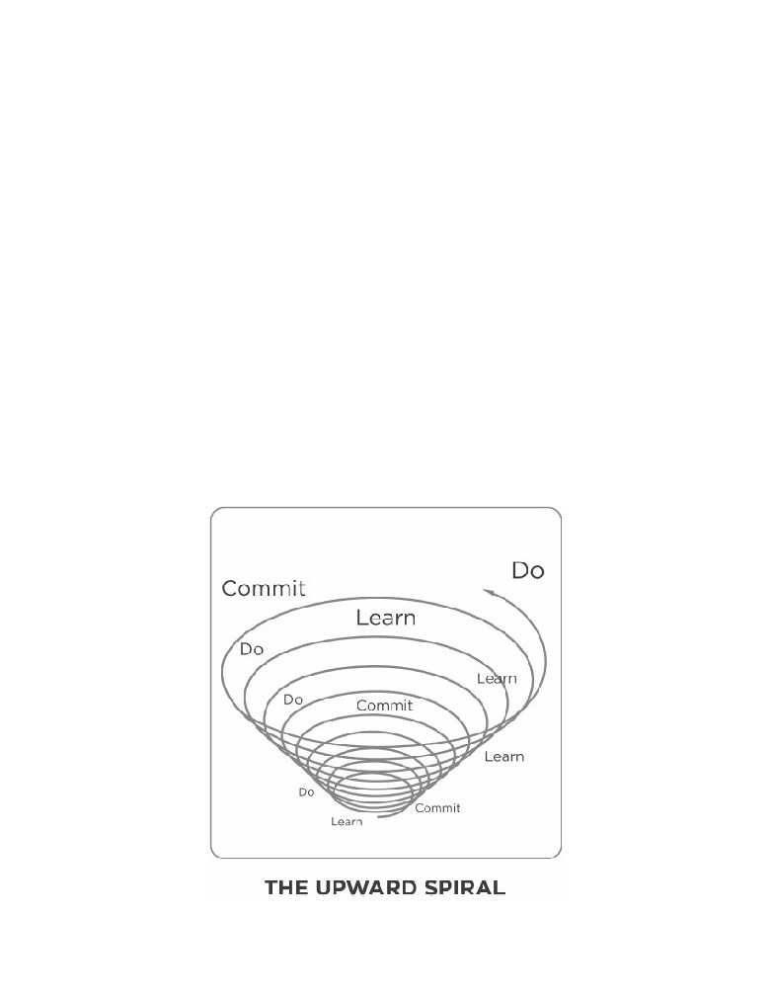
Once we are self-aware, we must choose purposes and principles to live by;
otherwise the vacuum will be filled, and we will lose our self-awareness and
become like groveling animals who live primarily for survival and propagation.
People who exist on that level aren’t living; they are “being lived.” They are
reacting, unaware of the unique endowments that lie dormant and undeveloped
within.
And there is no shortcut in developing them. The law of the harvest governs;
we will always reap what we sow—no more, no less. The law of justice is
immutable, and the closer we align ourselves with correct principles, the better
our judgment will be about how the world operates and the more accurate our
paradigms—our maps of the territory—will be.
I believe that as we grow and develop on this upward spiral, we must show
diligence in the process of renewal by educating and obeying our conscience. An
increasingly educated conscience will propel us along the path of personal
freedom, security, wisdom, and power.
Moving along the upward spiral requires us to learn, commit, and do on
increasingly higher planes. We deceive ourselves if we think that any one of
these is sufficient. To keep progressing, we must learn, commit, and do—learn,
commit, and do—and learn, commit, and do again.
APPLICATION SUGGESTIONS:
1. Make a list of activities that would help you keep in good physical shape,
that would fit your life-style and that you could enjoy over time.
2. Select one of the activities and list it as a goal in your personal role area for
the coming week. At the end of the week evaluate your performance. If you
didn’t make your goal, was it because you subordinated it to a genuinely
higher value? Or did you fail to act with integrity to your values?
3. Make a similar list of renewing activities in your spiritual and mental
dimensions. In your social-emotional area, list relationships you would like
to improve or specific circumstances in which Public Victory would bring
greater effectiveness. Select one item in each area to list as a goal for the
week. Implement and evaluate.
4. Commit to write down specific “sharpen the saw” activities in all four
dimensions every week, to do them, and to evaluate your performance and
results.
INSIDE-OUT AGAIN
The Lord works from the inside out. The world works from the outside in.
The world would take people out of the slums. Christ takes the slums out of
people, and then they take themselves out of the slums. The world would
mold men by changing their environment. Christ changes men, who then
change their environment. The world would shape human behavior, but
Christ can change human nature.
EZRA TAFT BENSON, FORMER SECRETARY OF AGRICULTURE
I would like to share with you a personal story which I feel contains the essence
of this book. In doing so, it is my hope that you will relate to the underlying
principles it contains.
Some years ago, our family took a sabbatical leave from the university where
I taught so that I could write. We lived for a full year in Laie on the north shore
of Oahu, Hawaii.
Shortly after getting settled, we developed a living and working routine which
was not only very productive but extremely pleasant.
After an early morning run on the beach, we would send two of our children,
barefoot and in shorts, to school. I went to an isolated building next to the
canefields where I had an office to do my writing. It was very quiet, very
beautiful, very serene—no phone, no meetings, no pressing engagements.
My office was on the outside edge of a college, and one day as I was
wandering between stacks of books in the back of the college library, I came
across a book that drew my interest. As I opened it, my eyes fell upon a single
paragraph that powerfully influenced the rest of my life.
I read the paragraph over and over again. It basically contained the simple
idea that there is a gap or a space between stimulus and response, and that the
key to both our growth and happiness is how we use that space.
I can hardly describe the effect that idea had on my mind. Though I had been
nurtured in the philosophy of self-determinism, the way the idea was phrased
—“a gap between stimulus and response”—hit me with fresh, almost
unbelievable force. It was almost like “knowing it for the first time,” like an
inward revolution, “an idea whose time had come.”
I reflected on it again and again, and it began to have a powerful effect on my
paradigm of life. It was as if I had become an observer of my own participation.
I began to stand in that gap and to look outside at the stimuli. I reveled in the
inward sense of freedom to choose my response—even to become the stimulus,
or at least to influence it—even to reverse it.
Shortly thereafter, and partly as a result of this “revolutionary” idea, Sandra
and I began a practice of deep communication. I would pick her up a little before
noon on an old red Honda 90 trail cycle, and we would take our two preschool
children with us—one between us and the other on my left knee—as we rode out
in the canefields by my office. We rode slowly along for about an hour, just
talking.
The children looked forward to the ride and hardly ever made any noise. We
seldom saw another vehicle, and the cycle was so quiet we could easily hear
each other. We usually ended up on an isolated beach where we parked the
Honda and walked about 200 yards to a secluded spot where we ate a picnic
lunch.
The sandy beach and a freshwater river coming off the island totally absorbed
the interest of the children, so Sandra and I were able to continue our talks
uninterrupted. Perhaps it doesn’t take too much imagination to envision the level
of understanding and trust we were able to reach by spending at least two hours
a day, every day, for a full year in deep communication.
At the very first of the year, we talked about all kinds of interesting topics—
people, ideas, events, the children, my writing, our family at home, future plans,
and so forth. But little by little, our communication deepened and we began to
talk more and more about our internal worlds—about our upbringing, our
scripting, our feelings and self-doubts. As we were deeply immersed in these
communications, we also observed them and observed ourselves in them. We
began to use that space between stimulus and response in some new and
interesting ways which caused us to think about how we were programmed and
how those programs shaped how we saw the world.
We began an exciting adventure into our interior worlds and found it to be
more exciting, more fascinating, more absorbing, more compelling, more filled
with discovery and insight than anything we’d ever known in the outside world.
It wasn’t all “sweetness and light.” We occasionally hit some raw nerves and
had some painful experiences, embarrassing experiences, self-revealing
experiences—experiences that made us extremely open and vulnerable to each
other. And yet we found we had been wanting to go into those things for years.
When we did go into the deeper, more tender issues and then came out of them,
we felt in some way healed.
We were so initially supportive and helpful, so encouraging and empathic to
each other, that we nurtured and facilitated these internal discoveries in each
other.
We gradually evolved two unspoken ground rules. The first was “no probing.”
As soon as we unfolded the inner layers of vulnerability, we were not to question
each other, only to empathize. Probing was simply too invasive. It was also too
controlling and too logical. We were covering new, difficult terrain that was
scary and uncertain, and it stirred up fears and doubts. We wanted to cover more
and more of it, but we grew to respect the need to let each other open up in our
own time.
The second ground rule was that when it hurt too much, when it was painful,
we would simply quit for the day. Then we would either begin the next day
where we left off or wait until the person who was sharing felt ready to continue.
We carried around the loose ends, knowing that we wanted to deal with them.
But because we had the time and the environment conducive to it, and because
we were so excited to observe our own involvement and to grow within our
marriage, we simply knew that sooner or later we would deal with all those loose
ends and bring them to some kind of closure.
The most difficult and eventually the most fruitful part of this kind of
communication came when my vulnerability and Sandra’s vulnerability touched.
Then, because of our subjective involvement, we found that the space between
stimulus and response was no longer there. A few bad feelings surfaced. But our
deep desire and our implicit agreement was to prepare ourselves to start where
we left off and deal with those feelings until we resolved them.
One of those difficult times had to do with a basic tendency in my personality.
My father was a very private individual—very controlled and very careful. My
mother was and is very public, very open, very spontaneous. I find both sets of
tendencies in me, and when I feel insecure, I tend to become private, like my
father. I live inside myself and safely observe.
Sandra is more like my mother—social, authentic, and spontaneous. We had
gone through many experiences over the years in which I felt her openness was
inappropriate, and she felt my constraint was dysfunctional, both socially and to
me as an individual because I would become insensitive to the feelings of others.
All of this and much more came out during those deep visits. I came to value
Sandra’s insight and wisdom and the way she helped me to be a more open,
giving, sensitive, social person.
Another of those difficult times had to do with what I perceived to be a “hang
up” Sandra had which had bothered me for years. She seemed to have an
obsession about Frigidaire appliances which I was at an absolute loss to
understand. She would not even consider buying another brand of appliance.
Even when we were just starting out and on a very tight budget, she insisted that
we drive the fifty miles to the “big city” where Frigidaire appliances were sold,
simply because no dealer in our small university town carried them at that time.
This was a matter of considerable agitation to me. Fortunately, the situation
came up only when we purchased an appliance. But when it did come up, it was
like a stimulus that triggered off a hot button response. This single issue seemed
to be symbolic of all irrational thinking, and it generated a whole range of
negative feelings within me.
I usually resorted to my dysfunctional private behavior. I suppose I figured
that the only way I could deal with it was not to deal with it; otherwise, I felt I
would lose control and say things I shouldn’t say. There were times when I did
slip and say something negative, and I had to go back and apologize.
What bothered me the most was not that she liked Frigidaire, but that she
persisted in making what I considered utterly illogical and indefensible
statements to defend Frigidaire which had no basis in fact whatsoever. If she had
only agreed that her response was irrational and purely emotional, I think I could
have handled it. But her justification was upsetting.
It was sometime in early spring when the Frigidaire issue came up. All our
prior communication had prepared us. The ground rules had been deeply
established—not to probe and to leave it alone if it got to be too painful for
either or both.
I will never forget the day we talked it through. We didn’t end up on the beach
that day; we just continued to ride through the canefields, perhaps because we
didn’t want to look each other in the eye. There had been so much psychic
history and so many bad feelings associated with the issue, and it had been
submerged for so long. It had never been so critical as to rupture the relationship,
but when you’re trying to cultivate a beautiful unified relationship, any divisive
issue is important.
Sandra and I were amazed at what we learned through the interaction. It was
truly synergistic. It was as if Sandra were learning, almost for the first time
herself, the reason for her so-called hang-up. She started to talk about her father,
about how he had worked as a high school history teacher and coach for years,
and how, to help make ends meet, he had gone into the appliance business.
During an economic downturn, he had experienced serious financial difficulties,
and the only thing that enabled him to stay in business during that time was the
fact that Frigidaire would finance his inventory.
Sandra had an unusually deep and sweet relationship with her father. When he
returned home at the end of a very tiring day, he would lie on the couch, and
Sandra would rub his feet and sing to him. It was a beautiful time they enjoyed
together almost daily for years. He would also open up and talk through his
worries and concerns about the business, and he shared with Sandra his deep
appreciation for Frigidaire financing his inventory so that he could make it
through the difficult times.
This communication between father and daughter had taken place in a
spontaneous way during very natural times, when the most powerful kind of
scripting takes place. During those relaxed times guards are down and all kinds
of images and thoughts are planted deep in the subconscious mind. Perhaps
Sandra had forgotten about all of this until the safety of that year of
communication when it could come out also in very natural and spontaneous
ways.
Sandra gained tremendous insight into herself and into the emotional root of
her feelings about Frigidaire. I also gained insight and a whole new level of
respect. I came to realize that Sandra wasn’t talking about appliances; she was
talking about her father, and about loyalty—about loyalty to his needs.
I remember both of us becoming tearful on that day, not so much because of
the insights, but because of the increased sense of reverence we had for each
other. We discovered that even seemingly trivial things often have roots in deep
emotional experiences. To deal only with the superficial trivia without seeing the
deeper, more tender issues is to trample on the sacred ground of another’s heart.
There were many rich fruits of those months. Our communication became so
powerful that we could almost instantly connect with each other’s thoughts.
When we left Hawaii, we resolved to continue the practice. During the many
years since, we have continued to go regularly on our Honda trail cycle, or in the
car if the weather’s bad, just to talk. We feel the key to staying in love is to talk,
particularly about feelings. We try to communicate with each other several times
every day, even when I’m traveling. It’s like coming into home base, which
accesses all the happiness, security, and values it represents.
Thomas Wolfe was wrong. You can go home again—if your home is a
treasured relationship, a precious companionship.
INTERGENERATIONAL LIVING
As Sandra and I discovered that wonderful year, the ability to use wisely the
gap between stimulus and response, to exercise the four unique endowments of
our human nature, empowered us from the inside out.
We had tried the outside-in approach. We loved each other, and we had
attempted to work through our differences by controlling our attitudes and our
behaviors, by practicing useful techniques of human interaction. But our Band-
Aids and aspirin only lasted so long. Until we worked and communicated on the
level of our essential paradigms, the chronic underlying problems were still
there.
When we began to work from the inside out, we were able to build a
relationship of trust and openness and to resolve dysfunctional differences in a
deep and lasting way that never could have come by working from the outside
in. The delicious fruits—a rich Win/Win relationship, a deep understanding of
each other, and a marvelous synergy—grew out of the roots we nurtured as we
examined our programs, rescripted ourselves, and managed our lives so that we
could create time for the important Quadrant II activity of communicating
deeply with each other.
And there were other fruits. We were able to see on a much deeper level that,
just as powerfully as our own lives had been affected by our parents, the lives of
our children were being influenced and shaped by us, often in ways we didn’t
even begin to realize. Understanding the power of scripting in our own lives, we
felt a renewed desire to do everything we could to make certain that what we
passed on to future generations, by both precept and example, was based on
correct principles.
I have drawn particular attention in this book to those scripts we have been
given which we proactively want to change. But as we examine our scripting
carefully, many of us will also begin to see beautiful scripts, positive scripts that
have been passed down to us which we have blindly taken for granted. Real self-
awareness helps us to appreciate those scripts and to appreciate those who have
gone before us and nurtured us in principle-based living, mirroring back to us
not only what we are, but what we can become.
There is transcendent power in a strong intergenerational family. An
effectively interdependent family of children, parents, grandparents, aunts,
uncles, and cousins can be a powerful force in helping people have a sense of
who they are and where they came from and what they stand for.
It’s great for children to be able to identify themselves with the “tribe,” to feel
that many people know them and care about them, even though they’re spread
all over the country. And that can be a tremendous benefit as you nurture your
family. If one of your children is having difficulty and doesn’t really relate with
you at a particular time in his life, maybe he can relate to your brother or sister
who can become a surrogate father or mother, a mentor or a hero for a period of
time.
Grandparents who show a great interest in their grandchildren are among the
most precious people on this earth. What a marvelous positive social mirror they
can be! My mother is like that. Even now, in her late 80’s, she takes a deep
personal interest in every one of her descendants. She writes us love letters. I
was reading one the other day on a plane with tears streaming down my cheeks. I
could call her up tonight and I know she’d say, “Stephen, I want you to know
how much I love you and how wonderful I think you are.” She’s constantly
reaffirming.
A strong intergenerational family is potentially one of the most fruitful,
rewarding, and satisfying interdependent relationships. And many people feel
the importance of that relationship. Look at the fascination we all had with Roots
some years ago. Each of us has roots and the ability to trace those roots, to
identify our ancestors.
The highest and most powerful motivation in doing that is not for ourselves
only, but for our posterity, for the posterity of all mankind. As someone once
observed, “There are only two lasting bequests we can give our children—one is
roots, the other wings.”
BECOMING A TRANSITION PERSON
Among other things, I believe that giving “wings” to our children and to
others means empowering them with the freedom to rise above negative
scripting that had been passed down to us. I believe it means becoming what my
friend and associate, Dr. Terry Warner, calls a “transition” person. Instead of
transferring those scripts to the next generation, we can change them. And we
can do it in a way that will build relationships in the process.
If your parents abused you as a child, that does not mean that you have to
abuse your own children. Yet there’s plenty of evidence to indicate that you will
tend to live out that script. But because you’re proactive, you can rewrite the
script. You can choose not only not to abuse your children, but to affirm them, to
script them in positive ways.
You can write it in your personal mission statement and into your mind and
heart. You can visualize yourself living in harmony with that mission statement
in your Daily Private Victory. You can take steps to love and forgive your own
parents, and if they are still living, to build a positive relationship with them by
seeking to understand.
A tendency that’s run through your family for generations can stop with you.
You’re a transition person—a link between the past and the future. And your
own change can affect many, many lives downstream.
One powerful transition person of the twentieth century, Anwar Sadat, left us
as part of his legacy a profound understanding of the nature of change. Sadat
stood between a past that had created a “huge wall of suspicion, fear, hate and
misunderstanding” between Arabs and Israelis, and a future in which increased
conflict and isolation seemed inevitable. Efforts at negotiation had been met with
objections on every scale—even to formalities and procedural points, to an
insignificant comma or period in the text of proposed agreements.
While others attempted to resolve the tense situation by hacking at the leaves,
Sadat drew upon his earlier centering experience in a lonely prison cell and went
to work on the root. And in doing so, he changed the course of history for
millions of people.
He records in his autobiography:
It was then that I drew, almost unconsciously, on the inner strength I had developed in Cell 54 of
Cairo Central Prison—a strength, call it a talent or capacity, for change. I found that I faced a highly
complex situation, and that I couldn’t hope to change it until I had armed myself with the necessary
psychological and intellectual capacity. My contemplation of life and human nature in that secluded
place had taught me that he who cannot change the very fabric of his thought will never be able to
change reality, and will never, therefore, make any progress.
Change—real change—comes from the inside out. It doesn’t come from
hacking at the leaves of attitude and behavior with quick fix personality ethic
techniques. It comes from striking at the root—the fabric of our thought, the
fundamental, essential paradigms, which give definition to our character and
create the lens through which we see the world. In the words of Amiel,
Moral truth can be conceived in thought. One can have feelings about it. One can will to live it.
But moral truth may have been penetrated and possessed in all these ways, and escape us still.
Deeper even than consciousness there is our being itself—our very substance, our nature. Only those
truths which have entered into this last region, which have become ourselves, become spontaneous
and involuntary as well as voluntary, unconscious as well as conscious, are really our life—that is to
say, something more than property. So long as we are able to distinguish any space whatever between
Truth and us we remain outside it. The thought, the feeling, the desire or the consciousness of life
may not be quite life. To become divine is then the aim of life. Then only can truth be said to be ours
beyond the possibility of loss. It is no longer outside us, nor in a sense even in us, but we are it, and it
is we.
Achieving unity—oneness—with ourselves, with our loved ones, with our
friends and working associates, is the highest and best and most delicious fruit of
the Seven Habits. Most of us have tasted this fruit of true unity from time to time
in the past, as we have also tasted the bitter, lonely fruit of disunity—and we
know how precious and fragile unity is.
Obviously building a character of total integrity and living the life of love and
service that creates such unity isn’t easy. It isn’t a quick fix.
But it’s possible. It begins with the desire to center our lives on correct
principles, to break out of the paradigms created by other centers and the
comfort zones of unworthy habits.
Sometimes we make mistakes, we feel awkward. But if we start with the
Daily Private Victory and work from the inside out, the results will surely come.
As we plant the seed and patiently weed and nourish it, we begin to feel the
excitement of real growth and eventually taste the incomparably delicious fruits
of a congruent, effective life.
Again, I quote Emerson: “That which we persist in doing becomes easier—not
that the nature of the task has changed, but our ability to do has increased.”
By centering our lives on correct principles and creating a balanced focus
between doing and increasing our ability to do, we become empowered in the
task of creating effective, useful, and peaceful lives… for ourselves, and for our
posterity.
A Personal Note
As I conclude this book, I would like to share my own personal conviction
concerning what I believe to be the source of correct principles. I believe that
correct principles are natural laws, and that God, the Creator and Father of us all,
is the source of them, and also the source of our conscience. I believe that to the
degree people live by this inspired conscience, they will grow to fulfill their
natures; to the degree that they do not, they will not rise above the animal plane.
I believe that there are parts to human nature that cannot be reached by either
legislation or education, but require the power of God to deal with. I believe that
as human beings, we cannot perfect ourselves. To the degree to which we align
ourselves with correct principles, divine endowments will be released within our
nature in enabling us to fulfill the measure of our creation. In the words of
Teilhard de Chardin, “We are not human beings having a spiritual experience.
We are spiritual beings having a human experience.”
I personally struggle with much of what I have shared in this book. But the
struggle is worthwhile and fulfilling. It gives meaning to my life and enables me
to love, to serve, and to try again.
Again, T. S. Eliot expresses so beautifully my own personal discovery and
conviction:
“We must not cease from exploration. And the end of all our
exploring will be to arrive where we began and to know the place for the first
time.”
AFTERWORD:
QUESTIONS I AM OFTEN ASKED
Frankly, I’ve always been embarrassed by personal questions like some in this
afterword. But I am asked them so often and with such interest that I’ve gone
ahead and included them here. Many of these questions and answers were also
included in Living the 7 Habits.
The 7 Habits was published in 1989. Given your experiences in the many years that have
followed, what would you change, add, or subtract?
I’m not responding lightly, but frankly I wouldn’t change anything. I might go deeper and apply
wider but I have had the opportunity to do that in some of the books released since then.
For example, over 250,000 individuals were profiled showing Habit 3, Put First Things First, as
the habit most neglected. So, the First Things First book (published 1996) went deeper into Habits 2
and 3 but also added more substance and illustrations for all the other habits.
The 7 Habits of Highly Effective Families applied the 7 Habits framework of thinking into
building strong, happy, highly effective families.
Also, my son, Sean, applied the framework to the unique needs, interests and challenges of teens
in a very visually attractive, entertaining, and edifying way in The 7 Habits of Highly Effective Teens.
We have also had tens of thousands of people tell us of the significant impact of becoming the
creative force of their own lives through internalizing the 7 Habits. Seventy-six of them shared the
details of their fascinating stories of courage and inspiration in Living the 7 Habits—showing the
transforming power of the principles in all kinds of personal, family, and organizational settings
regardless of their circumstances, organizational position, or prior life experiences.
What have you learned about the 7 Habits since the book’s release?
I have learned or had reinforced many things. I’ll briefly mention ten learnings.
1. The importance of understanding the difference between principles and values. Principles are
natural laws that are external to us and that ultimately control the consequences of our actions. Values
are internal and subjective and represent that which we feel strongest about in guiding our behavior.
Hopefully we will come to value principles, so that we get the results we want now in a way that
enables us to get even greater results in the future, which is how I define effectiveness. Everyone has
values; even criminal gangs have values. Values govern people’s behavior but principles govern the
consequences of those behaviors. Principles are independent of us. They operate regardless of our
awareness of them, acceptance of them, liking of them, belief in them, or obeying of them. I have
come to believe that humility is the mother of all virtues. Humility says we are not in control,
principles are in control, therefore we submit ourselves to principles. Pride says that we are in
control, and since our values govern our behavior, we can simply do life our way. We may do so but
the consequences of our behavior flow from principles not our values. Therefore we should value
principles.
2. From experiences all over the world with this material I have come to see the universal nature of
the principles undergirding this material. Illustrations and practices may vary and are culturally
specific, but the principles are the same. I have found the principles contained in the 7 Habits in all
six major world religions and have actually drawn upon quotations from sacred writings of those
religions when teaching in those cultures. I have done this in the Middle East, India, Asia, Australia
and the South Pacific, South America, Europe, North America, Africa, and among Native Americans
and other indigenous peoples. All of us, men and women alike, face similar problems, have similar
needs, and internally resonate with the underlying principles. There is an internal sense of the
principle of justice or win/win. There is an internal moral sense of the principle of responsibility, of
the principle of purpose, of integrity, of respect, of cooperation, of communication, of renewal. These
are universal. But practices are not. They are situationally specific. Every culture interprets universal
principles in unique ways.
3. I have come to see the organizational implications of the 7 Habits, although, in the strict technical
sense, an organization does not have habits. Its culture has norms or mores or social codes, which
represent habits. An organization also has established systems, processes, and procedures. These
represent habits. In fact, in the last analysis, all behavior is personal. It is individual even though it
often is part of collective behavior in the form of decisions made by management regarding structure
and systems, processes and practices. We have worked with thousands of organizations in most every
industry and profession and have found that the same basic principles contained in the 7 Habits apply
and define effectiveness.
4. You can teach all 7 Habits by starting with any one habit. And you can also teach one habit in a
way that leads to the teaching of the other six. It’s like a hologram where the whole is contained in
the part and the part is contained in the whole.
5. Even though the 7 Habits represents an inside-out approach, it works most successfully when you
start with the outside challenge and then take the inside-out approach. In other words, if you are
having a relationship challenge, say a breakdown of communication and trust, this will define the
nature of the needed inside-out approach in winning the kind of private victory that enables the
public victory meeting that challenge. This is the reason I often teach Habits 4, 5, and 6 before I
teach Habits 1, 2, and 3.
6. Interdependence is ten times more difficult than independence. It demands so much more mental
and emotional independence to think win/win when another person is into win/lose, to seek to
understand first when everything inside you cries out for understanding, and to search for a better
third alternative when compromise is so much easier. In other words, to work successfully with
others in creative cooperative ways requires an enormous amount of independence, internal security,
and self-mastery. Otherwise, what we call interdependency is really counter-dependency where
people do the opposite to assert their independence, or codependency where they literally need the
other person’s weakness to fulfill their need and to justify their own weakness.
7. You can pretty well summarize the first three habits with the expression “make and keep a
promise.” And you can pretty well summarize the next three habits with the expression “involve
others in the problem and work out the solution together.”
8. The 7 Habits represents a new language even though there are fewer than a dozen unique words or
phrases. This new language becomes a code, a shorthand way of saying a great deal. When you say
to another “Was that a deposit or a withdrawal?” “Is that reactive or proactive?” “Is that synergistic
or a compromise?” “Is that win/win or win/lose or lose/win?” “Is that putting first things first or
second things first?” “Is that beginning with the means in mind or the end in mind?” I’ve seen entire
cultures transformed by a wide understanding of and commitment to the principles and concepts
symbolized by these very special code words.
9. Integrity is a higher value than loyalty. Or better put, integrity is the highest form of loyalty.
Integrity means being integrated or centered on principles not on people, organizations, or even
family. You will find that the root of most issues that people are dealing with is “is it popular
(acceptable, political), or is it right?” When we prioritize being loyal to a person or group over doing
what we feel to be right, we lose integrity. We may temporarily gain popularity or build loyalty, but,
downstream, this loss of integrity will undermine even those relationships. It’s like bad-mouthing
someone behind their back. The person you are temporarily united with through badmouthing
someone else knows you would bad mouth them under different pressures and circumstances. In a
sense, the first three habits represent integrity and the next three loyalty; but they are totally
interwoven. Over time, integrity produces loyalty. If you attempt to reverse them and go for loyalty
first, you will find yourself temporizing and compromising integrity. It’s better to be trusted than to
be liked. Ultimately, trust and respect will generally produce love.
10. Living the 7 Habits is a constant struggle for everyone. Everyone falters from time to time on
each of the seven and sometimes all seven simultaneously. They really are simple to understand but
difficult to consistently practice. They are common sense but what is common sense is not always
common practice.
Which habit do you personally have the greatest difficulty with?
Habit 5. When I am really tired and already convinced I’m right, I really don’t want to listen. I may
even pretend to listen. Basically I am guilty of the same thing I talk about, listening with the intent to
reply, not to understand. In fact, in some sense, I struggle almost daily with all 7 Habits. I have
conquered none of them. I see them more as life principles that we never really master and that the
closer we come to their mastery, the more aware we become of how far we really have yet to go. It’s
like the more you know the more you know you don’t know.
This is why I often gave my university students 50 percent of the grade for the quality of their
questions and the other 50 percent for the quality of their answer to their questions. Their true level
of knowledge is better revealed that way.
Similarly, the 7 Habits represents an upward cycle.
Habit 1 at a high level is vastly different from Habit 1 at a lower level. To be proactive at the
beginning level may only be awareness of the space between stimulus and response. At the next level
it may involve a choice, such as not to get back at or to get even. At the next level, to give feedback.
At the next level, to ask forgiveness. At the next level, to forgive. At the next, to forgive parents. At
the next level, to forgive dead parents. And the next level, to simply not take offense.
You’re the vice-chairman of FranklinCovey company. Does FranklinCovey live the 7 Habits?
We try to. Continually trying to live what we teach is one of our most fundamental values. But we
don’t do it perfectly. Like any other business, we’re challenged by changing market realities and by
integrating the two cultures of the former Covey Leadership Center and Franklin Quest. The merger
took place in the summer of 1997. It takes time, patience, and persistence in applying the principles
and the true test of our success will be in the long run. No snapshot will give an accurate picture.
Any airplane is off track much of the time but just keeps coming back to the flight plan.
Eventually, it arrives at its destination. This is true with all of us as individuals, families, or
organizations. The key is to have an “End in Mind” and a shared commitment to constant feedback
and constant course correction.
Why seven? Why not six or eight or ten or fifteen? What is so sacred about seven?
Nothing is sacred about seven, it just so happens that the three private victory habits (freedom to
choose, choice, action) precede the three public victory habits (respect, understanding, creation) and
then there is one to renew the rest and that equals seven.
When asked this question, I’ve always said if there were some other desirable characteristic you
would like make into a habit, you would simply put that under Habit 2 as one of the values you are
trying to live by. In other words, if punctuality is a desirable trait you want to make a habit, that
would be one of the values of Habit 2. So no matter what else you came up with you would put it
under Habit 2, your value system. Habit 1 is the idea that you can have a value system, that you can
choose your own value system. Habit 2 is what those choices or values are and Habit 3 is to live by
them. So they are very basic, generic, and interconnected.
It so happens that at the writing of this afterword for this new edition of The 7 Habits, I have just
completed a new book entitled The 8th Habit: From Effectiveness to Greatness. To some, calling it
the 8th Habit may appear to be a departure from my standard answer. But you see, as I say in the
opening chapter of this new book, the world has profoundly changed since The 7 Habits of Highly
Effective People was published in 1989. The challenges and complexity we face in our personal lives
and relationships, in our families, in our professional lives, and in our organizations are of a different
order of magnitude. In fact, many mark 1989—the year we witnessed the fall of the Berlin Wall—as
the beginning of the Information Age, the birth of a new reality, a sea change of incredible
significance… truly a new era.
Being highly effective as individuals and organizations is no longer optional in today’s world—it’s
the price of entry to the playing field. But surviving, thriving, innovating, excelling and leading in
this new reality will require us to build on and reach beyond effectiveness. The call and need of a
new era is for fulfillment. It’s for passionate optimization, for significant contribution and greatness.
These are on a different plane or dimension. They are different in kind—just as significance is
different in kind, not in degree, from success. Tapping into the higher reaches of human genius and
motivation—what we could call voice—requires a new mindset, a new skill-set, a new tool-set… a
new habit.
The 8th Habit, then, is not about adding one more habit to the 7th—one that somehow got
forgotten. It’s about seeing and harnessing the power of a third dimension to the 7 Habits that meets
the central challenge of the new Knowledge Worker Age.
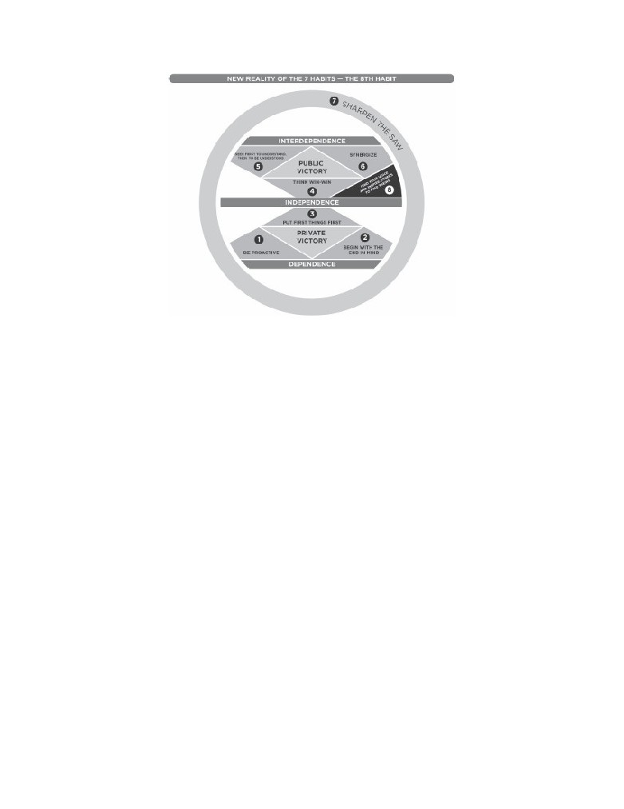
How does fame affect you?
It affects me in different ways. From an ego standpoint, it’s flattering. From a teaching standpoint it
is humbling, but I must strongly acknowledge that I am not the author of any of these principles and
deserve absolutely no recognition. I am not saying this because of a desire to be modest and humble.
I am saying this because I believe it—that I, myself, believe it. I see myself like most of you—as a
seeker of truth, of understanding. I am not a guru; I disdain being called a guru. I want no disciples. I
am only trying to promote a discipleship toward principles that are already in people’s hearts, that
people will live true to their conscience.
If you had it to do over again, what is the one thing you would do differently as a
businessperson?
I would do more strategic, proactive recruiting and selecting. When you are buried by the urgent and
have a thousand balls in the air, it is so easy to put people that appear to have solutions into key
positions. The tendency is not to look deeply into their backgrounds and patterns, not to do “due
diligence,” nor is it to carefully develop the criteria that need to be met in the particular roles or
assignments. I am convinced that when recruiting and selecting is done strategically, that is, thinking
long-term and proactively, not based upon the pressures of the moment, it pays enormous long-term
dividends. Someone once said, “That which we desire most earnestly we believe most easily.” You
really have to look deeply into both character and competence because eventually, downstream, flaws
in either area will manifest themselves in both areas. I am convinced that although training and
development is important, recruiting and selection are much more important.
If you had it to do over again, what is the one thing you would do differently as a parent?
As a parent, I wish I had spent more time in carefully developing soft, informal win/win agreements
with each of my children in the different phases of their lives. Because of business and travels I often
indulged my children and went for lose/win too much instead of paying the price in relationship
building sufficient to really develop thorough, sound win/win agreements more consistently.
How is technology going to change business in the future?
I believe in Stan Davis’s statement that “When the infrastructure changes, everything rumbles,” and I
think the technical infrastructure is central to everything. It will accelerate all good and bad trends.
I’m also convinced that it is for these very reasons that the human element becomes even more
important. High tech without high touch does not work, and the more influential technology
becomes, the more important the human factor which controls that technology becomes, particularly
in developing a cultural commitment to the criteria in the use of that technology.
Are you surprised or astounded at the universal popularity of the 7 Habits (with other
countries/cultures/ages/gender)?
Yes and no. Yes, in that I had no idea it would become a worldwide phenomenon and that a few of
the words would become part of Americana. No, in the sense that the material had been tested for
over twenty-five years and I knew that it would work primarily because it is based upon principles I
did not invent and therefore take no credit for.
How would you begin to teach the 7 Habits to very young children?
I think I would live by Albert Schweitzer’s three basic rules for raising children: First, example;
second, example; third, example. But I wouldn’t go quite that far. I would say, first, example; second,
build a caring and affirming relationship; and third, teach some of the simple ideas underlying the
habits in the language of children—help them gain a basic understanding and vocabulary of the 7
Habits and show them how to process their own experiences through the principles; let them identify
what particular principles and habits are being illustrated in their lives.
My boss (spouse, child, friend, etc.) really needs the 7 Habits. How would you recommend I get
them to read it?
People don’t care how much you know until they know how much you care. Build a relationship of
trust and openness based upon a character example of trustworthiness and then share how the 7
Habits have helped you. Simply let them see the 7 Habits in action through your life. Then, at the
appropriate time, you might invite them to participate in a training program or share your book as a
gift or teach some of the basic ideas when the occasion calls for it.
What is your background and how did you come to write The 7 Habits?
It was implicitly understood that I would follow in my father’s footsteps and go into the family
business. However, I found that I enjoyed teaching and training leaders even more than business. I
became deeply interested and involved in the human side of organizations when I was at Harvard
Business School. Later I taught business subjects at Brigham Young University and did consulting,
advising, and training on the side for several years. During that time, I became interested in creating
integrated leadership and management development programs around a sequential and balanced set
of principles. These eventually evolved into the 7 Habits and then while applying it to organizations
it evolved into the concept of principle-centered leadership. I decided to leave the university and go
full-time into training executives from all different kinds of organizations. After a year of following a
very carefully developed curriculum came the development of a business that has enabled us to take
the material to people throughout the world.
What is your response to the people who claim to have the true formula for success?
I would say two things. First, if what they are saying is based on principles or natural laws, I want to
learn from them and I commend them. Second, I would say we are probably using different words to
describe the same basic principles or natural laws.
Are you really bald or do you shave your head for efficiency’s sake?
Hey, listen, while you’re busy blow-drying your hair, I’m out serving the customers. In fact, the first
time I heard the expression, “Bald is beautiful,” I kicked the slats out of my crib!
Appendix
A
POSSIBLE PERCEPTIONS FLOWING out
of VARIOUS CENTERS
Appendix
B
A QUADRANT II DAY
at the OFFICE
The following exercise and analysis is designed to help you see the impact of a
Quadrant II paradigm in a business setting on a very practical level.
Suppose that you are the director of marketing for a major pharmaceutical
firm. You are about to begin an average day at the office, and as you look over
the items to attend to that day, you estimate the amount of time each one will
take.
Your unprioritized list includes the following:
1. You’d like to have lunch with the general manager (1-1½ hours).
2. You were instructed the day before to prepare your media budget for the
following year (2 or 3 days).
3. Your “IN” basket is overflowing into your “OUT” basket (1-1½ hours).
4. You need to talk to the sales manager about last month’s sales; his office is
down the hall (4 hours).
5. You have several items of correspondence that your secretary says are
urgent (1 hour).
6. You’d like to catch up on the medical journals piled upon your desk (½
hour).
7. You need to prepare a presentation for a sales meeting slated for next month
(2 hours).
8. There’s a rumor that the last batch of product “X” didn’t pass quality
control.
9. Someone from the FDA wants you to return his call about product “X” (½
hour).
10. There is a meeting at two P.M. for the executive board, but you don’t know
what it is about (1 hour).
Take a few minutes now and use what you have learned from Habits 1, 2, and
3 that might help you to effectively schedule your day.
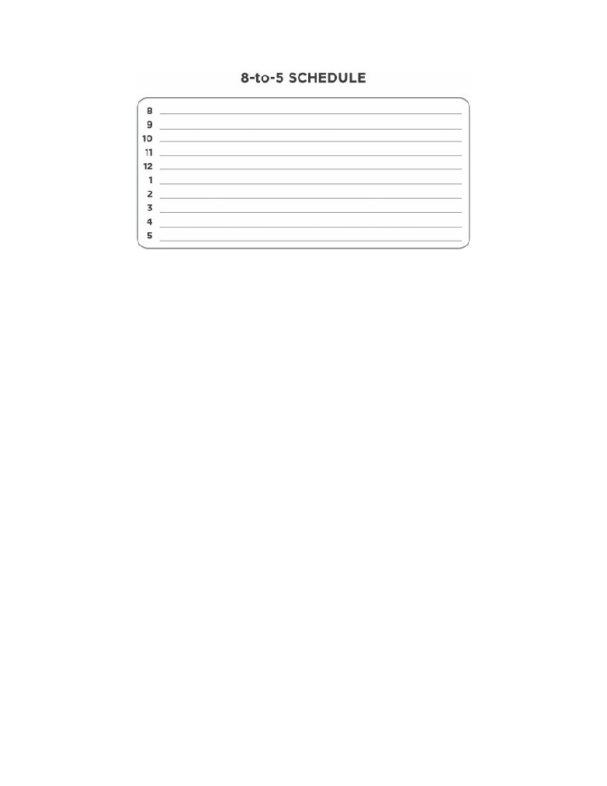
By asking you to plan only one day, I have automatically eliminated the wider
context of the week so fundamental to fourth generation time management. But
you will be able to see the power of a Quadrant II, principle-centered paradigm
even in the context of one nine-hour period of time.
It is fairly obvious that most of the items on the list are Quadrant I activities.
With the exception of item number six—catching up on medical journals—
everything else is seemingly both important and urgent.
If you were a third generation time manager, using prioritized values and
goals, you would have a framework for making such scheduling decisions and
would perhaps assign a letter such as A, B, or C next to each item and then
number 1,
2,
3
under each A, B, and C. You would also consider the
circumstances, such as the availability of other people involved, and the logical
amount of time required to eat lunch. Finally, based on all of these factors, you
would schedule the day.
Many third generation time managers who have done this exercise do exactly
what I have described. They schedule when they will do what, and based on
various assumptions which are made and explicitly identified, they would
accomplish or at least begin most of the items in that day and push the remainder
onto the next day or to some other time.
For instance, most people indicate that they would use the time between eight
and nine A.M. to find out exactly what was on the agenda for the executive
board meeting so that they could prepare for it, to set up lunch with the general
manager around noon, and to return the call from the FDA. They usually plan to
spend the next hour or two talking to the sales manager, handling those
correspondence items which are most important and urgent, and checking out the
rumor regarding the last batch of product “X” which apparently didn’t pass
quality control. The rest of that morning is spent in preparing for the luncheon
visit with the general manager and/or for the two P.M. executive board meeting,
or dealing with whatever problems were uncovered regarding product “X” and
last month’s sales.
After lunch, the afternoon is usually spent attending to the unfinished matters
just mentioned and/or attempting to finish the other most important and urgent
correspondence, making some headway into the overflowing “IN” basket, and
handling other important and urgent items that may have come up during the
course of the day.
Most people feel the media budget preparations for the following year and the
preparation for the next month’s sales meeting could probably be put off until
another day, which may not have as many Quadrant I items in it. Both of those
are obviously more Quadrant II activities, having to do with long-term thinking
and planning. The medical journals continue to be set aside because they are
clearly Quadrant II and are probably less important than the other two Quadrant
II matters just mentioned.
This is the kind of thinking which third generation time managers generally go
through, even though they may vary as to when they will do what.
What approach did you take as you scheduled those items? Was it similar to
the third generation approach? Or did you take a Quadrant II, fourth generation
approach? (Refer to the Time Management Matrix on page 160.)
The Quadrant II Approach
Let’s go through the items on the list using a Quadrant II approach. This is
only one possible scenario; others could be created, which may also be
consistent with the Quadrant II paradigm, but this is illustrative of the kind of
thinking it embodies.
As a Quadrant II manager, you would recognize that most P activities are in
Quadrant I and most PC activities are in Quadrant II. You would know that the
only way to make Quadrant I manageable is to give considerable attention to
Quadrant II, primarily by working on prevention and opportunity and by having
the courage to say “no” to Quadrants III and IV.
THE TWO P.M. BOARD MEETING. We will assume the two P.M. executive board meeting
did not have an agenda for the attending executives, or perhaps you would not
see the agenda until you arrived at the meeting. This is not uncommon. As a
result, people tend to come unprepared and to “shoot from the hip.” Such
meetings are usually disorganized and focus primarily on Quadrant I issues,
which are both important and urgent, and around which there is often a great
deal of sharing of ignorance. These meetings generally result in wasted time and
inferior results and are often little more than an ego trip for the executive in
charge.
In most meetings, Quadrant II items are usually categorized as
“other
business.” Because “work expands to fill the time allotted for its completion” in
accordance with Parkinson’s Law, there usually isn’t time to discuss them. If
there is, people have been so beaten and smashed by Quadrant I, they have little
or no energy left to address them.
So you might move into Quadrant II by first attempting to get yourself on the
agenda so that you can make a presentation regarding how to optimize the value
of executive board meetings. You might also spend an hour or two in the
morning preparing for that presentation, even if you are only allowed a few
minutes to stimulate everyone’s interest in hearing a more extended preparation
at the next board meeting. This presentation would focus on the importance of
always having a clearly specified purpose for each meeting and a well-thought-
out agenda to which each person at the meeting has had the opportunity to
contribute. The final agenda would be developed by the chairman of the
executive board and would focus first on Quadrant II issues that usually require
more creative thinking rather than Quadrant I issues that generally involve more
mechanical thinking.
The presentation would also stress the importance of having minutes sent out
immediately following the meeting, specifying assignments given and dates of
accountability. These items would then be placed on appropriate future agendas
which would be sent out in plenty of time for others to prepare to discuss them.
Now this is what might be done by looking at one item on the schedule—the
two P.M. executive board meeting—through a Quadrant II frame of reference.
This requires a high level of proactivity, including the courage to challenge the
assumption that you even need to schedule the items in the first place. It also
requires consideration in order to avoid the kind of crisis atmosphere that often
surrounds a board meeting.
Almost every other item on the list can be approached with the same Quadrant
II thinking, with perhaps the exception of the FDA call.
RETURNING THE FDA CALL. Based on the background of the quality of the
relationship with the FDA, you make that call in the morning so that whatever it
reveals can be dealt with appropriately. This might be difficult to delegate, since
another organization is involved that may have a Quadrant I culture and an
individual who wants you, and not some delegatee, to respond.
While you may attempt to directly influence the culture of your own
organization as a member of the executive board, your Circle of Influence is
probably not large enough to really influence the culture of the FDA, so you
simply comply with the request. If you find the nature of the problem uncovered
in the phone call is persistent or chronic, then you may approach it from a
Quadrant II mentality in an effort to prevent such problems in the future. This
again would require considerable proactivity to seize the opportunity to
transform the quality of the relationship with the FDA or to work on the
problems in a preventive way.
LUNCH WITH THE GENERAL MANAGER. You might see having lunch with the general
manager as a rare opportunity to discuss some longer-range, Quadrant II matters
in a fairly informal atmosphere. This may also take thirty to sixty minutes in the
morning to adequately prepare for, or you may simply decide to have a good
social interaction and listen carefully, perhaps without any plan at all. Either
possibility may present a good opportunity to build your relationship with the
general manager.
PREPARING THE MEDIA BUDGET. Regarding item number two, you might call in two or
three of your associates most directly connected to media budget preparation and
ask them to bring their recommendations in the form of “completed staff work”
(which may only require your initials to finally approve) or perhaps to outline
two or three well-thought-out options you can choose from and identify the
consequences of each option. This may take a full hour sometime during the day
—to go over desired results, guidelines, resources, accountability, and
consequences. But by investing this one hour, you tap the best thinking of
concerned people who may have different points of view. If you haven’t taken
this approach before, you may need to spend more time to train them in what this
approach involves, what “completed staff work” means, how to synergize around
differences and what identifying alternative options and consequences involves.
THE “IN” BASKET AND CORRESPONDENCE. Instead of diving into the “IN” basket, you
would spend some time, perhaps thirty to sixty minutes, beginning a training
process with your secretary so that he or she could gradually become empowered
to handle the “IN” basket as well as the correspondence under item number five.
This training program might go on for several weeks, even months, until your
secretary or assistant is really capable of being results-minded rather than
methods-minded.
Your secretary could be trained to go through all correspondence items and all
“IN” basket items, to analyze them and to handle as many as possible. Items that
could not be handled with confidence could be carefully organized, prioritized,
and brought to you with a recommendation or a note for your own action. In this
way, within a few months your secretary or executive assistant could handle 80
to 90 percent of all of the “IN” basket items and correspondence, often much
better than you could handle them yourself, simply because your mind is so
focused on Quadrant II opportunities instead of buried in Quadrant I problems.
THE SALES MANAGER AND LAST MONTH’S SALES. A possible Quadrant II approach to
item number four would be to think through the entire relationship and
performance agreement with that sales manager to see if the Quadrant II
approach is being used. The exercise doesn’t indicate what you need to talk to
the sales manager about, but assuming it’s a Quadrant I item, you could take the
Quadrant II approach and work on the chronic nature of the problem as well as
the Quadrant I approach to solve the immediate need.
Possibly you could train your secretary to handle the matter without your
involvement and bring to your attention only that which you need to be aware of.
This may involve some Quadrant II activity with your sales manager and others
reporting to you so they understand that your primary function is leadership
rather than management. They can begin to understand that they can actually
solve the problem better with your secretary than with you, and free you for
Quadrant II leadership activity.
If you feel that the sales manager might be offended by having your secretary
make the contact, then you could begin the process of building that relationship
so that you can eventually win the confidence of the sales manager toward your
both taking a more beneficial Quadrant II approach.
CATCHING UP ON MEDICAL JOURNALS. Reading medical journals is a Quadrant II item
you may want to procrastinate. But your own long-term professional competence
and confidence may largely be a function of staying abreast of this literature. So,
you may decide to put the subject on the agenda for your own staff meeting,
where you could suggest that a systematic approach to reading the medical
journals be set up among your staff. Members of the staff could study different
journals and teach the rest the essence of what they learn at future staff meetings.
In addition, they could supply others with key articles or excerpts which
everyone really needs to read and understand.
PREPARING FOR NEXT MONTH’S SALES MEETING. Regarding item number seven, a
possible Quadrant II approach might be to call together a small group of the
people who report to you and charge them to make a thorough analysis of the
needs of the salespeople. You could assign them to bring a completed staff work
recommendation to you by a specified date within a week or ten days, giving
you enough time to adapt it and have it implemented. This may involve their
interviewing each of the salespeople to discover their real concerns and needs, or
it might involve sampling the sales group so that the sales meeting agenda is
relevant and is sent out in plenty of time so that the salespeople can prepare and
get involved in it in appropriate ways.
Rather than prepare the sales meeting yourself, you could delegate that task to
a small group of people who represent different points of view and different
kinds of sales problems. Let them interact constructively and creatively and
bring to you a finished recommendation. If they are not used to this kind of
assignment, you may spend some of that meeting challenging and training them,
teaching them why you are using this approach and how it will benefit them as
well. In doing so, you are beginning to train your people to think long-term, to
be responsible for completing staff work or other desired results, to creatively
interact with each other in interdependent ways, and to do a quality job within
specified deadlines.
PRODUCT “X” AND QUALITY CONTROL. Now let’s look at item number eight regarding
product “X,” which didn’t pass quality control. The Quadrant II approach would
be to study that problem to see if it has a chronic or persistent dimension to it. If
so, you could delegate to others the careful analysis of that chronic problem with
instructions to bring to you a recommendation, or perhaps simply to implement
what they come up with and inform you of the results.
The net effect of this Quadrant II day at the office is that you are spending most
of your time delegating, training, preparing a board presentation, making one
phone call, and having a productive lunch. By taking a long-term PC approach,
hopefully in a matter of a few weeks, perhaps months, you won’t face such a
Quadrant I scheduling problem again.
As you go through this analysis, you may be thinking this approach seems
idealistic. You may be wondering if Quadrant II managers ever work in
Quadrant I.
I admit it is idealistic. This book is not about the habits of highly ineffective
people; it’s about habits of highly effective people. And to be highly effective is
an ideal to work toward.
Of course you’ll need to spend time in Quadrant I. Even the best laid plans in
Quadrant II sometimes aren’t realized. But Quadrant I can be significantly
reduced into more manageable proportions so that you’re not always into the
stressful crisis atmosphere that negatively affects your judgment as well as your
health.
Undoubtedly it will take considerable patience and persistence, and you may
not be able to take a Quadrant II approach to all or even most of these items at
this time. But if you can begin to make some headway on a few of them and help
create more of a Quadrant II mind-set in other people as well as yourself, then
downstream there will be quantum improvements in performance.
Again, I acknowledge that in a family setting or a small business setting, such
delegation may not be possible. But this does not preclude a Quadrant II mind-
set which would produce interesting and creative ways within your Circle of
Influence to reduce the size of Quadrant I crises through the exercise of
Quadrant II initiative.
A FINAL INTERVIEW WITH STEPHEN R.
COVEY
In the 25 years after the publication of The 7 Habits, Dr. Stephen R. Covey’s
“circle of influence” grew to encompass the entire globe. He consulted with
kings and presidents and taught millions of people through every imaginable
channel the principles of effective living. By the time of his death in 2012, he had
been named one of the most influential people in the world and The 7 Habits the
most significant book on self-improvement in a century.
He continued to teach The 7 Habits all his life. Additionally, the radically
changing times called forth even deeper wisdom from Dr. Covey, some of which
we’d like to share with you now.
The following is a synthesis of the responses Dr. Covey gave near the close of
his life to vital questions he was often asked in interviews or during speeches. We
have done our best to bring together his final thoughts in his own words into
what might be considered his “final interview.”
What has changed since The 7 Habits first appeared?
Change itself has changed. It’s accelerated beyond anything any of us ever
imagined. Technological revolutions seem to occur hourly. We grapple with
economic uncertainty. Global power relations shift dramatically and overnight.
And much of the world is terror-stricken, both psychologically and literally.
Our personal lives have radically changed too. The pace of life is now light
speed. We are connected to work 24/7. We used to try to do more with less; now
many of us are trying on our own to do everything at once.
But one thing hasn’t changed and never will change—the only thing you can
rely on—the fact that there are timeless and universal principles. They never
change. They apply everywhere in the world at all times. Principles like fairness,
honesty, respect, vision, accountability, and initiative govern our lives in the
same way that natural laws like gravity dictate the consequences of falling off a
building. If you go over the edge, you fall. It’s a natural principle.
And that’s why I am fundamentally optimistic. I am an optimist because I
believe in changeless principles. I know that if we live by them, they will work
for us.
Unlike a rock that falls if dropped from a building, we are capable of choosing
whether to jump or not. We are not unconscious beings to be merely pulled or
pushed around by impersonal forces. As humans, we are endowed with the gifts
of conscience, imagination, self-awareness, and independent will. These are
amazing gifts that animals do not possess. We can sense right from wrong. We
can stand apart from ourselves and evaluate our own behavior. We can live out
of our imagination, the future we wish to create, instead of being held hostage by
the memory of our past. And the more we exercise these endowments the greater
becomes our freedom to choose. We can choose to make principles work for us
or against us. I revel in that ability to choose.
To live with change, we need principles that don’t change.
But there’s a problem. Too many of us—more than ever, I’m afraid—are
trying to take a shortcut around the principles of life. We want love but not
commitment. We want success without paying the price. We want thin bodies
and our cake too. In other words, we want something we can never have—the
rewards of good character without good character.
That’s why I wrote The 7 Habits of Highly Effective People. I believe that our
culture is drifting from its anchor in those principles, and I want to point to the
consequences—that neglecting principles can only result in the shipwreck of our
lives. In like manner, I promise you that in the long run, if you will live in
alignment with principles you will prosper, personally and professionally.
Are the 7 Habits still relevant?
I believe the 7 Habits are more relevant than ever.
No one has been more surprised, humbled, and thrilled by the influence of The
7 Habits than I have. I’m continually amazed at the effect the book has had on so
many people in so many countries. I am so grateful that so many of my
associates and friends have taken up the challenge to live and teach the Habits.
Of course, I am just like everyone else who struggles to practice the 7 Habits
every day. It’s not easy, but it’s a challenge. I have found it deeply inspiring to
wake up each day and think through my mission in life and my important goals
and make small steps toward those things that are most meaningful. I have found
it most difficult to live by Habit
5: Seek First to Understand, Then to Be
Understood. I have worked at trying to become more patient and a better listener,
and I think I have made some progress.
But I can tell you that living the 7 Habits is an exhilarating lifelong challenge.
That’s why I worry when people say they’ve read the book. I’m afraid they
might see something in me that doesn’t line up with what I’ve written. I’m also
afraid they will think that reading the book makes them effective overnight—I
hope people take seriously the message that you are never done with the 7
Habits.
I’m thrilled to see that more and more people around the world are being
trained in the 7 Habits and that thousands have been certified to teach the 7
Habits inside their own organizations. People are attending 7 Habits classes
online and in traditional classrooms in more than 140 countries. Even more
exciting to me is that tens of thousands of schoolchildren are learning the 7
Habits. In some settings, entire corporations, government agencies, universities,
and school systems have adopted the 7 Habits as an organizational philosophy
and are finding great success with it.
Why do the 7 Habits continue to influence lives? I think it is because the 7
Habits help people identify their best selves and live accordingly. People,
particularly the young, instinctively feel the power of the principles embodied in
the 7 Habits and deep down they want more than shortcuts through life. People
losing themselves in the hyperactivity of the world want to regain control of
their own destinies.
The 7 Habits give people their lives back. They get back the power to choose.
They explore and discover their deepest, most cherished purposes. They gain the
tools to create and control their own future.
We hear a lot today about identity theft. The greatest identity theft is not when
someone takes your wallet or steals your credit card. The greater theft happens
when we forget who we really are, when we begin to believe that our worth and
identity come from how well we stack up compared to others, instead of
recognizing that each of us has immeasurable worth and potential, independent
of any comparison. This kind of theft comes from being immersed in a culture of
shortcuts where people are unwilling to pay the price for true success. In our
families, among friends, at work, we are constantly in the service of an artificial
self-image. When man found the mirror, he began to lose his soul. He became
more concerned with his image than with his true self; he became a product of
the social mirror. His center of identity and worth moved outside of himself.
The 7 Habits bring you back to yourself. The 7 Habits remind you of your true
nature. They remind you that you are in charge of your life. You are responsible
—no one else—for your choices. No one outside yourself can make you think,
do, or feel anything you do not choose for yourself. They remind you that you
are the programmer and can write the program for your own future. They teach
us that life is a team sport, and that interdependence, working cooperatively with
others, is a higher state of being than independence.
Change is hard. How can I change?
I suggest two practices for making changes in your life. The first is to follow
your conscience. I speak a lot about the idea that between stimulus (what
happens to us) and response (what we do about it) is a space to choose, and what
we do with that space ultimately determines our growth and happiness. In this
space lie the four human endowments of conscience, imagination, self-
awareness, and independent will. Of the four, conscience is the governing one.
Often, when we are not at peace in our lives, it is because we are living lives in
violation of our conscience and deep down we know it. We can tap into
conscience simply by asking ourselves questions and pausing to “hear” the
answer. For example, try asking yourself the following questions: What is the
most important thing I need to start doing in my personal life that would have
the greatest positive impact? Think deeply. What comes to mind? Now, ask
yourself another question: What is the most important thing that I need to start
doing in my professional life that would have the greatest positive impact?
Again, pause, think, and go deep inside yourself to find the answer. If you’re like
me, you’ll recognize those most important things by listening to your conscience
—that voice of wisdom, self-awareness, and common sense within you.
Another great question to ask yourself is: What is life now asking of me?
Pause. Think carefully. You may sense that you’ve been unfocused and need to
be far more careful with the way you spend your time. Or you may decide that
you need to start eating better and exercising because you’re constantly tired. Or
you may sense that there is a key relationship you need to repair. Whatever it is,
there is great strength and power in following through with a change that is
endorsed by your conscience. Without deep conviction, you won’t have the
strength to follow through with your goals when the going gets tough. And
conviction comes through conscience.
We all have three different lives: a public life, a private life, and an inner life.
Our public life is what others observe. Our private life is what we do when we
are alone. Our inner life is that place we go to when we really want to examine
our motives and our deepest desires. I highly recommend developing this inner
life. This is the place where our conscience can be most instructive because
while here we are in the best frame of mind to listen.
A second key to change is to change your role. As I’ve always said, if you
want to make incremental changes in your life, change your behaviors. But if
you want to make significant change, work on your paradigms, the way in which
you see and interpret the world. And the best way to change your paradigm is to
change your role. You may get promoted to be a new project manager at work.
You may become a new mother or a new grandfather. You may take on a new
community responsibility. Suddenly your role has changed and you see the
world differently and better behaviors naturally flow out of the changed
perspective.
Sometimes role changes are external events, such as a change in a job
responsibility. But other times we can change our role just by changing our
mindset or our perception of a situation. Let’s say, for example, that you are seen
as a control freak at work and that you know you need to start trusting others and
letting go. Well, perhaps you could see yourself differently and redefine your
role from one of “supervisor” to one of “advisor.” With this change of role, this
mental shift, you would start to see yourself as an advisor to your team members
who are empowered to make decisions and seek your counsel when doing so
instead of being the one who has to own everything and constantly follow up.
I’m often asked, Which of the 7 Habits is the most important? My answer is:
The most important habit is the one you are having the most difficult time living.
Use your endowments of self-awareness and conscience to help you sense which
habit you may need to focus on. Often the best way to change is to pick the one
thing, the single habit, and to make small commitments to yourself related to that
habit and keep them. Little by little your discipline and self-confidence will
increase.
I see what the 7 Habits can do for me personally, but what if my company or
organization doesn’t practice the 7 Habits?
Everything starts with the individual because all meaningful change comes
from the inside out. When you start the personal process of change, you will
soon find that you are also changing your environment, as your influence
expands and your example of integrity impresses others. Only after you have
successfully begun working on yourself can you start working on the
organization.
My great focus is to build the 7 Habits into the culture at large, to help us
move on from the Industrial-Age mindset of top-down command and control.
That Industrial Age is still with us mentally. It treats people as things to be
controlled. It’s the mindset that people are interchangeable things, that one
person is the same as another when we all know that every person has unique
gifts and is capable of making a contribution no one else can make. On financial
statements, people are treated as expenses rather than as the highest-leveraged
asset we have. Even if you’re a benevolent autocrat, you’re still controlling. This
is the key flaw of most organizations today.
The 7 Habits can change all that. A 7 Habits culture is deeply empowering to
everyone involved in it. In such a culture every person has tremendous value.
Complementary teams are carefully designed to leverage the productive
strengths of all team members and render their weaknesses irrelevant, as in a
singing group where the alto doesn’t try to take the place of the tenor or the
soprano. All are needed. The key is to unleash them to find their own voices, to
aim what they love to do and what they do well at the human needs they serve.
I am so humbled to see how the 7 Habits have helped transform teams and
organizations around the world.
For instance, the 7 Habits are the creed of a great mining company in Mexico.
Everyone from the CEO to the coal miner is trained in the 7 Habits. Everyone is
valued. Productivity skyrocketed while accident rates plunged as everyone took
responsibility for results. Spouses started calling up the company, asking, “What
have you done with my husband or wife? They are completely changed!” And
now whole families are being trained.
I have learned that it takes more than great individuals to make a great
company. An organization must also live by the 7 Habits as an organization.
This means taking initiative, having a crystal-clear mission and strategy,
consistently executing on priorities, thinking win-win with all stakeholders, and
synergistically innovating for the future. Thinking within the framework of the 7
Habits is crucial to the success of any organization. Building a 7 Habits culture is
not just the CEO’s job—it’s everyone’s job. In such a culture, all are leaders.
In the end, my passion has been to build principle-centered leadership into the
culture of organizations everywhere. That kind of leadership is for everyone, not
just the CEO. All true leadership is based on moral authority, not formal
authority. Gandhi never held a formal position. Suu Kyi and Nelson Mandela
gained their moral authority from years of imprisonment for the sake of
conscience.
All my life I’ve been a teacher. I’ve never held a position of high
responsibility, but I’ve felt highly responsible for fulfilling my own mission.
Anyone who takes the 7 Habits seriously becomes a leader.
You’ve always taught that people should think about the legacy they leave.
What will be your legacy?
On a personal basis, I hope my greatest legacy is with my family, in their
happiness and the quality of the lives they lead. Nothing has brought me more
happiness and satisfaction than my family. It is what is most important to me. I
agree with the observation of a wise leader who once said that “no other success
can compensate for failure in the home.” Truly, the work you do within your
own home is the greatest work you’ll ever do. The family is of supreme
importance and deserves more time and attention than we traditionally give it.
People will spend hundreds of hours thinking through a detailed strategy at work
but then won’t bother to spend a few hours planning how to build a stronger
family.
That said, I don’t believe in the false dichotomy that to be successful at home
you have to less successful at work. It is not an either-or. With careful planning,
you can do both. In fact, success in one will breed success in the other. As well,
it is never too late to start anew with your family if you have neglected them in
the past.
On a professional basis, when I’m asked what I want to be known for, my
answer is simple: My work with children. I believe that every child is a leader
and should be seen as such.
When it comes to children, don’t define them by their behaviors. Visualize
and affirm them as leaders. Leadership is affirming people’s worth and potential
so clearly that they are inspired to see it in themselves.
We can raise a generation of leaders by teaching the children their innate
worth and goodness, by helping them see within themselves the great power and
potential they have.
I am so pleased to see that thousands of schools around the world are now
teaching the 7 Habits to children, teaching them who they really are and what
they are capable of. We’re teaching them integrity, resourcefulness, self-
discipline, the win-win way of life. We’re teaching them to welcome instead of
distrust people who are different from them. We’re teaching them how to
“sharpen the saw,” to never stop growing and improving and learning.
This is being done through our The Leader in Me program that is being
implemented in thousands of schools around the world. In these schools they
learn that everyone is a leader, not just a few popular ones. They learn the
difference between primary success that comes from real, honest achievement
and secondary success—worldly recognition—and they learn to value primary
success. They learn that they have this marvelous gift of choice, that they don’t
have to be discouraged victims or cogs in a machine.
Imagine the future if children grow up deeply connected to these principles,
banishing victimism and dependency, suspicion and defensiveness—as fully
responsible citizens who take very seriously their obligations to others. That
future is possible.
That’s what I want to be remembered for.
What does the future hold for your body of work?
In my heart of hearts, I am a teacher. After receiving my formal education, I
became a professor, a job that I loved. As I began to detect my own mission, it
became clear that this idea of principle-centered leadership, as embodied in the 7
Habits and my other works, was far bigger than me. I knew that unless I built an
organization to steward and institutionalize this message, its importance and
relevance might fade after I was gone.
With that in mind, I decided to start a business, to build an organization that
was devoted to spreading principle-centered leadership throughout the world. It
started with Covey Leadership Center, which later merged with FranklinQuest to
become FranklinCovey. The mission of our company is to enable greatness in
people, organizations, and societies everywhere through the application of
principle-centered leadership. We now operate in over 140 countries around the
world. I am proud of the mission, vision, values, and performance of the
organization. It is doing exactly what I hoped it would do. Perhaps most
important, FranklinCovey is not dependent upon me, whatsoever, and will
continue this work long after I am gone.
You have said that your most important final message is to “live life in
crescendo.” What does that mean?
It means that the most important work you will ever do is always ahead of
you. It is never behind you. You should always be expanding and deepening
your commitment to that work. Retirement is a false concept. You may retire
from a job, but never retire from meaningful projects and contributions.
“Crescendo” is a musical term. It means to play music with ever greater
energy and volume, with strength and striving. The opposite is “diminuendo,”
which means to “lower the volume,” to back off, to play it safe, to become
passive, to whimper away your life.
So live life in crescendo. It’s essential to live with that thought. Regardless of
what you have or haven’t accomplished, you have important contributions to
make. Avoid the temptation to keep looking in the rearview mirror at what you
have done and instead look ahead with optimism. I am excited about my
forthcoming book called Life in Crescendo which I am writing with my daughter
Cynthia.
No matter what your age or position in life, if you live by the 7 Habits, you
are never finished contributing. You are always seeking something higher and
better from life—the next fascinating challenge, greater understanding, more
intense romance, more meaningful love. You may get satisfaction from past
accomplishments, but the next great contribution is always on the horizon. You
have relationships to build, a community to serve, a family to strengthen,
problems to solve, knowledge to gain, and great works to create.
One of my daughters once asked me if I had finished impacting the world
when I wrote The 7 Habits of Highly Effective People. I think I startled her with
my answer: This is not to overvalue myself, but I truly believe my best work is
ahead of me.
Stephen R. Covey died July 16, 2012, at the age of 79, still fully engaged in
about ten different writing projects. He never retired in the traditional sense but
lived
“in crescendo” right up to the end. As the influence of his thinking
continues to spread around the world at a faster and faster rate, transforming
the lives of schoolchildren and executives and ordinary people everywhere, we
believe with him that his best work is still ahead of him.
ABOUT THE AUTHOR
Stephen R. Covey was an internationally respected leadership authority, family
expert, teacher, organizational consultant, and author who dedicated his life to
teaching principle-centered living and leadership to build both families and
organizations. He earned an M.B.A. from Harvard University and a doctorate
from Brigham Young University, where he was a professor of organizational
behavior and business management and also served as director of university
relations and assistant to the president.
Dr. Covey was the author of several acclaimed books, including the
international bestseller, The 7 Habits of Highly Effective People, which was
named the #1 Most Influential Business Book of the Twentieth Century and one
of the top-ten most influential management books ever. It has sold more than 20
million copies in thirty-eight languages throughout the world. Other bestsellers
include First Things First, Principle-Centered Leadership, and The 7 Habits of
Highly Effective Families, bringing the combined total to more than 25 million
books sold.
As a father of nine and grandfather of forty-three, he received the 2003
Fatherhood Award from the National Fatherhood Initiative, which he said was
the most meaningful award he ever received. Other awards given to Dr. Covey
include the Thomas More College Medallion for continuing service to humanity,
Speaker of the Year in 1999, the Sikh’s 1998 International Man of Peace Award,
the
1994 International Entrepreneur of the Year Award, and the National
Entrepreneur of the Year Lifetime Achievement Award for Entrepreneurial
Leadership. Dr. Covey was recognized as one of Time magazine’s 25 Most
Influential Americans and received seven honorary doctorate degrees.
Dr. Covey was the cofounder and vice chairman of FranklinCovey Company,
the leading global professional services firm, with offices in 123 countries. They
share Dr. Covey’s vision, discipline, and passion to inspire, lift, and provide
tools for change and growth of individuals and organizations throughout the
world.
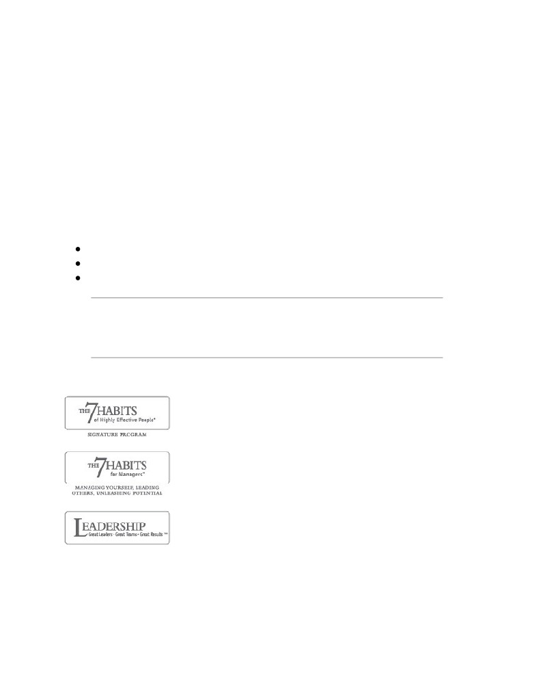
LEARN MORE
Want to learn more about how to develop yourself
personally, lead your team, or transform your
organization? There are three ways you can engage with
FranklinCovey to learn more about how to apply these
principles personally and professionally:
Take the 7 Habits PEQ (Personal Effectiveness Quotient).
Experience FranklinCovey’s award-winning training.
Read Stephen R. Covey’s other bestselling books.
1. Take the Personal Effectiveness Quotient (PEQ)
To see how effective you are—where your strengths lie and how you can improve—take the Personal
2. Award-Winning Training
Attend a live or live-online three-day The 7 Habits of Highly Effective People training. In this
dynamic, principle-based program, you will learn how to take initiative, balance key priorities,
improve interpersonal communication, leverage creative collaboration, and apply principles for
achieving a balanced life.
Are you a leader? Would you like to lead using the 7 Habits paradigms, principles, and tools?
Attend this live or live-online two-day training to learn how to be a more effective leader and
manager.
You can be an 8th Habit leader. FranklinCovey’s Leadership: Great Leaders, Great Teams, Great
Results program builds on the powerful principles of The 7 Habits of Highly Effective People and
helps you find your voice and helps others find theirs. This three-day program is offered live or
live-online.
Certify to Teach FranklinCovey Curriculum. You can certify to become a
licensed FranklinCovey facilitator within your organization.
For addition information on any of these training offerings or to become a
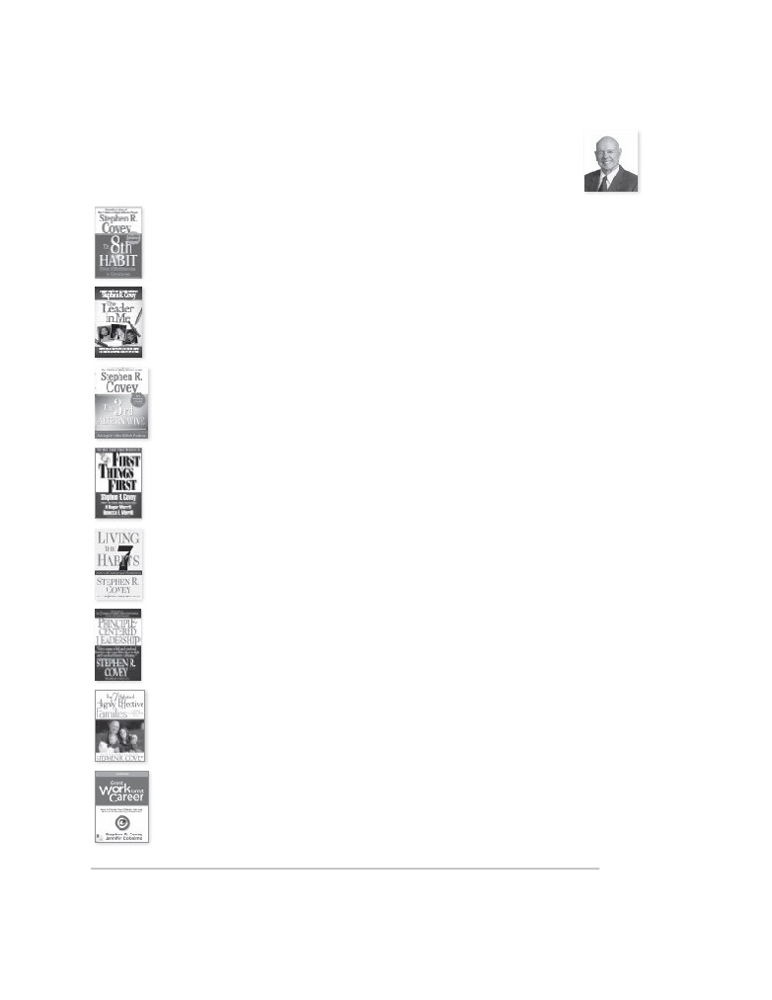
3. Bestselling Books by Dr. Stephen R. Covey
The 8th Habit: From Effectiveness to Greatness
Discover the 8th Habit and how to be a more effective leader in all parts of your life.
The 3rd Alternative
Learn how to solve conflicts and create synergistic solutions by building 3rd Alternatives.
Living The 7 Habits
Read stories by people whose lives have been changed by living the 7 Habits.
The 7 Habits of Highly Effective Families
Learn how to apply the 7 Habits to strengthen your family.
The Leader in Me
See how schools around the world are transformed by the 7 Habits principles.
First Things First
Discover how to Put First Things First in your personal and professional life.
Principle-Centered Leadership
Learn the core principles of leadership effectiveness in this practical handbook for leaders.
Great Work, Great Career
Apply the 7 Habits principles to your work and career to create meaningful and lasting impact.
FranklinCovey Co. (NYSE: FC) is a global company specializing in performance improvement. We
help organizations achieve results that require a change in human behavior. Our expertise is in seven
areas: leadership, execution, productivity, trust, sales performance, customer loyalty, and education.
FranklinCovey clients have included 90 percent of the Fortune 100, more than 75 percent of the
Fortune 500, thousands of small- and mid-sized businesses, as well as numerous government entities
and educational institutions. FranklinCovey has more than 40 direct and licensee offices providing
ENDNOTES
THE 7 HABITS—AN OVERVIEW
1 To see how effective you are—where your strengths lie and how you can improve—take the
HABIT 2: BEGIN WITH THE END IN MIND
2 Please refer to Appendix A.
3 If you would like to build your own mission statement or see additional examples of mission
HABIT 3: PUT FIRST THINGS FIRST
4 Please refer to Appendix B.
5 To see how effective you are—where your strengths lie and how you can improve—take the
PARADIGMS OF INTERDEPENDENCE
6 Some of the details of this story have been changed to protect the privacy of those involved.
HABIT 6: SYNERGIZE
7 To see how effective you are—where your strengths lie and how you can improve—take the
Table of Contents
Copyright
Foreword to the 25th Anniversary Edition by Jim Collins
A Covey Family Tribute to a Highly Effective Father
Foreword to the 2004 Edition by Stephen R. Covey
PART ONE: PARADIGMS AND PRINCIPLES
Inside-Out
The 7 Habits—An Overview
PART TWO: PRIVATE VICTORY
HABIT 1: Be Proactive
HABIT 2: Begin with the End in Mind
HABIT 3: Put First Things First
PART THREE: PUBLIC VICTORY
Paradigms of Interdependence
HABIT 4: Think Win/Win
HABIT 5: Seek First to Understand, Then to Be Understood
HABIT 6: Synergize
PART FOUR: RENEWAL
HABIT 7: Sharpen the Saw
Inside-Out Again
Afterword
Appendices
A Final Interview with Stephen R. Covey